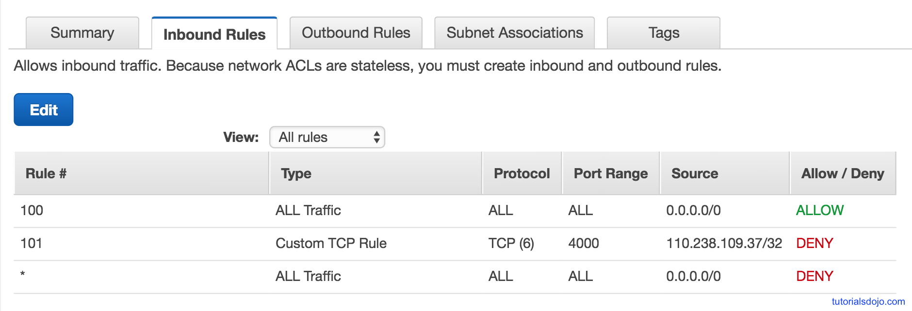
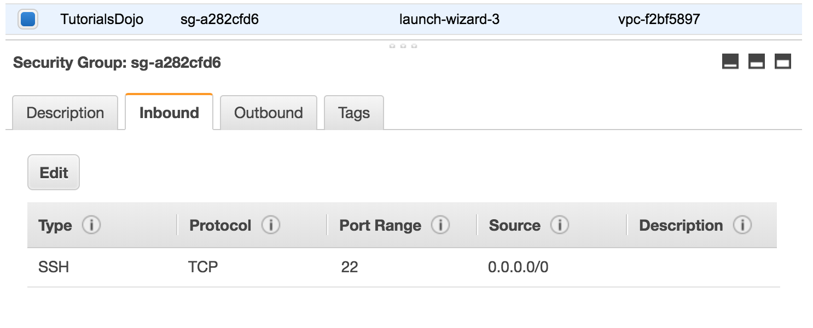
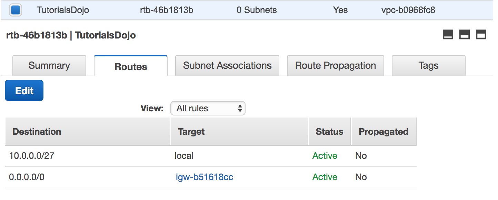
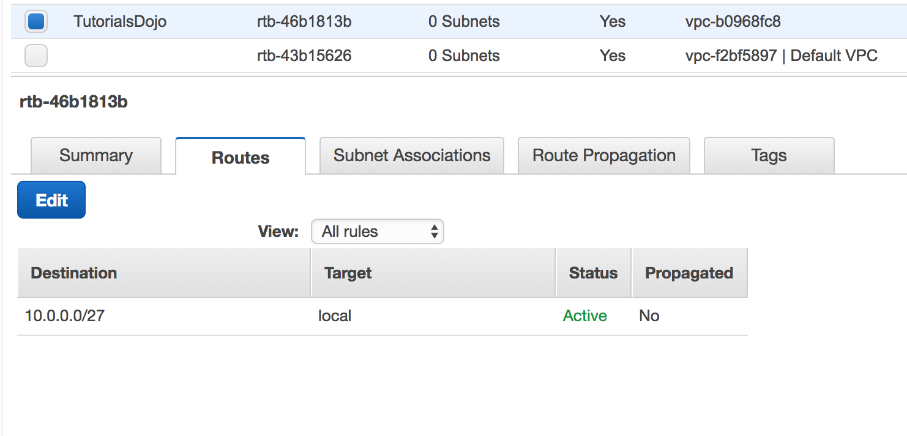

3·1B2-Q63Bonso set 2 · Q63AWS Shared Responsibility Modelnot in course
You are a Solutions Architect of a media company and you are instructed to migrate an on-premise web application architecture to AWS. During your design process, you have to give consideration to current on-premise security and determine which security attributes you are responsible for on AWS.
Which of the following does AWS provide for you as part of the shared responsibility model?
আপনি একটি media company-র Solutions Architect, এবং আপনাকে একটি on-premise web application architecture AWS-এ migrate করার নির্দেশ দেওয়া হয়েছে। design process-এর সময় আপনাকে বর্তমান on-premise security বিবেচনা করতে হবে এবং AWS-এ কোন security attribute-গুলোর দায়িত্ব আপনার, তা নির্ধারণ করতে হবে।
shared responsibility model-এর অংশ হিসেবে AWS আপনাকে নিচের কোনটি দেয়?
Not in the course: AWS Shared Responsibility Model naam kore course e porano hoy na.
Correct: B. Why it is right
Shared Responsibility Model e AWS er kaj holo security OF the cloud: physical facilities, hardware, physical network infrastructure, host OS ar virtualization layer. Customer er kaj holo security IN the cloud: data, guest OS patch, Security Group config, IAM user access.
Tai 4 ta option er moddhe shudhu physical network AWS er dayitto. Note: ei model ta SAA course er slide e naam kore nai (Cloud Practitioner topic), official page: aws.amazon.com/compliance/shared-responsibility-model.
Why the other options are wrong
A. Customer data sobsomoy customer er dayitto (encryption, access control) - security IN the cloud.
C. Instance er guest OS patch, Security Group config egulo customer kore; AWS shudhu host/virtualization porjonto dekhe.
D. Ke AWS environment e dhukte parbe (IAM users, permissions, MFA) - eta customer configure kore, AWS na.
Keyword:AWS provide kore shared responsibility te → security OF the cloud → Physical network infrastructure
Original explanation (English)
Security and Compliance is a shared responsibility between AWS and the customer. This shared model can help relieve customer’s operational burden as AWS operates, manages and controls the components from the host operating system and virtualization layer down to the physical security of the facilities in which the service operates. The customer assumes responsibility and management of the guest operating system (including updates and security patches), other associated application software as well as the configuration of the AWS provided security group firewall.
Customers should carefully consider the services they choose as their responsibilities vary depending on the services used, the integration of those services into their IT environment, and applicable laws and regulations. The nature of this shared responsibility also provides the flexibility and customer control that permits the deployment. As shown in the chart below, this differentiation of responsibility is commonly referred to as Security “of” the Cloud versus Security “in” the Cloud.
Refer to this diagram for a better understanding of the shared responsibility model.
What is the difference between an Availability Zone and an Edge location?
একটি Availability Zone এবং একটি Edge location-এর মধ্যে পার্থক্য কী?
Correct: C. Why it is right
Availability Zone holo ekta Region er bhitorer isolated location: ek ba ekadhik data center, redundant power/networking soho (PDF p. 21).
Edge Location (Point of Presence) holo Regions theke alada 400+ location (90+ city), jekhane CloudFront content cache kore user er kache deliver kore, tai latency kom hoy (PDF p. 22).
Why the other options are wrong
A. Edge location kono central control station na; resource manage hoy console/API diye, edge location er kaj content deliver kora.
B. Edge location er definition load balancing link na; ELB nijei ekta regional service, region er bhitore traffic bhag kore.
D. AZ resource er grouping na, eta data center location. Ar edge location region er bhitorer resource na; eta alada PoP, user er kache content deliver kore.
Keyword:AZ vs Edge location → AZ = region er bhitorer location, Edge = cached content kache deliver, latency kom
Original explanation (English)
The correct answer is option 3: An Availability Zone is an Amazon resource within an AWS region while an Edge location is used to deliver cached content to the closest location to reduce latency.
Amazon EC2 is hosted in multiple locations world-wide. These locations are composed of regions and Availability Zones. Each region is a separate geographic area. Each region has multiple, isolated locations known as Availability Zones.
Edge locations are used by the Amazon CloudFront service. It delivers your content through a worldwide network of data centers called edge locations.
Aside from AWS Region and Availability Zones, which of the following is part of the AWS Global Infrastructure that is used for content distribution?
AWS Region এবং Availability Zone ছাড়া, নিচের কোনটি AWS Global Infrastructure-এর অংশ, যা content distribution-এর জন্য ব্যবহার হয়?
Correct: A. Why it is right
AWS Global Infrastructure e ache: Regions, Availability Zones, Data Centers ar Edge Locations / Points of Presence (PDF p. 18).
Edge location e CloudFront content cache kore end user ke lower latency te deliver kore - eitai content distribution er part (PDF p. 22).
Why the other options are wrong
B. Bastion host holo ekta EC2 instance ja diye private instance e SSH kora hoy; eta global infrastructure er part na.
C. Hedge Location bole kono AWS jinish nai - Edge er sathe mil diye trap.
D. VPC Location bole kichu nai; VPC holo ekta region er moddhe tomar private virtual network.
Keyword:Region ar AZ chara global infrastructure + content distribution → Edge Location
Original explanation (English)
An edge location helps deliver high availability, scalability, and performance of your application for all of your customers from anywhere in the world. This is used by other services such as Lambda and Amazon CloudFront.
Amazon CloudFront is a web service that gives businesses and web application developers an easy and cost-effective way to distribute content with low latency and high data transfer speeds. CloudFront delivers your files to end-users using a global network of edge locations.
Option 2 is incorrect as it is not part of the AWS Global Infrastructure. It is just a host used to allow SSH access to your EC2 instances.
3·4B5-Q36Bonso set 5 · Q36AWS Shared Responsibility Modelnot in course
You are a Solutions Architect working for a major investment bank in London. Your IT Manager instructed you to prepare a migration plan of your on-premise application architecture to AWS. During your design process, you considered the current security of your on-premise application.
Which among the following does AWS provide for you as part of the shared responsibility model? (Choose 2)
আপনি London-এর একটি বড় investment bank-এ Solutions Architect হিসেবে কাজ করেন। আপনার IT Manager আপনাকে on-premise application architecture AWS-এ নেওয়ার একটি migration plan তৈরি করতে বলেছেন। design process-এর সময় আপনি on-premise application-এর বর্তমান security বিবেচনা করেছেন।
shared responsibility model-এর অংশ হিসেবে AWS আপনাকে নিচের কোনগুলো দেয়? (2টি বেছে নিন) (Choose 2)
Choose 2 answers
Not in the course: AWS Shared Responsibility Model (security OF vs IN the cloud) SAA course er slide e nai; eta Cloud Practitioner topic.
Correct: B, D. Why it is right
AWS er dayitto = security OF the cloud. Duto correct:
Physical network infrastructure: data center er network, hardware, facility AWS secure kore.
Virtualization infrastructure: hypervisor/virtualization layer AWS manage kore, customer eta touch-i korte pare na.
Instance er bhitore (guest OS, SG) ar IAM access customer er kaj. Ei model SAA course slide e nai, official page: aws.amazon.com/compliance/shared-responsibility-model.
Why the other options are wrong
A. EC2 instance security (guest OS patch, Security Group rule) customer er dayitto - security IN the cloud.
C. IAM diye ke access pabe ta customer thik kore (users, policies, MFA); AWS shudhu IAM service ta chalay.
Keyword:AWS provide kore (Choose 2) → OF the cloud → Physical network + Virtualization
Original explanation (English)
Security and Compliance is a shared responsibility between AWS and the customer. This shared model can help relieve the customer’s operational burden as AWS operates, manages, and controls the components from the host operating system and virtualization layer down to the physical security of the facilities in which the service operates. The customer assumes responsibility and management of the guest operating system (including updates and security patches), other associated application software as well as the configuration of the AWS provided security group firewall.
Customers should carefully consider the services they choose as their responsibilities vary depending on the services used, the integration of those services into their IT environment, and applicable laws and regulations. The nature of this shared responsibility also provides the flexibility and customer control that permits the deployment. As shown in the chart below, this differentiation of responsibility is commonly referred to as Security “of” the Cloud versus Security “in” the Cloud.
Refer to this diagram for a better understanding of the shared responsibility model.
You have a new joiner in your orgranization. You had provisioned an IAM user for the new employee in AWS however, the user is not able to perform any actions. What could be the reason for this?
আপনার orgranization-এ একজন নতুন কর্মী যোগ দিয়েছেন। আপনি AWS-এ নতুন employee-র জন্য একটি IAM user provision করেছেন, কিন্তু user কোনো action করতে পারছেন না। এর কারণ কী হতে পারে?
Correct: C. Why it is right
Notun IAM user kono permission chara toiri hoy. Policy attach na kora porjonto sob kichu deny (implicit deny).
Course hands-on e dekho: Stephane ke admin group theke remove korle sathe sathe access denied, policy attach korle abar kaj kore (Lecture 4). Fix: user ke group e add koro ba policy attach koro.
Why the other options are wrong
A. Partial permission default e deya hoy na; shuru te zero permission.
B. Full permission default e dile least privilege bhange; AWS emon kore na.
D. 24 ghonta wait er kono niyom nai; policy attach korle almost sathe sathe kaj kore.
Keyword:new IAM user + not able to perform any actions → default no permissions
Original explanation (English)
The reason for this issue is that IAM users are created with no permissions by default. That means that when you created the new IAM user, you might not provisioned any permissions to the user. Hence, option 3 is correct and conversely, options 1 and 2 are wrong.
Option 4 is incorrect because provisions are applied immediately, and not after 24 hours.
The IAM user might need to make API calls or use the AWS CLI or the Tools for Windows PowerShell. In that case, create an access key (an access key ID and a secret access key) for that user. This is called Programmatic access.
If the user needs to access AWS resources from the AWS Management Console, create a password and provide it to the user.
What are the main benefits of IAM groups? (Choose 2)
IAM group-এর প্রধান সুবিধাগুলো কী? (2টি বেছে নিন) (Choose 2)
Choose 2 answers
Correct: C, D. Why it is right
Group e policy attach korle group er sob user oi permission inherit kore (PDF p. 27). Duto benefit:
Easier management: notun joiner ke shudhu group e add koro; job change hole group bodlao.
Ek sathe onek user ke policy: ekbar group e attach = sob member pay.
Why the other options are wrong
A. Custom policy banano group er feature na; policy IAM Policies section e banano hoy, tarpor user/group/role e attach.
B. EC2 ke S3 access dite IAM Role lage, group na.
Keyword:main benefits of IAM groups → easier management + policy many users at once
Original explanation (English)
An IAM group is a collection of IAM users. Groups let you specify permissions for multiple users, which can make it easier to manage the permissions for those users. For example, you could have a group called Admins and give that group the types of permissions that administrators typically need. Any user in that group automatically has the permissions that are assigned to the group.
If a new user joins your organization and needs administrator privileges, you can assign the appropriate permissions by adding the user to that group. Similarly, if a person changes jobs in your organization, instead of editing that user's permissions, you can remove him or her from the old groups and add him or her to the appropriate new groups.
Which of the following can you manage in the IAM Dashboard? (Choose 3)
IAM Dashboard-এ আপনি নিচের কোনগুলো manage করতে পারেন? (3টি বেছে নিন) (Choose 3)
Choose 3 answers
Correct: A, B, D. Why it is right
IAM console theke manage kora jay Users, User groups, Roles, Policies, ar Identity providers (SAML/OIDC diye bahirer login IAM e trust kora).
Course hands-on e Users, Groups, Policies, Roles IAM console e dekhano hoy (Lecture 2, 4, 15).
Why the other options are wrong
C. Cost Allocation Reports Billing/Cost Management er jinish, IAM dashboard e na.
Keyword:IAM Dashboard e manage → Users, Identity providers, Policies
Original explanation (English)
AWS Identity and Access Management (IAM) is a web service that helps you securely control access to AWS resources. You use IAM to control who is authenticated (signed in) and authorized (has permissions) to use resources. You can configure Users, Groups, Identity Providers, Policies, and many more.
Course e STS naam kore Section 04 e ase na; EC2 role er pechone ei temporary credential kaj kore.
Why the other options are wrong
A. SQS holo message queue service; credential issue kore na.
C. SES holo email sending service; credential er kaj na.
D. STS ei kaj kore, tai 'none' bhul.
E. Shudhu STS temporary credential dey; SQS/SES na.
Keyword:temporary security credentials → STS
Original explanation (English)
AWS Security Token Service (AWS STS) is the service that you can use to create and provide trusted users with temporary security credentials that can control access to your AWS resources. Temporary security credentials work almost identically to the long-term access key credentials that your IAM users can use.
Option 1 is incorrect as Amazon SQS is the queuing service.
Option 3 is incorrect as Amazon SES is the email service provided by AWS.
Option 4 is incorrect because you can STS to provide temporary security credentials.
Option 5 is incorrect as only STS has the ability to provide temporary security credentials.
What is the best practice for managing API credentials in AWS?
AWS-এ API credential manage করার best practice কী?
Correct: A. Why it is right
Best practice: IAM Role banao ar EC2 instance e attach koro (PDF p. 37, 39). Instance tokhon role theke temporary credential pay, kono access key instance e rakhte hoy na.
Course bole: AWS service ke permission dite Roles use koro.
Why the other options are wrong
B. Instance e long-term key rakhle leak er risk, ar rotate kora kothin.
C. Security Group network firewall (port/IP); ete credential rakha jay na.
D. Bastion host e key rakhle o key long-term ar leak hote pare; role-i thik upay.
Keyword:best practice for API credentials on EC2 → IAM role assign to EC2
Original explanation (English)
The best practice in handling API Credentials is to create a new role in the Identity Access Management (IAM) service and then assign it to a specific EC2 instance. In this way, you have a secure and centralized way of storing and managing your credentials.
Options 2, 3, and 4 are incorrect because it is not secure to store nor use the API credentials from any EC2 instance. You should use IAM service instead.
You are building a cloud infrastructure where you have EC2 instances that require access to various AWS services such as S3 and Redshift. You will also need to provision access to system administrators so they can deploy and test their changes.
Which configuration should be used to ensure that AWS Credentials like Access Keys and Secret Access Keys are secured and not compromised? (Choose 2)
আপনি একটি cloud infrastructure তৈরি করছেন, যেখানে EC2 instance-গুলোর S3 এবং Redshift-এর মতো বিভিন্ন AWS service-এ access দরকার। system administrator-দের জন্যও access provision করতে হবে, যাতে তারা তাদের change deploy ও test করতে পারে।
Access Keys এবং Secret Access Keys-এর মতো AWS Credentials যাতে secured থাকে এবং compromised না হয়, তা নিশ্চিত করতে কোন configuration ব্যবহার করা উচিত? (2টি বেছে নিন) (Choose 2)
Choose 2 answers
Correct: A, B. Why it is right
Duto part:
System admins: MFA on koro; password leak holeo device chara login hobe na (PDF p. 30).
EC2 instances (S3, Redshift access): IAM role attach koro, tahole instance e access key rakhte hoy na (PDF p. 37).
Why the other options are wrong
C. EC2 te access key store korle leak er risk; question-i chay key jeno compromise na hoy.
D. IAM user manusher jonno; EC2 te user dile tar access key instance e rakhte hobe. Service er jonno role use koro.
Keyword:EC2 needs S3/Redshift + admins + keys not compromised → IAM role + MFA
Original explanation (English)
In this scenario, the correct answers are:
-Enable Multi-Factor Authentication
-Assign an IAM role to the Amazon EC2 instance
Always remember that you should associate IAM roles to EC2 instances and not an IAM user, for the purpose of accessing other AWS services. IAM roles are designed so that your applications can securely make API requests from your instances, without requiring you to manage the security credentials that the applications use. Instead of creating and distributing your AWS credentials, you can delegate permission to make API requests using IAM roles.
AWS Multi-Factor Authentication (MFA) is a simple best practice that adds an extra layer of protection on top of your user name and password. With MFA enabled, when a user signs in to an AWS website, they will be prompted for their user name and password (the first factor—what they know), as well as for an authentication code from their AWS MFA device (the second factor—what they have). Taken together, these multiple factors provide increased security for your AWS account settings and resources. You can enable MFA for your AWS account and for individual IAM users you have created under your account. MFA can also be used to control access to AWS service APIs.
What is a best practice when creating IAM policies?
IAM policy তৈরি করার সময় একটি best practice কী?
Correct: A. Why it is right
Least privilege = kaj korar jonno shudhu je permission lage tai dao (PDF p. 26). Minimum diye shuru koro, dorkar hole pore add koro.
Question er definition-ta-i thik ache shudhu option A te.
Why the other options are wrong
B. Sob permission deya least privilege er ulta; bhul ba hack hole sob kichu risk e.
C. Least privilege er definition bhul bola hoyeche: eta root access koto jon pabe tar bepar na, protita identity ke kom permission deyar bepar.
D. Dorkar er baire extra administrative operations dile least privilege bhange; shudhu oi task er permission dao.
Keyword:best practice creating IAM policies → least privilege = only permissions required for the task
Original explanation (English)
One of the best practices in Amazon IAM is to grant least privilege.
When you create IAM policies, follow the standard security advice of granting least privilege—that is, granting only the permissions required to perform a task. Determine what users need to do and then craft policies for them that let the users perform only those tasks.
Start with a minimum set of permissions and grant additional permissions as necessary. Doing so is more secure than starting with permissions that are too lenient and then trying to tighten them later.
Defining the right set of permissions requires some research. Determine what is required for the specific task, what actions a particular service supports, and what permissions are required in order to perform those actions.
You are the Solutions Architect for your company's AWS account of approximately 300 IAM users. They have a new company policy that will change the access of 100 of the IAM users to have a particular sort of access to Amazon S3 buckets.
What will you do to avoid the time-consuming task of applying the policy at the individual user?
আপনি আপনার company-র AWS account-এর Solutions Architect, যেখানে প্রায় 300 জন IAM user আছে। তাদের একটি নতুন company policy আছে, যা 100 জন IAM user-এর access পরিবর্তন করে Amazon S3 bucket-এ একটি নির্দিষ্ট ধরনের access দেবে।
প্রতিটি user-এ আলাদাভাবে policy apply করার সময়সাপেক্ষ কাজ এড়াতে আপনি কী করবেন?
Correct: A. Why it is right
100 user ke eki access dite IAM group banao, user gulo add koro, policy ekbar group e attach koro (PDF p. 27, 39). Sob member automatically inherit kore.
Pore user add/remove o shohoj - time-consuming per-user kaj lage na.
Why the other options are wrong
B. Script diye protita user e policy dile kaj hoy, kintu pore 100 user alada alada manage kora kothin; group er moto central control nai.
C. Unlimited access least privilege bhange, ar protita user er jonno alada policy abar per-user kaj.
D. Role er bhitor user 'add' kora jay na; role assume kora hoy, eta user rakhar container na. Users group kore rakhte hoy group e.
Keyword:100 of 300 users + avoid applying to individual user → IAM group + policy on group
Original explanation (English)
In this scenario, the best option is to group the set of users in an IAM Group and then apply a policy with the required access to the Amazon S3 bucket. This will enable you to easily add, remove, and manage the users instead of manually adding a policy to each and every 100 IAM users.
Option 2 is incorrect because you need a new IAM Group for this scenario and not assign a policy to each users via a shell script. This method can save you time but afterwards, it will be difficult to manage all 100 users that are not contained in an IAM Group.
Option 3 is incorrect because you need a new IAM Group and the method is also time consuming.
Option 4 is incorrect because you need to use an IAM Group and not an IAM role.
In your Amazon VPC, you have 1000 IAM users. There is a new project management application that uses Amazon S3. To test this application, you were instructed by your boss to allow 300 IAM users to have unlimited privileges to the S3 bucket that the application is using.
As a Solutions Architect, how can you implement this effectively to avoid the time-consuming task of applying the policy for each and every 300 IAM users?
আপনার Amazon VPC-তে 1000 জন IAM user আছে। একটি নতুন project management application আছে, যা Amazon S3 ব্যবহার করে। এই application test করার জন্য আপনার boss আপনাকে নির্দেশ দিয়েছেন যে application যে S3 bucket ব্যবহার করছে, তাতে 300 জন IAM user-কে unlimited privilege দিতে হবে।
একজন Solutions Architect হিসেবে, 300 জন IAM user-এর প্রত্যেকের জন্য আলাদাভাবে policy apply করার সময়সাপেক্ষ কাজ এড়িয়ে কীভাবে আপনি এটি কার্যকরভাবে implement করবেন?
Correct: B. Why it is right
300 user ke same S3 access dite IAM group banao, 300 user add koro, S3 policy group e attach koro. Ekbar attach, sob user pay (PDF p. 27).
Group users er jonno, role service/assume er jonno - ei difference mone rakho.
Why the other options are wrong
A. Role e user add kora jay na; role assume kora hoy. Onek user ke ek permission dite group use koro.
C. Shell script per-user policy dey; kaj hoy kintu pore manage kora kothin, group er subidha nai.
D. S3 ACL individual IAM user ke grant dite pare na (account/predefined group level), ar unlimited bucket policy least privilege bhange.
Keyword:300 IAM users + avoid applying for each user → IAM group
Original explanation (English)
In this scenario, the best option is to group the set of users in an IAM Group and then apply a policy with the required access to the Amazon S3 bucket. This will enable you to easily add, remove, and manage the users instead of manually adding a policy to each and every 300 IAM users.
Option 1 is incorrect because you need to use an IAM Group and not an IAM role.
Option 3 is incorrect because you need a new IAM Group for this scenario and not assign a policy to each user via a shell script. This method can save you time but afterwards, it will be difficult to manage all 300 users which are not grouped in an IAM Group.
Option 4 is incorrect because you need a new IAM Group for this and not by using an ACL.
What is required when you need to specify a resource unambiguously across all of AWS, such as in IAM policies, Amazon Relational Database Service (Amazon RDS) tags, and API calls?
IAM policy, Amazon Relational Database Service (Amazon RDS) tag এবং API call-এর মতো ক্ষেত্রে, যখন পুরো AWS জুড়ে একটি resource-কে দ্ব্যর্থহীনভাবে (unambiguously) specify করতে হয়, তখন কী প্রয়োজন হয়?
Correct: C. Why it is right
ARN (Amazon Resource Name) diye AWS er je kono resource ke puro AWS jure unambiguously identify kora jay - IAM policy er Resource field, tags, API call e.
D. Amazon Resource Namespace bole AWS identifier nai; service namespace ARN er ekta part matro.
Keyword:specify a resource unambiguously in IAM policies → ARN
Original explanation (English)
Amazon Resource Names (ARNs) uniquely identify AWS resources. We require an ARN when you need to specify a resource unambiguously across all of AWS, such as in IAM policies, Amazon Relational Database Service (Amazon RDS) tags, and API calls.
You are consulted by a multimedia company that needs to deploy web services to an AWS region which they have not used before. The company currently has an IAM role for their Amazon EC2 instance which permits the instance to access Amazon DynamoDB. They want their EC2 instances in the new region to have the exact same privileges.
What should you do to accomplish this?
একটি multimedia company আপনার পরামর্শ নিচ্ছে, যাদের এমন একটি AWS region-এ web service deploy করতে হবে যা তারা আগে কখনো ব্যবহার করেনি। company-টির বর্তমানে তাদের Amazon EC2 instance-এর জন্য একটি IAM role আছে, যা instance-কে Amazon DynamoDB-তে access করতে দেয়। তারা চায় নতুন region-এ তাদের EC2 instance-গুলোর হুবহু একই privilege থাকুক।
এটি করতে আপনার কী করা উচিত?
Correct: B. Why it is right
IAM global service (PDF p. 25, 23): IAM e region select korte hoy na, user/role sob region e available.
Tai existing DynamoDB role ta new region er EC2 te sorasori attach koro. Notun role ba copy lage na.
Why the other options are wrong
A. Notun role banano lage na; IAM region-specific na, purono role-i kaj korbe. Extra kaj ar duplicate permission manage korte hobe.
C. IAM role region e copy korar dorkar nai; IAM global, ekta role sob region e use hoy.
D. AMI te IAM role thake na; role launch er somoy alada kore attach hoy. Region e AMI copy role er problem solve kore na.
Keyword:new region + same privileges + existing IAM role → IAM global → assign existing role
Original explanation (English)
In this scenario, the company has an existing IAM role hence you don’t need to create a new one. IAM roles are global service that are available to all regions hence, all you have to do is assign the existing IAM role to the instance in the new region.
Option 1 is incorrect because you don't need to create another IAM role - there is already an existing one.
Option 3 is incorrect as you don't need duplicate IAM roles for each region. One IAM role suffices for the instances on two regions.
Option 4 is incorrect because creating an AMI image does not affect the IAM role of the instance.
You are a Solutions Architect working for a startup company which is currently migrating their production environment to AWS. Your manager asked you to setup access to the AWS console using Identity Access Management (IAM). You have created 5 users for your system administrators.
What further steps do you need to take to enable your system administrators to get access to the AWS console?
আপনি একটি startup company-তে Solutions Architect হিসেবে কাজ করেন, যারা বর্তমানে তাদের production environment AWS-এ migrate করছে। আপনার manager আপনাকে Identity Access Management (IAM) ব্যবহার করে AWS console-এ access setup করতে বলেছেন। আপনি আপনার system administrator-দের জন্য 5 জন user তৈরি করেছেন।
আপনার system administrator-রা যাতে AWS console-এ access পায়, সেজন্য আপনাকে আর কী কী step নিতে হবে?
Correct: C. Why it is right
AWS Management Console access password diye protected (PDF p. 33). Tai protita IAM user er password set kore admin der dao.
Course summary: IAM user er AWS Console er jonno password thake (PDF p. 40).
Why the other options are wrong
A. Access key ID ar secret access key CLI/SDK (programmatic) access er jonno, console login er jonno na.
B. MFA ar password policy security baray, kintu password chara console access-i hobe na.
D. Security Group EC2 er network firewall; IAM user ke security group e add kora jay na.
Keyword:access to the AWS console → password for each user
Original explanation (English)
The AWS Management Console is the web interface used to manage your AWS resources using your web browser. To access this, your users should have a password that they can use to login to the web console.
Option 1 is incorrect as the secret access key and access key id are used to trigger AWS API calls.
Option 2 is incorrect because the multi-factor authentication and a password policy are just additional security measures for the IAM user but these won't enable them to access the AWS Management Console.
Option 4 is incorrect as you could not add an IAM user to a security group. Remember that a security group is used for EC2 instances only.
In IAM, what is an entity that defines resource permissions?
IAM-এ কোন entity resource permission define করে?
Correct: A. Why it is right
Policy holo ekta JSON document je permission define kore (PDF p. 26). Identity (user/group/role) e attach korle identity-based policy, resource e (jemon S3 bucket) attach korle resource-based policy.
Request ashle AWS ei policy check kore Allow/Deny thik kore.
Why the other options are wrong
B. Permission holo result (ki kora jabe), eta define kore policy; permission nijei alada entity na.
C. Role ekta identity jar permission ase attach kora policy theke; role nijei permission define kore na.
D. Resource holo je jinish e access deya hoy (S3 bucket, EC2), permission define kore na.
Keyword:entity that defines permissions → Policy
Original explanation (English)
A policy is an entity in AWS that, when attached to an identity or resource, defines their permissions. AWS evaluates these policies when a principal, such as a user, makes a request. Permissions in the policies determine whether the request is allowed or denied. Policies are stored in AWS as JSON documents attached to principals as identity-based policies, or to resources as resource-based policies.
In a tech company that you are working for, there is a requirement to allow one IAM user to modify the configuration of one of your Elastic Load Balancers (ELB). This access is required only once.
Which of the following would be the best way to allow this access?
আপনি যে tech company-তে কাজ করেন, সেখানে একটি requirement আছে: একজন IAM user-কে আপনার Elastic Load Balancer (ELB)-গুলোর একটির configuration modify করতে দিতে হবে। এই access শুধু একবারই দরকার।
এই access দেওয়ার সবচেয়ে ভালো উপায় নিচের কোনটি?
Correct: B. Why it is right
Ekbar er jonno access lagle IAM Role best: ELB modify er policy role e attach koro, user role assume kore temporary credential pay, kaj shesh hole access remove koro. Root share ba notun long-term user lage na.
Note: option e 'associate role to user' bola - asole user role assume kore. Wording loose, tobe role-i expected answer.
Why the other options are wrong
A. Security Group network traffic control kore (port/IP); ELB config modify korar IAM permission dey na.
C. Ek kaj er jonno notun IAM user banale extra long-term credential toiri hoy; one physical user = one IAM user best practice bhange.
D. Root account kokhono share korbe na (PDF p. 39); 8 ghonta holeo full access deya hoy.
Keyword:one IAM user + required only once → temporary access → IAM Role
Original explanation (English)
In this scenario, the best option is to use IAM Role to provide access. You can create a new IAM Role then associate it to the IAM user. Attach a policy allowing access to modify the ELB and once it is done, remove the IAM role to the user.
An IAM role is similar to a user in that it is an AWS identity with permission policies that determine what the identity can and cannot do in AWS. However, instead of being uniquely associated with one person, a role is intended to be assumable by anyone who needs it. Also, a role does not have standard long-term credentials (password or access keys) associated with it. Instead, if a user assumes a role, temporary security credentials are created dynamically and provided to the user.
You can use roles to delegate access to users, applications, or services that don't normally have access to your AWS resources. For example, you might want to grant users in your AWS account access to resources they don't usually have, or grant users in one AWS account access to resources in another account. Or you might want to allow a mobile app to use AWS resources, but not want to embed AWS keys within the app (where they can be difficult to rotate and where users can potentially extract them). Sometimes you want to give AWS access to users who already have identities defined outside of AWS, such as in your corporate directory. Or, you might want to grant access to your account to third parties so that they can perform an audit on your resources.
You are working as a Solution Architect for a startup company in Silicon Valley. Their application architecture is currently setup to store both the access key ID and the secret access key in a plain text file on a custom Amazon Machine Image(AMI). The EC2 instances, which are created by using this AMI, are using the stored access keys to connect to a DynamoDB table. What should you do to make the current architecture more secure?
আপনি Silicon Valley-র একটি startup company-তে Solution Architect হিসেবে কাজ করছেন। তাদের application architecture বর্তমানে এমনভাবে setup করা যে access key ID এবং secret access key দুটোই একটি custom Amazon Machine Image(AMI)-এর ভেতরে একটি plain text file-এ store করা থাকে। এই AMI ব্যবহার করে তৈরি EC2 instance-গুলো একটি DynamoDB table-এ connect করতে store করা access key-গুলো ব্যবহার করছে।
বর্তমান architecture আরও secure করতে আপনার কী করা উচিত?
Correct: C. Why it is right
AMI te plain text access key rakha risky: AMI/instance access thaka je keu key porte pare, ar rotate kora kothin. Fix: key remove koro, DynamoDB access er IAM role banao, EC2 te attach koro (PDF p. 37).
A. Glacier archive storage; key okhane rakhleo long-term key-i thake ar app ke ta porte hobe - problem solve hoy na.
B. S3 te key rakhleo long-term key ache, leak er risk thake; role diye key-i rakhte hoy na.
D. AMI te plain text key mane secure na; AMI share/copy hole key o chhoray.
Keyword:access keys in plain text on AMI + more secure → remove keys + IAM role on EC2
Original explanation (English)
You should use an IAM role to manage temporary credentials for applications that run on an EC2 instance. When you use an IAM role, you don't have to distribute long-term credentials (such as a user name and password or access keys) to an EC2 instance.
Instead, the role supplies temporary permissions that applications can use when they make calls to other AWS resources. When you launch an EC2 instance, you specify an IAM role to associate with the instance. Applications that run on the instance can then use the role-supplied temporary credentials to sign API requests.
Hence, the best option here is to remove the stored access keys first in the AMI. Then, create a new IAM role with permissions to access the DynamoDB table and assign it to the EC2 instances.
Options 1 and 2 are incorrect because S3 and Glacier are mainly used as a storage option. It is better to use an IAM role instead of storing access keys in these storage services.
Option 4 is incorrect because you can make the architecture more secure by using IAM.
You deployed a web application to an EC2 instance that adds a variety of photo effects to a picture uploaded by the users. The application will put the generated photos to a S3 bucket by sending PUT requests to the S3 API.
What is the best option for this scenario considering that you need to have API credentials to be able to send a request to the S3 API?
আপনি একটি EC2 instance-এ একটি web application deploy করেছেন, যা user-দের upload করা ছবিতে নানা ধরনের photo effect যোগ করে। application-টি S3 API-তে PUT request পাঠিয়ে তৈরি হওয়া photo-গুলো একটি S3 bucket-এ রাখবে।
S3 API-তে request পাঠাতে API credential থাকা দরকার, এটা বিবেচনা করে এই scenario-র জন্য সবচেয়ে ভালো option কোনটি?
Correct: B. Why it is right
EC2 theke S3 te PUT korte IAM role (S3 permission soho) banao ar instance e assign koro (PDF p. 37). App role theke temporary credential niye request sign kore.
Note: option e 'new EC2 instance' bola, kintu ajkal existing instance eo role attach kora jay.
Why the other options are wrong
A. Encrypt korleo long-term key disk e thake, encryption key manage ar rotate korar jhamela; role e eta lage na.
C. Glacier holo data archive storage, credential manage korar jayga na.
D. Web app er root directory te key rakha sobcheye risky - bhul config e web theke-i key leak hote pare.
Keyword:EC2 app + PUT to S3 API + API credentials → IAM role on EC2
Original explanation (English)
The best option is to create a role in IAM. Afterwards, assign this role to a new EC2 instance. Applications must sign their API requests with AWS credentials. Therefore, if you are an application developer, you need a strategy for managing credentials for your applications that run on EC2 instances.
You can securely distribute your AWS credentials to the instances, enabling the applications on those instances to use your credentials to sign requests while protecting your credentials from other users. However, it's challenging to securely distribute credentials to each instance, especially those that AWS creates on your behalf such as Spot Instances or instances in Auto Scaling groups. You must also be able to update the credentials on each instance when you rotate your AWS credentials.
In this scenario, you have to use IAM roles so that your applications can securely make API requests from your instances without requiring you to manage the security credentials that the applications use. Instead of creating and distributing your AWS credentials, you can delegate permission to make API requests using IAM roles.
Options 1 and 4 are incorrect. Though you can store and use the API credentials in the EC2 instance, it will be difficult to manage just as mentioned above. You have to use IAM Roles.
Option 3 is incorrect as Amazon Glacier is used for data archives and not for managing API credentials.
What are the different types of IAM identities? (Choose 3)
IAM identity-র বিভিন্ন type কী কী? (3টি বেছে নিন) (Choose 3)
Choose 3 answers
Correct: A, B, D. Why it is right
IAM identity tin dhoroner (PDF p. 40):
Users: physical manush er sathe map.
Groups: users er collection.
Roles: EC2 instance/AWS service er jonno identity.
Why the other options are wrong
C. EC2 instance IAM identity na, eta ekta resource; instance permission pay attach kora role theke.
E. Security Group EC2/VPC er network firewall, IAM identity na.
F. AWS account holo container jar bhitore IAM identity thake; account nijei IAM identity type na.
Keyword:types of IAM identities (Choose 3) → Users, Groups, Roles
Original explanation (English)
There are 3 IAM identities: Users, Groups, and Roles.
An IAM user is an entity that you create in AWS. The IAM user represents the person or service that uses the IAM user to interact with AWS. A primary use for IAM users is to give people the ability to sign in to the AWS Management Console for interactive tasks and to make programmatic requests to AWS services using the API or CLI.
An IAM group is a collection of IAM users. You can use groups to specify permissions for a collection of users, which can make these permissions easier to manage for the users. For example, you could have a group called Admins and give that group the types of permissions that administrators typically need.
An IAM role is very similar to a user in that it is an identity with permission policies that determine what the identity can and cannot do in AWS. However, a role does not have any credentials (password or access keys) associated with it.
Which of the following must be done before your newly created IAM User can successfully make API calls to your AWS Services?
আপনার নতুন তৈরি করা IAM User যাতে সফলভাবে আপনার AWS Services-এ API call করতে পারে, তার আগে নিচের কোনটি অবশ্যই করতে হবে?
Correct: D. Why it is right
API call (CLI/SDK) access keys diye protected (PDF p. 33). Access key chara user programmatic call sign-i korte parbe na, tai age access key create koro.
Note: call successful hote user er permission policy-o lagbe; tobe 'API call' er jonno expected answer access keys.
Why the other options are wrong
A. Policy permission dey, kintu access key chara user API call-i pathate parbe na; tai ei question e key-i main step.
B. MFA security baray, kintu API call er jonno credential (access key) dey na.
C. 'API Policy' bole alada kono IAM jinish nai; permission normal IAM policy diye hoy.
Keyword:make API calls → Access Keys
Original explanation (English)
Users need their own access keys to make programmatic calls to AWS from the AWS Command Line Interface (AWS CLI), Tools for Windows PowerShell, the AWS SDKs, or direct HTTP calls using the APIs for individual AWS services.
To fill this need, you can create, modify, view, or rotate access keys (access key IDs and secret access keys) for IAM users. When you create an access key, IAM returns the access key ID and secret access key. You should save these in a secure location and give them to the user.
An AWS account has an ID of 0499802888. Which of the following URLs would you provide to the IAM user to be able to access the AWS Console?
একটি AWS account-এর ID হলো 0499802888। IAM user যাতে AWS Console-এ access করতে পারে, সেজন্য আপনি তাকে নিচের কোন URL দেবেন?
Correct: A. Why it is right
IAM user er console sign-in URL format: https://ACCOUNT_ID.signin.aws.amazon.com/console. Account ID er bodole account alias o deya jay (course hands-on e alias banano dekhay, Lecture 2).
Tai account 0499802888 er jonno A.
Why the other options are wrong
B. Format ulta: account ID 'signin' er age bose, pore na; ar majhe space o bhul.
C. Eta generic sign-in page; account-specific URL na, user ke account ID alada kore type korte hobe.
D. Eta AWS er public website, account er IAM sign-in URL na.
Keyword:account ID + IAM user access console → ACCOUNT_ID.signin.aws.amazon.com/console
Original explanation (English)
To use the AWS Management Console, IAM users must provide their account ID or account alias in addition to their username and password. When you, as an administrator, create an IAM user in the console, you must send the sign-in credentials to that user, including the username and the URL to the account sign-in page.
Your unique account sign-in page URL is created automatically when you begin using IAM. You do not have to do anything to use this sign-in page. You can also customize the account sign-in URL for your account if you want the URL to contain your company name (or other friendly identifier) instead of your AWS account ID number.
The AWS Identity and Access Management service is used to manage which items? (Choose 3)
AWS Identity and Access Management service কোন item-গুলো manage করতে ব্যবহার হয়? (3টি বেছে নিন) (Choose 3)
Choose 3 answers
Correct: B, C, D. Why it is right
IAM manage kore ke ki access pabe:
API Keys (access keys) - CLI/SDK er jonno, IAM console e create hoy (PDF p. 33).
MFA devices - root ar IAM users er jonno (PDF p. 30).
Roles - AWS service er jonno (PDF p. 37).
Why the other options are wrong
A. Security Groups EC2/VPC er network firewall, IAM er na.
Keyword:IAM manage kore (Choose 3) → API Keys, MFA, Roles
Original explanation (English)
AWS Identity and Access Management (IAM) enables you to securely control access to AWS services and resources for your users. Using IAM, you can create and manage AWS users, roles and groups, and use permissions to allow and deny their access to AWS resources. It also allows you to provision API Keys and Multi-Factor Authentication to your users.
You are building the development, testing, UAT, and production enviroment of your company's new cloud infrastructure. All of the environments will only be under one VPC.
In this scenario, how can you categorize your EC2 resources in different ways such as by purpose, owner, or environment?
আপনি আপনার company-র নতুন cloud infrastructure-এর development, testing, UAT এবং production enviroment তৈরি করছেন। সব environment শুধু একটি VPC-র অধীনে থাকবে।
এই scenario-তে আপনি কীভাবে আপনার EC2 resource-গুলোকে purpose, owner বা environment-এর মতো বিভিন্ন ভাবে categorize করতে পারেন?
Correct: C. Why it is right
Tags holo key/value label (jemon Environment=prod, Owner=team-a). Egulo diye resource ke purpose, owner ba environment onujayi categorize, search ar filter kora jay.
Course e instance launch korar shomoy Name tag dewa hoy, ar chaile aro tag add kora jay.
Why the other options are wrong
A. Wildcard search pattern e use hoy (jemon ec2:Describe*), resource categorize korar feature na.
B. EC2 te "pointers" bole resource categorize korar kono feature nai.
D. Filter diye resource khuja jay, kintu categorize korte age label (tag) lage; filter nijei kono category toiri kore na.
E. AZ holo instance kothay chole sei location; purpose/owner/environment onujayi categorize kore na.
Keyword:categorize EC2 resources by purpose, owner, or environment → Tags
Original explanation (English)
Tags enable you to categorize your AWS resources in different ways, for example, by purpose, owner, or environment. This is useful when you have many resources of the same type — you can quickly identify a specific resource based on the tags you've assigned to it. Each tag consists of a key and an optional value, both of which you define. For example, you could define a set of tags for your account's Amazon EC2 instances that helps you track each instance's owner and stack level. We recommend that you devise a set of tag keys that meets your needs for each resource type. Using a consistent set of tag keys makes it easier for you to manage your resources. You can search and filter the resources based on the tags you add.
5·2B1-Q25Bonso set 1 · Q25Billing and Cost Management
Which service can help you manage the budgets for all your AWS resources?
কোন service আপনার সব AWS resource-এর budget manage করতে সাহায্য করতে পারে?
Correct: C. Why it is right
AWS Budgets diye cost/usage er budget set kora jay, ar actual ba forecasted cost threshold cross korle email/SNS alert pathay.
Course er Section 5 er prothom lecture e (AWS Budget Setup) eta dekhano hoy: zero-spend budget, monthly cost budget (85%, 100% e email).
Why the other options are wrong
A. Cost Explorer cost visualize, analyze ar forecast kore; budget set kore alert dewar main tool na.
B. Cost Allocation Tags resource er cost tag diye group kore report e dekhay; budget manage kore na.
D. Payment History shudhu ager payment er list; budget set ba track kore na.
Keyword:manage the budgets → AWS Budgets
Original explanation (English)
AWS Budgets gives you the ability to set custom budgets that alert you when your costs or usage exceed (or are forecasted to exceed) your budgeted amount.
Budgets can be tracked at the monthly, quarterly, or yearly level, and you can customize the start and end dates. You can further refine your budget to track costs associated with multiple dimensions, such as AWS service, linked account, tag, and others. Budget alerts can be sent via email and/or Amazon Simple Notification Service (SNS) topic.
You can also use AWS Budgets to set a custom reservation utilization target and receive alerts when your utilization drops below the threshold you define. RI utilization alerts support Amazon EC2, Amazon RDS, Amazon Redshift, and Amazon ElastiCache reservations.
Budgets can be created and tracked from the AWS Budgets dashboard or via the Budgets API.
You are trying establish an SSH connection to a newly created Amazon EC2 instance using the PuTTY tool. However, you are getting the following error message:
Error: No supported authentication methods available
What steps should you take to fix this issue? (Choose 2)
আপনি PuTTY tool ব্যবহার করে একটি নতুন তৈরি Amazon EC2 instance-এ SSH connection establish করার চেষ্টা করছেন। কিন্তু আপনি নিচের error message পাচ্ছেন:
Error: No supported authentication methods available
এই সমস্যা ঠিক করতে আপনার কোন step-গুলো নেওয়া উচিত? (2টি বেছে নিন) (Choose 2)
Choose 2 answers
Correct: A, C. Why it is right
"No supported authentication methods available" mane PuTTY login er key/user thik moto pacche na. Duita jinish check koro:
A: PuTTY .pem file bujhe na; PuTTYgen diye .ppk e convert korte hoy (course er SSH using Windows lecture e eta dekhano hoy).
C: AMI onujayi thik user name dite hobe, jemon Amazon Linux e ec2-user, Ubuntu te ubuntu, Debian e admin. Course troubleshooting page o bole: wrong key ba wrong user hole login fail kore.
Why the other options are wrong
B. IAM policy AWS API access control kore; SSH login OS level e key diye hoy, IAM permission er sathe related na.
D. IAM role instance ke AWS API call er credentials dey; SSH login er authentication er sathe er kono somporko nai.
E. 1 ghonta wait korte hoy na; instance running hole SSH kora jay.
F. EC2 te "Enable SSH Connection" bole kono feature nai; SSH er jonno SG te port 22 open ar thik key/user lage.
Keyword:PuTTY + No supported authentication methods → .ppk key convert + correct AMI user name
Original explanation (English)
If you use PuTTY to connect to your instance via SSH and get either of the following errors, Error: Server refused our key or Error: No supported authentication methods available, verify that you are connecting with the appropriate user name for your AMI. Enter the user name in the User name box in the PuTTY Configuration window.
The appropriate user names are as follows:
For an Amazon Linux AMI, the user name is ec2-user.
For a RHEL AMI, the user name is ec2-user or root.
For an Ubuntu AMI, the user name is ubuntu or root.
For a Centos AMI, the user name is centos.
For a Debian AMI, the user name is admin or root.
For a Fedora AMI, the user name is ec2-user.
For a SUSE AMI, the user name is ec2-user or root.
Otherwise, if ec2-user and root don't work, check with the AMI provider.
You should also verify that your private key (.pem) file has been correctly converted to the format recognized by PuTTY (.ppk).
Options 2 and 4 are incorrect because both an IAM user and IAM role policy have nothing to do with this issue.
Option 5 is incorrect because you don't need to wait an hour in order to connect to a new EC2 instance as you can immediately connect to it once it is created.
Option 6 is incorrect because there is no <code>Enable SSH Connection</code> feature in EC2 service.
You have one security group associated with 10 On-Demand EC2 instances. You configured the security group to allow all inbound SSH traffic and then right after that, you created two new EC2 instances in the same security group.
When will be the changes be applied to the EC2 instances?
আপনার একটি security group আছে, যা 10টি On-Demand EC2 instance-এর সাথে associated। আপনি security group-টিকে সব inbound SSH traffic allow করতে configure করলেন এবং ঠিক তার পরেই একই security group-এ দুটি নতুন EC2 instance তৈরি করলেন।
পরিবর্তনগুলো EC2 instance-গুলোতে কখন apply হবে?
Correct: A. Why it is right
Security Group er rule change korle seta immediately oi SG attached sob instance e apply hoy, purono 10 ta ar notun 2 ta, mot 12 ta.
Reboot ba propagation er jonno wait lage na. Course hands-on e o port 80 rule delete/add korar shathe shathe website off/on hoyeche.
Why the other options are wrong
B. Rule SG er upor, instance er upor na; tai SG attached purono instance gulo o shathe shathe notun rule pay.
C. SG change er jonno instance restart lage na; SG instance er baire firewall hishebe kaj kore.
D. Kono 1 ghonta propagation delay nai; change immediate.
Keyword:When will the changes be applied (SG rule) → immediately, all 12 instances
Original explanation (English)
Changes made in a Security Group is immediately implemented to all associated EC2 instances.
A security group acts as a virtual firewall for your instance to control inbound and outbound traffic. When you launch an instance in a VPC, you can assign up to five security groups to the instance. Security groups act at the instance level, not the subnet level. Therefore, each instance in a subnet in your VPC could be assigned to a different set of security groups. If you don't specify a particular group at launch time, the instance is automatically assigned to the default security group for the VPC.
5·5B1-Q65Bonso set 1 · Q65EC2⚠ outdatednot in course
You have acquired a new EC2 Spot Instance at a bid of $0.03/hr. However, the Spot price increases to $0.05/hr after 40 minutes.
What was the total EC2 compute cost of running your Spot Instance for that hour?
আপনি $0.03/hr bid-এ একটি নতুন EC2 Spot Instance পেয়েছেন। কিন্তু 40 মিনিট পরে Spot price বেড়ে $0.05/hr হয়ে যায়।
সেই ঘণ্টায় আপনার Spot Instance চালানোর মোট EC2 compute cost কত ছিল?
⚠ Outdated: 2017 theke Spot e 'bid' system nai; shudhu optional max price, ar price dhire dhire bodlay. Tobe AWS jodi first hour e interrupt kore ekhono kono charge nai, tai answer $0 thik. source
Not in the course: Spot instance AWS first hour e interrupt korle charge hoy na - ei billing rule course e porano hoy na.
Correct: D. Why it is right
Max price $0.03, kintu spot price uthe gelo $0.05 → current spot price > max price, tai AWS instance interrupt (stop/terminate) kore (PDF p. 74).
AWS billing rule: Amazon EC2 nije first hour er moddhe interrupt korle oi partial hour er charge hoy na. 40 minute e interrupt, tai cost $0.00. (Tumi nije terminate korle kintu second hishebe charge hoto.)
Aajker kotha: 2017 theke Spot e "bid" nai, shudhu optional max price dewa hoy ar spot price dhire dhire bodlay; tobu first hour e AWS interrupt korle charge nai, tai answer ekhono $0.
Why the other options are wrong
A. $0.03 tomar max price; kintu AWS first hour e interrupt korle kono charge-i hoy na.
B. Spot e tumi kokhono tomar max price er beshi pay koro na; ar $0.05 e instance cholei ni, interrupt hoyeche.
C. Duita price jog kore bill hoy na; first hour e AWS interrupt korle bill zero.
Keyword:Spot price increases above your bid + within the first hour (AWS interrupts) → $0.00
Original explanation (English)
If your Spot instance is terminated or stopped by Amazon EC2 in the first instance hour, you will not be charged for that usage. However, if you terminate the instance yourself, you will be charged to the nearest second. If the Spot instance is terminated or stopped by Amazon EC2 in any subsequent hour, you will be charged for your usage to the nearest second. If you are running on Windows and you terminate the instance yourself, you will be charged for an entire hour.
Which of the following can you use to log into an EC2 instance?
একটি EC2 instance-এ log in করতে আপনি নিচের কোনটি ব্যবহার করতে পারেন?
Correct: C. Why it is right
EC2 instance e login (SSH) korte Key Pair lage: launch er shomoy key pair choose koro, connect korar shomoy private key (.pem/.ppk) dao. Public key instance er ~/.ssh/authorized_keys e thake.
Course er SSH lecture e eta ssh -i EC2Tutorial.pem ec2-user@<public-ip> diye dekhano hoy.
Why the other options are wrong
A. "Custom EC2 password" bole EC2 login feature nai; Linux instance key pair diye login hoy.
B. "EC2 Connection Strings" bole kono feature nai.
D. Access Keys CLI/SDK diye AWS API access er jonno (PDF p. 33), instance er OS e login korar jonno na.
Keyword:log into an EC2 instance → Key Pairs
Original explanation (English)
Amazon EC2 uses public–key cryptography to encrypt and decrypt login information. Public–key cryptography uses a public key to encrypt a piece of data, such as a password, then the recipient uses the private key to decrypt the data. The public and private keys are known as a key pair.
To log in to your instance, you must create a key pair, specify the name of the key pair when you launch the instance, and provide the private key when you connect to the instance. On a Linux instance, the public key content is placed in an entry within ~/.ssh/authorized_keys. This is done at boot time and enables you to securely access your instance using the private key instead of a password.
Options 1 and 2 are incorrect as both Custom EC2 password and EC2 Connection Strings do not exist.
Option 4 is incorrect as Access Keys are used for API calls and not for logging in to EC2.
Which Amazon EC2 feature can you use to get the list of the instance properties such as instance id, public keys, public IP address and many others?
instance id, public key, public IP address এবং আরও অনেক কিছুর মতো instance property-র list পেতে আপনি কোন Amazon EC2 feature ব্যবহার করতে পারেন?
Not in the course: EC2 instance metadata (IMDS, 169.254.169.254) course e porano hoy na.
Correct: C. Why it is right
Instance metadata holo instance er nijer shomporke data: instance ID, public keys, public IP, private IP, hostname etc. Instance er vitore theke http://169.254.169.254/latest/meta-data/ call kore pawa jay.
Note: metadata endpoint ta course slide e porano hoy na; course e shudhu User Data (boot script) ache. Duto alada jinish: user data = tumi ja dao (script), metadata = AWS ja bole (instance er properties).
Why the other options are wrong
A. User data holo launch e dewa boot script; instance ID/public IP er moto properties dey na.
B. Tags tomar dewa key/value label; instance er public key/IP er list dey na.
D. AMI holo instance launch korar image (OS + software), running instance er properties list na.
E. Placement Group instance gulo kivabe hardware e placed hobe ta control kore; property list dey na.
Keyword:list of instance properties: instance id, public keys, public IP → Instance metadata
Original explanation (English)
Instance metadata is data about your instance that you can use to configure or manage the running instance. You can get the instance id, public keys, public IP address and many other information from the instance metadata by firing a URL command in your instance to this URL: http://169.254.169.254/latest/meta-data/
What are the 2 types of rules that you can define in AWS Security Groups? (Choose 2)
AWS Security Groups-এ আপনি কোন 2 ধরনের rule define করতে পারেন? (2টি বেছে নিন) (Choose 2)
Choose 2 answers
Correct: A, D. Why it is right
Security Group e duita type er rule: Inbound (baire theke instance e ashe) ar Outbound (instance theke baire jay) (PDF p. 53-54).
Default: sob inbound blocked, sob outbound allowed (PDF p. 55).
Why the other options are wrong
B. "Transitional" bole kono SG rule type nai.
C. "Bi-directional" rule type nai; inbound ar outbound alada alada define korte hoy.
Keyword:2 types of rules in Security Groups → Inbound + Outbound
Original explanation (English)
We have two types of rules in Security Group: Inbound and Outbound rules.
The rules of a security group control the inbound traffic that's allowed to reach the instances that are associated with the security group and the outbound traffic that's allowed to leave them.
You are unable to connect to your Spot EC2 instance via SSH. Which of the following should you check and possibly correct to restore connectivity?
আপনি SSH দিয়ে আপনার Spot EC2 instance-এ connect করতে পারছেন না। connectivity ফিরিয়ে আনতে নিচের কোনটি আপনার check করা এবং প্রয়োজনে ঠিক করা উচিত?
Correct: D. Why it is right
SSH chole port 22 e (PDF p. 57). SSH connect na hole (timeout) eta mostly Security Group issue (PDF p. 55).
Fix: instance er SG te inbound rule add koro: TCP 22, source = tomar IP.
Why the other options are wrong
A. OS patch na thakle SSH connect fail hoy na; connectivity problem er pratham check SG/port.
B. IAM role AWS API permission dey, network traffic (SSH) allow kore na.
C. Port 3389 holo RDP (Windows remote desktop), SSH na.
E. Port 443 holo HTTPS, SSH na.
Keyword:unable to connect via SSH → SG inbound port 22 from your IP
Original explanation (English)
When connecting to your EC2 instance via SSH, you need to ensure that port 22 is allowed on the security group of your EC2 instance.
A security group acts as a virtual firewall that controls the traffic for one or more instances. When you launch an instance, you associate one or more security groups with the instance. You add rules to each security group that allow traffic to or from its associated instances. You can modify the rules for a security group at any time; the new rules are automatically applied to all instances that are associated with the security group.
Option 1 is incorrect as it is unlikely that the issue is caused by a missing OS security patch.
Option 2 is incorrect because an IAM role is not pertinent to security groups.
Option 3 is incorrect because this is relevant to RDP and not SSH.
Option 5 is incorrect as port 443 is for HTTPS and not SSH.
Keyword:revoke-security-group-ingress → removes ingress (inbound) rules from a SG
Original explanation (English)
The revoke-security-group-ingress command removes one or more ingress rules from a security group.
This example removes TCP port 22 access for the 203.0.113.0/24 address range from the security group named MySecurityGroup. If the command succeeds, no output is returned.
The media company that you are working for has a video transcoding application running on Amazon EC2. Each EC2 instance polls a queue to find out which video should be transcoded, and then runs a transcoding process. If this process is interrupted, the video will be transcoded by another instance based on the queuing system. This application has a large backlog of videos which need to be transcoded. Your manager would like to reduce this backlog by adding more EC2 instances however, these instances are only needed until the backlog is reduced.
In this scenario, which type of Amazon EC2 instance is best to use?
আপনি যে media company-তে কাজ করেন, তাদের Amazon EC2-তে একটি video transcoding application চলছে। প্রতিটি EC2 instance একটি queue poll করে জানতে পারে কোন video transcode করতে হবে, তারপর একটি transcoding process চালায়। এই process interrupted হলে queuing system অনুযায়ী video-টি অন্য একটি instance দিয়ে transcode হবে। এই application-এর transcode করার জন্য video-র একটি বড় backlog আছে। আপনার manager আরও EC2 instance add করে এই backlog কমাতে চান, তবে এই instance-গুলো শুধু backlog কমা পর্যন্তই দরকার।
এই scenario-তে কোন ধরনের Amazon EC2 instance ব্যবহার করা সবচেয়ে ভালো?
Correct: B. Why it is right
Signal gulo: process interrupt hole onno instance queue theke kaj ta abar korbe (fault-tolerant), ar extra instance shudhu backlog kom howa porjonto lagbe (short-term).
Ei duto mile Spot Instance: up to 90% cheap, interrupt hole kono khoti nai (PDF p. 68). Course: batch jobs, image processing, distributed workloads Spot er use case.
Why the other options are wrong
A. RI 1-3 year commitment chay; shudhu backlog shesh howa porjonto lagbe emon temporary instance er jonno bhul.
C. Dedicated Instance hardware isolation er jonno, ar dami; ekhane kono compliance need nai.
D. On-Demand kaj korbe, kintu Spot er cheye onek beshi dami; interrupt-tolerant kaj e Spot best.
Keyword:if interrupted, another instance transcodes + only needed until backlog reduced → Spot
Original explanation (English)
You require an instance that will be used not as a primary server but as a spare compute resource to augment the transcoding process of your application. These instances should also be terminated once the backlog has been significantly reduced. Hence, an Amazon EC2 Spot instance is the best option for this scenario.
Amazon EC2 Spot instances are spare compute capacity in the AWS cloud available to you at steep discounts compared to On-Demand prices. EC2 Spot enables you to optimize your costs on the AWS cloud and scale your application's throughput up to 10X for the same budget. By simply selecting Spot when launching EC2 instances, you can save up-to 90% on On-Demand prices. The only difference between On-Demand instances and Spot Instances is that Spot instances can be interrupted by EC2 with two minutes of notification when the EC2 needs the capacity back.
Options 1 and 3 are incorrect as Reserved and Dedicated instances do not act as spare computer capacity.
Option 4 is a valid option but a Spot instance is much cheaper than On-Demand.
A company is hosting EC2 instances that are on non-production environment and processing non-priority batch loads, which can be interrupted at any time.
What is the best pricing model which can be used for EC2 instances in this case?
একটি company এমন EC2 instance host করছে, যেগুলো non-production environment-এ আছে এবং non-priority batch load process করছে, যেগুলো যেকোনো সময় interrupted হতে পারে।
এই ক্ষেত্রে EC2 instance-এর জন্য ব্যবহার করা যায় এমন সবচেয়ে ভালো pricing model কোনটি?
Correct: C. Why it is right
Non-production, non-priority batch, ar interrupt hole problem nai: eta textbook Spot Instance use case.
Spot up to 90% cheap; AWS 2 minute notice diye ferot nite pare, kintu ei workload ta mene nite pare (PDF p. 68, 74).
Why the other options are wrong
A. RI steady, long-term usage er jonno commitment; interruptible batch er jonno Spot er cheye dami.
B. On-Demand kaj korbe kintu full price; interrupt mene nite pare emon kaj e Spot onek cheap.
D. "Regular Instances" bole kono EC2 pricing model nai.
Keyword:non-priority batch + can be interrupted at any time → Spot Instances
Original explanation (English)
Amazon EC2 Spot instances are spare compute capacity in the AWS cloud available to you at steep discounts compared to On-Demand prices. It can be interrupted by AWS EC2 with two minutes of notification when the EC2 needs the capacity back.
You are a Solutions Architect in your company where you are tasked to set up a cloud infrastructure. In the planning, it was discussed that you will need two EC2 instances which should continuously run for three years. The CPU utilization of the EC2 instances is also expected to be stable and predictable.
Which is the most cost-efficient Amazon EC2 Pricing type that is most appropriate for this scenario?
আপনি আপনার company-তে একজন Solutions Architect, যেখানে আপনাকে একটি cloud infrastructure set up করার দায়িত্ব দেওয়া হয়েছে। planning-এ আলোচনা হয়েছে যে আপনার দুটি EC2 instance দরকার হবে, যেগুলো তিন বছর ধরে একটানা চলবে। EC2 instance-গুলোর CPU utilization-ও stable এবং predictable হবে বলে আশা করা হচ্ছে।
এই scenario-র জন্য সবচেয়ে উপযুক্ত, সবচেয়ে cost-efficient (most cost-efficient) Amazon EC2 Pricing type কোনটি?
Correct: A. Why it is right
3 year continuously chalbe + CPU usage stable and predictable = steady-state workload. Ekhane Reserved Instance (3 year term = sobcheye beshi discount) most cost-efficient (PDF p. 66).
Note: Savings Plans o fit korto, kintu option e nai.
Why the other options are wrong
B. On-Demand full price; 3 year steady usage e RI er cheye onek dami.
C. Spot interrupt hote pare; continuously cholte hobe emon instance er jonno reliable na.
D. Dedicated Host sobcheye expensive; compliance/BYOL need nai, tai cost-efficient na.
Keyword:continuously run for three years + stable, predictable + most cost-efficient → Reserved Instances
Original explanation (English)
Reserved Instances provide you with a significant discount (up to 75%) compared to On-Demand instance pricing. In addition, when Reserved Instances are assigned to a specific Availability Zone, they provide a capacity reservation, giving you additional confidence in your ability to launch instances when you need them.
For applications that have steady state or predictable usage, Reserved Instances can provide significant savings compared to using On-Demand instances.
Reserved Instances are recommended for:
-Applications with steady state usage
-Applications that may require reserved capacity
-Customers that can commit to using EC2 over a 1 or 3 year term to reduce their total computing costs
5·15B3-Q47Bonso set 3 · Q47EC2⚠ outdatednot in course
You are automating the creation of EC2 instances in your VPC. Hence, you wrote a python script to trigger the Amazon EC2 API to request 50 EC2 instances in a single Availability Zone. However, you noticed that after 20 successful requests, subsequent requests failed.
What could be a reason for this issue and how would you resolve it?
আপনি আপনার VPC-তে EC2 instance তৈরি automate করছেন। তাই আপনি একটি python script লিখেছেন, যা একটি single Availability Zone-এ 50টি EC2 instance request করতে Amazon EC2 API trigger করে। কিন্তু আপনি দেখলেন 20টি সফল request-এর পরে পরবর্তী request-গুলো fail করেছে।
এই সমস্যার কারণ কী হতে পারে এবং আপনি কীভাবে এটি সমাধান করবেন?
⚠ Outdated: Ager '20 On-Demand instance per region' limit ar nei; ekhon On-Demand quota vCPU-based (per Region). Concept same: soft limit, Service Quotas theke increase request koro. source
Not in the course: EC2 service quota / On-Demand instance limit course e poranoy na.
Correct: D. Why it is right
Exactly 20 ta request er por fail = account er service limit (quota) e hit korecho. EC2 er ei limit soft limit, per Region; AWS ke limit increase request korle bariye dey, tarpor failed request abar chalao.
Aajker kotha: '20 instance' count-based limit ar nai; ekhon On-Demand quota vCPU-based (per Region), ar Service Quotas theke increase request kora hoy. Concept same: soft limit, increase chao.
Note: service quota topic ta course e porano hoy na.
Why the other options are wrong
A. API glitch hole random fail hoto; thik 20 er por sob fail hocche, mane limit e hit, abar pathale-o fail korbe.
B. Limit ta soft, increase kora jay; ar region change korle tomar VPC/AZ requirement bhenge jay. Thik fix: limit increase request.
C. Limit AZ-wise na, Region-wise; onno AZ e geleo same Region er quota e atkabe.
You are limited to running up to a total of 20 On-Demand instances across the instance family, purchasing 20 Reserved Instances and requesting Spot Instances per your dynamic Spot limit per region. If you wish to run more than 20 instances, complete the Amazon EC2 instance request form.
You are a Software Architect of an oil and gas company. You are designing a web application architecture utilizing EC2 instances with Elastic Load Balancing. In this scenario, what items do you need to consider in order to determine the instance size required for your application? (Choose 2)
আপনি একটি oil and gas company-র Software Architect। আপনি Elastic Load Balancing-সহ EC2 instance ব্যবহার করে একটি web application architecture design করছেন। এই scenario-তে আপনার application-এর জন্য প্রয়োজনীয় instance size নির্ধারণ করতে কোন বিষয়গুলো বিবেচনা করতে হবে? (2টি বেছে নিন) (Choose 2)
Choose 2 answers
Correct: A, B. Why it is right
Instance size (jemon m5.large vs m5.2xlarge) thik hoy proti instance er resource need diye: koto memory, koto CPU, koto I/O (PDF p. 46, 51).
A: app er required I/O operations (disk/network) dekhe size ar type choose.
B: app er minimum memory requirement mete eto RAM wala size lagbe.
ELB thakay peak load beshi instance add kore (scale out) handle kora hoy, tai peak usage size er main factor na. Eta kichuta judgement call.
Why the other options are wrong
C. Client kothay theke traffic ashe seta region/latency er decision, instance size er na.
D. ELB er pichone peak load beshi instance add kore (scaling) handle hoy; ekta instance er size thik korar main factor na.
E. Docker/Kubernetes use hobe ki na seta deployment er choice; instance size thik kore na.
Amazon EC2 provides a wide selection of instance types optimized to fit different use cases. Instance types comprise varying combinations of CPU, memory, storage, and networking capacity and give you the flexibility to choose the appropriate mix of resources for your applications. Each instance type includes one or more instance sizes, allowing you to scale your resources to the requirements of your target workload.
Hence, in this scenario, you have to consider the required CPU utilization, I/O operations, and the minimum memory requirements of your web application in order to determine which type of instance is most suitable.
You have a fleet of Amazon EC2 Linux instances created in your Auto Scaling group. You have a custom shell script that needs to be deployed to all of your EC2 instances.
Which AWS feature allows you to accomplish this?
আপনার Auto Scaling group-এ তৈরি Amazon EC2 Linux instance-এর একটি fleet আছে। আপনার একটি custom shell script আছে, যা আপনার সব EC2 instance-এ deploy করতে হবে।
কোন AWS feature দিয়ে আপনি এটি করতে পারবেন?
Correct: A. Why it is right
Custom shell script sob instance e deploy korte User Data use koro. ASG er launch template e user data dile, ASG je instance-i launch koruk, prottek ta te first boot e script ta root hishebe run hobe (PDF p. 44).
Tai notun instance scale-out holeo automatically script pabe.
Why the other options are wrong
B. EC2Config holo purono Windows AMI er service; ekhane Linux fleet, ar script deploy er standard way user data.
C. Instance metadata instance er info (ID, IP) dey; script run kore na.
D. AWS Config resource configuration record ar compliance check kore; instance e script run kore na.
Keyword:custom shell script deployed to all EC2 instances (at launch, ASG) → User data
Original explanation (English)
For this scenario, you can use the User data to add the custom shell script.
When you launch an instance in Amazon EC2, you have the option of passing User data to the instance, which can be used to perform common automated configuration tasks and even run scripts after the instance starts. You can pass two types of User data to Amazon EC2: shell scripts and cloud-init directives. You can also pass this data into the launch wizard as plain text, as a file (this is useful for launching instances using the command line tools), or as base64-encoded text (for API calls).
You have a prototype web application that uses one Spot EC2 instance. What will happen to the instance by default if it gets interrupted by Amazon EC2 for capacity requirements?
আপনার একটি prototype web application আছে, যা একটি Spot EC2 instance ব্যবহার করে। capacity requirement-এর জন্য Amazon EC2 যদি instance-টি interrupt করে, তাহলে default-ভাবে instance-টির কী হবে?
Correct: A. Why it is right
Spot instance ke AWS capacity er jonno ferot nile (2 minute notice diye), by default instance terminate hoy.
Course bole spot price max price er upore gele tumi stop ba terminate choose korte paro (PDF p. 74); kintu stop/hibernate shudhu persistent request ba Spot Fleet (maintain) e configure kora jay. Ekta simple Spot instance er default = terminate.
Why the other options are wrong
B. Stop hoy shudhu jodi persistent request/fleet e interruption behavior stop set koro; default stop na.
C. Interruption e AWS instance restart kore na; default behavior terminate.
D. Bhul: Spot instance-i AWS interrupt korte pare, eta-i Spot er main shorto; On-Demand interrupt hoy na.
Keyword:Spot interrupted by EC2 + by default → terminated
Original explanation (English)
The main differences are that:
Spot instances typically offer a significant discount off the On-Demand prices
Your instances can be interrupted by Amazon EC2 for capacity requirements with a 2-minute notification
Spot prices adjust gradually based on long term supply and demand for spare EC2 capacity.
You can choose to have your Spot instances terminated, stopped, or hibernated upon interruption. Stop and hibernate options are available for persistent Spot requests and Spot Fleets with the maintain option enabled. By default, your instances are terminated hence, option 1 is the correct answer.
You have a distributed application in AWS that periodically processes large volumes of data across multiple instances. You designed the application to recover gracefully from any instance failures. You are required to launch the application in the most cost-effective way.
Which type of EC2 instance will meet your requirements?
AWS-এ আপনার একটি distributed application আছে, যা নির্দিষ্ট সময় পরপর একাধিক instance জুড়ে বিপুল পরিমাণ data process করে। আপনি application-টি এমনভাবে design করেছেন যাতে যেকোনো instance failure থেকে gracefully recover করতে পারে। আপনাকে সবচেয়ে cost-effective (most cost-effective) উপায়ে application-টি launch করতে হবে।
কোন ধরনের EC2 instance আপনার requirement পূরণ করবে?
Correct: A. Why it is right
App ta distributed, periodically chole, ar instance failure theke gracefully recover kore. Ar chai most cost-effective.
Eta Spot er perfect case: up to 90% discount, failure-resilient distributed/batch workload er jonno (PDF p. 68).
Why the other options are wrong
B. RI te 1-3 year commit korte hoy; periodic kaj er jonno sara shomoy pay kora waste, ar Spot er cheye dami.
C. Dedicated Instance hardware isolation er jonno ar dami; ekhane tar dorkar nai.
D. On-Demand full price; failure tolerate korte pare emon kaj e Spot onek cheap.
Keyword:recover gracefully from instance failures + most cost-effective → Spot Instances
Original explanation (English)
You require an EC2 instance that is the most cost-effective among other types. In addition, the application it will host is designed to gracefully recover in case of instance failures.
In terms of cost-effectiveness, Spot and Reserved instances are the top options. And since the application can gracefully recover from instance failures, the Spot instance is the best option for this case as it is the cheapest type of EC2 instance. Remember that when you use Spot Instances, there will be interruptions. Amazon EC2 can interrupt your Spot Instance when the Spot price exceeds your maximum price, when the demand for Spot Instances rise, or when the supply of Spot Instances decreases.
The IT Operations team of your company wants to retrieve all of the Public IP addresses assigned to a running EC2 instance via the Instance metadata.
Which of the following URLs will you use?
আপনার company-র IT Operations team Instance metadata-র মাধ্যমে একটি running EC2 instance-এ assign করা সব Public IP address retrieve করতে চায়।
আপনি নিচের কোন URL ব্যবহার করবেন?
Not in the course: EC2 Instance Metadata (169.254.169.254 URL) course slide e nei.
Correct: A. Why it is right
Instance metadata service er address 169.254.169.254 (link-local). Public IP er path: http://169.254.169.254/latest/meta-data/public-ipv4.
IMDSv2 (notun default) te age ekta session token nite hoy, kintu path same. Note: metadata endpoint course slide e nai.
Why the other options are wrong
B. IP bhul: 169.255.169.255 na, thik address 169.254.169.254.
C. IP ulta (254.169.254.169) ar path e latest/meta-data nai.
D. IP bhul (255.169.255.169) ar path e meta-data nai.
Keyword:Public IP via Instance metadata → http://169.254.169.254/latest/meta-data/public-ipv4
Original explanation (English)
http://169.254.169.254/latest/meta-data/ is the URL that you can use to retrieve the Instance Metadata of your EC2 instance, including the public-hostname, public-ipv4, public-keys et cetera.
This can be helpful when you're writing scripts to run from your instance as it enables you to access the local IP address of your instance from the instance metadata to manage a connection to an external application. Remember that you are not billed for HTTP requests used to retrieve instance metadata and user data.
What is the base URL for all requests for instance metadata in EC2?
EC2-তে instance metadata-র সব request-এর base URL কোনটি?
Not in the course: EC2 Instance Metadata URL (169.254.169.254) course slide e nei.
Correct: D. Why it is right
Instance metadata er base URL: http://169.254.169.254/latest/. Er niche meta-data/ (instance info) ar user-data/ (launch script) thake.
Mone rakho pattern: 169.254.169.254. Note: eta course slide e nai.
Why the other options are wrong
A. Number order bhul (254.169.169.254); thik holo 169.254.169.254.
B. 169.169.254.254 bhul order; thik address 169.254.169.254.
C. 127.0.0.1 holo localhost (loopback), metadata service er address na.
Keyword:base URL for instance metadata → http://169.254.169.254/latest/
Original explanation (English)
http://169.254.169.254/latest/meta-data/ is the URL that you can use to retrieve the Instance Metadata of your EC2 instance, including the public-hostname, public-ipv4, public-keys, et cetera.
This can be helpful when you're writing scripts to run from your instance as it enables you to access the local IP address of your instance from the instance metadata to manage a connection to an external application. Remember that you are not billed for HTTP requests used to retrieve instance metadata and user data.
You have a web application hosted in an On-Demand EC2 instance in your VPC. You are creating a shell script that needs the instance's public and private IP addresses.
What is the best way to get the instance's associated IP addresses which your shell script can use?
আপনার VPC-র একটি On-Demand EC2 instance-এ আপনার একটি web application hosted আছে। আপনি একটি shell script তৈরি করছেন, যার instance-এর public এবং private IP address দরকার।
আপনার shell script ব্যবহার করতে পারে এমনভাবে instance-এর associated IP address পাওয়ার সবচেয়ে ভালো উপায় কোনটি?
Not in the course: EC2 Instance Metadata (meta-data vs user-data URL) course slide e nei.
Correct: C. Why it is right
Shell script instance er vitore chole ar instance er public + private IP lagbe → instance metadata theke curl http://169.254.169.254/latest/meta-data/ diye nao (public-ipv4, local-ipv4).
Console ba CLI credential lage na. Note: metadata course slide e nai.
Why the other options are wrong
A. IAM permission manage kore; instance er IP address dey na.
B. CloudWatch metric CPU/network er moto performance data; IP address metric na.
D.user-data/ path shudhu launch e dewa script/data ferot dey, IP address na. IP er jonno meta-data/.
Keyword:shell script needs the instance's public and private IP → curl 169.254.169.254/latest/meta-data/
Original explanation (English)
Instance metadata is data about your EC2 instance that you can use to configure or manage the running instance. Because your instance metadata is available from your running instance, you do not need to use the Amazon EC2 console or the AWS CLI. This can be helpful when you're writing scripts to run from your instance. For example, you can access the local IP address of your instance from instance metadata to manage a connection to an external application.
To view the private IPv4 address, public IPv4 address, and all other categories of instance metadata from within a running instance, use the following URL:
You need an automated way to install the latest version of Node.js and Node Package Manager (NPM) on a Linux instance when the EC2 instance is launched.
Which feature in AWS allows you to accomplish this requirement?
EC2 instance launch হওয়ার সময় একটি Linux instance-এ Node.js এবং Node Package Manager (NPM)-এর latest version install করার একটি automated উপায় আপনার দরকার।
AWS-এর কোন feature দিয়ে আপনি এই requirement পূরণ করতে পারবেন?
Correct: A. Why it is right
Launch er shomoy automatically Node.js + NPM install korte User Data e install script dao. Eta first boot e root hishebe run hoy (PDF p. 44).
Course hands-on e User Data diye web server (httpd) install kora hoyechilo, same idea.
Why the other options are wrong
B. Metadata shudhu instance er info dey (ID, IP), software install kore na.
C. IAM Role instance ke AWS API permission dey, software install kore na.
D. AWS Config configuration track/audit kore, instance e package install kore na.
Keyword:automated install when the instance is launched → User Data
Original explanation (English)
You can configure the user data to install both Node.js and Node Package Manager (NPM) once the new EC2 instance is created.
When you launch an instance in Amazon EC2, you have the option of passing user data to the instance that can be used to perform common automated configuration tasks and even run scripts after the instance starts.
You can pass two types of user data to Amazon EC2: shell scripts and cloud-init directives. You can also pass this data into the launch wizard as plain text, as a file (this is useful for launching instances using the command line tools), or as base64-encoded text (for API calls).
Your Spot EC2 instance has been terminated and you want to know the root cause using the AWS CLI.
Which command will you use?
আপনার Spot EC2 instance terminate হয়ে গেছে এবং আপনি AWS CLI ব্যবহার করে এর root cause জানতে চান।
আপনি কোন command ব্যবহার করবেন?
Correct: A. Why it is right
aws ec2 describe-instances instance er status dey, recently terminated instance o dekhay, ar StateReason field e keno terminate hoyeche (jemon Spot interruption) seta thake.
Baki command gulo AMI, screenshot ar volume niye, tai eliminate kora easy.
Why the other options are wrong
B. describe-images AMI er list/details dey, instance termination reason na.
C. get-console-screenshot running instance er console er screenshot nay; terminated instance er reason dey na.
D. describe-volume-status EBS volume er status dey, instance keno terminate holo seta na.
Keyword:Spot instance terminated + root cause using AWS CLI → aws ec2 describe-instances (StateReason)
Original explanation (English)
The describe-instances command shows the status of the EC2 instances including the recently terminated instances. It also returns a StateReason of why the instance was terminated.
5·25B5-Q28Bonso set 5 · Q28Security⚠ outdated⚠ key doubtfulnot in course
Penetration testing of EC2 instances ___________ as per the Acceptable Use Policy of AWS.
AWS-এর Acceptable Use Policy অনুযায়ী EC2 instance-এর Penetration testing ___________।
⚠ Answer key doubtful. Key says: C; verified answer: D. 2019 theke AWS e nijer EC2 instance (ar onno permitted services) e penetration test korte age theke AWS er approval lage na. Tai ekhon D (without prior authorization) thik, key C purono. Link: https://aws.amazon.com/security/penetration-testing/
⚠ Outdated: Age pen test er jonno AWS er approval form lagto. Ekhon EC2, RDS, Lambda, ELB etc. permitted services e approval chara test kora jay (shudhu C2/DDoS simulation er moto kichu jinis e approval lage). source
Not in the course: AWS penetration testing policy course e porano hoy nai.
Correct: C. Why it is right
Answer key C bole: customer nijer instance e pen test korte pare AWS er prior authorization niye. Eta purono policy (age approval form lagto).
Aajke thik answer D: 2019 theke EC2, RDS, Lambda, ELB er moto permitted services e nijer resource e penetration test korte AWS er age theke approval lage na; shudhu DDoS simulation er moto kichu special activity te alada niyom ache.
Note: pen test policy course e porano hoy na. Exam e jodi ei purono question ashe, "without prior authorization" (D) option ta aajker policy.
Why the other options are wrong
A. Shudhu AWS pen test kore emon na; customer nijer resource e test korte pare.
B. Strictly prohibited na; nijer resource e permitted services e allowed.
D. Asole aajker policy te eta-i thik: 2019 theke permitted services (EC2 shoho) e prior approval chara pen test kora jay. Key ta purono policy dhore ache.
Keyword:Penetration testing of EC2 → key: with prior authorization (purono); aajke: without prior authorization (D)
Original explanation (English)
The AWS Acceptable Use Policy describes permitted and prohibited behavior on AWS and includes descriptions of prohibited security violations and network abuse. However, because penetration testing and other simulated events are frequently indistinguishable from these activities, AWS has established a policy for customers to request permission to conduct penetration tests and vulnerability scans to or originating from the AWS environment.
Hence, the correct answer is option 3 i.e. may be performed by the customer on their own instances with prior authorization from AWS.
You are working for a large financial firm in the country. They have an AWS environment which contains several Reserved EC2 instances that are hosting to a web application that has been decommissioned last week. To save cost, you need to stop incurring charges for the Reserved instances as soon as possible.
What cost-effective steps will you take in this circumstance? (Choose 2)
আপনি দেশের একটি বড় financial firm-এ কাজ করছেন। তাদের একটি AWS environment আছে, যাতে কয়েকটি Reserved EC2 instance আছে, যেগুলো একটি web application host করছে যা গত সপ্তাহে decommission করা হয়েছে। খরচ বাঁচাতে আপনাকে যত দ্রুত সম্ভব Reserved instance-গুলোর charge বন্ধ করতে হবে।
এই পরিস্থিতিতে আপনি কোন cost-effective step নেবেন? (2টি বেছে নিন) (Choose 2)
Choose 2 answers
Correct: C, D. Why it is right
Lokkho: decommissioned app er Reserved instance er charge druto bondho kora.
C: RI holo billing commitment (1/3 year). Commitment theke ber hote unused RI Reserved Instance Marketplace e sell koro (course: "You can buy and sell in the RI Marketplace", PDF p. 66).
D: instance gulo terminate koro, jate instance ar tar EBS volume er charge na thake.
Note: RI fee instance stop/terminate jai hok term shesh ba sell na kora porjonto lage; tai C main, D cleanup. D kichuta judgement call, kintu baki option er cheye better.
Why the other options are wrong
A. Stop korle RI er fee bondho hoy na, ar attached EBS volume er charge o chalte thake; decommissioned app er jonno terminate better.
B. Puro AWS account/subscription cancel korar dorkar nai; RI Marketplace e sell kora-i proper way.
E. Amazon.com shopping site e RI bikri hoy na; shudhu AWS Reserved Instance Marketplace e.
Keyword:stop incurring charges for Reserved instances + decommissioned → sell on RI Marketplace + terminate
Original explanation (English)
The correct options are:
-Go to the AWS Reserved Instance Marketplace and sell the Reserved instances.
-Terminate the Reserved instances as soon as possible.
The Reserved Instance Marketplace is a platform that supports the sale of third-party and AWS customers' unused Standard Reserved Instances, which vary in terms of lengths and pricing options. For example, you may want to sell Reserved Instances after moving instances to a new AWS region, changing to a new instance type, ending projects before the term expiration, when your business needs change, or if you have unneeded capacity.
Option 1 is incorrect as a stopped instance is still billed. You have to terminate it to stop incurring charges and save the remaining term of the Reserved instance.
Option 2 is incorrect as you don't need to close down your AWS account.
Option 5 is incorrect as you have to use AWS Reserved Instance Marketplace to sell your instances.
A startup company wants to launch a fleet of EC2 instances on AWS. Your manager wants to ensure that the Java programming language is installed automatically when the instance is launched. In which of the below configurations can you achieve this requirement?
একটি startup company AWS-এ EC2 instance-এর একটি fleet launch করতে চায়। আপনার manager নিশ্চিত করতে চান যে instance launch হওয়ার সময় Java programming language automatically install হবে। নিচের কোন configuration-এ আপনি এই requirement পূরণ করতে পারবেন?
Correct: A. Why it is right
Launch er shomoy Java automatically install korte User Data e install script dao. User data first boot e ekbar, root user hishebe run hoy (PDF p. 44).
Fleet er sob instance e same script dile sob ready hoye ashbe.
Why the other options are wrong
B. EC2Config purono Windows AMI er service; launch e software install er standard way user data.
C. IAM role instance ke AWS API permission dey, software install kore na.
D. AWS Config resource configuration record/compliance check kore, Java install kore na.
Keyword:Java installed automatically when the instance is launched → User data
Original explanation (English)
When you launch an instance in Amazon EC2, you have the option of passing user data to the instance that can be used to perform common automated configuration tasks and even run scripts after the instance starts. You can write and run scripts that installs new packages, software, or tools in your instance when it is launched.
You can pass two types of user data to Amazon EC2: shell scripts and cloud-init directives. You can also pass this data into the launch wizard as plain text, as a file (this is useful for launching instances using the command line tools), or as base64-encoded text (for API calls).
You are instructed by your manager to create a publicly accessible EC2 instance by using an Elastic IP (EIP) address and also to give him a report on how much it will cost to use that EIP.
Which of the following statements are wrong regarding the pricing of EIP?
আপনার manager আপনাকে একটি Elastic IP (EIP) address ব্যবহার করে একটি publicly accessible EC2 instance তৈরি করতে এবং সেই EIP ব্যবহারে কত খরচ হবে তার একটি report তাকে দিতে নির্দেশ দিয়েছেন।
EIP-এর pricing সম্পর্কে নিচের কোন statement-গুলো ভুল (wrong)?
⚠ Outdated: Feb 1, 2024 theke sob public IPv4 address (Elastic IP shoho, running instance e attached thakleo) $0.005/hour charge hoy. Tai ekhon A, B, C, D charti statement-i 'wrong'; question ta ar unique answer dey na. Purono pricing e A-i ekmatro thik statement chilo. source
Correct: A. Why it is right
Purono EIP pricing: EIP free chilo shudhu jodi (1) running instance e attached, (2) oi instance e ektai EIP. Stopped/terminated instance er EIP ba extra EIP e charge hoto. Tai purono rule e A-i ekmatro true statement chilo; key A mane question ta asole "which is correct" bujhate cheyechilo.
Aajker kotha: 1 Feb 2024 theke sob public IPv4 (Elastic IP shoho, running instance e attached thakleo) $0.005/hour charge hoy (course er "IP Address Charges in AWS" lecture e o bola). Tai ekhon A, B, C, D charta statement-i wrong; question unique answer dey na, key A shudhu by accident thike ache.
Why the other options are wrong
B. Statement ta wrong (instance terminate hole EIP unattached thake, charge hoy), kintu key unique answer hishebe A dhore; question ta ambiguous.
C. Statement ta wrong (stopped instance er EIP e purono rule eo charge hoto), kintu key A dhore; question ta ambiguous.
D. Statement ta wrong (ektar beshi EIP hole extra EIP e charge hoto), kintu key A dhore; question ta ambiguous.
Keyword:EIP pricing → purono rule: free shudhu running + ekta EIP (A); aajke (Feb 2024+) sob public IPv4 charged
Original explanation (English)
An Elastic IP address doesn’t incur charges as long as the following conditions are true:
-The Elastic IP address is associated with an Amazon EC2 instance.
-The instance associated with the Elastic IP address is running.
-The instance has only one Elastic IP address attached to it.
If you’ve stopped or terminated an EC2 instance with an associated Elastic IP address and you don’t need that Elastic IP address anymore, consider disassociating or releasing the Elastic IP address .
You have designed and built a new AWS architecture. After deploying your application to an On-demand EC2 instance, you found that there is an issue in your application when connecting to port 443. After troubleshooting the issue, you added port 443 to the security group of the instance.
How long will it take before the changes are applied to all of the resources in your VPC?
আপনি একটি নতুন AWS architecture design ও তৈরি করেছেন। একটি On-demand EC2 instance-এ আপনার application deploy করার পরে আপনি দেখলেন port 443-এ connect করার সময় application-এ একটি সমস্যা হচ্ছে। সমস্যাটি troubleshoot করার পরে আপনি instance-এর security group-এ port 443 add করলেন।
আপনার VPC-র সব resource-এ পরিবর্তনগুলো apply হতে কত সময় লাগবে?
Correct: C. Why it is right
Security Group rule change immediately apply hoy oi SG er sob associated instance e. Kono propagation delay ba reboot lage na.
Course hands-on e port 80 rule delete korar shathe shathe website timeout, abar add korte-i kaj korche.
Why the other options are wrong
A. 5-8 minute propagation delay nai; SG change immediate.
B. Reboot lage na; SG instance er baire firewall, change shathe shathe kaj kore.
D. Exactly 1 minute wait er kono rule nai; change immediate.
Keyword:How long before SG changes apply → Immediately
Original explanation (English)
A security group acts as a virtual firewall for your instance to control inbound and outbound traffic. When you launch an instance in a VPC, you can assign up to five security groups to the instance. Security groups act at the instance level, not the subnet level. Therefore, each instance in a subnet in your VPC could be assigned to a different set of security groups. If you don't specify a particular group at launch time, the instance is automatically assigned to the default security group for the VPC.
Changes made in a Security Group is immediately implemented.
Which instance type is best to use for workloads that require high, sequential read and write access to very large data sets on local storage?
local storage-এ খুব বড় data set-এ high, sequential read এবং write access দরকার এমন workload-এর জন্য কোন instance type ব্যবহার করা সবচেয়ে ভালো?
⚠ Answer key doubtful. Key says: B; verified answer: A. 'High, sequential read and write access to very large data sets on local storage' — eta Storage Optimized instance er definition (explanation eo tai bola). Key 'Memory Optimized' bhul; thik answer A. Link: https://aws.amazon.com/ec2/instance-types/
Correct: B. Why it is right
Answer key B (Memory Optimized) dey, kintu eta mis-key. Stem er line "high, sequential read and write access to very large data sets on local storage" hubohu Storage Optimized er definition (PDF p. 50), original explanation o tai bole.
Thik answer A (Storage Optimized). Memory Optimized holo boro data set RAM e process korar jonno (PDF p. 49), local storage er jonno na.
Why the other options are wrong
A. Asole eta-i thik answer: local storage e high sequential read/write = Storage Optimized er definition (PDF p. 50). Key ta bhul.
C. Compute Optimized CPU-heavy kaj er jonno (HPC, batch, transcoding), local storage I/O er jonno na.
D. General Purpose balanced; very large data set er high sequential local I/O er jonno optimized na.
Keyword:high, sequential read and write + local storage → Storage Optimized (key B bhul)
Original explanation (English)
Storage optimized instances are designed for workloads that require high, sequential read and write access to very large data sets on local storage. They are optimized to deliver tens of thousands of low-latency, random I/O operations per second (IOPS) to applications.
You are a Solutions Architect of a tech company. You are having an issue whenever you try to connect to your newly created EC2 instance using a Remote Desktop connection from your computer. Upon checking, you have verified that the instance has a public IP and the Internet gateway and route tables are in place.
What else should you do for you to resolve this issue?
আপনি একটি tech company-র Solutions Architect। আপনার computer থেকে Remote Desktop connection ব্যবহার করে নতুন তৈরি EC2 instance-এ connect করার চেষ্টা করলেই আপনি একটি সমস্যায় পড়ছেন। check করে আপনি verify করেছেন যে instance-এর একটি public IP আছে এবং Internet gateway ও route table ঠিকঠাক আছে।
এই সমস্যা সমাধান করতে আপনার আর কী করা উচিত?
Correct: B. Why it is right
Remote Desktop (RDP) chole port 3389 e, Windows instance e login korar jonno (PDF p. 57).
Public IP, Internet Gateway, route table sob thik; baki thake firewall. Tai Security Group e inbound port 3389 allow koro. Course rule: connect timeout = SG issue (PDF p. 55).
Why the other options are wrong
A. Port 22 SSH er jonno (Linux login); Remote Desktop er port 3389.
C. Notun instance e problem howar shombhabona kom; network sob thik, tai age SG te RDP port check korte hobe.
D. Notun instance banale o same SG rule e same problem hobe; root cause port 3389 bondho.
Since you are using a Remote Desktop connection to access your EC2 instance, you have to ensure that the Remote Desktop Protocol is allowed in the security group. By default, the server listens on TCP port 3389 and UDP port 3389.
Option 1 is incorrect as the port 22 is used for SSH connections and not for RDP.
Options 3 and 4 are incorrect as the EC2 instance is newly created and hence, unlikely to cause the issue. You have to check the security group first if it allows the Remote Desktop Protocol (3389) before investigating if there is indeed an issue on the specific instance.
The company that you are working for had instructed you to create a cost-effective cloud solution for their online movie ticketing service. Your team had designed a solution of using a fleet of Spot EC2 instances to host the new ticketing web application. You received a Spot Instance at a bid of $0.06/hr. After 45 minutes, the Spot price increases to $0.08/hr and then your instance is terminated by AWS. What was the total EC2 compute cost of running your Spot Instances?
আপনি যে company-তে কাজ করেন, তারা আপনাকে তাদের online movie ticketing service-এর জন্য একটি cost-effective cloud solution তৈরি করতে বলেছে। আপনার team নতুন ticketing web application host করতে Spot EC2 instance-এর একটি fleet ব্যবহারের solution design করেছে। আপনি $0.06/hr bid-এ একটি Spot Instance পেলেন। 45 মিনিট পরে Spot price বেড়ে $0.08/hr হয় এবং তারপর AWS আপনার instance terminate করে। আপনার Spot Instance চালানোর মোট EC2 compute cost কত ছিল?
Not in the course: EC2 nije Spot instance first hour er moddhe interrupt korle charge hoy na — ei billing rule course e porano hoy nai.
Correct: A. Why it is right
Max price (purono naam "bid") $0.06, spot price uthe $0.08 → spot price > max price, tai AWS instance terminate korlo (PDF p. 74).
AWS billing rule: Amazon EC2 nije first hour er moddhe interrupt korle oi partial hour er kono charge nai. 45 minute e AWS terminate korse, tai cost $0.00. Tumi nije terminate korle second hishebe charge hoto.
Note: ei billing rule course e porano hoy na.
Why the other options are wrong
B. $0.06 tomar max price; kintu AWS first hour e interrupt korle charge-i hoy na.
C. $0.08 spot price, ja tomar max price er beshi; tumi max price er beshi kokhono pay koro na, ar ekhane charge zero.
D. Duita price er average diye bill hoy na; AWS first hour e terminate korle bill zero.
In this scenario, you don't need to pay at all hence, option 1 is correct.
If your Spot instance is terminated or stopped by Amazon EC2 in the first instance hour, you will not be charged for that usage. However, if you terminate the instance yourself, you will be charged to the nearest second.
If the Spot instance is terminated or stopped by Amazon EC2 in any subsequent hour, you will be charged for your usage to the nearest second. If you are running on Windows and you terminate the instance yourself, you will be charged for an entire hour.
When it comes to the ENI attachment to an EC2 instance, what does 'warm attach' refer to?
একটি EC2 instance-এ ENI attachment-এর ক্ষেত্রে 'warm attach' বলতে কী বোঝায়?
Not in the course: ENI er hot/warm/cold attach terminology course e porano hoy na; shudhu ENI attach/move kora shekhano hoy.
Correct: A. Why it is right
AWS ENI attach er 3 ta naam dey: hot attach = instance running, warm attach = instance stopped, cold attach = instance launch er somoy. Tai warm attach = stopped instance e ENI attach.
Note: ei hot/warm/cold naam course e porano hoy na; course e shudhu ENI create, attach ar failover er jonno move kora dekhano hoy (PDF p. 90).
Why the other options are wrong
B. Launch er somoy attach kora holo cold attach, warm na.
C. Running instance e attach kora holo hot attach, warm na.
D. 'Idle' bole kono instance state nai; attach type gulo running (hot), stopped (warm), launch (cold) diye.
An elastic network interface (ENI) is a logical networking component in a VPC that represents a virtual network card. You can attach a network interface to an EC2 instance in the following ways:
When it's running (hot attach)
When it's stopped (warm attach)
When the instance is being launched (cold attach).
6·2B2-Q65Bonso set 2 · Q65EC2⚠ outdatednot in course
Using the EC2 API, you requested 40 m5.large On-Demand EC2 instances in a single Availability Zone. 20 instances were successfully created but the other 20 requests failed.
What's the solution for this and what is the root cause?
EC2 API ব্যবহার করে আপনি একটি single Availability Zone-এ 40টি m5.large On-Demand EC2 instance request করেছেন। 20টি instance সফলভাবে তৈরি হয়েছে, কিন্তু বাকি 20টি request fail করেছে।
এর solution কী এবং root cause কী?
⚠ Outdated: Ekhon EC2 On-Demand limit instance count (20 ta) diye na, vCPU count diye per Region hishab hoy; Service Quotas console theke increase request korte hoy. source
Not in the course: EC2 On-Demand instance/vCPU limit per Region course e porano hoy na.
Correct: A. Why it is right
Thik 20 ta toiri hoye baki 20 fail = account er service limit (quota) e hit. EC2 er ei limit soft limit, per Region; AWS ke increase request korle bariye dey, tarpor abar request pathao.
Aajker kotha: '20 instance' count-based limit ar nai; ekhon On-Demand quota vCPU count diye per Region hishab hoy, ar Service Quotas console theke increase request kora hoy. Concept same: soft limit, increase chao.
Note: EC2 instance/vCPU limit course e porano hoy na.
Why the other options are wrong
B. Limit AZ-wise na, Region-wise; onno AZ e geleo same Region er quota e atkabe.
C. Network ACL subnet er network traffic allow/deny kore; instance create kora (API call) atkay na, instance count er limit-o dey na.
D. API credential e '20 requests per hour' er moto kono limit nai; problem credential na, account er instance quota. Ek ghonta por-o same quota e atkabe.
Keyword:20 succeeded, other 20 failed → per-Region soft limit, request a limit increase (aaj: vCPU quota, Service Quotas)
Original explanation (English)
Amazon EC2 has a soft limit of 20 instances per region, which can be easily resolved by completing the Amazon EC2 instance request form where your use case and your instance increase will be considered. Limit increases are tied to the region they were requested for.
Option 2 is incorrect as there is no such limit in the Availability Zone.
Option 3 is incorrect. Network Access List is an optional layer of security for your VPC that acts as a firewall for controlling traffic in and out of one or more subnets. It does not affect the creation of new EC2 instances.
Option 4 is incorrect as there is no problem with your API credentials.
Which of the following EC2 features should you use to optimize performance for a compute cluster that requires low network latency?
low network latency দরকার এমন একটি compute cluster-এর performance optimize করতে আপনার নিচের কোন EC2 feature ব্যবহার করা উচিত?
Correct: D. Why it is right
Placement Group diye AWS ke bolo instance gulo hardware e kivabe boshbe. Cluster strategy instance gulo ke ek AZ er low-latency group e pashapashi rakhe: 10 Gbps (Enhanced Networking shoho), low latency, high throughput (PDF p. 85-86).
'Compute cluster' + 'low network latency' = Cluster placement group er exact use case.
Why the other options are wrong
A. Multiple AZ availability bare, kintu instance gulo dure thake, tai latency bare, kome na.
B. Direct Connect on-premises data center theke AWS e private dedicated connection; AWS er bhitore instance-to-instance latency komay na.
C. Dedicated Instance mane tomar instance er hardware onno customer er sathe share hoy na; eta isolation/compliance er jonno, network latency er jonno na.
E. Private subnet shudhu internet theke access bondho kore (security); instance gulor moddhe latency komay na.
Keyword:compute cluster + low network latency → Placement Groups (Cluster)
Original explanation (English)
You can launch EC2 instances in a placement group, which determines how instances are placed on underlying hardware. When you create a placement group, you specify one of the following strategies for the group:
Cluster—clusters instances into a low-latency group in a single Availability Zone
Spread—spreads instances across underlying hardware
There is no charge for creating a placement group.
Which of the following is incorrect about Private IP addresses?
Private IP address সম্পর্কে নিচের কোনটি ভুল (incorrect)?
⚠ Outdated: EC2-Classic puropuri retire hoye geche (2022-2023); ekhon sob instance VPC te. Tai A/D er EC2-Classic statements ar relevant na. VPC te stop/start e private IP same thake. source
Correct: C. Why it is right
Proshno: kon statement incorrect. VPC te private IPv4 instance er network interface (ENI) er sathe thake; stop → start korle-o private IP same thake, shudhu terminate korle release hoy. Tai C ('VPC te stop e private IP retain kore na') bhul → answer.
Course hands-on eo dekhano: stop/start e public IP bodlay, kintu private IP bodlay na.
Aajker kotha: EC2-Classic puropuri retire hoye geche (2022-2023), ekhon sob instance VPC te. Tai A/D er EC2-Classic statement ekhon ar relevant na.
Why the other options are wrong
A. Key onujayi eta EC2-Classic er purono thik statement (private IP instance er sathe-i thakto). Incorrect na, tai answer na; ar EC2-Classic ekhon retired.
B. Thik statement: VPC te stop korleo private IP ENI er sathe thake, retain kore. Incorrect statement khujchi, tai eta answer na.
D. EC2-Classic e private IP stop ba terminate e AWS e ferot jeto, tai purono hishabe statement ta thik. Ar EC2-Classic ekhon retired.
Keyword:incorrect + VPC private IP on stop → C (VPC te private IP stop/start e thake)
Original explanation (English)
For EC2 instances launched in EC2-Classic, AWS releases the private IPv4 address when the instance is stopped or terminated. If you restart your stopped instance, it receives a new private IPv4 address.
For EC2 instances launched in a VPC, a private IPv4 address remains associated with the network interface when the instance is stopped and restarted. It is only released when the instance is terminated.
All Amazon EC2 instances are assigned 2 IP addresses at launch. Which of these two addresses can only be reached from within the Amazon EC2 network?
সব Amazon EC2 instance-কে launch-এর সময় 2টি IP address assign করা হয়। এই দুটি address-এর মধ্যে কোনটি শুধু Amazon EC2 network-এর ভেতর থেকেই reach করা যায়?
Correct: C. Why it is right
Private IP diye machine shudhu private network e (AWS/VPC er bhitore) chena jay; internet theke reach kora jay na. Default e protita EC2 pay ekta private IP (AWS internal network er jonno) + ekta public IP (WWW er jonno) (PDF p. 81, 84).
Course hands-on: laptop theke private IP diye SSH hoy na, karon tumi AWS er private network e nao.
Why the other options are wrong
A. 'Multiple IP address' kono IP type na; launch e default 2 ta IP holo private + public.
B. Public IP internet (WWW) theke reachable; sheta diye-i laptop theke SSH kori.
D. Elastic IP-o ekta public IPv4, internet theke reachable; ar launch e automatic ashe na, nije allocate kore attach korte hoy.
Keyword:can only be reached from within the EC2 network → Private IP
Original explanation (English)
A private IPv4 address is an IP address that's not reachable over the Internet. You can use private IPv4 addresses for communication between instances in the same VPC network.
You have created an EBS-Backed EC2 instance with ephemeral0 and ephemeral1 instance store volumes attached. If that instance is stopped, what will happen to the data of the ephemeral store volumes?
আপনি ephemeral0 এবং ephemeral1 instance store volume attach করা একটি EBS-Backed EC2 instance তৈরি করেছেন। সেই instance stopped হলে ephemeral store volume-গুলোর data-র কী হবে?
Correct: C. Why it is right
ephemeral0 / ephemeral1 = instance store volume. Instance store data ephemeral: instance stop ba terminate korle data muche jay; shudhu reboot e thake (PDF p. 103).
Instance EBS-backed holeo shudhu root EBS er data thake, instance store er data na.
Why the other options are wrong
A. AWS automatic EBS e save kore na; instance store er backup tomar dayitto.
B. Restart korleo data ferot ashe na; stop er somoy-i data muche geche.
D. Automatic snapshot hoy na; snapshot EBS volume er jinish, instance store er na.
Keyword:ephemeral instance store + stopped → data deleted
Original explanation (English)
The virtual devices for instance store volumes are named as ephemeral[0-23]. Instance types that support one instance store volume have ephemeral0. Instance types that support two instance store volumes have ephemeral0 and ephemeral1, and so on until ephemeral23
The data in an instance store persists only during the lifetime of its associated instance. If an instance reboots (intentionally or unintentionally), data in the instance store persists. However, data in the instance store is lost under the following circumstances:
-The underlying disk drive fails
-The instance stops
-The instance terminates
The word ephemeral means short-lived or temporary in the English dictionary. Hence, when you see this word in AWS, always consider this as just a temporary memory or a short-lived storage.
In the VPC that you are managing, it has one EC2 instance that have its data stored in an instance store. The instance was shut down by a 2nd level support staff over the weekend to save costs. When you arrived in the office the next Monday, you noticed that all data is lost and is no longer available on the EC2 instance.
What might be the cause of this?
আপনি যে VPC manage করছেন, তাতে একটি EC2 instance আছে, যার data একটি instance store-এ store করা। খরচ বাঁচাতে weekend-এ একজন 2nd level support staff instance-টি shut down করেছিলেন। পরের সোমবার office-এ এসে আপনি দেখলেন সব data হারিয়ে গেছে এবং EC2 instance-এ আর available নেই।
এর কারণ কী হতে পারে?
Correct: A. Why it is right
Instance store data ephemeral: instance stop/terminate e data jay (PDF p. 103). Original explanation: instance store-backed instance OS theke shut down korle sheta terminate hoy, karon eta stop kora jay na. Tai Monday te data gayeb.
Options er moddhe A best.
Why the other options are wrong
B. EBS-backed root volume shutdown/stop e data rakhe; EBS hole data thakto.
C. AWS virus er jonno nije customer er data muche dey na.
D. Hack howar kono clue nai; shutdown e instance store data jaoa expected behaviour.
Keyword:instance store + shut down → data lost (ephemeral)
Original explanation (English)
Since your are using an EC2 instance with an Instance store, the data is ephemeral and it is expected to be erased once the instance is terminated. You may argue that the instance was only shut down but remember that the Operating system shutdown commands always terminate an instance store-backed instance. That is why the right answer is Option 1.
Amazon EC2 provides you with flexible, cost-effective, and easy-to-use data storage options for your instances. Each option has a unique combination of performance and durability. These storage options can be used independently or in combination to suit your requirements. These storage options include the following:
-Amazon Elastic Block Store (EBS)
-Amazon EC2 Instance Store
-Amazon Elastic File System (Amazon EFS)
-Amazon Simple Storage Service (Amazon S3)
If you used Amazon Elastic Block Store as the storage option of your instance, the data will exist independently of the life of your instance. This means that you configure the EBS volume to still exist even if you terminate your instance. If you are using an Instance Store as a storage option, the data is ephemeral and as the name implies, your data lasts for a very short time and would not exist once your EC2 instance is terminated.
Which of the following does not happen when you stop a running EBS-backed EC2 instance?
একটি running EBS-backed EC2 instance stop করলে নিচের কোনটি ঘটে না?
⚠ Outdated: EC2-Classic platform Aug 2023 e puropuri retire hoye geche. Ekhon sob instance VPC te chole, ar stop korle Elastic IP attached thake. Option D shudhu purono itihash. source
Correct: D. Why it is right
Stop korle ja hoy: EBS volume attached thake ar data thake (A), start e sadharonoto notun host e jay (B), RAM ar instance store er data muche jay (C) (PDF p. 103). Tai A, B, C sob ghote.
D hoy na: EC2-Classic e stop korle Elastic IP disassociate hoto; VPC te EIP associated thake. Aajke EC2-Classic puropuri retired (Aug 2023), sob instance VPC te, tai stop/start e EIP attached thake.
Why the other options are wrong
A. Eta ghote: EBS-backed instance stop e EBS volume attached thake, data persist kore.
B. Eta ghote: stop/start e AWS sadharonoto instance ke notun host computer e niye jay.
C. Eta ghote: RAM ar instance store er data stop e muche jay (ephemeral).
Keyword:does not happen on stop → EC2-Classic e EIP retain (purono; EC2-Classic ekhon retired)
Original explanation (English)
All of the options are correct except for option 4. The instance retains its associated Elastic IP addresses if it is in the EC2-VPC platform and not on EC2-Classic.
When you stop a running instance, the following happens:
-The instance performs a normal shutdown and stops running; its status changes to stopping and then stopped.
-Any Amazon EBS volumes remain attached to the instance, and their data persists.
-Any data stored in the RAM of the host computer or the instance store volumes of the host computer are gone.
-In most cases, the instance is migrated to a new underlying host computer when it's started.
-EC2-Classic: AWS releases the public and private IPv4 addresses for the instance when you stop the instance, and assign new ones when you restart it.
-EC2-VPC: The instance retains its private IPv4 addresses and any IPv6 addresses when stopped and restarted. AWS releases the public IPv4 address and assign a new one when you restart it.
-EC2-Classic: AWS disassociates any Elastic IP address that's associated with the instance. You're charged for Elastic IP addresses that aren't associated with an instance. When you restart the instance, you must associate the Elastic IP address with the instance; AWS doesn't do this automatically.
-EC2-VPC: The instance retains its associated Elastic IP addresses. You're charged for any Elastic IP addresses associated with a stopped instance
A web application that you developed stores sensitive information on a non-boot, unencrypted Amazon EBS data volume attached to an Amazon EC2 instance. Which of the following ways could provide protection to the sensitive data of your Amazon EBS volume?
আপনার তৈরি একটি web application একটি Amazon EC2 instance-এ attach করা একটি non-boot, unencrypted Amazon EBS data volume-এ sensitive information store করে। নিচের কোন উপায়ে আপনার Amazon EBS volume-এর sensitive data-কে সুরক্ষা দেওয়া যেতে পারে?
⚠ Outdated: Ekhon unencrypted snapshot theke notun volume banate gele encryption on kora jay (ba snapshot copy kore encrypt kora jay). Tai option A o ekhon kaj kore; course er 'encrypt an unencrypted EBS volume' slide eta-i shekhay. source
Correct: B. Why it is right
Key B: notun encrypted EBS volume banao, mount koro, data move koro, purono unencrypted volume delete koro. Encrypted volume e data at rest, in flight, snapshot sob encrypted (PDF p. 111). Existing volume in-place encrypt hoy na.
Aajke option A-o kaj kore: unencrypted snapshot theke notun volume create er somoy encryption on kora jay (ba snapshot copy kore encrypt). Course er slide eta-i shekhay (PDF p. 112). Original explanation er 'unencrypted volume er encrypted snapshot hoy na' kotha ta purono.
Why the other options are wrong
A. Purono explanation e bhul dhora hoto, kintu aajke eta kaj kore: snapshot theke encrypted volume banano jay (PDF p. 112). Ei question er key tobu B.
C. Unmount korleo existing volume er encryption attribute bodlano jay na; encryption volume create er somoy-i set hoy.
D. CloudHSM e key rakha jay, kintu EBS volume ke CloudHSM er sathe 'associate' kore encrypt hoy na; EBS encryption KMS use kore.
Amazon EBS encryption offers a simple encryption solution for your EBS volumes without the need to build, maintain, and secure your own key management infrastructure. When you create an encrypted EBS volume and attach it to a supported instance type, the following types of data are encrypted:
-Data at rest inside the volume
-All data moving between the volume and the instance
-All snapshots created from the volume
-All volumes created from those snapshots
In this scenario, the EBS volume attached to the instance is already unencrypted. The best way to encrpyt the data is to create and mount a new, encrypted Amazon EBS volume. Then move the data to the new volume and finally, delete the old, unencrypted Amazon EBS volume.
Option 1 is incorrect as you cannot encrypt a volume once it is created. You will be needing a local encrypting algorithm if you want to encrypt the data on the volume.
Option 3 is incorrect because you cannot encrypt the volume even if you unmount the volume. Remember that encryption has to be done during volume creation.
Option 4 is incorrect because you cannot create an encrypted snapshot of an unencrypted volume or change existing volume from unencrypted to encrypted. You have to create new encrypted volume and transfer data to the new volume.
How many types of block devices does Amazon Elastic Compute Cloud service support?
Amazon Elastic Compute Cloud service কত ধরনের block device support করে?
Correct: B. Why it is right
EC2 te block device 2 dhoron: EBS volume (network/remote drive, PDF p. 95-96) ar Instance Store volume (host e physically attached disk, PDF p. 103).
EFS block device na, eta network file system (NFS); S3 holo object storage.
Why the other options are wrong
A. Ek dhoron na: EBS ar Instance Store, duita.
C. 3 na; EFS ba S3 block device na, tai count e ashe na.
D. 4 na; block device shudhu EBS ar Instance Store.
E. 5 na; block device shudhu duita: EBS ar Instance Store.
Keyword:types of block devices → 2 (EBS + Instance Store)
Original explanation (English)
A block device is a storage device that moves data in sequences of bytes or bits (blocks). These devices support random access and generally use buffered I/O. Examples include hard disks, CD-ROM drives, and flash drives. A block device can be physically attached to a computer or accessed remotely as if it were physically attached to the computer. Amazon EC2 supports two types of block devices:
Instance store volumes(virtual devices whose underlying hardware is physically attached to the host computer for the instance)
B. Bhul: encrypted volume er snapshot automatic encrypted (PDF p. 111).
D. Bhul: attached volume er size-o bodlano jay (Elastic Volumes); detach dorkar nai.
Keyword:resizable + while attached + from encrypted snapshots → A, C, E
Original explanation (English)
If your current-generation Amazon EBS volume is attached to a current-generation EC2 instance type, you can increase its size, change its volume type, or (for an io1 volume) adjust its IOPS performance, all without detaching it from the instance. You can apply these changes to detached volumes as well.
EBS snapshots broadly support EBS encryption for these scenarios:
-Snapshots of encrypted volumes are automatically encrypted.
-Volumes that are created from encrypted snapshots are automatically encrypted.
-When you copy an unencrypted snapshot that you own, you can encrypt it during the copy process.
-When you copy an encrypted snapshot that you own, you can reencrypt it with a different key during the copy process.
What is the difference between an Instance store-backed and an EBS-backed EC2 instance?
একটি Instance store-backed এবং একটি EBS-backed EC2 instance-এর মধ্যে পার্থক্য কী?
Correct: A. Why it is right
EBS-backed instance er root EBS e thake, tai stop korle data thake ar pore abar start kora jay. Instance store-backed instance shudhu running ba terminated: stop kora jay na, karon instance store data ephemeral (PDF p. 103).
Note: instance store-backed AMI ekhon purono (shudhu kichu old instance type e), kintu concept ta exam e ashe.
Why the other options are wrong
B. Ulta: instance store-backed instance stop kora jay na; shudhu reboot ba terminate.
C. Auto Scaling dui dhoroner instance-i chalate pare; eta parthokko na.
D. VPC dui dhoroner instance-i support kore.
Keyword:difference instance store-backed vs EBS-backed → EBS-backed stop/start kora jay
Original explanation (English)
Amazon EBS-backed instances can be stopped and restarted unlike Amazon Instance Store-Backed instances which cannot be stopped. An Instance Store-Backed instance is either running or terminated. Hence, option 1 is correct and conversely, option 2 is incorrect.
Option 3 is incorrect because Auto Scaling can be done on both types of instances.
Option 4 is incorrect because VPC supports both types of instances.
You've been instructed to create a duplicate environment in another region for your company's disaster recovery plan. Part of your environment relies on EC2 instances with pre-configured software.
What step would you take to configure the instances in another region?
আপনার company-র disaster recovery plan-এর জন্য আপনাকে অন্য একটি region-এ একটি duplicate environment তৈরি করার নির্দেশ দেওয়া হয়েছে। আপনার environment-এর একটি অংশ pre-configured software-সহ EC2 instance-এর ওপর নির্ভর করে।
অন্য region-এ instance-গুলো configure করতে আপনি কোন step নেবেন?
Correct: B. Why it is right
Pre-configured software soho instance er AMI banao, tarpor AMI ta DR Region e copy koro (PDF p. 101). AMI Region specific, tai shudhu AMI banale onno Region e launch kora jay na.
Hands-on e dekhechi: AMI theke launch korle software agei installed, boot druto.
Why the other options are wrong
A. Shudhu AMI banale sheta source Region e thake; DR Region e launch korte copy lagbe.
C. IAM permission diye EC2 instance onno Region e share hoy na; IAM shudhu access control kore.
D. B thik answer, tai 'None of the above' bhul.
Keyword:another region + pre-configured software → AMI + copy to that Region
Original explanation (English)
You can copy an Amazon Machine Image (AMI) within or across an AWS region using the AWS Management Console, the AWS command line tools or SDKs, or the Amazon EC2 API, all of which support the CopyImage action. You can copy both Amazon EBS-backed AMIs and instance store-backed AMIs. You can copy encrypted AMIs and AMIs with encrypted snapshots.
Copying a source AMI results in an identical but distinct target AMI with its own unique identifier. In the case of an Amazon EBS-backed AMI, each of its backing snapshots is, by default, copied to an identical but distinct target snapshot. (The one exception is when you choose to encrypt the snapshot.) You can change or deregister the source AMI with no effect on the target AMI. The reverse is also true.
There are no charges for copying an AMI. However, standard storage and data transfer rates apply.
You have triggered the creation of a snapshot of your EBS volume and is currently on-going. At this point, what are the things that the EBS volume can or cannot do?
আপনি আপনার EBS volume-এর একটি snapshot তৈরি trigger করেছেন এবং সেটি বর্তমানে চলছে। এই অবস্থায় EBS volume কী কী করতে পারে বা পারে না?
Correct: A. Why it is right
Snapshot asynchronous: point-in-time snapshot shathe shathe dhora hoy, status pending thake jotokkhon na sob block S3 e jay. Ei somoy volume normal read/write kora jay; chola read/write snapshot ke affect kore na.
Course: snapshot nite volume detach korar dorkar nai (recommended holeo) (PDF p. 99).
Why the other options are wrong
B. Write-only mode bole kichu nai; volume normal (read + write) use hoy.
C. Read-only hoy na; snapshot pending obosthay-o write kora jay.
D. Snapshot complete howar jonno wait lage na; volume shathe shathe use kora jay.
Keyword:snapshot on-going → volume used as normal
Original explanation (English)
Snapshots occur asynchronously which means that the point-in-time snapshot is created immediately, but the status of the snapshot is pending until the snapshot is complete (when all of the modified blocks have been transferred to Amazon S3), which can take several hours for large initial snapshots or subsequent snapshots where many blocks have changed. While it is completing, an in-progress snapshot is not affected by ongoing reads and writes to the volume hence, you can still use the volume.
Which of the following statements are correct regarding EBS Volumes?
EBS Volume সম্পর্কে নিচের কোন statement-গুলো সঠিক?
Choose 3 answers
⚠ Outdated: 2020 theke io1/io2 EBS volume Multi-Attach diye ek AZ er moddhe ekadhik Nitro instance e attach kora jay. Tai 'ek shomoy ek instance' rule ta shudhu baki volume type (gp2/gp3, st1, sc1) er jonno thik. source
Correct: A, C, D. Why it is right
A: EBS volume nijer AZ er bhitore automatic replicate hoy, ek hardware component fail e data jay na.
C: EBS off-instance network drive; instance terminate holeo data persist korte pare (PDF p. 95).
D: Elastic Volumes: production e chola obosthay type, size, IOPS bodlano jay.
E general rule hisebe bhul. Aajke io1/io2 Multi-Attach diye same AZ er 16 instance e attach hoy (PDF p. 110), kintu baki type (gp2/gp3, st1, sc1) ek somoy ek instance e.
Why the other options are wrong
B. Bhul: EBS shudhu same AZ er instance e attach hoy (PDF p. 96).
E. General rule hisebe bhul: normally ek somoy ek instance. Shudhu io1/io2 Multi-Attach e same AZ er ekadhik instance.
F. Snapshot RDS e na, Amazon S3 e store hoy.
Keyword: EBS: replicated within AZ + persist independently + live changes → A, C, D
Original explanation (English)
Options 1, 3, and 4 are correct.
-When you create an EBS volume in an Availability Zone, it is automatically replicated within that zone to prevent data loss due to failure of any single hardware component.
-An EBS volume can only be attached to one EC2 instance at a time.
-After you create a volume, you can attach it to any EC2 instance in the same Availability Zone
-An EBS volume is off-instance storage that can persist independently from the life of an instance.
-EBS volumes support live configuration changes while in production which means that you can modify the volume type, volume size, and IOPS capacity without service interruptions.
Option 2 is incorrect as EBS volumes can only be attached to an EC2 Instance in the same Availability Zone.
Option 5 is incorrect as an EBS volume can only be attached to one EC2 instance at a time.
Option 6 is almost correct. Instead of storing the volume to Amazon RDS, the EBS Volume snapshots are actually sent to Amazon S3.
EBS er backup = snapshot: point-in-time backup, AWS nije Amazon S3 e durable bhabe rakhe (tumi S3 console e dekho na). Alada script ba upload lage na (PDF p. 99).
Snapshot onno AZ/Region e copy kora jay, ar oi snapshot theke notun volume banano jay.
Why the other options are wrong
A. Custom script lage na; snapshot nijei S3 e store hoy. Extra kaj ar ops overhead.
B. Encryption backup ba schedule chalu kore na; shudhu data encrypt kore.
C. Amazon SWF workflow service, EBS backup er jonno na; snapshot-i native way.
Keyword:backup of EBS → S3 automatically → snapshot
Original explanation (English)
You can create point-in-time snapshots of EBS volumes, which are automatically persisted to Amazon S3. Snapshots protect data for long-term durability, and they can be used as the starting point for new EBS volumes. The same snapshot can be used to instantiate as many volumes as you wish. These snapshots can be copied across AWS regions.
Can Amazon EBS tolerate an Availability Zone failure each and every time?
Amazon EBS কি প্রতিবারই একটি Availability Zone failure সহ্য করতে পারে?
Correct: A. Why it is right
EBS volume ek AZ e bandha (PDF p. 95-96); data shudhu oi AZ er bhitore replicate hoy. Puro AZ fail korle volume access kora jay na.
AZ failure theke bachte snapshot nao (snapshot onno AZ/Region e restore/copy kora jay), ba multi-AZ storage (EFS) use koro.
Why the other options are wrong
B. Bhul: EBS onek AZ e copy rakhe na, shudhu ek AZ er bhitore.
C. EBS volume sob somoy ek AZ er; kono setting e volume multi-AZ hoy na. Snapshot alada backup.
D. Region er upor nirbhor kore na; sob Region e EBS AZ-scoped.
Keyword:tolerate an AZ failure? → No, EBS shudhu ek AZ e replicate
Original explanation (English)
When you create an EBS volume in an Availability Zone, it is automatically replicated within that zone only to prevent data loss due to failure of any single hardware component. After you create a volume, you can attach it to any EC2 instance in the same Availability Zone.
You need to back up your mySQL database hosted on a Reserved EC2 instance. It is using EBS volumes that are configured in a RAID array.
What steps will you take to minimize the time during which the database cannot be written to and to ensure a consistent backup?
আপনাকে একটি Reserved EC2 instance-এ hosted আপনার mySQL database-এর backup নিতে হবে। এটি একটি RAID array-তে configure করা EBS volume ব্যবহার করছে।
database-এ write করা যায় না এমন সময় minimize করতে এবং একটি consistent backup নিশ্চিত করতে আপনি কোন step-গুলো নেবেন?
Not in the course: EBS diye RAID array ar tar snapshot consistency course e porano hoy na.
Correct: D. Why it is right
RAID array er sob volume er consistent snapshot lage. AWS docs er way: I/O (writes) thamao → snapshot start koro → snapshot pending e gele I/O abar chalu. Point-in-time data snapshot start er muhurtei dhora hoy, tai complete howar wait lage na. Ete DB write bondho thakar somoy minimum hoy.
Note: EBS RAID course e nai. Original explanation B er pokkhe bole, kintu key D, ar AWS docs D er moto. Aajke multi-volume (crash-consistent) snapshot diye kaj aro shohoj.
Why the other options are wrong
A. Snapshot nite detach lage na (PDF p. 99); ar I/O na thamale RAID er volume gulo consistent hoy na.
B. Consistent hoy, kintu snapshot complete howa porjonto (ghonta lagte pare) write bondho; 'minimize time' er ulto.
C. Puro instance er image (AMI) lage na; volume snapshot-i jothesto, ar I/O resume er timing o optimize hoy na.
Keyword:minimize time DB can't be written + consistent backup → I/O stop, snapshot start, pending hole I/O resume
Original explanation (English)
Remember that since the instance is using a RAID configuration, the snapshot process is different. You should stop all I/O activity of the volumes all throughout the time you are creating the snapshot. Hence, option 2 is correct:
Stop all I/O activity in the volumes
Start EBS snapshot of volumes
Wait for snapshots to complete
Resume all I/O activity
Option 1 is incorrect as you don't need to detach the volumes in the first place.
Option 3 is incorrect as you don't need to create a new image of the instance.
Option 4 is incorrect because you should not resume all I/O activity while the snapshot is in progress.
When you take a snapshot of an attached Amazon EBS volume that is in use, the snapshot excludes data cached by applications or the operating system. For a single EBS volume, this is often not a problem. However, when cached data is excluded from snapshots of multiple EBS volumes in a RAID array, restoring the volumes from the snapshots can degrade the integrity of the array.
When creating snapshots of EBS volumes that are configured in a RAID array, it is critical that there is no data I/O to or from the volumes when the snapshots are created. RAID arrays introduce data interdependencies and a level of complexity not present in a single EBS volume configuration.
Which of the following will you use to take backups of your EBS volumes?
আপনার EBS volume-এর backup নিতে আপনি নিচের কোনটি ব্যবহার করবেন?
Correct: D. Why it is right
EBS volume er backup = Snapshots: point-in-time, incremental (shudhu bodlano block save hoy), S3 e store (PDF p. 99).
Snapshot theke notun volume restore kora jay, onno AZ ba Region e-o.
Why the other options are wrong
A. Volume nijei data rakhe, eta backup na; backup er jonno snapshot.
B. 'EBS Manager' namer kono AWS service nai.
C. Placement Group instance gulo hardware e kivabe boshbe tar strategy (Section 06), backup na.
Keyword:backups of EBS volumes → Snapshots
Original explanation (English)
You can back up the data on your Amazon EBS volumes to Amazon S3 by taking point-in-time snapshots. Snapshots are incremental backups, which means that only the blocks on the device that have changed after your most recent snapshot are saved. This minimizes the time required to create the snapshot and saves on storage costs by not duplicating data. When you delete a snapshot, only the data unique to that snapshot is removed. Each snapshot contains all of the information needed to restore your data (from the moment the snapshot was taken) to a new EBS volume.
As part of the Business Continuity Plan of your company, your IT Director instructed you to backup all of the EBS Volumes for your EC2 instances.
What are the steps that you can take to automatically backup all of your EBS Volumes?
আপনার company-র Business Continuity Plan-এর অংশ হিসেবে আপনার IT Director আপনাকে আপনার EC2 instance-গুলোর সব EBS Volume-এর backup নিতে নির্দেশ দিয়েছেন।
আপনার সব EBS Volume automatically backup করতে আপনি কোন step-গুলো নিতে পারেন?
Correct: A. Why it is right
Options er moddhe kaj kore shudhu A: scheduled job je AWS CLI er create-snapshot command chalay. CLI diye AWS API te script likha jay (PDF p. 35); snapshot holo EBS backup (PDF p. 99).
Aajke custom job lage na: Amazon Data Lifecycle Manager ba AWS Backup diye snapshot schedule automate kora jay.
Why the other options are wrong
B. Storage Gateway on-premises data ke AWS er sathe jore (hybrid); EBS volume backup er jonno na.
C. 'EBS-cycle policy' bole S3 te kichu nai; S3 lifecycle policy shudhu S3 object er jonno.
D. Zip + FTP onek manual kaj ar ops overhead; snapshot shohoj, native way.
Option 1 is the correct answer. In the AWS CLI, you can create a snapshot using this command: create-snapshot.A point-in-time snapshot of an EBS volume can be used as a baseline for new volumes or for data backup. If you make periodic snapshots of a volume, the snapshots are incremental—only the blocks on the device that have changed after your last snapshot are saved in the new snapshot. Even though snapshots are saved incrementally, the snapshot deletion process is designed so that you need to retain only the most recent snapshot in order to restore the entire volume.
Option 2 is incorrect as the Amazon Storage Gateway is used only for creating a backup of data from your on-premise server and not from the Amazon Virtual Private Cloud.
Option 3 is incorrect as there is no such thing as EBS-cycle policy in Amazon S3.
Option 4 is incorrect. You simply need to create a snapshot of the EBS Volume instead of doing a complicated task of compressing all of its data and sending it to your on-premise server.
You have a new EC2 Instance in the eu-central-1 region. This EC2 Instance has a pre-configured software running on it. You have been requested by your manager to create a Disaster Recovery solution in case the instance in the region unexpectedly fails.
Which of the following is the best solution?
eu-central-1 region-এ আপনার একটি নতুন EC2 Instance আছে। এই EC2 Instance-এ একটি pre-configured software চলছে। region-এর instance হঠাৎ fail করলে তার জন্য আপনার manager আপনাকে একটি Disaster Recovery solution তৈরি করতে বলেছেন।
নিচের কোনটি সবচেয়ে ভালো solution?
Correct: D. Why it is right
Region e instance fail korleo chalate hobe, tai backup arek Region e lagbe. Pre-configured instance er AMI banao ar AMI ta onno Region e copy koro (AMI Region specific, PDF p. 101). Dorkar hole oi Region e AMI theke launch, software agei installed.
Why the other options are wrong
A. Same Region er arek AZ; Region-level problem e kaj korbe na. Ar stopped instance er EBS er bill chole.
B. Shudhu data volume er backup; pre-configured software abar setup lagbe, ar EBS AZ e bandha bole notun instance same AZ e lagbe.
C. S3 te shudhu data; pre-configured software abar install/config korte hobe, slow.
Keyword:pre-configured software + Disaster Recovery → AMI + copy to another Region
Original explanation (English)
Remember that an AMI is region-specific, which means that you cannot use the exact same AMI from one region to another. However, you can copy an Amazon Machine Image (AMI) within or across an AWS region using the AWS Management Console, the AWS command line tools or SDKs, or the Amazon EC2 API, all of which support the CopyImage action. You can copy both Amazon EBS-backed AMIs and instance store-backed AMIs. You can copy encrypted AMIs and AMIs with encrypted snapshots.
You are working for a tech company that is using a lot of EBS volumes in their EC2 instances. An incident occured that requires you to delete the EBS volumes and then re-create them again.
What step should you do before you delete the EBS volumes?
আপনি একটি tech company-তে কাজ করছেন, যারা তাদের EC2 instance-গুলোতে অনেক EBS volume ব্যবহার করে। একটি incident ঘটেছে, যার জন্য আপনাকে EBS volume-গুলো delete করে তারপর আবার re-create করতে হবে।
EBS volume-গুলো delete করার আগে আপনার কোন step নেওয়া উচিত?
Correct: B. Why it is right
Volume delete korle data chirotore gayeb. Tai delete er age snapshot nao; pore oi snapshot theke volume re-create kora jay (PDF p. 99).
Snapshot S3 e durable thake ar incremental, tai shohoj ar shosta.
Why the other options are wrong
A. 'CopyEBSVolume' namer kono command nai.
C. Content EC2 te download kora slow ar manual; snapshot shohoj way.
D. Physical disk e backup onek time lage, cloud er way na; snapshot use koro.
Keyword:before you delete + re-create → snapshot
Original explanation (English)
You can back up the data on your Amazon EBS volumes to Amazon S3 by taking point-in-time snapshots. Snapshots are incremental backups, which means that only the blocks on the device that have changed after your most recent snapshot are saved.
When you no longer need an Amazon EBS volume, you can delete it. After deletion, its data is gone and the volume can't be attached to any instance. However, before deletion, you can store a snapshot of the volume, which you can use to re-create the volume later.
Option 1 is incorrect as there is no such thing as CopyEBSVolume command.
Options 3 and 4 are wrong as these actions take a lot of time. The best and easiest way is to create a snapshot.
By default, what happens to your data when an EC2 instance created terminates? (Choose 3)
default-ভাবে, তৈরি করা একটি EC2 instance terminate হলে আপনার data-র কী হয়? (3টি বেছে নিন) (Choose 3)
Choose 3 answers
Correct: B, C, D. Why it is right
B: Root EBS volume er Delete on Termination default enabled, tai delete (PDF p. 98).
C: EBS-backed instance er (root) volume default e delete hoy. Wording ektu loose: pore attach kora extra EBS volume default e thake.
D: Instance store-backed AMI er instance er sob data ephemeral, terminate e delete (PDF p. 103).
Why the other options are wrong
A. Default e root EBS persist kore na; DeleteOnTermination = false korle tobe thake.
Keyword:by default on terminate → root delete, EBS-backed root delete, instance store data delete
Original explanation (English)
By default, EBS volumes that are created and attached to an instance at launch are deleted when that instance is terminated. You can modify this behavior by changing the value of the flag DeleteOnTermination to false when you launch the instance. This modified value causes the volume to persist even after the instance is terminated, and enables you to attach the volume to another instance.
Options 2, 3, and 4 are correct. The root device volume is deleted by default. For EBS-backed instances, the volume is deleted as well. For Instance Store-Backed AMI, all the ephemeral (temporary) data are also deleted.
Option 1 is incorrect. When the instance is terminated, the volume of an EBS-backed instance is deleted by default unless the DeleteOnTermination flag is set to false.
Which of the following will occur when an EC2-VPC instance with an associated Elastic IP is stopped and started? (Choose 2)
associated Elastic IP-সহ একটি EC2-VPC instance stop এবং start করলে নিচের কোনগুলো ঘটবে? (2টি বেছে নিন) (Choose 2)
The key has 2 answers, the verified answer 3: choose either
⚠ Answer key doubtful. Key says: A, C; verified answer: A, C, D. A (host change hote pare) ar C (instance store data lost) thik, kintu D o thik: VPC te instance stop/start korle Elastic IP associated thake. Mane 'choose 2' te 3 ta sotti option; question ta flawed. Source: https://docs.aws.amazon.com/AWSEC2/latest/UserGuide/how-ec2-instance-stop-start-works.html
Correct: A, C. Why it is right
Key A + C: stop/start e instance sadharonoto notun host e jay (A), ar host er instance store data muche jay (C) (PDF p. 103).
Kintu D-o sotti: VPC te stop/start korle Elastic IP instance er sathe associated thake (purono EC2-Classic e disassociate hoto, ekhon retired). Tai 'choose 2' te 3 ta sotti option: question flawed. Exam e ei question ashle key A, C.
Why the other options are wrong
B. ENI stop/start e detach hoy na; instance er sathe attached thake.
D. Asole eta-o sotti: VPC te EIP stop/start e associated thake. Key shudhu A, C nicche, tai question flawed.
E. Change hoy: host bodlate pare, instance store data jay.
Keyword:EC2-VPC + EIP + stopped and started → host change + instance store lost (EIP o thake: 3 ta sotti)
Original explanation (English)
This question did not mention the specific type of EC2 instance however, it says that it will be stopped and started. Since only EBS-backed instances can be stopped and restarted, it is implied that the instance is EBS-backed. Remember that an instance store-backed instance can only be rebooted or terminated and its data will be erased if the EC2 instance is terminated.
If you stopped an EBS-backed EC2 instance, the volume is preserved but the data in any attached Instance store volumes will be erased. Keep in mind that an EC2 instance has an underlying physical host computer. If the instance is stopped, AWS usually moves the instance to a new host computer. Your instance may stay on the same host computer if there are no problems with the host computer. In addition, its Elastic IP address is disassociated from the instance if it is an EC2-Classic instance. Otherwise, if it is an EC2-VPC instance, the Elastic IP address remains associated.
You are using an On-Demand EC2 instance to host a legacy web application that uses an Amazon Instance Store-Backed AMI. The web application should be decommissioned as soon as possible and hence, you need to terminate the EC2 instance.
When the instance is terminated, what happens to the data on the root volume?
আপনি একটি legacy web application host করতে একটি On-Demand EC2 instance ব্যবহার করছেন, যা একটি Amazon Instance Store-Backed AMI ব্যবহার করে। web application-টি যত দ্রুত সম্ভব decommission করতে হবে, তাই আপনাকে EC2 instance terminate করতে হবে।
instance terminate হলে root volume-এর data-র কী হয়?
Correct: D. Why it is right
Instance Store-Backed AMI mane root device holo instance store volume. Instance store data instance er lifetime porjonto; terminate korle data automatic delete (PDF p. 103).
Note: instance store-backed AMI ekhon purono (shudhu old instance type e), kintu ephemeral concept same.
Why the other options are wrong
A. AWS automatic EBS snapshot banay na; instance store er backup tomar dayitto.
B. Automatic EBS volume e save hoy na.
C. Terminated instance abar start kora jay na; data chirotore gayeb.
Keyword:Instance Store-Backed AMI + terminated → data deleted
Original explanation (English)
AMIs are categorized as either backed by Amazon EBS or backed by instance store. The former means that the root device for an instance launched from the AMI is an Amazon EBS volume created from an Amazon EBS snapshot. The latter means that the root device for an instance launched from the AMI is an instance store volume created from a template stored in Amazon S3.
Option 4 is the correct answer because the data on instance store volumes persist only during the life of the instance which means that if the instance is terminated, the data will be automatically deleted.
You are making an estimate of how much your company will pay for all of the AWS resources that they are using. Which of the following will incur a cost? (Choose 2)
আপনার company যে সব AWS resource ব্যবহার করছে, তার জন্য তাদের কত টাকা দিতে হবে, আপনি তার একটি estimate তৈরি করছেন। নিচের কোনগুলোর জন্য cost হবে? (2টি বেছে নিন) (Choose 2)
Choose 2 answers
Correct: A, C. Why it is right
A: Running EC2 instance er compute bill hoy.
C: Stopped instance er compute bill hoy na, kintu attached EBS volume er storage bill chole: provisioned capacity er puro bill (PDF p. 96).
Note: 2024 theke public IPv4 / Elastic IP er jonno-o charge ache.
Why the other options are wrong
B. Stopped instance er compute (hourly) bill hoy na; shudhu tar EBS storage er bill.
D. VPC nijer kono charge nai; bhitore je resource chalao tar charge.
E. Public Data Set AWS free te host kore; shudhu nijer compute/storage er dam.
Billing commences when Amazon EC2 initiates the boot sequence of an AMI instance. Billing ends when the instance terminates, which could occur through a web services command, by running "shutdown -h", or through instance failure. When you stop an instance, AWS shuts it down but don't charge hourly usage for a stopped instance or data transfer fees, but AWS does charge for the storage of any Amazon EBS volumes. Hence, options 1 and 3 are the right answers and conversely, options 2 and 6 are incorrect as there is no charge for a terminated EC2 instance that you have shut down.
Option 4 is incorrect because there are no additional charges for creating and using the VPC itself. Usage charges for other Amazon Web Services, including Amazon EC2, still apply at published rates for those resources, including data transfer charges.
Option 5 is incorrect due to the fact that Amazon stores the data sets at no charge to the community and, as with all AWS services, you pay only for the compute and storage you use for your own applications.
EBS volume type er purono 3 group: General Purpose (SSD), Provisioned IOPS (SSD), ar Magnetic (previous generation, 'standard'). Course e gp2/gp3 = General Purpose, io1/io2 = Provisioned IOPS (PDF p. 105). Magnetic ekhon purono; current HDD type holo st1/sc1.
Why the other options are wrong
D. Reduced Redundancy Storage (RRS) holo S3 er purono storage class, EBS volume type na.
Keyword:type of EBS volume → General Purpose, Provisioned IOPS, Magnetic (RRS = S3)
Original explanation (English)
Amazon EBS provides three volume types to best meet the needs of your workloads: General Purpose (SSD), Provisioned IOPS (SSD), and Magnetic.
General Purpose (SSD) is the new, SSD-backed, general purpose EBS volume type that we recommend as the default choice for customers. General Purpose (SSD) volumes are suitable for a broad range of workloads, including small to medium sized databases, development and test environments, and boot volumes.
Provisioned IOPS (SSD) volumes offer storage with consistent and low-latency performance, and are designed for I/O intensive applications such as large relational or NoSQL databases. Magnetic volumes provide the lowest cost per gigabyte of all EBS volume types.
Magnetic volumes are ideal for workloads where data is accessed infrequently, and applications where the lowest storage cost is important.
7·23B4-Q60Bonso set 4 · Q60EBS⚠ outdated⚠ key doubtful
You are creating a Provisioned IOPS volume in AWS. The size of the volume is 10 GiB.
Which of the following is the correct value that should be put for the IOPS of the volume?
আপনি AWS-এ একটি Provisioned IOPS volume তৈরি করছেন। volume-এর size 10 GiB।
volume-এর IOPS-এর জন্য নিচের কোন value দেওয়া সঠিক?
The key has 1 answers, the verified answer 2: choose either
⚠ Answer key doubtful. Key says: A; verified answer: A, B. io1 e max 50 IOPS per GiB, tai 10 GiB volume e 500 IOPS porjonto deya jay: 400 ar 500 dutoi valid. Explanation nijei 'up to 500' bole. io2 te 1000:1, tai 400-800 sob valid. Question ta flawed; mone rakho ratio ta (io1 50:1, io2 1000:1). Source: https://docs.aws.amazon.com/ebs/latest/userguide/provisioned-iops.html
⚠ Outdated: Ekhon io2 Block Express e IOPS:GiB ratio 1000:1 (max 256,000 IOPS), tai 10 GiB io2 te 10,000 IOPS porjonto deya jay. io1 ekhono 50:1. source
Correct: A. Why it is right
io1 e IOPS:GiB max 50:1 (PDF p. 107). 10 GiB × 50 = max 500 IOPS. Key A (400) dey, kintu B (500) o valid, karon 500 limit er moddhe. Question ta flawed; original explanation nijei 'up to 500' bole.
Mone rakho ratio: io1 50:1, io2 Block Express 1,000:1 (10 GiB io2 te 10,000 IOPS porjonto, tai io2 hole sob option valid hoto).
Why the other options are wrong
B. Asole eta-o valid: io1 e 10 GiB × 50 = 500 IOPS max, tai 500 deya jay. Key shudhu 400 nicche.
C. 600 holo 500 er beshi, io1 er 50:1 limit er baire (io2 hole cholto).
D. 800 holo 500 er beshi, io1 er 50:1 limit er baire (io2 hole cholto).
Keyword:Provisioned IOPS + 10 GiB → io1 50:1 → max 500 (400 ar 500 dutoi valid)
Original explanation (English)
50:1 is the maximum ratio of provisioned IOPS to requested volume size in Gibibyte (GiB).
So for instance, a 10 GiB volume can be provisioned with up to 500 IOPS. Any volume 640 GiB in size or greater allows provisioning up to the 32,000 IOPS maximum (50 × 640 GiB = 32,000).
In EBS encryption, what service does AWS use to secure the volume's data?
EBS encryption-এ volume-এর data secure করতে AWS কোন service ব্যবহার করে?
Choose 2 answers
Correct: A, C. Why it is right
EBS encryption KMS er key use kore (AES-256) (PDF p. 111). Duita choice: AWS managed key (aws/ebs, Amazon-managed) ba nijer customer managed key (KMS e tumi banao). Tai A ar C.
Why the other options are wrong
B. S3 SSE shudhu S3 object er jonno; EBS volume e kaj kore na.
D. S3 client-side encryption S3 te upload er age data encrypt kore; EBS volume er jonno na.
E. EBS encryption password diye hoy na, KMS key diye. CloudHSM e key thake, password na.
Keyword:EBS encryption key → KMS (AWS managed ba customer managed)
Original explanation (English)
Amazon EBS encryption offers seamless encryption of EBS data volumes, boot volumes, and snapshots, eliminating the need to build and maintain a secure key management infrastructure. EBS encryption enables data at rest security by encrypting your data using Amazon-managed keys, or keys you create and manage using the AWS Key Management Service (KMS). The encryption occurs on the servers that host EC2 instances, providing encryption of data as it moves between EC2 instances and EBS storage. Hence, options 1 and 3 are the right answers.
Options 2 and 4 are incorrect as these relate only to S3.
Option 5 is incorrect as you only store keys in CloudHSM and not passwords.
You have an On-Demand EC2 instance with an attached EBS volume. There is a scheduled job that creates a snapshot of this EBS volume every 12 midnight when the instance is not used. One night, there has been a production incident where you need to perform a change on both the instance and on the EBS volume at the same time when the snapshot is currently taking place.
Which of the following scenarios are true when it comes to the usage of an EBS volume while the snapshot is in progress?
আপনার একটি On-Demand EC2 instance আছে, যাতে একটি EBS volume attach করা। একটি scheduled job আছে, যা প্রতি রাত 12 midnight-এ, যখন instance ব্যবহার হয় না, এই EBS volume-এর একটি snapshot তৈরি করে। এক রাতে একটি production incident হয়েছে, যেখানে snapshot চলার সময়েই instance এবং EBS volume দুটোতেই আপনাকে একসাথে একটি change করতে হবে।
snapshot চলাকালীন একটি EBS volume ব্যবহারের ক্ষেত্রে নিচের কোন scenario-গুলো সত্য?
Correct: A. Why it is right
Snapshot asynchronous: point-in-time snapshot shathe shathe dhora hoy, status pending thake. Ei somoy chola read/write snapshot ke affect kore na, tai volume normal use kora jay. Course: snapshot nite detach lage na (PDF p. 99).
Why the other options are wrong
B. Snapshot volume ke lock kore rakhe na; docs bole snapshot cholar somoy volume normal bhabe use kora jay.
C. Read-only hoy na; write o kora jay.
D. Complete howar wait lage na; volume shathe shathe use kora jay.
Keyword:while the snapshot is in progress → EBS volume can be used
Original explanation (English)
Snapshots occur asynchronously; the point-in-time snapshot is created immediately, but the status of the snapshot is pending until the snapshot is complete (when all of the modified blocks have been transferred to Amazon S3), which can take several hours for large initial snapshots or subsequent snapshots where many blocks have changed.
While it is completing, an in-progress snapshot is not affected by ongoing reads and writes to the volume hence, you can still use the EBS volume normally.
When you create an EBS volume based on a snapshot, the new volume begins as an exact replica of the original volume that was used to create the snapshot. The replicated volume loads data lazily in the background so that you can begin using it immediately. If you access data that hasn't been loaded yet, the volume immediately downloads the requested data from Amazon S3, and then continues loading the rest of the volume's data in the background.
You are running an EC2 instance store-based instance. You shut it down and then start the instance. You noticed that the data which you have saved earlier is no longer available.
What might be the cause of this?
আপনি একটি EC2 instance store-based instance চালাচ্ছেন। আপনি এটি shut down করে তারপর instance start করলেন। আপনি দেখলেন আগে save করা data আর available নেই।
এর কারণ কী হতে পারে?
Correct: C. Why it is right
Instance store volume ephemeral: data shudhu instance er lifetime porjonto. Stop (shut down) ba terminate e data muche jay; shudhu reboot e thake (PDF p. 103).
Tai shut down kore start korar por saved data nai.
Why the other options are wrong
A. Volume choto hole write fail hoto, kintu age save kora data gayeb hoto na.
B. EBS root volume ephemeral na; stop/start e data thake. Ephemeral holo instance store.
D. Virus er kono clue nai; eta instance store er normal behaviour.
Keyword:instance store-based + shut down, start → data gone (ephemeral)
Original explanation (English)
An instance store provides temporary block-level storage for your instance. This storage is located on disks that are physically attached to the host computer. Instance store is ideal for temporary storage of information that changes frequently, such as buffers, caches, scratch data, and other temporary content, or for data that is replicated across a fleet of instances, such as a load-balanced pool of web servers.
An instance store consists of one or more instance store volumes exposed as block devices. The size of an instance store as well as the number of devices available varies by instance type. While an instance store is dedicated to a particular instance, the disk subsystem is shared among instances on a host computer.
The data in an instance store persists only during the lifetime of its associated instance. If an instance reboots (intentionally or unintentionally), data in the instance store persists. However, data in the instance store is lost under the following circumstances:
Which of the following approaches provide the lowest cost for Amazon Elastic Block Store snapshots and also provide you the ability to fully restore the data?
নিচের কোন approach Amazon Elastic Block Store snapshot-এর জন্য সবচেয়ে কম cost দেয় এবং সেই সাথে data সম্পূর্ণভাবে restore করার সুবিধাও দেয়?
Correct: C. Why it is right
Snapshot incremental: shudhu bodlano block save hoy. Kintu purono snapshot delete korle shudhu oi snapshot er unique data muche; porer snapshot er dorkari block thake jay. Tai shudhu latest snapshot rakhleo puro volume restore kora jay, ar cost sobcheye kom.
Why the other options are wrong
A. Duita rakhar dorkar nai; latest snapshot ekai full restore korte pare. Extra snapshot mane extra cost.
B. Snapshot ekta arekta ke overwrite kore na; protita alada thake, delete na korle sob er bill.
D. Purono snapshot rakhar-i dorkar nai; archive korle extra kaj ar storage cost. Latest snapshot ekai jothesto.
Just maintain a single snapshot of the EBS volume since the latest snapshot is both incremental and complete.
You can back up the data on your Amazon EBS volumes to Amazon S3 by taking point-in-time snapshots. Snapshots are incremental backups, which means that only the blocks on the device that have changed after your most recent snapshot are saved. This minimizes the time required to create the snapshot and saves on storage costs by not duplicating data.
When you delete a snapshot, only the data unique to that snapshot is removed. Each snapshot contains all of the information needed to restore your data (from the moment the snapshot was taken) to a new EBS volume.
Which of the following are true about encrypted Amazon Elastic Block Store volumes? (Choose 2)
encrypted Amazon Elastic Block Store volume সম্পর্কে নিচের কোনগুলো সত্য? (2টি বেছে নিন) (Choose 2)
Choose 2 answers
Correct: A, B. Why it is right
Encrypted EBS volume e (PDF p. 111): data at rest, volume ar instance er moddhe moving data (A), sob snapshot (B), ar snapshot theke banano volume: sob encrypted. Encryption transparent, latency te minimal impact.
Why the other options are wrong
C. Bhul: encrypted volume er snapshot automatic encrypted.
D. Existing unencrypted volume shorashori encrypt hoy na; snapshot → copy (encrypt) → notun volume lage (PDF p. 112).
E. Encrypted EBS er documented capability list e 'shared volume' nai; eta distractor.
Keyword:encrypted EBS true → in-flight data + snapshots encrypted
Original explanation (English)
Amazon Elastic Block Store (Amazon EBS) provides block level storage volumes for use with EC2 instances. EBS volumes are highly available and reliable storage volumes that can be attached to any running instance that is in the same Availability Zone. EBS volumes that are attached to an EC2 instance are exposed as storage volumes that persist independently from the life of the instance.
When you create an encrypted EBS volume and attach it to a supported instance type, the following types of data are encrypted:
-Data at rest inside the volume
-All data moving between the volume and the instance
-All snapshots created from the volume
-All volumes created from those snapshots
There is no direct way to encrypt an existing unencrypted volume, or to remove encryption from an encrypted volume. However, you can migrate data between encrypted and unencrypted volumes.
You have an existing On-demand EC2 instance and you are planning to create a new EBS volume that will be attached to this instance. The data that will be stored are confidential medical records so you have to make sure that the data is protected.
How can you secure the data at rest of the new EBS volume that you will create?
আপনার একটি বিদ্যমান On-demand EC2 instance আছে এবং আপনি একটি নতুন EBS volume তৈরি করার পরিকল্পনা করছেন, যা এই instance-এ attach করা হবে। যে data store করা হবে তা confidential medical record, তাই আপনাকে নিশ্চিত করতে হবে যে data সুরক্ষিত।
আপনি যে নতুন EBS volume তৈরি করবেন, তার data at rest কীভাবে secure করবেন?
Correct: E. Why it is right
Notun volume er data at rest secure korar shohoj way: volume create er somoy Encryption tick koro (KMS key), tarpor instance e attach. Encrypted volume e at rest, in flight, snapshot sob encrypted (PDF p. 111).
Encryption create er somoy-i set hoy; pore existing volume e on kora jay na.
Why the other options are wrong
A. S3 SSE shudhu S3 object er jonno; EBS e use hoy na.
B. S3 client-side encryption S3 upload er jonno; EBS volume encrypt kore na.
C. Attach er por existing volume er encryption on kora jay na; create er somoy tick dite hobe.
D. IAM access control kore, data encrypt kore na; at rest protection er jonno encryption lagbe.
Keyword:new EBS volume + data at rest → create er somoy encryption tick
Original explanation (English)
You can secure the data at rest by creating an encrypted EBS Volume. The main difference between creating an unencrypted to an encrpyted EBS Volume is just one tickbox called "Encryption". You can create an encrypted EBS Volume by ticking the encryption tickbox and attach it to the EC2 instance.
Amazon EBS encryption offers a simple encryption solution for your EBS volumes without the need to build, maintain, and secure your own key management infrastructure. When you create an encrypted EBS volume and attach it to a supported instance type, the following types of data are encrypted:
-Data at rest inside the volume
-All data moving between the volume and the instance
-All snapshots created from the volume
-All volumes created from those snapshots
Encryption operations occur on the servers that host EC2 instances, ensuring the security of both data-at-rest and data-in-transit between an instance and its attached EBS storage.
Options 1 and 2 are incorrect since you can't use the server and client-side encryption of S3 in EBS Volumes.
Option 3 is incorrect due to the fact that there is a direct way to encrypt an already existing unencrypted volume that you have created. You can only do it by enabling encryption during the time when you created the EBS Volume.
Option 4 is incorrect because you cannot encrypt an EBS Volume using IAM.
You have several EC2 Reserved Instances in your account that needs to be decommissioned and shut down since they are no longer required. The data is still required by the Audit team.
Which of the following steps can be taken for this scenario? (Choose 2)
আপনার account-এ কয়েকটি EC2 Reserved Instance আছে, যেগুলো আর দরকার না থাকায় decommission এবং shut down করতে হবে। তবে Audit team-এর এখনও data দরকার।
এই scenario-র জন্য নিচের কোন step-গুলো নেওয়া যায়? (2টি বেছে নিন) (Choose 2)
Choose 2 answers
Correct: B, C. Why it is right
C: Audit team er data rakhte EBS volume er snapshot nao, tarpor instance terminate (PDF p. 99). Snapshot S3 e durable thake, pore volume restore kora jay.
B: Reserved Instance er bill term shesh porjonto chole; dorkar na thakle Reserved Instance Marketplace e bikri kora jay (PDF p. 66).
Why the other options are wrong
A. RI ekta billing discount commitment; instance ke 'On-Demand e convert' korle RI er commitment shesh hoy na.
D. RI ke Spot e convert kora jay na; Spot alada purchasing option.
Keyword:decommission RI + data still required → snapshot + terminate, RI Marketplace e sell
Original explanation (English)
You can create a snapshot of the instance to save its data and then sell the instance to the Reserved Instance Marketplace.
The Reserved Instance Marketplace is a platform that supports the sale of third-party and AWS customers' unused Standard Reserved Instances, which vary in terms of length and pricing options. For example, you may want to sell Reserved Instances after moving instances to a new AWS region, changing to a new instance type, ending projects before the term expiration, when your business needs change, or if you have unneeded capacity.
How do you move an EBS volume that is currently attached to a Spot EC2 instance from a specific Availability Zone to an EC2 instance located in a different Availability Zone?
একটি নির্দিষ্ট Availability Zone-এর একটি Spot EC2 instance-এ বর্তমানে attach করা একটি EBS volume কীভাবে একটি ভিন্ন Availability Zone-এ থাকা একটি EC2 instance-এ সরাবেন?
Correct: C. Why it is right
EBS volume AZ e bandha, shorashori onno AZ e jay na. Course er way (PDF p. 99, 117): volume er snapshot nao → oi snapshot theke target AZ e notun volume create → oi AZ er instance e attach.
Why the other options are wrong
A. Volume create e source hisebe arekta volume deya jay na; source hoy snapshot.
B. Onno AZ er instance e EBS attach hoy na (AZ locked).
D. Duita alada AZ er volume ek instance e attach hoy na, tai network diye manual copy lagbe: slow, onek kaj. Snapshot route shohoj.
Keyword:move EBS to a different AZ → snapshot → oi AZ e create volume
Original explanation (English)
The first step is to create a snapshot of the EBS volume. Create a volume using this snapshot and then specify the new Availability Zone accordingly.
What is the maximum volume size of a Cold HDD-backed EBS volume?
একটি Cold HDD-backed EBS volume-এর সর্বোচ্চ volume size কত?
Correct: B. Why it is right
HDD volume (st1 ar sc1) er size 125 GiB theke 16 TiB (PDF p. 108). Tai Cold HDD (sc1) er max 16 TiB.
Trick: TiB (1024^4 byte) ar TB (1000^4 byte) alada unit. Note: explanation er 'sob type er max 16 TiB' purono: aajke gp3 ar io2 Block Express 64 TiB porjonto jay, kintu sc1 ekhono 16 TiB.
Why the other options are wrong
A. 2 TiB na; sc1 16 TiB porjonto jay.
C. 4 GiB holo io1/io2 er minimum size (PDF p. 107); sc1 er minimum 125 GiB, max 16 TiB.
D. Unit bhul: AWS limit 16 TiB, 16 TB na.
Keyword:Cold HDD max volume size → 16 TiB (TB na)
Original explanation (English)
SSD-backed and HDD-backed EBS volumes have the same maximum volume size limit of 16 tebibyte (TiB). Remember that a tebibyte (TiB) is closely related to terabyte (TB) but they are two different units. A terabyte has 10004 bytes while a tebibyte on the other hand has 10244 bytes.
The load balancer routes requests only to the healthy instances. When the load balancer determines that an instance is unhealthy, it stops routing requests to that instance. The load balancer resumes routing requests to the instance when it has been restored to a healthy state.
You have a web application deployed in AWS which is currently running in the eu-central-1 region. Your EC2 instances are using pre-built AMIs. Your manager instructed you to implement a disaster recovery of your system so in the event that the application goes down in the eu-central-1 region, a new instance can be started in the us-west-2 region.
As part of your disaster recovery plan, which of the following should you take into consideration?
AWS-এ আপনার একটি web application deploy করা আছে, যা বর্তমানে eu-central-1 region-এ চলছে। আপনার EC2 instance-গুলো pre-built AMI ব্যবহার করছে। আপনার manager আপনাকে আপনার system-এর একটি disaster recovery implement করতে বলেছেন, যাতে eu-central-1 region-এ application down হয়ে গেলে us-west-2 region-এ একটি নতুন instance start করা যায়।
আপনার disaster recovery plan-এর অংশ হিসেবে নিচের কোনটি আপনার বিবেচনায় নেওয়া উচিত?
Correct: B. Why it is right
AMI Regional: eu-central-1 er AMI us-west-2 te shorashori use hoy na, age copy korte hoy (PDF p. 101). Copy korle us-west-2 te notun AMI ID hoy.
Tai us-west-2 er Auto Scaling group (launch template) ke ei notun AMI ID dite hobe.
Why the other options are wrong
A. Network ACL subnet er firewall; AMI er kono 'allowed regions' list nai.
C. AMI share kora hoy onno account er sathe, onno Region e na. Region e nite copy lage.
D. AMI sob Region e use hoy na; Regional, tai copy lagbe.
Keyword:DR eu-central-1 → us-west-2 + pre-built AMI → AMI copy + ASG e notun AMI ID
Original explanation (English)
In this scenario, the EC2 instances you are currently using depends on a pre-built AMI. This AMI is not accessible to another region hence, you have to copy it to the us-west-2 region to properly establish your disaster recovery instance.
You can copy an Amazon Machine Image (AMI) within or across an AWS region using the AWS Management Console, the AWS command line tools or SDKs, or the Amazon EC2 API, all of which support the CopyImage action. You can copy both Amazon EBS-backed AMIs and instance store-backed AMIs. You can copy encrypted AMIs and AMIs with encrypted snapshots.
Options 1 and 3 are incorrect because the AMI does not have a Network Access Control nor a Share functionality.
Option 4 is incorrect as you can use a unique or pre-built AMI to a specific region only.
Which of the following are characteristics of a standard Reserved EC2 instance? (S3)
একটি standard Reserved EC2 instance-এর বৈশিষ্ট্য কোনগুলো? (S3)
The key has 3 answers, the verified answer 2: choose either
⚠ Answer key doubtful. Key says: A, C, E; verified answer: C, E. Key er option A bhul: Standard Reserved Instance RI Marketplace e bikri kora jay, shudhu Convertible RI bikri kora jay na (course slide o bole 'buy and sell in RI Marketplace'). Option B o bhul, karon Standard RI er AZ/scope/size modify kora jay. Tai shudhu C ar E thik; question e 3 ta thik answer nai. Link: https://docs.aws.amazon.com/AWSEC2/latest/UserGuide/ri-market-general.html
Correct: A, C, E. Why it is right
Key bole A, C, E. C ar E nishchit thik: Auto Scaling er launch kora instance o RI discount pay (C), ar Standard RI On-Demand er cheye shosta (E; PDF p. 66: up to 72% discount).
Kintu A bhul: Standard RI RI Marketplace e bikri kora jay (course slide PDF p. 66: 'buy and sell in the Reserved Instance Marketplace'); shudhu Convertible RI bikri kora jay na. B o bhul, Standard RI er AZ, scope, size modify kora jay. Tai sotti shudhu C, E; 'choose 3' question ta flawed. Exam e ei question ashle key A, C, E.
Why the other options are wrong
B. Bhul: Standard RI er AZ, scope, network platform, instance size (same type er moddhe) modify kora jay; original explanation nijeo eta bole.
D. Ulta: RI On-Demand er cheye shosta (discount), dami na.
Keyword:standard Reserved → ASG instance e-o discount + On-Demand er cheye shosta (Marketplace e bikri kora jay, tai A asole bhul)
Original explanation (English)
RIs provide you with a significant discount (up to 75%) compared to On-Demand instance pricing. You have the flexibility to change families, OS types, and tenancies while benefitting from RI pricing when you use Convertible RIs.
When your computing needs change, you can modify your Standard or Convertible Reserved Instances and continue to take advantage of the billing benefit. You can modify the Availability Zone, scope, network platform, or instance size (within the same instance type) of your Reserved Instance. You can also sell your unused instance on the Reserved Instance Marketplace.
Option 1 is correct, because you can migrate instances between Availability Zones.
Option 4 is incorrect because it is specific to instance family, however, instance type can be changed. Also when you create a reserved instance, you can see the Instance Type as an option.
Option 5 is correct, because reserved instances can be used to lower costs. Reserved Instances provide you with a discount on usage of EC2 instances, and a capacity reservation when they are applied to a specific Availability Zone, giving you additional confidence that you will be able to launch the instances you have reserved when you need them.
You have a new e-commerce web application written in Angular framework which is deployed to a fleet of EC2 instances behind an Application Load Balancer. You configured the load balancer to perform health checks on these EC2 instances.
What will happen if one of these EC2 instances failed the health checks?
Angular framework-এ লেখা আপনার একটি নতুন e-commerce web application আছে, যা একটি Application Load Balancer-এর পেছনে EC2 instance-এর একটি fleet-এ deploy করা। আপনি load balancer-কে এই EC2 instance-গুলোতে health check করতে configure করেছেন।
এই EC2 instance-গুলোর একটি health check-এ fail করলে কী হবে?
Correct: D. Why it is right
ALB target ke health check kore. Fail korle ALB oi instance e traffic pathano bondho kore, shudhu healthy target e pathay (PDF p. 128, 135).
ALB instance terminate/replace kore na; sheta ASG er kaj.
Why the other options are wrong
A. ALB terminate kore na; ASG (ELB health check on thakle) kore.
B. ALB er quarantine feature nai.
C. Replace kore ASG, ALB na.
Keyword:ALB health check fail → stops sending traffic
Original explanation (English)
In case that one of the EC2 instances failed a health check, the Application Load Balancer stops sending traffic to that instance.
Your Application Load Balancer periodically sends requests to its registered targets to test their status. These tests are called health checks. Each load balancer node routes requests only to the healthy targets in the enabled Availability Zones for the load balancer. Each load balancer node checks the health of each target, using the health check settings for the target group with which the target is registered. After your target is registered, it must pass one health check to be considered healthy. After each health check is completed, the load balancer node closes the connection that was established for the health check.
8·5B1-Q61Bonso set 1 · Q61Highly Available Network Design
You are working for a software company that has moved a legacy application from an on-premise data center to the cloud. The legacy application requires a static IP address hard-coded into the backend, which blocks you from using an Application Load Balancer.
Which steps would you take to apply high availability and fault tolerance to this application without ELB? (Choose 3)
আপনি একটি software company-তে কাজ করছেন, যারা একটি legacy application on-premise data center থেকে cloud-এ সরিয়েছে। legacy application-টির backend-এ hard-coded একটি static IP address দরকার, যা আপনাকে Application Load Balancer ব্যবহার করতে বাধা দেয়।
ELB ছাড়া এই application-এ high availability এবং fault tolerance apply করতে আপনি কোন step-গুলো নেবেন? (3টি বেছে নিন) (Choose 3)
Choose 2 answers
Correct: A, B. Why it is right
App e static IP hard-coded, tai ELB chara HA lagbe. Elastic IP instance e dao (B): EIP er IP fixed thake. Tarpor ekta script instance er health check kore, fail korle EIP ke standby instance e remap kore (A).
Course: EIP diye instance er failure mask kora jay, address druto onno instance e remap kore (PDF p. 83). Stem e 'Choose 3' typo; key 2 ta.
Why the other options are wrong
C. Postpone korar dorkar nai; EIP + failover script diye ekhoni HA pawa jay.
D. ASG ELB chara-o unhealthy instance replace kore (EC2 health check), tai original explanation er 'ELB lage' karon ta durbol. Asol problem: notun instance notun IP pay, EIP nije ashe na; option e EIP er kotha nai, tai hard-coded IP bhenge jay.
E. On-premise e app rakha cloud e move korar lokkho er ulto, ar app er HA/fault tolerance dey na.
Keyword:static IP hard-coded + HA without ELB → Elastic IP + script diye standby te remap
Original explanation (English)
For this scenario, it is best to setup a self-monitoring EC2 instance with a virtual IP Address. You can use an Elastic IP and then write a custom script that checks the health of the EC2 instance and if the instance stops responding, the script will switch the Elastic IP address to a standby EC2 instance.
A custom script enables one Amazon Elastic Compute Cloud (EC2) instance to monitor another Amazon EC2 instance and take over a private "virtual" IP address on instance failure. When used with two instances, the script enables a High Availability scenario where instances monitor each other and take over a shared virtual IP address if the other instance fails. It could easily be modified to run on a third-party monitoring or witness server to perform the VIP swapping on behalf of the two monitored nodes.
Option 3 is incorrect because you don't have to postpone your deployment as you have the option to setup a self-monitoring EC2 instance with an EIP address.
Option 4 is incorrect as even though the Auto Scaling group provides high availability and scalability, it still depends on ELB which is not available in this scenario.
Option 5 is incorrect because although this option is feasible, the goal of the company is to move the application to the cloud and not to continue using its on-premise resources.
Which of the following options best describes the main purpose of an Elastic Load Balancer?
নিচের কোন option একটি Elastic Load Balancer-এর মূল উদ্দেশ্য সবচেয়ে ভালোভাবে বর্ণনা করে?
Correct: A. Why it is right
ELB er mul kaj: incoming traffic onek EC2 instance e bhag kora, ek ba onek AZ jure. Ete fault tolerance bare: ekta instance ba AZ gele traffic baki gulo te jay (PDF p. 125-126).
Why the other options are wrong
B. Eta DynamoDB er description (NoSQL, single-digit millisecond latency).
C. Eta RDS er description (managed relational database).
D. Eta S3 er moto storage/backup service er description, load balancer na.
Keyword:main purpose of an ELB → traffic onek EC2/AZ e bhag, fault tolerance
Original explanation (English)
An Elastic Load Balancer distributes incoming application traffic across multiple EC2 instances, in multiple Availability Zones which increases the fault tolerance of your applications. Hence, option 1 is correct.
Option 2 is incorrect because that describes the purpose of Amazon DynamoDB.
Option 3 is incorrect because that describes the purpose of Amazon RDS.
Option 4 is incorrect because that describes the purpose of Amazon S3.
In Auto Scaling, which of the following is true regarding the cooldown period?
Auto Scaling-এ cooldown period সম্পর্কে নিচের কোনটি সত্য?
Choose 3 answers
Correct: C, D, F. Why it is right
C: Scaling activity er por cooldown period e ASG notun launch/terminate kore na, jate ager scaling er effect dekha jay ar metric stable hoy (PDF p. 160).
D: Default 300 second.
F: Eta configurable; ready-to-use AMI dile cooldown komano jay.
Aajke AWS docs: cooldown shudhu simple scaling policy te lage; target tracking ar step scaling instance warmup use kore.
Why the other options are wrong
A. Cooldown mane instance 'thanda' kora na; eta scaling activity er moddhe opekkha.
B. Cooldown downtime-free launch/terminate er guarantee na; shudhu porer scaling thamiye rakhe.
E. Default 300 second, 600 na.
Keyword:cooldown period → ager scaling effect na hoa porjonto launch/terminate na, default 300 s, configurable
Original explanation (English)
In Auto Scaling, the following statements are correct regarding the cooldown period:
-It ensures that the Auto Scaling group does not launch or terminate additional EC2 instances before the previous scaling activity takes effect.
-Its default value is 300 seconds.
-It is a configurable setting for your Auto Scaling group.
Options 1, 2, and 5 are incorrect as these statements are false in depicting what the word "cooldown" actually means for Auto Scaling. The cooldown period is a configurable setting for your Auto Scaling group that helps to ensure that it doesn't launch or terminate additional instances before the previous scaling activity takes effect. After the Auto Scaling group dynamically scales using a simple scaling policy, it waits for the cooldown period to complete before resuming scaling activities.
You are working as a new Solutions Architect for a large financial company. You are instructed by your CTO to share the best practices for using Auto Scaling, SQS, and EC2 to the DevOps team.
Which of the following items is not a best practice in AWS?
আপনি একটি বড় financial company-তে নতুন Solutions Architect হিসেবে কাজ করছেন। আপনার CTO আপনাকে DevOps team-এর সাথে Auto Scaling, SQS এবং EC2 ব্যবহারের best practice share করতে বলেছেন।
নিচের কোন item AWS-এ best practice নয়?
Correct: A. Why it is right
AMI Regional resource (PDF p. 101). Onno Region e nite copy korte hoy, copy korle notun AMI ID hoy. Tai 'sob Region e exact same AMI' best practice na, eta-i uttor.
Baki tin ta (spike e Auto Scaling, CloudWatch alarm notification, S3 access er jonno IAM role) sob best practice.
Why the other options are wrong
B. Best practice: sudden spike e ASG notun instance launch kore.
C. Best practice: CloudWatch alarm instance er issue e notification pathay.
D. Best practice: EC2 te access key na rekhe IAM role diye S3 permission dao.
Keyword:not a best practice → same AMI sob Region e (AMI Regional, copy lage)
Original explanation (English)
All of the options are best practices except for the first one. Remember that an AMI is a regional resource and if you need to use this to another region, you have to make a copy of it.
Correct answers are:
-Use Auto Scaling to automatically deploy new EC2 instances if there is a sudden spike in application requests.
-Set up CloudWatch alarms to automatically send notifications if there is an issue in one of the EC2 instances.
-Set up an IAM role to grant Amazon EC2 instances permission to access an S3 bucket.
A tech company is currently using Auto Scaling for their web application. A new AMI now needs to be used for launching a fleet of EC2 instances.
Which of the following changes needs to be done?
একটি tech company বর্তমানে তাদের web application-এর জন্য Auto Scaling ব্যবহার করছে। এখন EC2 instance-এর একটি fleet launch করতে একটি নতুন AMI ব্যবহার করতে হবে।
নিচের কোন পরিবর্তন করতে হবে?
⚠ Outdated: Launch Configuration ekhon deprecated: Oct 2024 er por toiri account e eta create kora jay na. Ekhon Launch Template use koro; notun AMI dile template er notun version banao, ASG update koro. source
Correct: B. Why it is right
Launch configuration create er por modify kora jay na. Notun AMI lagle notun launch configuration banao, tarpor ASG update koro.
Aajke: Launch Configuration deprecated (Oct 2024 er por khola account e create kora jay na). Ekhon Launch Template er notun version e notun AMI dao, ASG update koro (PDF p. 155).
Why the other options are wrong
A. Purono launch configuration e purono AMI-i thakbe; edit kora jay na, tai notun AMI ashbe na.
C. Target group LB er routing er jonno; AMI bodlay na.
D. Notun target group lagbe na; shudhu notun launch configuration.
Keyword:new AMI in Auto Scaling → notun launch configuration (aajke: launch template er notun version)
Original explanation (English)
For this scenario, you have to create a new launch configuration. Remember that you can't modify a launch configuration after you've created it.
A launch configuration is a template that an Auto Scaling group uses to launch EC2 instances. When you create a launch configuration, you specify information for the instances such as the ID of the Amazon Machine Image (AMI), the instance type, a key pair, one or more security groups, and a block device mapping. If you've launched an EC2 instance before, you specified the same information in order to launch the instance.
You can specify your launch configuration with multiple Auto Scaling groups. However, you can only specify one launch configuration for an Auto Scaling group at a time, and you can't modify a launch configuration after you've created it. Therefore, if you want to change the launch configuration for an Auto Scaling group, you must create a launch configuration and then update your Auto Scaling group with the new launch configuration.
8·10B3-Q10Bonso set 3 · Q10EC2⚠ outdatednot in course
You are working as a Solutions Architect for a global game development company. They have a web application currently running on twenty EC2 instances as part of an Auto Scaling group. All twenty instances have been running at a maximum of 100% CPU Utilization for the past 40 minutes however, the Auto Scaling group has not added any additional EC2 instances to the group.
What could be the root cause of this issue? (Choose 2)
আপনি একটি global game development company-তে Solutions Architect হিসেবে কাজ করছেন। তাদের একটি web application বর্তমানে একটি Auto Scaling group-এর অংশ হিসেবে কুড়িটি (twenty) EC2 instance-এ চলছে। গত 40 মিনিট ধরে কুড়িটি instance-ই সর্বোচ্চ 100% CPU Utilization-এ চলছে, কিন্তু Auto Scaling group group-এ কোনো অতিরিক্ত EC2 instance add করেনি।
এই সমস্যার root cause কী হতে পারে? (2টি বেছে নিন) (Choose 2)
Choose 2 answers
⚠ Outdated: Purono rule chilo '20 On-Demand instance per region'. Ekhon On-Demand limit vCPU-based (per Region, instance family onujayi), fixed 20 instance na; ar eta VPC-level na. Quota sesh hole Service Quotas e increase request korte hoy. source
Not in the course: EC2 er On-Demand instance quota (vCPU-based service limit) course e poranoy na.
Correct: A, B. Why it is right
Duita karon e scale out atke: ASG er maximum size 20 (max er upore ASG jay na) (B), ar account er EC2 On-Demand limit sesh (A).
Aajke: On-Demand limit fixed '20 instance' na, ar VPC-level o na; eta vCPU-based, per Region. Limit sesh hole Service Quotas e increase chaite hoy.
Why the other options are wrong
C. Scale down (scale in) policy scale out ke atkay na; CPU 100% e scale in hobe na.
D. 40 minute dhore CPU 100%, tai scale up threshold already reach hoyeche.
Keyword:20 instances 100% CPU, tobu add hoy na → ASG max size 20 + On-Demand limit
Original explanation (English)
The correct answers are:
-You already have 20 on-demand instances running in your entire VPC.
-The maximum size of your Auto Scaling group is set to twenty.
You are limited to running up to a total of 20 On-Demand instances across the instance family, purchasing 20 Reserved Instances, and requesting Spot Instances per your dynamic Spot limit per region.
If the maximum size of your Auto Scaling group has already been reached, then it would not create any new EC2 instance.
In your VPC, you have a Classic Load Balancer distributing traffic to six EC2 instances that are evenly spread across two Availability Zones. However, you realize that only half of your EC2 instances are actually receiving traffic.
What could be the most likely cause of this problem?
আপনার VPC-তে একটি Classic Load Balancer ছয়টি EC2 instance-এ traffic distribute করছে, যেগুলো দুটি Availability Zone জুড়ে সমানভাবে ছড়ানো। কিন্তু আপনি বুঝলেন যে আপনার EC2 instance-গুলোর মাত্র অর্ধেক আসলে traffic পাচ্ছে।
এই সমস্যার সবচেয়ে সম্ভাব্য কারণ কী হতে পারে?
Correct: C. Why it is right
Key: Cross-Zone Load Balancing disabled. CLB te cross-zone default off (PDF p. 146), tai protita LB node shudhu nijer AZ er instance e traffic pathay. Client der traffic ek node e beshi gele shudhu oi AZ er instance gulo traffic pay.
Cross-zone on korle sob AZ er sob instance e shoman bhag hoy (PDF p. 145). Note: 3+3 shoman split e scenario ta durbol, kintu option er moddhe C-i best. CLB ekhon deprecated.
Why the other options are wrong
A. Listener port 80 na hole kono instance-i traffic pabe na; 'adhek pacche' er karon na.
B. SG HTTP allow na korle sob instance e problem hoto, shudhu adhek e na.
D. Port 22 SSH er; web traffic er listener er sathe adhek instance er problem er sompork nai.
The reason why only half of your EC2 instances are actually receiving traffic is because the Cross-Zone Load Balancing option is disabled. This option is disabled by default.
Cross-zone load balancing reduces the need to maintain equivalent numbers of instances in each enabled Availability Zone, and improves your application's ability to handle the loss of one or more instances.
When you create a Classic Load Balancer, the default for cross-zone load balancing depends on how you create the load balancer. With the API or CLI, cross-zone load balancing is disabled by default. With the AWS Management Console, the option to enable cross-zone load balancing is selected by default. After you create a Classic Load Balancer, you can enable or disable cross-zone load balancing at any time.
You are a Solutions Architect for a major TV network. They have a web application running on eight Amazon EC2 instances, consuming about 55% of resources on each instance. You are using Auto Scaling to make sure that eight instances are running at all times. The number of requests that this application processes are consistent and do not experience spikes. Your manager instructed you to ensure high availability of this web application at all times to avoid any loss of revenue. You want the load to be distributed evenly between all instances. You also want to use the same Amazon Machine Image (AMI) for all EC2 instances.
How will you be able to achieve this?
আপনি একটি বড় TV network-এর Solutions Architect। তাদের একটি web application আটটি Amazon EC2 instance-এ চলছে, যা প্রতিটি instance-এর প্রায় 55% resource ব্যবহার করে। আটটি instance যাতে সবসময় চলে, তা নিশ্চিত করতে আপনি Auto Scaling ব্যবহার করছেন। এই application যত request process করে তার সংখ্যা স্থির এবং কোনো spike হয় না। revenue loss এড়াতে আপনার manager আপনাকে সবসময় এই web application-এর high availability নিশ্চিত করতে বলেছেন। আপনি চান load সব instance-এর মধ্যে সমানভাবে distribute হোক। আপনি সব EC2 instance-এর জন্য একই Amazon Machine Image (AMI) ব্যবহার করতেও চান।
আপনি কীভাবে এটি করতে পারবেন?
Correct: C. Why it is right
HA mane kompokkhe 2 AZ (PDF p. 123). ELB Regional: ek Region er onek AZ e traffic bhag kore, Region jure na. Tai ek Region er duita AZ e 4 + 4 instance ELB er pichone: ekta AZ gele-o app chole, load shoman bhag hoy.
Why the other options are wrong
A. Ek AZ e 8 ta: oi AZ down hole puro app down, HA na.
B. ELB Region jure kaj kore na; duita Region er instance ek ELB er pichone rakha jay na.
D. Char Region e ek ELB hoy na; ELB Regional.
Keyword:high availability + ELB → ek Region er 2 AZ e 4 + 4
Original explanation (English)
The best option to take is to deploy four EC2 instances in one Availability Zone and four in another availability zone in the same region behind an Amazon Elastic Load Balancer. In this way, if one availability zone goes down, there is still another available zone that can accomodate traffic.
Option 1 is incorrect because this architecture is not highly available. If that Availability Zone goes down, then your web application will be unreachable.
Options 2 and 4 are incorrect because the ELB is designed to only run in one region and not across multiple regions.
8·13B4-Q14Bonso set 4 · Q14Highly Available Network Design
What AWS services should you use to implement a fault-tolerant, highly available architecture? (Choose 2)
একটি fault-tolerant, highly available architecture implement করতে আপনার কোন AWS service ব্যবহার করা উচিত? (2টি বেছে নিন) (Choose 2)
Choose 2 answers
Correct: B, C. Why it is right
Classic fault-tolerant, HA design: EC2 instance onek AZ e, tader samne ELB (PDF p. 124, 126). ELB AZ jure traffic bhag kore; ekta AZ ba instance gele healthy gulo te pathay.
Note: DynamoDB, S3 o highly available, tai question ta kichuta judgement call; intended uttor EC2 + ELB.
Why the other options are wrong
A. DynamoDB database service; nijei HA, kintu app er fault-tolerant architecture er mul building block hisebe eta intended na.
D. SNS notification/messaging service; app ke fault-tolerant kore na.
E. S3 object storage; durable, kintu compute tier er HA design er uttor na.
Keyword:fault-tolerant, highly available architecture → EC2 (multi-AZ) + ELB
Original explanation (English)
EC2 instances placed in different Availability Zones are both logically and physically separated, and they provide an easy-to-use model for deploying your application across data centers for both high availability and reliability.
Elastic Load Balancers (ELB) allow you to spread load across multiple Availability Zones and Amazon EC2 Auto Scaling groups for redundancy and decoupling of services. It provides high availability such that if one of its Availability Zones failed, it can direct the request to another healthy Availability Zone to avoid any down time.
8·14B4-Q35Bonso set 4 · Q35Highly Available Network Design
You are a Solutions Architect working for a large multinational investment bank. They have a web application that requires a minimum of 4 EC2 instances to run to ensure that it can cater to its users across the globe. You are instructed to ensure fault tolerance of this system.
Which of the following is the best option?
আপনি একটি বড় multinational investment bank-এ Solutions Architect হিসেবে কাজ করছেন। তাদের একটি web application আছে, যা সারা বিশ্বের user-দের সেবা দিতে পারে তা নিশ্চিত করতে কমপক্ষে 4টি EC2 instance চালানো দরকার। আপনাকে এই system-এর fault tolerance নিশ্চিত করার নির্দেশ দেওয়া হয়েছে।
নিচের কোনটি সবচেয়ে ভালো option?
Correct: A. Why it is right
Fault tolerance = ekta AZ gele-o minimum 4 instance chalu thakbe. 3 AZ × 2 = 6; ekta AZ gele 4 thake. Tai A.
Hisab: sobcheye boro AZ bad diye baki gulo jog koro, 4 er shoman ba beshi hote hobe.
Why the other options are wrong
B. 2 AZ × 2: ekta AZ gele shudhu 2 ta thake, 4 er kom.
C. Ek AZ e 4: oi AZ gele 0 ta, fault tolerant na.
D. 4 AZ × 1: ekta AZ gele 3 ta, 4 er kom.
Keyword:minimum of 4 + fault tolerance → 3 AZ × 2 (AZ gele-o 4)
Original explanation (English)
Fault Tolerance is the ability of a system to remain in operation even if some of the components used to build the system fail. In AWS, this means that in the event of server fault or system failures, the number of running EC2 instances should not fall below the minimum number of instances required by the system for it to work properly. So if the the application requires a minimum of 4 instances, there should be at least 4 instances running in case there is an outage in one of the Availability Zones or if there are server issues.
One of the differences between Fault Tolerance and High Availability is that, the former refers to the minimum number of running instances. For example, you have a system that requires a minimum of 4 running instances and currently has 6 running instances deployed in two Availability Zones. There was a component failure in one of the Availability Zones which knocks out 3 instances. In this case, the system can still be regarded as Highly Available since there are still instances running that can accomodate the requests. However, it is not Fault Tolerant since the required minimum of four instances have not been met.
As such, Option 1 is the correct answer because even if there was an outage in one of the Availability Zones, the system still satisfies the requirement of a minimum of 4 running instances.
Option 2 is incorrect because if one Availability Zone went out, there will only be 2 running instances available.
Option 3 is incorrect because if the Availability Zone went out, there will be no running instance available to accomodate the request.
Option 4 is incorrect because if one Availability Zone went out, there will only be 3 instances available to accomodate the request.
8·15B4-Q36Bonso set 4 · Q36Highly Available Network Design
You are working as a Solutions Architect for a major supermarket store chain. They have an e-commerce application which is running in eu-east-2 region that strictly requires six EC2 instances running at all times. In that region, there are 3 Availability Zones (AZ) - eu-east-2a, eu-east-2b, and eu-east-2c that you can use.
Which of the following deployments provide 100% fault tolerance if any single AZ in the region becomes unavailable? (Choose 2)
আপনি একটি বড় supermarket store chain-এ Solutions Architect হিসেবে কাজ করছেন। তাদের একটি e-commerce application eu-east-2 region-এ চলছে, যার জন্য কঠোরভাবে সবসময় ছয়টি EC2 instance চলা দরকার। সেই region-এ 3টি Availability Zone (AZ) আছে - eu-east-2a, eu-east-2b এবং eu-east-2c, যেগুলো আপনি ব্যবহার করতে পারেন।
region-এর যেকোনো একটি AZ unavailable হয়ে গেলে নিচের কোন deployment-গুলো 100% fault tolerance দেয়? (2টি বেছে নিন) (Choose 2)
Choose 2 answers
Correct: D, E. Why it is right
Niyom: je kono ek AZ gele-o kompokkhe 6 instance thakte hobe.
D (6 + 6 + 0): 2a ba 2b gele 6 thake; 2c gele 12 thake.
E (3 + 3 + 3): je kono AZ gele 6 thake.
Why the other options are wrong
A. 2 + 2 + 2: ekta AZ gele 4 thake, 6 er kom.
B. Option A er moto same (2 + 2 + 2): ekta AZ gele 4.
C. 4 + 2 + 2: 2a gele shudhu 4 thake, 6 er kom.
Keyword:six instance at all times + any single AZ down → 6+6+0 ba 3+3+3
Original explanation (English)
Fault Tolerance is the ability of a system to remain in operation even if some of the components used to build the system fail. In AWS, this means that in the event of server fault or system failures, the number of running EC2 instance should not fall below the minimum number of instances required by the system for it to work properly. So if the the application requires a minimum of 4 instances, there should be at least 4 instances running in case there is an outage in one of the Availability Zones or server issues.
In this scenario, you have to simulate a situation where one Availability Zone became unavailable for each option and check whether it still has 6 running instances. Hence, the correct answers are options 4 and 5 because even if there is an outage in one of the Availability Zones, there are still 6 running instances:
eu-east-2a with six EC2 instances, eu-east-2b with six EC2 instances, and eu-east-2c with no EC2 instances
eu-east-2a with three EC2 instances, eu-east-2b with three EC2 instances, and eu-east-2c with three EC2 instances
You have an Auto Scaling group which is configured to launch new t2.micro EC2 instances when there is a significant load increase in the application. To cope with the demand, you now need to replace those instances with a larger t2.2xlarge instance type. How would you implement this change?
আপনার একটি Auto Scaling group আছে, যা application-এ load উল্লেখযোগ্যভাবে বাড়লে নতুন t2.micro EC2 instance launch করার জন্য configure করা। চাহিদা সামলাতে এখন আপনাকে সেই instance-গুলো একটি বড় t2.2xlarge instance type দিয়ে replace করতে হবে। আপনি এই পরিবর্তন কীভাবে implement করবেন?
⚠ Outdated: Launch Configuration ekhon deprecated; Oct 2024 er por notun account e create kora jay na. Ekhon Launch Template er notun version e instance type change kore ASG update koro. source
Correct: C. Why it is right
Launch configuration edit kora jay na. Tai t2.2xlarge diye notun launch configuration banao, ASG ke oita use korte update koro.
Aajke: Launch Configuration deprecated (Oct 2024 er por notun account e create hoy na). Ekhon Launch Template er notun version e instance type bodlao, ASG update koro (PDF p. 155).
Why the other options are wrong
A. Existing launch configuration e instance type change kora jay na (immutable).
B. Notun ASG banano lagbe na; extra kaj. ASG e 'instance type attach' kora hoy na, launch configuration/template diye hoy.
D. Manually bodlale ASG porer scale out e abar purono launch configuration theke t2.micro launch korbe.
You can only specify one launch configuration for an Auto Scaling group at a time, and you can't modify a launch configuration after you've created it. Therefore, if you want to change the launch configuration for an Auto Scaling group, you must create a launch configuration and then update your Auto Scaling group with the new launch configuration.
A tech company that you are working for is currently running a fleet of Amazon EC2 instances on an Auto Scaling group in the Asia region. These EC2 instances are based on pre-built Amazon Machine Images. Your manager assigned you to prepare a disaster recovery plan for their system in case there is a problem on the region where their VPC is located.
Identify one of the steps that they would need to implement for disaster recovery?
আপনি যে tech company-তে কাজ করেন, তারা বর্তমানে Asia region-এ একটি Auto Scaling group-এ Amazon EC2 instance-এর একটি fleet চালাচ্ছে। এই EC2 instance-গুলো pre-built Amazon Machine Image-ভিত্তিক। তাদের VPC যে region-এ আছে, সেখানে কোনো সমস্যা হলে তার জন্য আপনার manager আপনাকে তাদের system-এর একটি disaster recovery plan তৈরি করার দায়িত্ব দিয়েছেন।
disaster recovery-র জন্য তাদের যে step-গুলো implement করতে হবে, তার একটি চিহ্নিত করুন।
Correct: A. Why it is right
AMI Regional (PDF p. 101). DR Region e use korte AMI ke oi Region e copy koro, tarpor backup Region er Auto Scaling group ke notun AMI use korte modify koro.
Why the other options are wrong
B. Share kora hoy onno account er sathe; 'default region' bodlale AMI onno Region e ashe na.
C. AMI sob Region e available na; Regional, copy lage.
D. Permission bodlale AMI onno Region e jay na; permission account er jonno, Region er jonno copy.
Keyword:disaster recovery onno Region + pre-built AMI → AMI copy + backup Region er ASG update
Original explanation (English)
AMIs are a regional resource. Therefore, sharing an AMI makes it available in that region. To make an AMI available in a different region, copy the AMI to the region and then share it.
An Amazon Machine Image (AMI) provides the information required to launch an instance, which is a virtual server in the cloud. You must specify a source AMI when you launch an instance. You can launch multiple instances from a single AMI when you need multiple instances with the same configuration. You can use different AMIs to launch instances when you need instances with different configurations
Which of the following items should be done in order to add an existing EC2 instance to an Auto Scaling group? (Choose 3)
একটি বিদ্যমান EC2 instance-কে একটি Auto Scaling group-এ add করতে নিচের কোন item-গুলো করতে হবে? (3টি বেছে নিন) (Choose 3)
Choose 3 answers
Correct: B, C, D. Why it is right
Existing instance ASG te attach korte AWS er sorto: instance running, tar AMI ekhono ache (B), instance onno ASG er member na (C), ar instance ASG er kono AZ e (D).
Course e attach detail nai; eta AWS docs er rule.
Why the other options are wrong
A. Stop korte hoy na; ulto, instance running state e thakte hobe.
E. Ulta: ASG er AZ er baire hole attach hoy na; same AZ lagbe.
F. Ulta: AMI ta ekhono exist korte hobe.
Keyword:add existing EC2 to ASG → AMI ache + onno ASG te na + same AZ (running)
Original explanation (English)
Amazon EC2 Auto Scaling provides you with an option to enable automatic scaling for one or more EC2 instances by attaching them to your existing Auto Scaling group. After the instances are attached, they become a part of the Auto Scaling group.
The instance that you want to attach must meet the following criteria:
-The instance is in the running state.
-The AMI used to launch the instance must still exist.
-The instance is not a member of another Auto Scaling group.
-The instance is in the same Availability Zone as the Auto Scaling group.
-If the Auto Scaling group has an attached load balancer, the instance and the load balancer must both be in EC2-Classic or the same VPC. If the Auto Scaling group has an attached target group, the instance and the load balancer must both be in the same VPC.
Based on the above criteria, Options 2, 3 and 4 are the correct answers:
-You have to ensure that the AMI used to launch the instance still exists.
-You have to ensure that the instance is not a member of another Auto Scaling group.
-You have to ensure that the instance is in the same Availability Zone as the Auto Scaling group.
8·19B5-Q4Bonso set 5 · Q4Designing Highly Available Network
You are a Web Developer working for a construction company. You need to develop a static website and host it on an EC2 Instance.
Which of the following can be used to make your website highly available? (Choose 3)
আপনি একটি construction company-তে Web Developer হিসেবে কাজ করছেন। আপনাকে একটি static website তৈরি করে একটি EC2 Instance-এ host করতে হবে।
আপনার website highly available করতে নিচের কোনগুলো ব্যবহার করা যায়? (3টি বেছে নিন) (Choose 3)
Choose 3 answers
Correct: A, B, D. Why it is right
Ek EC2 te site rakhle oi instance gele site down. HA er jonno tin ta jinish ekshathe:
Multiple AZ: kompokkhe 2 AZ, ekta data center gele-o chole (PDF p. 123).
ELB: AZ jure healthy instance e traffic bhag kore (PDF p. 126).
Auto Scaling group: unhealthy instance replace kore, multi-AZ e instance rakhe (PDF p. 124, 152).
Why the other options are wrong
C. SNS notification/messaging service; website ke highly available kore na.
E. Security group firewall; traffic allow/deny kore, HA dey na.
F. Kinesis real-time data streaming; website hosting er HA er sathe sompork nai.
Keyword: website highly available → Multi-AZ + ELB + ASG
Original explanation (English)
High Availability Architectures in AWS simply means that your application or service will still work or be "available" even if one or more components failed. If you are hosting a static website in just one EC2 instance, your website will be inaccessible or not be "available" if that single EC2 instance is terminated or had a computing or network problem.
You can configure an Auto Scaling group to create a fleet of EC2 instances based on the traffic and deploy them to two or more Availability Zones. Set up an Elastic Load Balancer to "balance" and control the flow of traffic to these Availability Zones so that in the event of a zone failure, your website can still be accessible.
Amazon SNS, Security Group, and Amazon Kinesis are the wrong options as these services do not provide High Availability nor Fault Tolerance to your architecture.
You just joined a large tech company with an existing Amazon VPC. When reviewing the Auto Scaling events, you noticed that their web application is scaling up and down multiple times within the hour.
What design change could you make to optimize cost while preserving elasticity?
আপনি সবেমাত্র একটি বড় tech company-তে যোগ দিয়েছেন, যাদের একটি বিদ্যমান Amazon VPC আছে। Auto Scaling event review করার সময় আপনি লক্ষ করলেন তাদের web application এক ঘণ্টার মধ্যে একাধিকবার scale up ও down করছে।
elasticity বজায় রেখে cost optimize করতে আপনি কোন design change করতে পারেন?
Correct: A. Why it is right
Ghontay onek bar scale up-down = flapping. Ager scaling er effect dekhar age-i abar scaling hocche. Cooldown period barale (default 300 s) ASG ager scaling er por beshi shomoy opekkha kore, metric stable hoy (PDF p. 160). Elasticity thake, barbar launch/terminate er khoroch kome.
Option er wording ('cooldown of the CloudWatch metric') ektu loose; cooldown asole ASG er setting.
Why the other options are wrong
B. Boro instance type khoroch barabe; scaling er flapping thamabe na. (Launch configuration ekhon deprecated.)
C. Base sonkhya barale sob somoy beshi instance chole, cost bare; flapping er mul karon solve hoy na.
D. Provisioned IOPS disk performance er jonno; scaling flapping er sathe sompork nai.
E. Extra EBS volume storage dey; scaling behavior bodlay na.
Keyword:scaling up and down multiple times within the hour → cooldown barao
Original explanation (English)
Since the application is scaling up and down multiple times within the hour, the issue lies on the cooldown period of the Auto Scaling group.
The cooldown period is a configurable setting for your Auto Scaling group that helps to ensure that it doesn't launch or terminate additional instances before the previous scaling activity takes effect. After the Auto Scaling group dynamically scales using a simple scaling policy, it waits for the cooldown period to complete before resuming scaling activities.
When you manually scale your Auto Scaling group, the default is not to wait for the cooldown period, but you can override the default and honor the cooldown period. If an instance becomes unhealthy, the Auto Scaling group does not wait for the cooldown period to complete before replacing the unhealthy instance.
Which of the following is not a benefit of Auto Scaling?
নিচের কোনটি Auto Scaling-এর সুবিধা নয়?
Correct: D. Why it is right
Auto Scaling er benefit: fault tolerance (unhealthy instance replace, multi-AZ), availability (thik capacity), cost (dorkar holei instance, PDF p. 152). Encryption er sathe Auto Scaling er kono sompork nai.
Why the other options are wrong
A. Benefit: unhealthy instance terminate kore notun dey, multi-AZ e chalay.
B. Benefit: load onujayi capacity rakhe, app available thake.
C. Benefit: load kome gele instance kome, khoroch kome.
Keyword:not a benefit of Auto Scaling → Better encryption
Original explanation (English)
Adding Auto Scaling to your application architecture is one way to maximize the benefits of the AWS cloud. When you use Auto Scaling, your applications gain the following benefits:
-Better fault tolerance. Auto Scaling can detect when an instance is unhealthy then terminates it and launches an instance to replace it. You can also configure Auto Scaling to use multiple Availability Zones. If one Availability Zone becomes unavailable, Auto Scaling can launch instances in another one to compensate.
-Better availability. Auto Scaling can help you ensure that your application always has the right amount of capacity to handle the current traffic demands.
-Better cost management. Auto Scaling can dynamically increase and decrease capacity as needed. Because you pay for the EC2 instances you use, you save money by launching instances when they are actually needed and terminating them when they aren't needed.
You are assigned to design a highly available architecture in AWS. You have two target groups with three EC2 instances each, which are added to an Application Load Balancer. In the security group of the EC2 instance, you have verified that the port 80 for HTTP is allowed. However, the instances are still showing out of service.
What could be the root cause of this issue?
আপনাকে AWS-এ একটি highly available architecture design করার দায়িত্ব দেওয়া হয়েছে। আপনার দুটি target group আছে, প্রতিটিতে তিনটি করে EC2 instance, যেগুলো একটি Application Load Balancer-এ add করা। EC2 instance-এর security group-এ আপনি verify করেছেন যে HTTP-র জন্য port 80 allowed। কিন্তু instance-গুলো এখনও out of service দেখাচ্ছে।
এই সমস্যার root cause কী হতে পারে?
Correct: B. Why it is right
SG e port 80 khola, tobu target out of service (unhealthy). Tahole ALB er health check pass hocche na: target group er health check configuration (path, port, protocol) bhul (PDF p. 128, 135). Health check 200 OK na pele instance unhealthy.
Why the other options are wrong
A. AMI ta question er clue na; app chalu thakleo bhul health check path/port e fail korbe. Root cause hisebe health check config beshi likely.
C. Instance type health check pass/fail er karon na; choto type eo web server 200 OK dite pare.
D. Instance gulo launch hoye target group e register hoyeche; subnet health check fail er shadharon karon na.
Keyword: SG port 80 allowed, tobu out of service → health check configuration bhul
Original explanation (English)
Since the security group is properly configured, the issue may be caused by a wrong health check configuration in the Target Group.
Your Application Load Balancer periodically sends requests to its registered targets to test their status. These tests are called health checks. Each load balancer node routes requests only to the healthy targets in the enabled Availability Zones for the load balancer. Each load balancer node checks the health of each target, using the health check settings for the target group with which the target is registered. After your target is registered, it must pass one health check to be considered healthy. After each health check is completed, the load balancer node closes the connection that was established for the health check.
You are managing a global news website which has a very high traffic. To improve the performance, you redesigned the application architecture to use a Classic Load Balancer with an Auto Scaling Group in multiple Availability Zones. However, you noticed that one of the Availability Zones is not receiving any traffic. What is the root cause of this issue?
আপনি একটি global news website manage করছেন, যার traffic খুব বেশি। performance উন্নত করতে আপনি application architecture নতুন করে design করেছেন, যাতে multiple Availability Zone-এ একটি Auto Scaling Group-সহ একটি Classic Load Balancer ব্যবহার হয়। কিন্তু আপনি লক্ষ করলেন Availability Zone-গুলোর একটি কোনো traffic পাচ্ছে না। এই সমস্যার root cause কী?
⚠ Outdated: Classic Load Balancer ekhon previous generation (EC2-Classic retired); AWS ALB/NLB te migrate korte bole. Tobe concept same: LB te oi AZ/subnet enable na korle traffic jay na. source
Correct: C. Why it is right
Load balancer shudhu tar upor enable/add kora AZ (subnet) e traffic pathay. Kono AZ LB te add kora na thakle oi AZ er instance traffic pay na, ASG oikhane instance chalaleo.
Aajke: CLB previous generation; ALB/NLB te o concept same, LB te oi AZ/subnet enable na korle traffic jay na.
Why the other options are wrong
A. Auto Scaling disable korar dorkar nai; ASG ar LB ekshathe-i kaj kore (PDF p. 154).
B. Multi-AZ load balancing default feature; AWS ke form pathate hoy na.
D. CLB down hole kono AZ-i traffic peto na; ekhane shudhu ekta AZ pacche na.
Keyword: ekta AZ kono traffic pay na → oi AZ LB te add kora hoy ni
Original explanation (English)
In this scenario, one of the Availability Zones is not properly added to the Elastic load balancer. Hence, that Availability Zone is not receiving any traffic.
You can set up your load balancer in EC2-Classic to distribute incoming requests across EC2 instances in a single Availability Zone or multiple Availability Zones. First, launch EC2 instances in all the Availability Zones that you plan to use. Next, register these instances with your load balancer. Finally, add the Availability Zones to your load balancer. After you add an Availability Zone, the load balancer starts routing requests to the registered instances in that Availability Zone. Note that you can modify the Availability Zones for your load balancer at any time.
By default, the load balancer routes requests evenly across its Availability Zones. To route requests evenly across the registered instances in the Availability Zones, enable cross-zone load balancing.
You have a web application hosted on a fleet of EC2 instances located in two Availability Zones that are all placed behind an Application Load Balancer. As a Solutions Architect, you have to add a health check configuration to ensure your application is highly-available.
Which health checks will you implement?
আপনার একটি web application দুটি Availability Zone-এ থাকা EC2 instance-এর একটি fleet-এ hosted, যেগুলো সব একটি Application Load Balancer-এর পেছনে রাখা। একজন Solutions Architect হিসেবে, আপনার application highly-available নিশ্চিত করতে আপনাকে একটি health check configuration add করতে হবে।
আপনি কোন health check implement করবেন?
Correct: A. Why it is right
ALB Layer 7, tai tar target group er health check HTTP ba HTTPS (path e request pathiye 200 OK dekhe, PDF p. 128, 135).
TCP health check NLB e (NLB: TCP, HTTP, HTTPS, PDF p. 140).
Why the other options are wrong
B. ICMP (ping) health check kono ELB support kore na.
C. FTP health check ELB e nai.
D. TCP health check NLB (ar purono CLB) e; ALB te HTTP/HTTPS.
Keyword:Application Load Balancer health check → HTTP ba HTTPS
Original explanation (English)
The type of ELB that is mentioned here is an Application Elastic Load Balancer. This is used if you want a flexible feature set for your web applications with HTTP and HTTPS traffic. Conversely, it only allows 2 types of health check: HTTP and HTTPS.
Options 2 and 3 are incorrect as FTP and ICMP health checks are not supported.
Option 4 is incorrect. A TCP health check is only offered in Network Load Balancer, which is another type of ELB. It is used if you need ultra-high performance and static IP addresses for your application.
You are a Solutions Architect for a large manufacturing company. They instructed you to come up with a solution that uses EC2 Instances with Elastic Load Balancing. Which of the following protocols can be used to ensure that traffic is secure from the back-end instances to the Elastic Load Balancer? (Choose 2)
আপনি একটি বড় manufacturing company-র Solutions Architect। তারা আপনাকে Elastic Load Balancing-সহ EC2 Instance ব্যবহার করে এমন একটি solution তৈরি করতে বলেছে। back-end instance থেকে Elastic Load Balancer পর্যন্ত traffic secure নিশ্চিত করতে নিচের কোন protocol-গুলো ব্যবহার করা যায়? (2টি বেছে নিন) (Choose 2)
Choose 2 answers
Correct: B, D. Why it is right
Back-end instance ar ELB er moddhe traffic secure (encrypted) korte HTTPS ba SSL (secure TCP; NLB e eta TLS naam e) use koro. Duitai in-flight encryption dey (PDF p. 129, 147).
Why the other options are wrong
A. HTTP plain text, encrypted na.
C. Plain TCP encrypted na; secure version holo SSL/TLS.
Keyword:traffic is secure back-end ↔ ELB → HTTPS + SSL
Original explanation (English)
HTTPS and SSL provide a secure connection between the client and your back-end instances.
If you use HTTPS or SSL for your back-end connections, you can enable authentication of your registered instances. You can then use the authentication process to ensure that the instances accept only encrypted communication, and to ensure that each registered instance has the correct public key.
Which of the following will configure your load balancer to distribute incoming requests evenly to all EC2 instances across multiple Availability Zones?
নিচের কোনটি আপনার load balancer-কে multiple Availability Zone জুড়ে সব EC2 instance-এ incoming request সমানভাবে distribute করতে configure করবে?
Correct: C. Why it is right
Cross-zone load balancing on korle protita LB node sob AZ er sob instance e shoman bhag kore (PDF p. 145). Off thakle protita node shudhu nijer AZ er instance e pathay.
Why the other options are wrong
A. Normal ELB routing cross-zone chara AZ proti bhag kore; sob instance e shoman bhag er nirdishto setting holo cross-zone.
B. Route 53 weighted DNS level e record er moddhe percent bhag kore; LB er pichoner instance e shoman bhag kore na.
D. Route 53 latency routing user ke kom latency er Region e pathay; instance level e shoman bhag na.
Keyword:evenly to all EC2 instances across multiple AZs → Cross-zone load balancing
Original explanation (English)
The right answer is to enable cross-zone load balancing.
If the load balancer nodes for your Classic Load Balancer can distribute requests regardless of Availability Zone, this is known as cross-zone load balancing. With cross-zone load balancing enabled, your load balancer nodes distribute incoming requests evenly across the Availability Zones enabled for your load balancer. Otherwise, each load balancer node distributes requests only to instances in its Availability Zone.
For example, if you have 10 instances in Availability Zone us-west-2a and 2 instances in us-west-2b, the requests are distributed evenly across all 12 instances if cross-zone load balancing is enabled. Otherwise, the 2 instances in us-west-2b serve the same number of requests as the 10 instances in us-west-2a.
Cross-zone load balancing reduces the need to maintain equivalent numbers of instances in each enabled Availability Zone, and improves your application's ability to handle the loss of one or more instances. However, we still recommend that you maintain approximately equivalent numbers of instances in each enabled Availability Zone for higher fault tolerance.
8·27B6-Q22Bonso set 6 · Q22Highly Available Network Design
A large Philippine-based Business Process Outsourcing company is building a two-tier web application in their VPC to serve dynamic transaction-based content. The data tier is leveraging an Online Transactional Processing (OLTP) database but for the web tier, they are still deciding what service they will use.
What AWS services should you leverage to build an elastic and scalable web tier?
Philippines-ভিত্তিক একটি বড় Business Process Outsourcing company dynamic transaction-based content serve করতে তাদের VPC-তে একটি two-tier web application তৈরি করছে। data tier একটি Online Transactional Processing (OLTP) database ব্যবহার করছে, কিন্তু web tier-এর জন্য তারা কোন service ব্যবহার করবে তা এখনও ঠিক করছে।
একটি elastic এবং scalable web tier তৈরি করতে আপনার কোন AWS service ব্যবহার করা উচিত?
Correct: A. Why it is right
Elastic, scalable web tier = EC2 web server, Auto Scaling load onujayi instance barabe-komabe, ELB traffic bhag korbe (PDF p. 124, 152, 154). Data tier er OLTP DB alada.
Why the other options are wrong
B. RDS ar S3 data/storage tier er; web server compute nai.
C. RDS data tier er; web server (EC2) ar load balancer nai.
D. DynamoDB ar S3 data/storage; Auto Scaling ar ELB nai, tai elastic web tier na.
Keyword:elastic and scalable web tier → ELB + EC2 + Auto Scaling
Original explanation (English)
Amazon RDS is a great database service to use for online transaction processing (OLTP) applications. However, the question says that it needs a list of AWS services for the web tier and not the database tier. As such, options 2, 3 and 4 are invalid as these options contain RDS and DynamoDB.
To build an elastic and a highly-available web tier, you can use Amazon EC2, Auto Scaling, and Elastic Load Balancing. You can deploy your web servers to a fleet of EC2 instances to an Auto Scaling group, which will automatically monitor your applications and automatically adjust capacity to maintain steady, predictable performance at the lowest possible cost. Load balancing is an effective way to increase the availability of a system. Instances that fail can be replaced seamlessly behind the load balancer while other instances continue to operate. Elastic Load Balancing can be used to balance across instances in multiple availability zones of a region.
What should you configure to enable your Classic Load Balancer to bind a user's session to a specific instance?
আপনার Classic Load Balancer-কে একজন user-এর session একটি নির্দিষ্ট instance-এর সাথে bind করতে দিতে আপনার কী configure করা উচিত?
Correct: A. Why it is right
Sticky Sessions (session affinity): LB cookie diye ek user er session ke ek-i instance e bendhe rakhe. CLB, ALB, NLB e kaj kore; CLB er duration cookie AWSELB (PDF p. 143-144).
Why the other options are wrong
B. AZ holo data center location; session ke instance e bandhe na.
C. Placement group EC2 instance physically kothay boshbe ta control kore; LB er session routing na.
D. Security group firewall; session binding kore na.
Keyword:bind a user's session to a specific instance → Sticky Sessions
Original explanation (English)
By default, a Classic Load Balancer routes each request independently to the registered instance with the smallest load. However, you can use the sticky session feature (also known as session affinity), which enables the load balancer to bind a user's session to a specific instance. This ensures that all requests from the user during the session are sent to the same instance.
The key to managing sticky sessions is to determine how long your load balancer should consistently route the user's request to the same instance. If your application has its own session cookie, then you can configure Elastic Load Balancing so that the session cookie follows the duration specified. If your application does not have its own session cookie, then you can configure Elastic Load Balancing to create a session cookie by specifying your own stickiness duration.
You have a new VPC with private and public subnets. You will be creating a new mySQL database server. In which subnet should you launch the new database server into?
আপনার private ও public subnet সহ একটি নতুন VPC আছে। আপনি একটি নতুন mySQL database server তৈরি করবেন। নতুন database server-টি কোন subnet-এ launch করা উচিত?
Correct: B. Why it is right
Database ke private subnet e rakho, jate internet theke direct reach na hoy. Public subnet e web server/ELB, private subnet e app ar DB: course er standard VPC design (PDF p. 710).
Why the other options are wrong
A. Public subnet e DB rakhle internet theke exposed hote pare, security risk.
C. Duitai "cholbe" bhul; secure design e DB shudhu private subnet e.
D. VPC er baire launch kora secure ba normal na; RDS/EC2 VPC er bhitore subnet e thake.
Keyword:database server + public/private subnet → private subnet
Original explanation (English)
In an ideal and secure VPC architecture, you launch the web servers or elastic load balancers in the public subnet and the database servers in the private subnet. If you launch your database server in the public subnet, it will be publicly accessible all over the Internet which has a higher security risk. Hence, it is better to launch your database in the private subnet.
You have a requirement to make sure that an On-Demand EC2 instance can only be accessed from this IP address (110.238.98.71) via an SSH connection. Which configuration below will satisfy this requirement?
আপনার একটি requirement আছে যে একটি On-Demand EC2 instance শুধু এই IP address (110.238.98.71) থেকে SSH connection-এর মাধ্যমে access করা যাবে। নিচের কোন configuration এই requirement পূরণ করবে?
Correct: A. Why it is right
SSH = TCP port 22. Ekta matro IP allow korte CIDR /32 lage (PDF p. 702: /32 = one IP).
Tai SG inbound: TCP, 22, source 110.238.98.71/32.
Why the other options are wrong
B. SSH UDP te chole na, TCP use kore.
C. /0 mane sob IP (0.0.0.0/0 er moto); ekta IP restrict hoy na.
D. UDP bhul protocol, ar /0 sob IP allow kore.
Keyword:only this IP + SSH → TCP 22, /32
Original explanation (English)The SSH protocol uses TCP and port 22. Hence, Options 2 and 4 are incorrect as they are using UDP. Options 1 and 3 has one major difference and that is their CIDR block The requirement is to only allow the individual IP of the client and not the entire network. Therefore, the proper CIDR notation should be used. The /32 denotes one IP address and the /0 refers to the entire network. That is why Option 4 is incorrect as it allowed the entire network instead of a single IP.
You are a Solutions Architect working for a major telecommunications company in Europe. You deployed an On-Demand EC2 instance that is transferring large amounts of data to an Amazon S3 bucket in the same region. Your manager is worried about infrastructure cost considering the vast amounts of data being transferred to the bucket.
What will you say to justify this architecture?
আপনি ইউরোপের একটি বড় telecommunications company-তে Solutions Architect হিসেবে কাজ করছেন। আপনি একটি On-Demand EC2 instance deploy করেছেন, যেটি একই region-এর একটি Amazon S3 bucket-এ বিপুল পরিমাণ data transfer করছে। bucket-এ বিশাল পরিমাণ data transfer হওয়ার কারণে আপনার manager infrastructure cost নিয়ে চিন্তিত।
এই architecture-এর পক্ষে যুক্তি দিতে আপনি কী বলবেন?
Correct: B. Why it is right
EC2 theke same Region er S3 e data transfer free (PDF p. 774: data transfer out to S3 same-region $0.00). Tai boro data pathaleo transfer cost nai.
Why the other options are wrong
A. On-Demand ar Spot er dam same na; Spot onek shosta.
C. 50% discount bole kono pricing nai; same Region e EC2 → S3 transfer free.
D. Ulta: On-Demand Spot er cheye dami.
Keyword:EC2 → S3 same region data transfer cost → free
Original explanation (English)
Transferring data from an EC2 instance to Amazon S3, Amazon Glacier, Amazon DynamoDB, Amazon SES, Amazon SQS, or Amazon SimpleDB in the same AWS Region has no cost at all. Refer to the Amazon EC2 Pricing on the link below for reference.
Options 1 and 4 are incorrect since an On-Demand instance costs more than a Spot instance.
Option 3 is incorrect as there is no such thing as 50% discount when transferring data from an EC2 instance to an S3 bucket in the same region.
You are working as a Solutions Architect in a top software development company in Silicon Valley. The company has multiple applications hosted in their VPC. While you are monitoring the system, you noticed that multiple port scans are coming in from a specific IP address block which are trying to connect to several AWS resources inside your VPC. The internal security team has requested that all offending IP addresses be denied for the next 24 hours for security purposes.
Which of the following is the best method to quickly and temporarily deny access from the specified IP addresses?
আপনি Silicon Valley-র একটি শীর্ষ software development company-তে Solutions Architect হিসেবে কাজ করছেন। company-র VPC-তে একাধিক application host করা আছে। system monitor করার সময় আপনি লক্ষ্য করলেন যে একটি নির্দিষ্ট IP address block থেকে একাধিক port scan আসছে, যেগুলো আপনার VPC-র ভেতরের কয়েকটি AWS resource-এ connect করার চেষ্টা করছে। internal security team security-র কারণে আগামী 24 ঘণ্টার জন্য সব offending IP address-কে deny করার অনুরোধ করেছে।
নির্দিষ্ট IP address-গুলো থেকে access দ্রুত ও সাময়িকভাবে deny করার জন্য নিচের কোনটি সবচেয়ে ভালো (best) পদ্ধতি?
Correct: B. Why it is right
NACL e allow ar deny duirokom rule ache, subnet level e kaj kore (PDF p. 725, 731). Slide bole NACL specific IP block korar best upay. Deny rule add korle shathe shathe kaj kore, 24 ghonta por remove kora sohoj.
Why the other options are wrong
A. IAM policy AWS API access control kore, network traffic (port scan) block kore na.
C. Security Group e shudhu allow rule, deny rule nai.
D. Proti instance er OS firewall manage kora jhamela, ar onno resource (ELB, RDS) protect hoy na.
Keyword:deny an IP address block quickly → NACL deny rule
Original explanation (English)
To control the traffic coming in and out of your VPC network, you can use the network access control list (ACL). It is an optional layer of security for your VPC that acts as a firewall for controlling traffic in and out of one or more subnets. This is the best solution among other options as you can easily add and remove the restriction in a matter of minutes.
Option 1 is incorrect as an IAM policy does not control the inbound and outbound traffic of your VPC.
Option 3 is incorrect as although a Security Group acts as a firewall, it will only control both inbound and outbound traffic at the instance level and not on the whole VPC.
Option 4 is incorrect because adding a firewall in the underlying operating system of the EC2 instance is not enough; the attacker can just connect to other AWS resources since the network access control list still allows them to do so.
You are a solutions architect working for a large insurance company that deployed their production environment on a custom Virtual Private Cloud in AWS. The VPC consists of two private subnets and one public subnet. Inside the public subnet is a group of EC2 instances which are created by an Auto Scaling group and all of the instances are in the same Security Group. Your development team have created a new web application which connects to mobile devices using a custom port. This application has been deployed to the production environment and you need to open this port globally to the Internet.
Which of the following is the correct procedure?
আপনি একটি বড় insurance company-তে solutions architect হিসেবে কাজ করছেন, যারা AWS-এ একটি custom Virtual Private Cloud-এ তাদের production environment deploy করেছে। VPC-তে দুটি private subnet এবং একটি public subnet আছে। public subnet-এর ভেতরে একদল EC2 instance আছে, যেগুলো একটি Auto Scaling group তৈরি করেছে এবং সব instance একই Security Group-এ আছে। আপনার development team একটি নতুন web application তৈরি করেছে, যেটি একটি custom port ব্যবহার করে mobile device-এর সাথে connect করে। এই application production environment-এ deploy করা হয়েছে এবং আপনাকে এই port-টি Internet-এর জন্য globally খুলে দিতে হবে।
নিচের কোনটি সঠিক procedure?
Correct: C. Why it is right
Instance e notun port kholar jonno Security Group e inbound rule add koro. SG instance level firewall, ar SG ba NACL change shathe shathe (immediately) apply hoy, reboot ba wait lage na.
Why the other options are wrong
A. SG thik, kintu 60 minute wait lage na; change immediately apply hoy.
B. Shudhu NACL e khulle hobe na; instance er SG o port allow korte hobe (SG default sob inbound deny).
D. NACL e reboot lage na, ar shudhu NACL diye instance er SG khule na.
Keyword:open custom port on instances → Security Group, immediately
Original explanation (English)
To allow the custom port, you have to change the Inbound Rules in your Security Group to allow traffic coming from the mobile devices.
Security Groups usually control the list of ports that are allowed to be used by your EC2 instances and the NACLs control which network or list of IP addresses can connect to your whole VPC.
Any changes to the Security Groups or Network Access Control Lists are applied immediately.
You have setup a VPC with public subnet and an Internet gateway. You setup an EC2 instance with a public IP as well. However, you are still not able to connect to the instance via the Internet. You checked its associated security group and it seems okay.
What should you do to ensure you can connect to the EC2 instance from the Internet?
আপনি public subnet ও একটি Internet gateway সহ একটি VPC setup করেছেন। আপনি একটি public IP সহ একটি EC2 instance-ও setup করেছেন। তবুও আপনি Internet-এর মাধ্যমে instance-এ connect করতে পারছেন না। আপনি এর associated security group check করেছেন এবং সেটি ঠিক আছে বলে মনে হচ্ছে।
Internet থেকে EC2 instance-এ connect করা নিশ্চিত করতে আপনার কী করা উচিত?
Correct: C. Why it is right
IGW attach thakleo internet access er jonno route table e 0.0.0.0/0 → IGW route lage (PDF p. 712: "Route tables must also be edited!"). Public IP ache, SG thik, tai baki missing piece holo route.
Why the other options are wrong
A. Instance er already public IP ache; Elastic IP shudhu fixed IP dey, route na thakle-o kaj korbe na.
B. Secondary private IP internet access dey na.
D. CloudWatch logs instance er metric/log; network route problem fix kore na.
Keyword:IGW + public IP + SG okay, tobuo connect hoy na → route table e IGW route
Original explanation (English)
The route table entries enable EC2 instances in the subnet to use IPv4 to communicate with other instances in the VPC, and to communicate directly over the Internet. A subnet that's associated with a route table that has a route to an Internet gateway is known as a public subnet.
If you could not connect to your EC2 instance even if there is already an Internet Gateway in your VPC and there is no issue in the security group, then you must check if the entries in the route table are properly configured.
Your company is running a multi-tier web application farm in a virtual private cloud (VPC) that is not connected to their corporate network. They are connecting to the VPC over the Internet to manage the fleet of Amazon EC2 instances running in both the public and private subnets. You have added a bastion host with Microsoft Remote Desktop Protocol (RDP) access to the application instance security groups, but the company wants to further limit administrative access to all of the instances in the VPC.
Which of the following bastion host deployment options will meet this requirement?
আপনার company একটি virtual private cloud (VPC)-তে একটি multi-tier web application farm চালাচ্ছে, যেটি তাদের corporate network-এর সাথে connected নয়। public ও private দুই subnet-এ চলা Amazon EC2 instance-এর fleet manage করতে তারা Internet-এর মাধ্যমে VPC-তে connect করে। আপনি application instance-এর security group-গুলোতে Microsoft Remote Desktop Protocol (RDP) access সহ একটি bastion host যোগ করেছেন, কিন্তু company VPC-র সব instance-এ administrative access আরও সীমিত করতে চায়।
নিচের কোন bastion host deployment option এই requirement পূরণ করবে?
Correct: D. Why it is right
Bastion host public subnet e thake, Elastic IP (ba public IP) shoho (PDF p. 715). Windows bastion e RDP, ar SG te access shudhu corporate IP theke. Tarpor bastion theke private instance e jaoa.
Why the other options are wrong
A. VPC corporate network er sathe connected na, tai corporate network er bastion VPC instance e pouchabe na.
B. Private subnet e EIP diye internet theke reach kora jay na (IGW route nai), bastion public subnet e lage.
C. Windows e RDP lage, ar SSH anywhere theke allow kora secure na.
Keyword:Windows bastion + limit access → public subnet + EIP + RDP from corporate IP only
Original explanation (English)
The correct answer is to deploy a Windows Bastion host with an Elastic IP address in the public subnet and allow RDP access to bastion only from the corporate IP addresses.
A bastion host is a special purpose computer on a network specifically designed and configured to withstand attacks. If you have a bastion host in AWS, it is basically just an EC2 instance. It should be in a public subnet with either a public or Elastic IP address with sufficient RDP or SSH access defined in the security group. Users log on to the bastion host via SSH or RDP and then use that session to manage other hosts in the private subnets.
Which of the following needs to be configured outside of the VPC In order to establish a successful site-to-site VPN connection from your on-premise network to the VPC Virtual Private Cloud?
আপনার on-premise network থেকে VPC Virtual Private Cloud-এ একটি সফল site-to-site VPN connection স্থাপন করতে VPC-র বাইরে নিচের কোনটি configure করতে হবে?
Correct: B. Why it is right
Site-to-Site VPN e on-prem side er Customer Gateway device er public Internet-routable IP lage (PDF p. 748). NAT-T NAT device er pichone thakle NAT device er public IP.
Eta VPC er baire (customer side) configure korte hoy.
Why the other options are wrong
A. NAT instance VPN er jonno lage na; eta private subnet er outbound internet er jonno.
C. Route table VPC er bhitore, ar VPN er jonno NAT instance e route lage na (VGW route propagation lage).
D. VGW te EIP attach kora hoy na; AWS side endpoint AWS nije dey.
Keyword:outside of the VPC for S2S VPN → CGW er static public IP
Original explanation (English)
By default, instances that you launch into a virtual private cloud (VPC) can't communicate with your own network. You can enable access to your network from your VPC by attaching a virtual private gateway to the VPC, creating a custom route table, updating your security group rules, and creating an AWS managed VPN connection.
Although the term VPN connection is a general term, in the Amazon VPC documentation, a VPN connection refers to the connection between your VPC and your own network. AWS supports Internet Protocol security (IPsec) VPN connections.
A customer gateway is a physical device or software application on your side of the VPN connection.
To create a VPN connection, you must create a customer gateway resource in AWS, which provides information to AWS about your customer gateway device. Next, you have to setup an Internet-routable IP address (static) of the customer gateway's external interface.
A media company has two VPCs: VPC-1 and VPC-2 with peering connection between each other. VPC-1 only contains private subnets while VPC-2 only contains public subnets. The company uses a single AWS Direct Connect connection and a virtual interface to connect their on-premise network with VPC-1.
Which of the following options increase the fault tolerance of the connection to VPC-1? (Select all that applies.)
একটি media company-র দুটি VPC আছে: VPC-1 এবং VPC-2, এদের মধ্যে peering connection আছে। VPC-1-এ শুধু private subnet আছে, আর VPC-2-এ শুধু public subnet আছে। company তাদের on-premise network-কে VPC-1-এর সাথে connect করতে একটি single AWS Direct Connect connection এবং একটি virtual interface ব্যবহার করে।
নিচের কোন option-গুলো VPC-1-এর connection-এর fault tolerance বাড়ায়? (প্রযোজ্য সবগুলো বেছে নিন) (Select all that applies.)
Choose 2 answers
Correct: B, E. Why it is right
VPC Peering transitive na, edge-to-edge routing o nai (PDF p. 732). Tai VPC-2 te jora kono link diye on-prem theke VPC-1 e jaoa jabe na. Backup ke VPC-1 ei terminate korte hobe:
Hardware VPN (Site-to-Site) VPC-1 ar on-prem er moddhe: DX backup (PDF p. 756).
Arekta DX connection + private VIF VPC-1 er Region e: resiliency (PDF p. 755).
Why the other options are wrong
A. VPN CloudHub DX connection banay na; ar VPC-2 er Region e DX VPC-1 e pouchabe na (peering transitive na).
C. VPN VPC-2 te gele peering diye VPC-1 e jaoa jay na (edge-to-edge routing nai).
D. VPC-2 er dike DX-o peering hoye VPC-1 e jabe na.
Keyword:fault tolerance to VPC-1 + peering not transitive → VPN ba arekta DX VPC-1 e
Original explanation (English)
In this scenario, you have two VPCs which have peering connections which each other. Note that a VPC peering connection does not support edge to edge routing. This means that you cannot use VPC-2 to extend the peering relationship to exist between VPC-1 and the on-premise network.
For example, traffic from the corporate network can't directly access VPC-1 by using the VPN connection or the AWS Direct Connect connection to VPC-2 hence, options 1, 3, and 4 are incorrect.
Correct answers are options 2 and 5. You can do the following to provide a highly available, fault-tolerant network connection:
-Establish a hardware VPN over the Internet between the VPC and the on-premises network.
-Establish another AWS Direct Connect connection and private virtual interface in the same AWS region.
You are instructed by your manager to set up a bastion host to your Amazon VPC and that you should be the only person that can access it via SSH. What is the best way for you to achieve this?
আপনার manager আপনাকে আপনার Amazon VPC-তে একটি bastion host set up করার নির্দেশ দিয়েছেন, এবং বলেছেন যে শুধু আপনিই SSH-এর মাধ্যমে এটি access করতে পারবেন। এটি অর্জনের সবচেয়ে ভালো (best) উপায় কী?
Correct: D. Why it is right
Bastion shudhu jump server, tai small instance jothesto. Security: SG te port 22 shudhu tomar IP theke allow (PDF p. 715). Password diye SG restrict hoy na, sobai connect try korte parbe.
Why the other options are wrong
A. Large instance lage na (cost nosto), ar password SG rule na; port 22 sobar jonno khola thake.
B. IP restriction thik, kintu bastion er jonno large instance dorkar nai, extra cost.
C. Small thik, kintu password diye "shudhu ami" nishchit hoy na; SG source IP restrict korte hobe.
Keyword:only person via SSH + bastion → small EC2, SG port 22 from your IP
Original explanation (English)
The best way to implement a bastion host is to create a small EC2 instance which should only have a security group from a particular IP address for maximum security. We use a small instance rather than a large one because this host will only act as a jump server to connect to other instances in your VPC and nothing else. Hence, there is no point of allocating a large instance simply because it doesn't need that much computing power to process SSH (port 22) or RDP (port 3389) connections. Hence, option 4 is the right answer for this scenario.
Options 1 and 3 are incorrect because even though you have your own pre-configured password, the SSH connection can still be accessed by anyone over the Internet, which poses as a security vulnerability.
Option 2 is incorrect because you don't need a large instance for a bastion host as it does not require much CPU resources.
You want to establish an SSH connection to a Linux instance hosted in your VPC via the Internet. Which of the following is not required in order for this to work?
আপনি Internet-এর মাধ্যমে আপনার VPC-তে host করা একটি Linux instance-এ SSH connection স্থাপন করতে চান। এটি কাজ করার জন্য নিচের কোনটি প্রয়োজন নেই (not required)?
Correct: A. Why it is right
Internet theke SSH korte lage: VPC te Internet Gateway (+ route) ar instance e public IP ba Elastic IP (PDF p. 712, 768). Tumi public/EIP te connect koro, private IP e na; private IP shudhu VPC er bhitore kaj kore.
Note: instance er private IP sobsomoy thake, question shudhu "internet SSH er jonno ki dorkar na" jigges korche.
Why the other options are wrong
B. Internet theke reach korte public IP (ba EIP) lagbe.
C. IGW chara VPC internet e jete/ashte pare na.
D. Public IP er bodole Elastic IP-o hote pare; internet access er jonno ekta public address dorkar.
Keyword: SSH via the Internet, not required → Private IP
Original explanation (English)
Since you need to connect to your EC2 instance via the Internet, you basically need to ensure that your VPC has an attached Internet Gateway so it can communicate with the outside world. Your instance should also have a public IP or Elastic IP address.
In this scenario, you don't need a Private IP Address since it is only used inside your VPC. If the question says that you are using a bastion host, which usually has a public address, then having a private IP address would be a valid answer.
One member of your DevOps team consulted you about a problem in connecting to one of the EC2 instances of your VPC over the Internet. Your environment is set up with four EC2 instances that all belong to a subnet with an attached Internet gateway. The EC2 instances also belong to the same security group. Everything works well as expected except for one of the EC2 instances which is not able to send nor receive traffic over the Internet like the other three instances.
What could be the possible reason for this issue?
আপনার DevOps team-এর একজন সদস্য Internet-এর মাধ্যমে আপনার VPC-র একটি EC2 instance-এ connect করার একটি সমস্যা নিয়ে আপনার পরামর্শ চাইলেন। আপনার environment চারটি EC2 instance দিয়ে set up করা, যেগুলো সবই একটি attached Internet gateway সহ একটি subnet-এর অন্তর্ভুক্ত। EC2 instance-গুলো একই security group-এরও অন্তর্ভুক্ত। একটি EC2 instance ছাড়া সবকিছু প্রত্যাশামতো ঠিকঠাক কাজ করছে; ওই instance-টি বাকি তিনটি instance-এর মতো Internet-এর মাধ্যমে traffic পাঠাতে বা গ্রহণ করতে পারছে না।
এই সমস্যার সম্ভাব্য কারণ কী হতে পারে?
Correct: D. Why it is right
Char ta instance same subnet, same route table, same SG; tin ta kaj kore. Tai route ba SG problem na. Baki thake instance-specific jinish: public IP / Elastic IP nai. Public address chara internet e traffic ashte-jete pare na.
Why the other options are wrong
A. Same route table onno tin instance er jonno kaj korche, tai route problem na.
B. IGW VPC level e attach, AZ er sathe kono alada IGW connection nai.
C. Sob VPC instance e private IP automatic thake; problem public IP.
E. Sob instance same SG e, onno tin ta kaj korche, tai SG problem na.
Keyword:only one of four instances fails (same subnet + SG) → public IP nai
Original explanation (English)
In this scenario, there are 4 EC2 instances that belong to the same security group that should be able to connect to the Internet. The main route table is properly configured but there is a problem connecting to one instance. Since the other three instances are working fine, we can assume that the security group and the route table are correctly configured. One possible reason for this issue is that the problematic instance does not have a public or an EIP address, hence, the correct answer is Option 4.
Options 1 and 5 are incorrect as the other three instances, which are associated with the same route table and security group, do not have any issues.
Option 2 is incorrect because there is no relationship between the Availability Zone and the Internet Gateway (IGW) that may have caused the issue.
You have two On-Demand EC2 instances inside your Virtual Private Cloud in the same Availability Zone but are deployed to different subnets. One EC2 instance is running a database and the other EC2 instance a web application that connects with the database. You want to ensure that these two instances can communicate with each other for your system to work properly.
What are the things you have to check so that these EC2 instances can communicate inside the VPC? (Choose 2)
আপনার Virtual Private Cloud-এর ভেতরে একই Availability Zone-এ দুটি On-Demand EC2 instance আছে, কিন্তু সেগুলো ভিন্ন subnet-এ deploy করা। একটি EC2 instance একটি database চালাচ্ছে এবং অন্য EC2 instance একটি web application চালাচ্ছে, যেটি database-এর সাথে connect করে। আপনার system ঠিকভাবে কাজ করার জন্য এই দুটি instance যেন একে অপরের সাথে communicate করতে পারে, তা আপনি নিশ্চিত করতে চান।
VPC-র ভেতরে এই EC2 instance-গুলো যাতে communicate করতে পারে, সেজন্য আপনাকে কী কী check করতে হবে? (2টি বেছে নিন) (Choose 2)
Choose 2 answers
Correct: A, D. Why it is right
Same VPC er duita subnet er moddhe traffic local route e jay, IGW/NAT lage na. Tobe duita filter check korte hobe:
NACL (subnet level, stateless): duita subnet er moddhe traffic allow kore kina (PDF p. 729).
Security Group: DB SG app host theke thik port/protocol allow kore kina.
Why the other options are wrong
B. Instance class (type) communication e kono effect nai.
C. VPC er bhitore subnet theke subnet traffic local route e jay; NAT/IGW internet er jonno.
Keyword:communicate inside the VPC, different subnets → NACL + Security Group
Original explanation (English)
First, the Network ACL should be properly set to allow communication between the two subnets. The security group should also be properly configured so that your web server can communicate with the database server. Hence, options 1 and 4 are the correct answers:
-Check if all security groups are set to allow the application host to communicate to the database on the right port and protocol.
-Check the Network ACL if it allows communication between the two subnets.
Option 2 is incorrect because the EC2 instances do not need to be of the same class in order to communicate with each other.
Option 3 is incorrect because an Internet gateway is primarily used to communicate to the Internet.
In a new VPC that you created, you assigned two EC2 Instances that both belong to the same Auto Scaling group, behind an Elastic Load Balancer. However, the EC2 instances and the ELB are not reachable via URL to the ELB that serves the web application data from the EC2 instances.
How do you resolve this issue?
আপনার তৈরি করা একটি নতুন VPC-তে আপনি দুটি EC2 Instance assign করেছেন, যেগুলো দুটিই একটি Elastic Load Balancer-এর পেছনে একই Auto Scaling group-এর অন্তর্ভুক্ত। কিন্তু EC2 instance থেকে web application data serve করা ELB-র URL দিয়ে EC2 instance-গুলো ও ELB-তে পৌঁছানো যাচ্ছে না।
আপনি কীভাবে এই সমস্যার সমাধান করবেন?
Correct: A. Why it is right
Notun custom VPC te default bhabe IGW thake na. Internet-facing ELB ke URL diye reach korte VPC te Internet Gateway attach kore subnet er route table e 0.0.0.0/0 → IGW route dite hobe (PDF p. 712).
Why the other options are wrong
B. Instance e EIP dile-o IGW chara internet traffic ashbe na, ar user ELB URL e ashe.
C. Notun ELB banale-o problem same thakbe; IGW ar route nai.
D. Reboot network config bodlay na; IGW/route missing thakbe.
Keyword:new VPC + ELB not reachable from Internet → attach IGW + route
Original explanation (English)
If connectivity to the load balancer from an EC2 instance in the same region fails, verify that the VPC has an Internet gateway and that the route table has a route to the Internet gateway
You are a new Solutions Architect in your company. Upon checking the existing Inbound Rules of your Network ACL, you saw this configuration:

If a computer with an IP address of 110.238.109.37 sends a request to your VPC, what will happen?
আপনি আপনার company-র একজন নতুন Solutions Architect। আপনার Network ACL-এর existing Inbound Rule-গুলো check করার সময় আপনি এই configuration দেখলেন:
[picture]
110.238.109.37 IP address-এর একটি computer আপনার VPC-তে একটি request পাঠালে কী হবে?
Correct: C. Why it is right
NACL e lowest number age check hoy, first match wins (PDF p. 725). Rule 100 sob traffic allow kore, tai 110.238.109.37 er request rule 100 ei match kore allowed. Rule 101 er deny kokhono pouchay na.
Slide er example same: #100 ALLOW, #200 DENY → allowed. Block korte chaile deny rule ke 100 er cheye choto number dao.
Why the other options are wrong
A. NACL time diye bodlay na; ek bar first match, sobsomoy same result.
B. Prothome deny hoy na; rule 100 age match kore allow kore.
D. Deny rule 101, kintu tar age rule 100 allow match kore felche.
Keyword: Rule 100 allow all before 101 deny → first match → allowed
Original explanation (English)
Rules are evaluated starting with the lowest numbered rule. As soon as a rule matches traffic, it's applied immediately regardless of any higher-numbered rule that may contradict it.
We have 3 rules here:
1. Rule 100 permits all traffic from any source.
2. Rule 101 denies all traffic coming from 110.238.109.37
3. The Default Rule (*) denies all traffic from any source.
The Rule 100 will first be evaluated. If there is a match, then it will allow the request. Otherwise, it will then go to Rule 101 to repeat the same process until it goes to the default rule. In this case, when there is a request from 110.238.109.37, it will go through Rule 100 first. As Rule 100 says it will permit all traffic from any source, it will allow this request and will not further evaluate Rule 101 (which denies 110.238.109.37) nor the default rule.
Overlapping CIDR: peering e CIDR overlap korte parbe na.
Transitive peering: A-B, B-C thakleo A-C hoy na.
Edge-to-edge routing via gateway: peered VPC er IGW/NAT/VPN/DX diye onno VPC er traffic baire jete pare na (ei point course e directly nai, AWS docs er invalid configuration list e ache).
Why the other options are wrong
D. Duita VPC er moddhe one-to-one peering-i to normal, valid configuration.
All of the options are invalid, except for option 4.
A VPC peering connection is a networking connection between two VPCs that enables you to route traffic between them privately. Instances in either VPC can communicate with each other as if they are within the same network. You can create a VPC peering connection between your own VPCs, with a VPC in another AWS account, or with a VPC in a different AWS Region.
AWS uses the existing infrastructure of a VPC to create a VPC peering connection; it is neither a gateway nor a VPN connection, and does not rely on a separate piece of physical hardware. There is no single point of failure for communication or a bandwidth bottleneck.
27·19B3-Q13Bonso set 3 · Q13VPC⚠ outdatednot in course
In the VPC wizard, what are the different options available when creating a Virtual Private Cloud? (Choose 2)
VPC wizard-এ একটি Virtual Private Cloud তৈরি করার সময় কী কী ভিন্ন option পাওয়া যায়? (2টি বেছে নিন) (Choose 2)
Choose 2 answers
⚠ Outdated: Ei purono VPC wizard er 4 ta 'scenario' ekhon ar nei. Ekhon console e 'VPC only' ba 'VPC and more' option diye subnet, route table, NAT gateway, endpoint ek sathe banano jay. Exam e eta ar ashe na. source
Not in the course: Purono VPC wizard er scenario list course e nei (console trivia).
Correct: B, C. Why it is right
Purono VPC wizard e 4 ta scenario chilo: single public subnet; public + private subnets; public + private + hardware VPN; private only + hardware VPN. Tai B ar C.
Ajker update: ei 4 scenario wizard ekhon ar nai; console e ekhon "VPC only" ba "VPC and more" diye subnet, route table, NAT gateway, endpoint eksathe banano jay. Eta course e nai, exam e o ar ashe na.
Why the other options are wrong
A. Purono wizard e "single private subnet" (VPN chara) option chilo na; private only option e hardware VPN chilo.
D. "Dual Private Subnet" bole kono wizard option chilo na.
E. Option er naam chilo "Private Subnet Only and Hardware VPN Access" (ekta private subnet); "Private Subnets" na.
Which of the following statements are true regarding Amazon VPC subnets? (Choose 3)
Amazon VPC subnet সম্পর্কে নিচের কোন statement-গুলো সত্য? (3টি বেছে নিন) (Choose 3)
Choose 3 answers
Correct: B, D, F. Why it is right
Subnet ek AZ e thake, AZ span kore na (course: subnets tied to an AZ, PDF p. 768).
Notun subnet explicit association chara main route table e automatic associate hoy.
Subnet er route table e IGW route thakle seta public subnet (PDF p. 712).
Why the other options are wrong
A. Private subnet er instance EIP thakleo direct internet e jay na (IGW route nai); NAT diye jay. Ar public subnet e public IP o cholbe, shudhu EIP na.
C. VPC block size /16 theke /28 (16 IP), /27 na (PDF p. 708).
E. Subnet ek AZ ei thake, 2 AZ span kore na.
Keyword: subnet true statements → 1 AZ, main route table, IGW route = public
Original explanation (English)
Options B, D, and F are the right answers:
-Each subnet maps to a single Availability Zone.
-Every subnet that you create is automatically associated with the main route table for the VPC.
-If a subnet's traffic is routed to an Internet gateway, the subnet is known as a public subnet.
Option 1 is incorrect because EC2 instances in a private subnet can communicate with the Internet not just by having an Elastic IP, but also with a public IP address.
Option 3 is incorrect because the allowed block size in VPC is between a /16 netmask (65,536 IP addresses) and /28 netmask (16 IP addresses) and not /27 netmask. For you to easily remember this, /27 netmask is equivalent to exactly 27 IP addresses but keep in mind that the limit is until /28 netmask.
Option 5 is incorrect because each subnet must reside entirely within one Availability Zone and cannot span zones.
Your IT Manager instructed you to set up a bastion host n the cheapest, most secure way, and that you should be the only person that can access it via SSH.
Which of the following steps would satisfy your IT Manager's request?
আপনার IT Manager আপনাকে সবচেয়ে সস্তা ও সবচেয়ে secure উপায়ে একটি bastion host set up করার নির্দেশ দিয়েছেন, এবং বলেছেন যে শুধু আপনিই SSH-এর মাধ্যমে এটি access করতে পারবেন।
নিচের কোন ধাপগুলো আপনার IT Manager-এর অনুরোধ পূরণ করবে?
Correct: A. Why it is right
Cheapest → small instance (bastion shudhu jump server). Most secure + shudhu ami → SG te port 22 shudhu tomar IP theke (PDF p. 715).
Why the other options are wrong
B. IP restriction thik, kintu large instance dami; cheapest na.
C. Large (dami) ar source restrict nai, sobai port 22 e ashte parbe.
D. Small thik, kintu source IP restrict nai; "only you" nishchit hoy na.
Keyword:cheapest + most secure + only you → small EC2 + port 22 from your IP
Original explanation (English)
A bastion host is a server whose purpose is to provide access to a private network from an external network, such as the Internet. Because of its exposure to potential attack, a bastion host must minimize the chances of penetration.
To create a bastion host, you can create a new EC2 instance which should only have a security group from a particular IP address for maximum security. Since the cost is also considered in the question, you should choose a small instance for your host. By default, t2.micro instance is used by AWS but you can change these settings during deployment.
You are working for a large financial firm and you are instructed to set up a Linux bastion host. It will allow access to the Amazon EC2 instances running in their VPC. For security purposes, only the clients connecting from the corporate external public IP address 175.45.116.100 should have SSH access to the host.
Which is the best option that can meet the customer's requirement?
আপনি একটি বড় financial firm-এ কাজ করছেন এবং আপনাকে একটি Linux bastion host set up করার নির্দেশ দেওয়া হয়েছে। এটি তাদের VPC-তে চলা Amazon EC2 instance-গুলোতে access দেবে। security-র কারণে, শুধু corporate external public IP address 175.45.116.100 থেকে connect করা client-দেরই host-এ SSH access থাকা উচিত।
customer-এর requirement পূরণ করতে পারে এমন সবচেয়ে ভালো (best) option কোনটি?
Correct: A. Why it is right
SSH = TCP 22, ekta IP = /32 (PDF p. 702). Bastion host instance er access control Security Group inbound rule diye: TCP, 22, 175.45.116.100/32.
Why the other options are wrong
B. SSH UDP te chole na, TCP lage.
C. NACL subnet level, ar UDP bhul protocol.
D. /0 mane sob IP; ekta IP restrict hoy na. Ar host level access er jonno SG best.
Keyword:only from 175.45.116.100 + SSH → SG TCP 22 /32
Original explanation (English)
The SSH protocol uses TCP and port 22. Hence, Options 2 and 3 are incorrect.
A bastion host is a special purpose computer on a network specifically designed and configured to withstand attacks. The computer generally hosts a single application, for example a proxy server, and all other services are removed or limited to reduce the threat to the computer.
When setting up a bastion host in AWS, you should only allow the individual IP of the client and not the entire network. Therefore, in the Source, the proper CIDR notation should be used. The /32 denotes one IP address and the /0 refers to the entire network. That is why Option 4 is incorrect as it allowed the entire network instead of a single IP.
What is one of the major advantages of having a Virtual Private Network in AWS?
AWS-এ একটি Virtual Private Network থাকার একটি প্রধান সুবিধা কী?
Correct: B. Why it is right
VPN er main advantage: AWS VPC ke on-prem data center er sathe VPN connection diye jora (PDF p. 747, 769). Site-to-Site VPN: on-prem e Customer Gateway, VPC te Virtual Private Gateway, public internet diye encrypted.
Why the other options are wrong
A. Security shared responsibility; AWS sob automatic manage kore na, tumi SG, NACL, config manage koro.
C. S3/Glacier storage VPN er sathe related na; VPN er advantage na.
D. B thik, tai "None of the above" bhul.
Keyword:advantage of VPN → on-prem DC ke AWS er sathe connect
Original explanation (English)
One main advantage of a VPN connection is that you will be able to connect your Amazon VPC to other remote networks.
You can create an IPsec VPN connection between your VPC and your remote network. On the AWS side of the VPN connection, a virtual private gateway provides two VPN endpoints (tunnels) for automatic failover. You configure your customer gateway on the remote side of the VPN connection. If you have more than one remote network (for example, multiple branch offices), you can create multiple AWS managed VPN connections via your virtual private gateway to enable communication between these networks.
You can create a VPN connection to your remote network by using an Amazon EC2 instance in your VPC that's running a third party software VPN appliance. AWS does not provide or maintain third party software VPN appliances; however, you can choose from a range of products provided by partners and open source communities.
You are a Solutions Architect for a global news company. You are configuring a fleet of EC2 instances in a subnet which currently is in a VPC with an Internet gateway attached. All of these EC2 instances can be accessed from the Internet. You then launch another subnet and launch an EC2 instance in it, however you are not able to access the EC2 instance from the Internet.
What could be the possible reasons for this issue? (Choose 2)
আপনি একটি global news company-র Solutions Architect। আপনি একটি subnet-এ EC2 instance-এর একটি fleet configure করছেন, যেটি বর্তমানে একটি attached Internet gateway সহ একটি VPC-তে আছে। এই সব EC2 instance Internet থেকে access করা যায়। এরপর আপনি আরেকটি subnet launch করে তাতে একটি EC2 instance launch করলেন, কিন্তু Internet থেকে ওই EC2 instance access করতে পারছেন না।
এই সমস্যার সম্ভাব্য কারণ কী হতে পারে? (2টি বেছে নিন) (Choose 2)
Choose 2 answers
Correct: A, D. Why it is right
Notun subnet e instance internet theke reachable na hole duita jinish check koro:
Public IP / EIP nai: notun custom subnet e auto-assign public IPv4 default off.
Notun subnet er route table e 0.0.0.0/0 → IGW nai (PDF p. 712).
Why the other options are wrong
B. Auto Scaling group er member howa internet access er sathe related na.
C. AZ internet support kore na bole kichu nai; IGW VPC level e.
Keyword:new subnet, instance not accessible from Internet → public IP + route to IGW
Original explanation (English)
In cases where your EC2 instance cannot access the Internet, you usually have to check two things:
-Does it have an EIP or public IP address?
-Is the route table properly configured?
Below are the correct answers:
-Amazon EC2 instance does not have a public IP address associated with it.
-The route table is not configured properly to send traffic from the EC2 instance to the Internet through the Internet gateway.
You have an On-Demand EC2 instance located in a subnet in AWS which hosts a web application. The security group attached to this EC2 instance has the following Inbound Rules:

The Route table attached to the VPC is shown blow. You can do a SSH connection into the EC2 instance from the internet. However, you are not able to connect to the web server using your Chrome browser.

Which of the below steps would resolve the issue?
AWS-এর একটি subnet-এ আপনার একটি On-Demand EC2 instance আছে, যেটি একটি web application host করে। এই EC2 instance-এ attach করা security group-এ নিচের Inbound Rule-গুলো আছে:
[picture]
VPC-তে attach করা Route table নিচে দেখানো হলো। আপনি internet থেকে EC2 instance-এ SSH connection করতে পারেন। কিন্তু আপনার Chrome browser ব্যবহার করে web server-এ connect করতে পারছেন না।
[picture]
নিচের কোন ধাপ সমস্যাটির সমাধান করবে?
Correct: A. Why it is right
SSH internet theke kaj korche, mane IGW route thik ache. Browser e web chole na mane SG te HTTP (port 80) inbound rule nai. Fix: SG e inbound HTTP rule add koro.
(Source er SG/route table chobi missing, kintu SSH works clue tei uttor ber hoy.)
Why the other options are wrong
B. SSH rule remove korle web thik hobe na, ulta SSH-o bondho hobe.
C. SSH already internet theke kaj kore, tai IGW route ache; route add lage na.
D. Local route VPC er bhitorer traffic er jonno, already thake; internet web access er problem na.
Keyword:SSH works but browser fails → SG e HTTP inbound
Original explanation (English)
The scenario is that you can already connect to the EC2 instance via SSH. This means that there is no problem in the Route Table of your VPC. To fix this issue, you simply need to update your Security Group and add an Inbound rule to allow HTTP traffic.
Option 2 is incorrect as removing the SSH rule will not solve the issue. It will just disable SSH traffic that is already available.
Options 3 and 4 are incorrect as there is no need to change the Route Tables.
A large insurance company has an AWS account that contains three VPCs (DEV, UAT and PROD) in the same region. UAT is peered to both PROD and DEV using a VPC peering connection. All VPCs have non-overlapping CIDR blocks. The company wants to push minor code releases from Dev to Prod to speed up time to market.
Which of the following options helps the company accomplish this?
একটি বড় insurance company-র একটি AWS account আছে, যেখানে একই region-এ তিনটি VPC (DEV, UAT এবং PROD) আছে। UAT একটি VPC peering connection ব্যবহার করে PROD ও DEV দুটোর সাথেই peered। সব VPC-র CIDR block non-overlapping। time to market দ্রুত করতে company Dev থেকে Prod-এ ছোট ছোট code release push করতে চায়।
নিচের কোন option company-কে এটি করতে সাহায্য করে?
Correct: A. Why it is right
VPC Peering transitive na (PDF p. 732). DEV-UAT ar UAT-PROD thakleo DEV-PROD kotha bolbe na. Tai DEV ar PROD er moddhe notun peering connection + duidiker route table e route lagbe.
Why the other options are wrong
B. Route er target hote peering connection lage; DEV-PROD er moddhe kono peering-i nai, tai shudhu route add kaj korbe na.
C. VPC te ekta-i IGW attach hoy, ar gateway diye VPC-VPC private connection hoy na.
D. Overlapping CIDR thakle peering-i kora jay na (PDF p. 732).
E. Transitive na, tai UAT hoye DEV-PROD connected na.
Keyword: DEV-UAT-PROD peering + DEV to PROD → notun DEV-PROD peering + routes
Original explanation (English)
A VPC peering connection is a networking connection between two VPCs that enables you to route traffic between them privately. Instances in either VPC can communicate with each other as if they are within the same network. You can create a VPC peering connection between your own VPCs, with a VPC in another AWS account, or with a VPC in a different AWS Region.
AWS uses the existing infrastructure of a VPC to create a VPC peering connection; it is neither a gateway nor a VPN connection, and does not rely on a separate piece of physical hardware. There is no single point of failure for communication or a bandwidth bottleneck.
Options 2 and 3 are incorrect. Even if you configure the route tables, the two VPCs will still be disconnected until you set up a VPC peering connection between them.
Option 4 is incorrect because you cannot peer two VPCs with overlapping CIDR blocks.
Option 5 is incorrect as transitive VPC peering is not allowed hence, even though DEV and PROD are both connected in UAT, these two VPCs do not have a direct connection to each other.
Which Amazon service can you use to define a virtual network which closely resembles a traditional data center?
একটি traditional data center-এর সাথে খুব মিল আছে এমন একটি virtual network define করতে আপনি কোন Amazon service ব্যবহার করতে পারেন?
Correct: A. Why it is right
Amazon VPC tomar nijer virtual network: IP range (CIDR), subnet, route table, gateway, SG/NACL, ekdom traditional data center er network er moto.
Why the other options are wrong
B. "Amazon ServiceBus" bole AWS service nai.
C. EMR big data processing (Hadoop/Spark) cluster; network define kore na.
D. RDS managed relational database; virtual network na.
Keyword:virtual network like traditional data center → Amazon VPC
Original explanation (English)
Amazon Virtual Private Cloud (Amazon VPC) lets you provision a logically isolated section of the AWS Cloud where you can launch AWS resources in a virtual network that you define. You have complete control over your virtual networking environment, including selection of your own IP address range, creation of subnets, and configuration of route tables and network gateways. You can use both IPv4 and IPv6 in your VPC for secure and easy access to resources and applications.
You can easily customize the network configuration for your Amazon VPC. For example, you can create a public-facing subnet for your web servers that has access to the Internet, and place your backend systems such as databases or application servers in a private-facing subnet with no Internet access. You can leverage multiple layers of security, including security groups and network access control lists, to help control access to Amazon EC2 instances in each subnet.
You are a Solutions Architect working for a large multi-national bank in the Asia-Pacific region. You designed an application architecture that is deployed to AWS, which has four Reserved EC2 instances. To be able to securely and easily manage these instances, you created a bastion host in your VPC. When your CTO found out, he was concerned and asked you about what you have done.
How will you describe what a bastion host is to your boss?
আপনি Asia-Pacific region-এর একটি বড় multi-national bank-এ Solutions Architect হিসেবে কাজ করছেন। আপনি AWS-এ deploy করা একটি application architecture design করেছেন, যাতে চারটি Reserved EC2 instance আছে। এই instance-গুলো নিরাপদে ও সহজে manage করতে আপনি আপনার VPC-তে একটি bastion host তৈরি করেছেন। আপনার CTO এটি জানতে পেরে চিন্তিত হলেন এবং আপনি কী করেছেন তা জিজ্ঞেস করলেন।
আপনার boss-কে আপনি bastion host কী, তা কীভাবে বর্ণনা করবেন?
Correct: C. Why it is right
Bastion host public subnet er EC2, internet theke SSH/RDP diye access hoy, tarpor jump server hisebe private subnet er EC2 te SSH/RDP kore (PDF p. 715).
Why the other options are wrong
A. Bastion private subnet e na, public subnet e; ar private instance e jaoar jonno, public e na.
B. Public subnet thik, kintu login SSH/RDP diye, HTTPS diye na.
D. Private subnet, HTTPS ar public subnet target, sob ulta.
Keyword:bastion host → public subnet, SSH/RDP → private subnet instances
Original explanation (English)
A bastion host is basically an EC2 instance in the public subnet of your VPC and is typically accessed using SSH or RDP, which are used as a jump server to other EC2 instances and other AWS resources within other subnets. A bastion is a special purpose server instance that is designed to be the primary access point from the Internet and acts as a proxy to your other EC2 instances which are preferably deployed in a private subnet.
In AWS, which of the following is true regarding public subnets of a VPC?
AWS-এ একটি VPC-র public subnet সম্পর্কে নিচের কোনটি সত্য?
Correct: A. Why it is right
Je subnet er route table e Internet Gateway route ache seta public subnet; IGW route na thakle private subnet (PDF p. 712, 768).
Why the other options are wrong
B. NAT instance private subnet ke outbound internet dey; NAT er sathe jora mane public subnet na.
C. Subnet VPC te banano hoy, IAM e na.
D. Public dataset use kora subnet er type thik kore na.
Keyword:public subnet → route table e IGW route
Original explanation (English)
A subnet that's associated with a route table that has a route to an Internet gateway is known as a public subnet. Conversely, a subnet which is does not have a route to an Internet gateway is called a private subnet.
You launched an EC2 instance in your newly created VPC. You have noticed that the generated instance does not have an associated DNS hostname.
Which of the following options could be a valid reason for this issue?
আপনি আপনার নতুন তৈরি VPC-তে একটি EC2 instance launch করেছেন। আপনি লক্ষ্য করলেন যে তৈরি হওয়া instance-টির কোনো associated DNS hostname নেই।
নিচের কোন option এই সমস্যার একটি valid কারণ হতে পারে?
Not in the course: VPC er DNS resolution / DNS hostnames setting course e poranoy na.
Correct: C. Why it is right
Custom VPC te instance DNS hostname pay jodi VPC er DNS resolution (enableDnsSupport) ar DNS hostnames (enableDnsHostnames) duita attribute on thake. Notun VPC te DNS hostnames default off.
Eta course e poranoy na (VPC endpoint slide e shudhu "Check DNS Setting Resolution" ache, PDF p. 736).
Why the other options are wrong
A. Invalid CIDR hole VPC-i create hoto na; DNS hostname er sathe related na.
B. Route 53 "enable" korte hoy na; instance DNS hostname VPC er DNS attribute theke ashe.
D. SG traffic filter kore, DNS hostname assign kore na.
Keyword:no DNS hostname in new VPC → enable DNS resolution + DNS hostnames
Original explanation (English)
When you launch an EC2 instance into a default VPC, AWS provides it with public and private DNS hostnames that correspond to the public IPv4 and private IPv4 addresses for the instance.
However, when you launch an instance into a non-default VPC, AWS provides the instance with a private DNS hostname only. New instances will only be provided with public DNS hostname depending on these two DNS attributes: the DNS resolution and DNS hostnames, that you have specified for your VPC, and if your instance has a public IPv4 address.
In this case, the new EC2 instance does not automatically get a DNS hostname because the DNS resolution and DNS hostnames attributes are disabled in the newly created VPC.
What features in AWS acts as a firewall that controls the traffic allowed to reach one or more EC2 instances?
AWS-এর কোন feature এক বা একাধিক EC2 instance-এ পৌঁছানোর জন্য allowed traffic নিয়ন্ত্রণকারী firewall হিসেবে কাজ করে?
Correct: A. Why it is right
Security Group instance (ENI) level er virtual firewall, ek ba onek EC2 er inbound/outbound traffic control kore (PDF p. 731).
Why the other options are wrong
B. NACL subnet level er firewall, instance e direct attach hoy na.
C. IAM AWS API permission control kore, network traffic na.
D. Private IP address firewall na.
Keyword:firewall for one or more EC2 instances → Security Group
Original explanation (English)
A security group acts as a virtual firewall that controls the traffic for one or more instances. When you launch an instance, you associate one or more security groups with the instance. You add rules to each security group that allow traffic to or from its associated instances.
You can modify the rules for a security group at any time; the new rules are automatically applied to all instances that are associated with the security group.
The game development company that you are working for has an Amazon VPC with a public subnet. It has 4 EC2 instances that are deployed in the public subnet. These 4 instances can successfully communicate with other hosts on the Internet. You launch a fifth instance in the same public subnet, using the same AMI and security group configuration that you used for the others. However, this new instance cannot be accessed from the internet unlike the other instance.
What should you do to enable access to the fifth instance over the Internet?
আপনি যে game development company-তে কাজ করেন, তাদের একটি public subnet সহ একটি Amazon VPC আছে। public subnet-এ 4টি EC2 instance deploy করা আছে। এই 4টি instance Internet-এর অন্যান্য host-এর সাথে সফলভাবে communicate করতে পারে। আপনি অন্যগুলোর জন্য ব্যবহৃত একই AMI ও security group configuration ব্যবহার করে একই public subnet-এ পঞ্চম একটি instance launch করলেন। কিন্তু অন্য instance-এর মতো এই নতুন instance-টি internet থেকে access করা যাচ্ছে না।
Internet-এর মাধ্যমে পঞ্চম instance-এ access enable করতে আপনার কী করা উচিত?
Correct: B. Why it is right
Same subnet, same AMI, same SG; onno 4 ta kaj kore. Tai route ba SG problem na. Notun instance er public IP nai, tai Elastic IP assign koro. EIP public IPv4, internet theke reachable.
Note: option e "fourth" likha, mane fifth (typo).
Why the other options are wrong
A. NAT instance private subnet er outbound er jonno; instance already public subnet e, ar inbound access dey na.
C. Public IP OS e configure kora jay na; AWS e (EIP/public IP) assign korte hoy.
D. Route table bhul hole onno 4 ta instance-o kaj korto na.
An Elastic IP address is a static IPv4 address designed for dynamic cloud computing. An Elastic IP address is associated with your AWS account. With an Elastic IP address, you can mask the failure of an instance or software by rapidly remapping the address to another instance in your account.
An Elastic IP address is a public IPv4 address, which is reachable from the Internet. If your instance does not have a public IPv4 address, you can associate an Elastic IP address with your instance to enable communication with the Internet; for example, to connect to your instance from your local computer.
Option 1 is incorrect because it is already mentioned that your instances are in a public subnet. You only have to configure a NAT instance when your instances are in a private subnet.
Option 3 is incorrect because the public IP address has to be configured in AWS and not on the EC2 instance.
Option 4 is incorrect because if the routing table was wrong then you would have an issue with the other 4 instances.
You are planning to build a highly available and secure architecture in AWS where you are using a fleet of EC2 instances. For security purposes, you want to ensure that you can control what type of traffic goes in and out of your instances.
In AWS, what acts as a firewall that controls the traffic allowed to reach one or more instances?
আপনি AWS-এ একটি highly available ও secure architecture তৈরির পরিকল্পনা করছেন, যেখানে EC2 instance-এর একটি fleet ব্যবহার করছেন। security-র কারণে আপনি নিশ্চিত করতে চান যে আপনার instance-গুলোতে কী ধরনের traffic ঢুকবে ও বের হবে, তা আপনি নিয়ন্ত্রণ করতে পারবেন।
AWS-এ কোনটি এক বা একাধিক instance-এ পৌঁছানোর জন্য allowed traffic নিয়ন্ত্রণকারী firewall হিসেবে কাজ করে?
Correct: A. Why it is right
Security Group instance level virtual firewall, instance er inbound ar outbound traffic control kore. SG instance level e, NACL subnet level e (PDF p. 731).
Why the other options are wrong
B. (Network) ACL subnet level e kaj kore, instance e direct na.
C. IAM user/role er permission, network firewall na.
D. Private IP firewall na, shudhu address.
E. EBS block storage volume, firewall na.
Keyword:firewall to reach one or more instances → Security Group
Original explanation (English)
A security group acts as a virtual firewall for your instance to control inbound and outbound traffic. When you launch an instance in a VPC, you can assign up to five security groups to the instance. Security groups act at the instance level, not the subnet level. Therefore, each instance in a subnet in your VPC could be assigned to a different set of security groups. If you don't specify a particular group at launch time, the instance is automatically assigned to the default security group for the VPC.
You have a web application running on EC2 instances which processes sensitive financial information. All of the data are stored on an Amazon S3 bucket. The financial information is accessed by users over the Internet. The security team of the company is concerned that the Internet connectivity to Amazon S3 is a security risk. In this scenario, what will you do to resolve this security concern?
EC2 instance-এ আপনার একটি web application চলছে, যেটি sensitive financial information process করে। সব data একটি Amazon S3 bucket-এ store করা। user-রা Internet-এর মাধ্যমে financial information access করে। company-র security team চিন্তিত যে Amazon S3-এর সাথে Internet connectivity একটি security risk। এই scenario-তে এই security উদ্বেগ দূর করতে আপনি কী করবেন?
Correct: D. Why it is right
VPC endpoint for S3 (Gateway endpoint) diye VPC theke S3 e traffic private AWS network e thake, IGW/NAT/public internet lage na (PDF p. 736-737). Gateway endpoint free, route table e target.
Why the other options are wrong
A. IGW mane public internet diye S3 e jaoa, eta-i security concern.
B. VPN on-prem network jure; VPC theke S3 private access er jonno na.
C. NAT Gateway-o traffic ke internet diye S3 e pathay; concern solve kore na.
Keyword:Internet connectivity to S3 is a security risk → VPC endpoint for S3
Original explanation (English)
A VPC endpoint enables you to privately connect your VPC to supported AWS services and VPC endpoint services powered by PrivateLink without requiring an internet gateway, NAT device, VPN connection, or AWS Direct Connect connection. Instances in your VPC do not require public IP addresses to communicate with resources in the service. Traffic between your VPC and the other service does not leave the Amazon network
Which of the following is needed in order to access an EC2 instance from the Internet? (Choose 3)
Internet থেকে একটি EC2 instance access করতে নিচের কোনগুলো দরকার? (3টি বেছে নিন) (Choose 3)
Choose 3 answers
Correct: A, E, F. Why it is right
Internet theke EC2 access er 3 ta jinish:
VPC te Internet Gateway attached (PDF p. 712).
Route table e 0.0.0.0/0 → IGW route ("Route tables must also be edited!").
EC2 er public IP (ba Elastic IP).
Why the other options are wrong
B. Private IP shudhu VPC er bhitore kaj kore; internet theke reach korar jonno na.
C. "Private Elastic IP" bole kichu nai; Elastic IP public IPv4.
D. "VPN Peering" bole kichu nai; VPC Peering duita VPC jure, internet access dey na.
Keyword:access EC2 from Internet → IGW + route to IGW + public IP
Original explanation (English)
Options 1, 5, and 5 are the correct answers. You need to have:
-An Internet Gateway (IGW) attached to the VPC.
-A route entry to the Internet gateway in the Route table of the VPC.
-A Public IP address attached to the EC2 instance.
Option 2 is incorrect as you only use a Private IP inside your VPC.
Option 3 is incorrect as an Elastic IP Address is a public IPv4 address, not private. It is reachable from the Internet and is designed for dynamic cloud computing.
Option 4 is incorrect as you only use VPC Peering to connect two VPCs.
Which of the following is true regarding a bastion host in AWS?
AWS-এ bastion host সম্পর্কে নিচের কোনটি সত্য?
Correct: A. Why it is right
Bastion host public subnet e EC2, ja onno subnet (private) er resource e jaoar jump server (PDF p. 715, 768).
Why the other options are wrong
B. Bastion private subnet e thakle internet theke SSH e pouchano jay na; public subnet e thake.
C. Bastion database host kore na; shudhu admin access er jump server.
D. Private subnet ar database host, duitai bhul.
Keyword:bastion host → public subnet jump server
Original explanation (English)
They are basically just EC2 instances in the public subnet of your VPC, which are used as a jump server to your AWS resources within other subnets. A bastion is a special purpose server instance that is designed to be the primary access point from the Internet and acts as a proxy to your other EC2 instances
You are implementing a hybrid architecture for your company where you are connecting their Amazon Virtual Private Cloud (VPC) to their on-premise network. Which of the following can be used to create a private connection between the VPC and your company's on-premise network?
আপনি আপনার company-র জন্য একটি hybrid architecture implement করছেন, যেখানে তাদের Amazon Virtual Private Cloud (VPC)-কে তাদের on-premise network-এর সাথে connect করছেন। VPC ও আপনার company-র on-premise network-এর মধ্যে একটি private connection তৈরি করতে নিচের কোনটি ব্যবহার করা যায়?
Correct: A. Why it is right
Direct Connect on-prem theke VPC te dedicated private connection dey (PDF p. 750). Hybrid environment er classic use case.
Why the other options are wrong
B. Route 53 DNS service, network connection banay na.
C. ClassicLink EC2-Classic instance ke VPC te jurto (ekhon retired); on-prem er sathe na.
D. "AWS Direct Link" bole kono service nai; naam ta Direct Connect.
Keyword:private connection VPC ↔ on-premise → Direct Connect
Original explanation (English)
Direct Connect creates a direct, private connection from your on-premises data center to AWS, letting you establish a 1-gigabit or 10-gigabit dedicated network connection using Ethernet fiber-optic cable.
You are working for a top IT consultancy and one of your clients asked you how to properly secure their AWS infrastructure. They have a VPC with two On-Demand EC2 instances with Elastic IP addresses which recently were under SSH brute force attacks over the Internet. Their IT Security team has identified the IP Addresses where these attacks originated.
What should you do to fix this security vulnerability?
আপনি একটি শীর্ষ IT consultancy-তে কাজ করছেন এবং আপনার একজন client জানতে চাইলেন কীভাবে তাদের AWS infrastructure সঠিকভাবে secure করা যায়। তাদের একটি VPC আছে, যাতে Elastic IP address সহ দুটি On-Demand EC2 instance আছে; সম্প্রতি Internet-এর মাধ্যমে এগুলোর উপর SSH brute force attack হয়েছে। তাদের IT Security team যে IP Address-গুলো থেকে এই attack শুরু হয়েছে সেগুলো চিহ্নিত করেছে।
এই security vulnerability ঠিক করতে আপনার কী করা উচিত?
Correct: C. Why it is right
Attacker er IP jana ache. NACL e deny rule diye oi IP block koro; NACL subnet level e specific IP block korar best upay (PDF p. 725). SG te deny rule nai.
Why the other options are wrong
A. Private subnet e nile instance internet theke kono legit user-o access korte parbe na.
B. IGW remove korle puro VPC er internet bondho, legit traffic-o.
D. Bastion setup kaj korbe kintu boro redesign; known attacker IP block korar shohoj, direct fix NACL deny.
Keyword:attack IP addresses identified → NACL e block (deny)
Original explanation (English)
In this situation, the best thing to do is to block the IP addresses in the Network Access Control List.
A network access control list (ACL) is an optional layer of security for your VPC that acts as a firewall for controlling traffic in and out of one or more subnets. This means that if you block an IP address in the Network ACL, it would not be able to access your VPC anymore.
Option 1 is incorrect because if you deploy the EC2 instance in the private subnet without a public or EIP address, it would not be accessible over the Internet, even to you.
Option 2 is incorrect because removing the Internet Gateway will also make your EC2 instance inaccessible to you as it will cut down the connection to the Internet.
Option 4 is a valid answer however, the problem is that the hackers may still attack your VPC in case your bastion host is not properly fortified with Network Access Control List and Security Group.
An On-Demand EC2 instance is launched into a VPC subnet with the Network ACL configured to allow all inbound traffic and deny all outbound traffic. The instance’s security group is configured to allow SSH from any IP address and deny all outbound traffic.
In this scenario, what are the changes needed to allow SSH connection to the instance?
একটি On-Demand EC2 instance একটি VPC subnet-এ launch করা হয়েছে, যার Network ACL সব inbound traffic allow এবং সব outbound traffic deny করার জন্য configure করা। instance-এর security group যেকোনো IP address থেকে SSH allow এবং সব outbound traffic deny করার জন্য configure করা।
এই scenario-তে instance-এ SSH connection allow করতে কী কী পরিবর্তন দরকার?
Correct: B. Why it is right
SG stateful: SSH inbound allowed hole tar reply automatic ber hoy, SG outbound rule lage na. NACL stateless: return traffic ke outbound rule e (ephemeral port) allow korte hobe (PDF p. 731, 729).
Tai shudhu NACL outbound allow koro.
Why the other options are wrong
A. SG stateful, inbound SSH allowed hole response outbound rule chara-i jay; SG outbound change lage na.
C. NACL outbound sob deny, tai SSH reply ber hobe na; connection hobe na.
D. SG outbound modify lage na (stateful); shudhu NACL outbound.
In order for you to establish an SSH connection from your home computer to your EC2 instance, you need to do the following:
-On the Security Group, add an Inbound Rule to allow SSH traffic to your EC2 instance.
-On the NACL, add both an Inbound and Outbound Rule to allow SSH traffic to your EC2 instance.
The reason why you have to add both Inbound and Outbound SSH rule is due to the fact that Network ACLs are stateless which means that responses to allow inbound traffic are subject to the rules for outbound traffic (and vice versa). In other words, if you only enabled an Inbound rule in NACL, the traffic can only go in but the SSH response will not go out since there is no Outbound rule.
Security groups are stateful which means that if an incoming request is granted, then the outgoing request will be granted as well.
C. /29 = 8 IP; minimum allowed /28, tai eta allowed-i na.
D. /30 = 4 IP; /28 er cheye choto, allowed na.
Keyword:20 EC2 instances + 5 reserved → /27
Original explanation (English)
Option 1 is the correct answer. The CIDR Block of 172.0.0.0/27 with a netmask of /27, has an equivalent of 27 IP addresses. To help you in your exam, you can always associate a netmask of /27 which also has the same number of IP addresses (27).
Option 2 is wrong as a netmask of /28 only supports 16 IP Addresses.
Options 3 and 4 are incorrect as the only allowed block size is between a /28 netmask and /16 netmask.
To add a CIDR block to your VPC, the following rules apply:
The allowed block size is between a /28 netmask and /16 netmask.
The CIDR block must not overlap with any existing CIDR block that's associated with the VPC.
You cannot increase or decrease the size of an existing CIDR block.
You have a limit on the number of CIDR blocks you can associate with a VPC and the number of routes you can add to a route table. You cannot associate a CIDR block if this results in you exceeding your limits.
The CIDR block must not be the same or larger than the CIDR range of a route in any of the VPC route tables. For example, if you have a route with a destination of 10.0.0.0/24 to a virtual private gateway, you cannot associate a CIDR block of the same range or larger. However, you can associate a CIDR block of 10.0.0.0/25 or smaller.
The first four IP addresses and the last IP address in each subnet CIDR block are not available for you to use, and cannot be assigned to an instance.
You are a Solutions Architect working for a software development company. You are planning to launch a fleet of EBS-backed EC2 instances and want to automatically assign each instance with a static private IP address which does not change even if the instances are restarted.
What should you do to accomplish this?
আপনি একটি software development company-তে Solutions Architect হিসেবে কাজ করছেন। আপনি EBS-backed EC2 instance-এর একটি fleet launch করার পরিকল্পনা করছেন এবং প্রতিটি instance-কে automatically এমন একটি static private IP address assign করতে চান, যেটি instance restart হলেও পরিবর্তন হয় না।
এটি করতে আপনার কী করা উচিত?
⚠ Outdated: EC2-Classic Aug 2023 e retire hoye geche; ekhon sob instance VPC te launch hoy, tai private IPv4 stop/start eo same thake. Answer (VPC) thik, kintu EC2-Classic option ar exist kore na. source
Correct: C. Why it is right
VPC te launch kora instance er private IPv4 stop/start e bodlay na. Purono EC2-Classic e protibar start e notun private IP pawa jeto, tai answer VPC.
Ajker update: EC2-Classic Aug 2023 e retire hoyeche; ekhon sob instance VPC tei, tai EC2-Classic option ar exist kore na.
Why the other options are wrong
A. AZ static private IP dey na; ek AZ e launch korleo IP behavior VPC e depend kore.
B. Multiple AZ HA er jonno; static private IP er sathe related na.
D. Placement Group instance er physical placement (cluster/spread/partition); IP static kore na.
E. EC2-Classic e restart e private IP bodlato; ar EC2-Classic ekhon retired.
Keyword:static private IP across restart → VPC
Original explanation (English)
In EC2-Classic, your EC2 instance receives a private IPv4 address from the EC2-Classic range each time it's started. In EC2-VPC on the other hand, your EC2 instance receives a static private IPv4 address from the address range of your default VPC. Hence, the correct answer is Option 3 and not Option 5.
Options 1 and 2 are incorrect due to the fact that Availability Zones do not provide static private IP addresses to EC2 instances.
Option 4 is incorrect as a Placement Group is just a grouping of instances.
You have 2 SUSE Linux Enterprise Server instances located in different subnets in the same VPC. These EC2 instances should be able to communicate with each other, but you always get a timeout when you try to ping from one instance to another. In addition, the route tables seem to be valid and has the entry for the Target ‘local’ for your VPC CIDR.
Which of the following could be a valid reason for this issue?
একই VPC-র ভিন্ন subnet-এ আপনার 2টি SUSE Linux Enterprise Server instance আছে। এই EC2 instance-গুলোর একে অপরের সাথে communicate করতে পারার কথা, কিন্তু এক instance থেকে আরেকটিতে ping করার চেষ্টা করলে আপনি সবসময় timeout পান। এছাড়া route table-গুলো valid বলে মনে হচ্ছে এবং আপনার VPC CIDR-এর জন্য Target ‘local’-এর entry আছে।
নিচের কোনটি এই সমস্যার একটি valid কারণ হতে পারে?
Correct: B. Why it is right
Local route ache, tai routing thik. Ping ICMP protocol use kore; SG te ICMP inbound allow na thakle ping timeout hoy. Tai SG te onno subnet theke traffic (ICMP) allow koro.
(NACL o block korte pare, kintu option e NACL nai.)
Why the other options are wrong
A. AMI version network communication e kono effect nai.
C. VPC er bhitore private IP diye local route e kotha hoy; public IP lage na.
D. Elastic IP public address; VPC er bhitore communication er jonno lage na.
Keyword:ping timeout + route table local ok → Security Group ICMP
Original explanation (English)
To ensure that ping commands can go through between EC2 instances, security groups need to be configured. The ping utility uses the ICMP protocol, so this needs to be set in the Inbound Rules of your security group to ensure that the ping packets can be routed to the EC2 instances.
27·43B6-Q12Bonso set 6 · Q12EC2⚠ outdatednot in course
Which of the following resources cannot be tagged in AWS?
AWS-এ নিচের কোন resource tag করা যায় না (cannot be tagged)?
⚠ Outdated: Ekhon VPC flow log o tag kora jay (console e Manage tags ba create-tags). Tai AMI, EBS volume, flow log, VPC sobgulo-i tag kora jay; ekhon kono option-i thik na. source
Not in the course: Kon resource tag kora jay ar kon ta jay na, ei list course e porano hoy nai.
Correct: C. Why it is right
Question lekhar shomoy key chilo VPC flow log: tokhon flow log tag kora jeto na, AMI, EBS, VPC tag kora jeto.
Ajker update: ekhon flow log o tag kora jay, tai sob option-i taggable, kono option ekhon thik na. Tagging list course e nai; exam e ei question ar ashar kotha na.
To help you manage your instances, images, and other Amazon EC2 resources, you can optionally assign your own metadata to each resource in the form of tags.
Tags enable you to categorize your AWS resources in different ways, for example, by purpose, owner, or environment. This is useful when you have many resources of the same type — you can quickly identify a specific resource based on the tags you've assigned to it. Each tag consists of a key and an optional value, both of which you define.
Check the Tagging Support for Amazon EC2 Resources table in the reference link that describes the Amazon EC2 resources that can be tagged, and the resources that can be tagged on creation.
You are the Solutions Architect of a software development company where you are required to connect the on-premise infrastructure to their AWS cloud. Which of the following AWS service can you use to accomplish this? (Choose 3)
আপনি একটি software development company-র Solutions Architect, যেখানে আপনাকে on-premise infrastructure-কে তাদের AWS cloud-এর সাথে connect করতে হবে। এটি করতে নিচের কোন AWS service আপনি ব্যবহার করতে পারেন? (3টি বেছে নিন) (Choose 3)
Choose 3 answers
Correct: A, C, E. Why it is right
On-prem ke AWS er sathe jorar upay:
IPsec VPN connection (Site-to-Site VPN, public internet diye encrypted, PDF p. 747).
AWS Direct Connect (dedicated private line, PDF p. 750).
AWS VPN CloudHub (onek site er VPN hub-and-spoke, PDF p. 749).
Why the other options are wrong
B. Customer Gateway shudhu VPN er on-prem side er ekta component; nije connection service na.
D. "Primary Connection" bole kono AWS service nai.
Keyword:connect on-premise to AWS → IPsec VPN, Direct Connect, VPN CloudHub
Original explanation (English)
You can connect your VPC to remote networks by using a VPN connection which can be Direct Connect, IPsec VPN connection, AWS VPN CloudHub, or a third party software VPN appliance.
Your company is launching a new web portal for its clients. It needs to be launched to a new VPC and will be composed of web servers that will host the UI app and the REST API services, including two database servers. The web portal will be accessed by the clients through the Internet.
In this scenario, which of the VPC configuration wizard options would you use?
আপনার company তার client-দের জন্য একটি নতুন web portal launch করছে। এটি একটি নতুন VPC-তে launch করতে হবে এবং এতে UI app ও REST API service host করা web server-গুলো থাকবে, সাথে দুটি database server-ও থাকবে। client-রা Internet-এর মাধ্যমে web portal access করবে।
এই scenario-তে আপনি VPC configuration wizard-এর কোন option ব্যবহার করবেন?
⚠ Outdated: Purono VPC wizard er 4 ta scenario (jemon 'VPC with Public and Private Subnets') ar nai; ekhon console e 'VPC only' ba 'VPC and more' option, jekhane public/private subnet er sonkha nije set kora jay. Concept same: web server public subnet e, DB private subnet e. source
Correct: B. Why it is right
Web server (UI + REST API) internet theke access hobe → public subnet. Duita DB server → private subnet. Clients internet diye ashe, VPN lage na. Tai "Public and Private Subnets".
Ajker update: purono wizard scenario ar nai; ekhon "VPC and more" e public/private subnet sonkha nije set koro. Concept same.
Why the other options are wrong
A. Shudhu public subnet e DB-o internet e exposed hobe, security risk.
C. Hardware VPN lage na; clients internet diye ashe, on-prem link chawa hoy nai.
D. Private only hole clients internet theke web portal e ashte parbe na.
E. Question notun VPC chay, ar default VPC te sob subnet public; DB er jonno private subnet nai.
Since the web portal consists of both web and database servers, it is best to launch the web servers into the public subnet and the database server into the private subnet. Hence, Option 2 is the right answer.
Although you can use a single public subnet for your web and database servers, it will be a massive security risk as you are exposing your database publicly to the Internet.
Which type of networking connection in AWS allows you to connect two Virtual Private Cloud networks?
AWS-এ কোন ধরনের networking connection আপনাকে দুটি Virtual Private Cloud network connect করতে দেয়?
Correct: D. Why it is right
VPC Peering duita VPC ke AWS network diye privately jure, jeno ek network (PDF p. 732). Cross-account, cross-region o hoy.
Why the other options are wrong
A. "VPC Connection" bole kono specific service nai.
B. VPN connection on-prem network ke VPC er sathe jure.
C. Direct Connect on-prem DC theke AWS e dedicated line.
Keyword:connect two VPCs → VPC Peering
Original explanation (English)
A VPC peering connection is a networking connection between two VPCs that enables you to route traffic between them privately. Instances in either VPC can communicate with each other as if they are within the same network. You can create a VPC peering connection between your own VPCs, with a VPC in another AWS account, or with a VPC in a different AWS Region.
AWS uses the existing infrastructure of a VPC to create a VPC peering connection; it is neither a gateway nor a VPN connection, and does not rely on a separate piece of physical hardware. There is no single point of failure for communication or a bandwidth bottleneck.
In Amazon VPC, how many Availability Zones are mapped to a single subnet?
Amazon VPC-তে একটি single subnet-এ কয়টি Availability Zone map করা হয়?
Correct: B. Why it is right
Proti subnet ekta AZ e thake, AZ span kore na. VPC Region er sob AZ jure thake, kintu subnet ek AZ e tied (PDF p. 768).
Why the other options are wrong
A. Subnet create korte AZ lage; 0 AZ hoy na.
C. Subnet duita AZ span kore na.
D. Subnet tin AZ span kore na; HA er jonno proti AZ e alada subnet banao.
Keyword:AZs per subnet → 1
Original explanation (English)
Each subnet must reside entirely within one Availability Zone and cannot span zones. A VPC spans all the Availability Zones in the region. After creating a VPC, you can add one or more subnets in each Availability Zone. When you create a subnet, you specify the CIDR block for the subnet, which is a subset of the VPC CIDR block.
Availability Zones are distinct locations that are engineered to be isolated from failures in other Availability Zones. By launching instances in separate Availability Zones, you can protect your applications from the failure of a single location.
What can be used for EC2 instances in a private subnet to connect to the internet?
private subnet-এর EC2 instance-গুলো internet-এ connect করতে কী ব্যবহার করা যায়?
Correct: C. Why it is right
NAT Gateway private subnet er EC2 ke internet e outbound connection dey, kintu internet theke inbound initiate korte dey na (PDF p. 719). NAT GW public subnet e thake, IGW lage.
Why the other options are wrong
A. WAF HTTP layer e web request filter kore (ALB, CloudFront, API Gateway); internet access dey na.
B. Direct Connect on-prem er sathe private line; internet access er jonno na.
D. VPN on-prem network er sathe encrypted link; private subnet ke internet dey na.
Keyword:private subnet → internet → NAT Gateway
Original explanation (English)
You can use a network address translation (NAT) gateway to enable instances in a private subnet to connect to the internet or other AWS services, but prevent the internet from initiating a connection with those instances.
27·49B6-Q52Bonso set 6 · Q52AWS Shared Responsibility Modelnot in course
You are working as an IT Consultant and one of your clients consults you about their VPC. They have a web application which consists of an Application Load Balancer, a MySQL database running in RDS, and an Auto-Scaling Group with EC2 instances. They asked you about the security measures that AWS provides in their infrastructure.
Based on the Shared Responsibility Model, which of the following is part of AWS responsibility?
আপনি একজন IT Consultant হিসেবে কাজ করছেন এবং আপনার একজন client তাদের VPC নিয়ে আপনার পরামর্শ চাইলেন। তাদের একটি web application আছে, যাতে একটি Application Load Balancer, RDS-এ চলা একটি MySQL database এবং EC2 instance সহ একটি Auto-Scaling Group আছে। AWS তাদের infrastructure-এ কী কী security ব্যবস্থা দেয়, তা তারা আপনার কাছে জানতে চাইলেন।
Shared Responsibility Model অনুযায়ী নিচের কোনটি AWS-এর দায়িত্বের অংশ?
Not in the course: AWS Shared Responsibility Model SAA course er slide e nai; eta Cloud Practitioner topic.
Correct: B. Why it is right
Shared Responsibility Model e AWS er kaj "security OF the cloud": hardware, network, facility. Underlying network e IP spoofing ar packet sniffing theke protection AWS dey.
Customer er kaj "security IN the cloud": SG/firewall config, encryption, EC2 OS patch. (Ei model SAA course slide e nai, Cloud Practitioner topic.)
Why the other options are wrong
A. Firewall (SG, NACL) configuration customer er dayitto.
C. In-transit encryption (EC2 ↔ ELB) customer configure kore.
D. ELB ar RDS er patch AWS kore, kintu EC2 instance er OS patch customer er; tai puro statement AWS er na.
In the Shared Responsibility Model, AWS is responsible for protecting the infrastructure that runs all of the services offered in the AWS Cloud. This infrastructure is composed of the hardware, software, networking, and facilities that run AWS Cloud services which includes protection from Network Address Spoofing and Packet Sniffing. Hence, option 2 is correct.
Options 1, 3, and 4 are incorrect as all of these are the responsibility of the customer. Refer to the model diagram and reference links below for more information:
You have created a VPC with a single subnet then you launched an On-Demand EC2 instance in that subnet. You have attached Internet gateway (IGW) to the VPC and verified that the EC2 instance has a public IP. The main route table of the VPC is as shown below:

However, the instance still cannot be reached from the Internet when you tried to connect to it from your computer. Which of the following should be made to the route table to fix this issue?
আপনি একটি single subnet সহ একটি VPC তৈরি করেছেন, তারপর ওই subnet-এ একটি On-Demand EC2 instance launch করেছেন। আপনি VPC-তে Internet gateway (IGW) attach করেছেন এবং যাচাই করেছেন যে EC2 instance-টির একটি public IP আছে। VPC-র main route table নিচে দেখানো হলো:
[picture]
তবুও আপনার computer থেকে connect করার চেষ্টা করলে Internet থেকে instance-টিতে পৌঁছানো যাচ্ছে না। এই সমস্যা ঠিক করতে route table-এ নিচের কোনটি করা উচিত?
Correct: E. Why it is right
Internet access er jonno route table e default route 0.0.0.0/0 → IGW lage (PDF p. 712, 767). Ekhane shudhu local route ache, tai instance internet theke reachable na.
Why the other options are wrong
A. 0.0.0.0/27 shudhu 32 ta IP (0.0.0.0-0.0.0.31) cover kore, sob internet na.
B. 10.0.0.0/27 local route; eta IGW te dile VPC er bhitorer traffic bhul jaygay jabe, ar internet route hobe na.
C. 10.0.0.0/27 VPC er nijer range, internet na; local route already ache.
D. Option A er moto: 0.0.0.0/27 sob internet cover kore na.
Keyword: public IP + IGW, tobuo unreachable → route 0.0.0.0/0 → IGW
Original explanation (English)
Apparently, the route table does not have an entry for the Internet Gateway. This is why you cannot connect to the EC2 instance. To fix this, you have to add a route with a destination of 0.0.0.0/0 for IPv4 traffic or ::/0 for IPv6 traffic, and then a target of the Internet gateway ID (igw-xxxxxxxx).
This should be the correct route table configuration after adding the new entry.
Which is a correct example of a synchronous data replication?
synchronous data replication-এর একটি সঠিক উদাহরণ কোনটি?
Correct: A. Why it is right
RDS Multi-AZ e standby onno AZ e, update gulo SYNC replicate hoy: master e write standby te-o lekha holei commit (PDF p. 168).
Read Replica (je engine-i hok) ASYNC.
Why the other options are wrong
B. RDS Read Replica (Oracle soho) async replication use kore, sync na.
C. DynamoDB te "Read Replica" feature nai; DynamoDB nijer moto replication kore.
D. CloudFront CDN; "Multi-AZ deployment" bole kichu nai, ar eta DB replication na.
Keyword:synchronous replication → RDS Multi-AZ
Original explanation (English)
When you create or modify your DB instance to run as a Multi-AZ deployment, Amazon RDS automatically provisions and maintains a synchronous standby replica in a different Availability Zone. Updates to your DB Instance are synchronously replicated across Availability Zones to the standby in order to keep both in sync and protect your latest database updates against DB instance failure.
Option 2 is incorrect as a Read Replica provides an asynchronous replication instead of synchronous. In addition, a Read Replica is only available in MySQL, MariaDB, and PostgreSQL database engines.
Options 3 and 4 are wrong answers as both DynamoDB and Cloudfront do not have a Read Replica feature.
You have launched a new enterprise application with a web server and a database. You are using an EC2 Instance with one 500 GB EBS volume to host a relational database. Upon checking the performance, it shows that write throughput to the database needs to be increased.
Which of the following approaches can help you achieve this? (Choose 2)
আপনি একটি web server ও একটি database সহ একটি নতুন enterprise application launch করেছেন। একটি relational database host করতে আপনি একটি 500 GB EBS volume সহ একটি EC2 Instance ব্যবহার করছেন। performance check করে দেখা গেল database-এ write throughput বাড়াতে হবে।
নিচের কোন approach এটি অর্জনে আপনাকে সাহায্য করতে পারে? (2টি বেছে নিন) (Choose 2)
Choose 2 answers
Not in the course: EBS diye RAID 0 / RAID 5 configuration course e porano hoy na.
Correct: A, E. Why it is right
DB EC2 te nijer, ekta EBS volume e. Write throughput barate (course e nai, AWS docs theke):
Standard RAID (RAID 0 striping): kichu EBS volume eksathe stripe korle I/O sob volume e bhag hoy, throughput bare. RAID OS level e software diye hoy.
EC2 instance boro koro: boro instance type beshi EBS bandwidth/throughput drive korte pare; ek volume er limit er beshi pete instance o boro lage.
Ajkal gp3/io2 te beshi IOPS/throughput provision kora-o ekta rasta.
Why the other options are wrong
B. Multi-AZ (RDS feature) high availability dey, write throughput barhay na. Ar ekhane DB EC2 te, RDS na.
C. ASG instance er sonkhya barhay; ek DB server er disk write throughput barhay na, DB instance ASG te rakha-o thik na.
D. AWS RAID 5/6 recommend kore na: parity write e IOPS khoroch hoy, tai write performance kome.
F. NLB network traffic distribute kore; DB er disk write throughput barhay na.
The goal here is to increase the write performance of the database hosted in an EC2 instance. You can achieve this by either setting up a standard RAID configuration or simply by increasing the size of the EC2 instance.
Some EC2 instance types can drive more I/O throughput than what you can provision for a single EBS volume. You can join multiple gp2, io1, st1, or sc1 volumes together in a RAID 0 configuration to use the available bandwidth for these instances.
With Amazon EBS, you can use any of the standard RAID configurations that you can use with a traditional bare metal server, as long as that particular RAID configuration is supported by the operating system for your instance. This is because all RAID is accomplished at the software level. For greater I/O performance than you can achieve with a single volume, RAID 0 can stripe multiple volumes together; for on-instance redundancy, RAID 1 can mirror two volumes together.
There are a lot of outages in the Availability Zone of your RDS database instance to the point that you have lost access to the database. What could you do to prevent losing access to your database in case that this event happens again?
আপনার RDS database instance-এর Availability Zone-এ এত বেশি outage হচ্ছে যে আপনি database-এ access হারিয়েছেন। এই ঘটনা আবার ঘটলে database-এ access হারানো ঠেকাতে আপনি কী করতে পারেন?
Correct: B. Why it is right
Multi-AZ on koro: onno AZ e SYNC standby thake. Primary er AZ e outage hole RDS automatic failover kore standby te, DNS name ek-i thake; DB access harabe na (PDF p. 168).
Why the other options are wrong
A. Snapshot theke restore kora jay, kintu time lage ar manual; AZ outage e DB available rakhe na.
C. Instance size barale performance bare, kintu ek-i AZ e thake; AZ outage e tobu access harabe.
D. Read Replica read scaling er jonno; failover automatic na, manual promote lage.
Keyword:Availability Zone outage, access harabo na → Multi-AZ failover
Original explanation (English)
Amazon RDS Multi-AZ deployments provide enhanced availability and durability for Database (DB) Instances, making them a natural fit for production database workloads. When you provision a Multi-AZ DB Instance, Amazon RDS automatically creates a primary DB Instance and synchronously replicates the data to a standby instance in a different Availability Zone (AZ). Each AZ runs on its own physically distinct, independent infrastructure, and is engineered to be highly reliable.
In case of an infrastructure failure, Amazon RDS performs an automatic failover to the standby (or to a read replica in the case of Amazon Aurora), so that you can resume database operations as soon as the failover is complete.
You are designing a multi-tier web application architecture that consists of a fleet of EC2 instances and an Oracle relational database server. It is required that the database is highly available and that you have full control over its underlying operation system.
Which AWS Service will you use for your database tier?
আপনি একটি multi-tier web application architecture design করছেন, যাতে EC2 instance-এর একটি fleet ও একটি Oracle relational database server আছে। requirement হলো database-টি highly available হতে হবে এবং এর underlying operation system-এর উপর আপনার পূর্ণ নিয়ন্ত্রণ থাকতে হবে।
আপনার database tier-এর জন্য কোন AWS Service ব্যবহার করবেন?
⚠ Outdated: Ekhon RDS Custom for Oracle e OS access ase ar July 2025 theke Multi-AZ o support kore, tai 'RDS e OS control nai' kotha ta puropuri thik na. Tobe RDS Custom for Oracle 31 March 2027 e end of support, AWS EC2 te jete bole; tai answer D ekhono thik. source
Correct: D. Why it is right
Duita requirement: DB highly available ar underlying OS e full control. Normal RDS managed: OS AWS manage kore, SSH nai (PDF p. 163). Tai Oracle ke EC2 te chalao, ar HA er jonno duita alada AZ e data replication (ex: Oracle Data Guard).
Ajker fact: RDS Custom for Oracle e OS access ache, July 2025 theke Multi-AZ-o; kintu option e nai, ar RDS Custom for Oracle er end of support 31 March 2027 (AWS EC2 te jete bole). Tai D ekhono thik.
Why the other options are wrong
A. Amazon RDS managed service; underlying OS e access/SSH dey na, HA-o ekhane bola nai.
B. RDS Multi-AZ HA dey, kintu OS e full control dey na.
C. Ek AZ e replication; oi AZ down hole puro DB down, tai highly available na.
Keyword:highly available + full control over OS → EC2 te Oracle, 2 AZ e replication
Original explanation (English)
To achieve this requirement, you can deploy your Oracle database to Amazon EC2 instances with data replication between two different Availability Zones. Hence, option 4 is the correct answer. The deployment of this architecture can easily be achieved by using Cloudformation and Quick Start. Please refer to the reference link for information.
The Quick Start deploys the Oracle primary database (using the preconfigured, general-purpose starter database from Oracle) on an Amazon EC2 instance in the first Availability Zone. It then sets up a second EC2 instance in a second Availability Zone, copies the primary database to the second instance by using the DUPLICATE command, and configures Oracle Data Guard.
Options 1 and 2 are incorrect because the scenario requires you to have access to the underlying operating system of the database server. Remember that Amazon RDS is a managed database service, which means that Amazon is the one that manages the underlying operating system of the database instance and not you.
Option 3 is incorrect since deploying to just one Availability Zone (AZ) will not make the database tier highly available. If that AZ went down, your database will be unavailable.
A startup company based in Australia is deploying a new two-tier web application in AWS. The Australian company wants to store their most frequently used data to AWS to improve the retrieval and response time of its web application.
Which AWS service provides a solution for the requirement?
Australia-ভিত্তিক একটি startup company AWS-এ একটি নতুন two-tier web application deploy করছে। Australian company-টি তার web application-এর retrieval ও response time উন্নত করতে তাদের সবচেয়ে ঘন ঘন ব্যবহৃত data AWS-এ store করতে চায়।
কোন AWS service এই requirement-এর solution দেয়?
Correct: C. Why it is right
Amazon ElastiCache (Redis/Memcached) in-memory cache: frequently used data memory te rakhe, high performance ar low latency, DB er load kome (PDF p. 187). Tai retrieval ar response time komay.
Why the other options are wrong
A. Ek AZ e duita EC2 te Oracle DB: disk-based DB, frequently used data cache kore na, response time komay na.
B. RDS Multi-AZ high availability er jonno; standby read-o serve kore na, performance barhay na.
D. Kinesis real-time streaming data process kore; frequently used data cache na.
E. Redshift data warehouse (analytics); web app er fast retrieval cache na.
Keyword:most frequently used data + retrieval and response time → ElastiCache
Original explanation (English)
Amazon ElastiCache is a web service that makes it easy to deploy, operate, and scale an in-memory data store or cache in the cloud. The service improves the performance of web applications by allowing you to retrieve information from fast, managed, in-memory data stores, instead of relying entirely on slower disk-based databases
Option 1 is incorrect because even if the database is installed on multiple systems, it will not help serve the most recently used data.
Option 2 is incorrect because the Multi-AZ option for RDS is mainly used to set up applications with high availability and not for data storage of frequently used data.
Options 4 and 5 are wrong because Kinesis is a fully managed service used mainly for real-time processing of streaming data and Redshift is a data warehouse service.
What are the events that will make Amazon RDS automatically perform a failover to the standby replica? (Choose 3)
কোন কোন event ঘটলে Amazon RDS automatically standby replica-তে failover করবে? (3টি বেছে নিন) (Choose 3)
Choose 3 answers
Correct: A, B, D. Why it is right
Multi-AZ e RDS automatic failover kore jodi primary te somossa hoy (PDF p. 168):
Primary er AZ e availability loss
Primary er sathe network connectivity loss
Primary te storage failure (compute unit failure-o)
Sob trigger primary er; standby te kichu holei failover hoy na.
Why the other options are wrong
C. Secondary (standby) er storage fail korle primary thik-i kaj kore; failover er dorkar nai. RDS standby ke abar banay.
Keyword: automatic failover → primary er AZ loss / network loss / storage failure
Original explanation (English)
Amazon RDS detects and automatically recovers from the most common failure scenarios for Multi-AZ deployments so that you can resume database operations as quickly as possible without administrative intervention.
Amazon RDS automatically performs a failover in the event of any of the following:
-Loss of availability in primary Availability Zone
9·7B2-Q26Bonso set 2 · Q26Highly Available Network Design
Your manager asks you to create a highly available web application which serves static content from a fleet of Spot EC2 instances. Which of the following is not needed to accomplish this requirement?
আপনার manager আপনাকে একটি highly available web application তৈরি করতে বলেছেন, যেটি Spot EC2 instance-এর একটি fleet থেকে static content serve করে। এই requirement পূরণ করতে নিচের কোনটি দরকার নেই (not needed)?
Correct: C. Why it is right
HA web app er jonno lage: multiple AZ, ALB (traffic distribute + health check), ar ASG (failed EC2 replace) (Section 08).
ElastiCache caching diye performance barhay, availability na. Tai "not needed" = ElastiCache.
Why the other options are wrong
A. Multiple AZ HA er base: ek AZ gele onno AZ e app chole. Tai eta lagbe.
B. ALB healthy instance e traffic pathay; HA er jonno lagbe.
D. Spot instance jekono shomoy chole jete pare; ASG notun instance diye recover kore. Lagbe.
Keyword:highly available + NOT needed → ElastiCache (performance er jinish)
Original explanation (English)
For a highly available system in AWS, you need to have a fleet of EC2 instances configured with an Auto Scaling group, deployed to multiple Availability Zones and are connected by an Elastic Load Balancer. You don't need ElastiCache for this case as this service is mainly used for caching to improve the performance of your application but not its availability.
If the primary database instance fails, what would happen to an RDS database configured with Multi-AZ deployment?
primary database instance fail করলে, Multi-AZ deployment দিয়ে configure করা একটি RDS database-এর কী হবে?
Correct: D. Why it is right
Multi-AZ failover e RDS DB endpoint er DNS CNAME record primary theke standby te flip kore; standby notun primary hoy. App ek-i endpoint (DNS name) use kore jay (PDF p. 168).
Why the other options are wrong
A. IP address switch hoy na; DNS (CNAME) standby er dike point kore.
B. Primary reboot na; standby te failover hoy.
C. Notun instance banay na; already ready standby promote hoy.
Keyword: Multi-AZ primary fails → CNAME standby te switch
Original explanation (English)
In Amazon RDS, failover is automatically handled so that you can resume database operations as quickly as possible without administrative intervention in the event that your primary database instance went down. When failing over, Amazon RDS simply flips the canonical name record (CNAME) for your DB instance to point at the standby, which is in turn promoted to become the new primary.
ElastiCache DB er samne cache: common query result memory te rakhe. Cache hit hole DB te jete hoy na; miss hole DB theke ene cache e rakhe (PDF p. 188). Fole DB load kome, response druto.
Why the other options are wrong
A. ElastiCache in-memory, petabyte storage er jinish na. Performance ashe memory theke, size theke na.
B. Internet speed er sathe ElastiCache er somporko nai.
D. Read Replica RDS/Aurora er feature, ElastiCache DB ke kivabe fast kore tar uttor na.
Keyword: ElastiCache improve database performance → SQL query result caching
Original explanation (English)
ElastiCache improves the performance of your database through caching query results.
The primary purpose of an in-memory key-value store is to provide ultra-fast (submillisecond latency) and inexpensive access to copies of data. Most data stores have areas of data that are frequently accessed but seldom updated. Additionally, querying a database is always slower and more expensive than locating a key in a key-value pair cache. Some database queries are especially expensive to perform, for example, queries that involve joins across multiple tables or queries with intensive calculations.
By caching such query results, you pay the price of the query once and then are able to quickly retrieve the data multiple times without having to re-execute the query.
You are trying to convince a team to use Amazon RDS Read Replica for your multi-tier web application. What are two benefits of using read replicas? (Choose 2)
আপনি আপনার multi-tier web application-এর জন্য Amazon RDS Read Replica ব্যবহার করতে একটি team-কে রাজি করানোর চেষ্টা করছেন। read replica ব্যবহারের দুটি সুবিধা কী? (2টি বেছে নিন) (Choose 2)
Choose 2 answers
Correct: A, C. Why it is right
Elasticity: read-heavy load e replica add kore (15 porjonto) single DB er capacity er baire elastically scale out kora jay.
Primary theke workload soray: read query (ex: reporting) replica te gele primary er load kome, primary er performance bhalo hoy (PDF p. 165-166).
Amazon RDS Read Replicas provide enhanced performance and durability for database (DB) instances. This feature makes it easy to elastically scale out beyond the capacity constraints of a single DB instance for read-heavy database workloads.
You can create one or more replicas of a given source DB Instance and serve high-volume application read traffic from multiple copies of your data, thereby increasing aggregate read throughput. Read replicas can also be promoted when needed to become standalone DB instances. Read replicas are available in Amazon RDS for MySQL, MariaDB, and PostgreSQL as well as Amazon Aurora.
Option 2 is incorrect as the Read Replica only offers read operations.
Option 4 is incorrect as this is a benefit of Multi-AZ and not of a Read Replica.
Option 5 is incorrect because a Read Replica does not enhance the read performance of your primary database.
When running my primary Amazon RDS Instance as a Multi-AZ deployment, can I use the standby instance for read and write operations?
আমার primary Amazon RDS Instance-কে Multi-AZ deployment হিসেবে চালানোর সময়, আমি কি standby instance-টি read ও write operation-এর জন্য ব্যবহার করতে পারি?
Correct: D. Why it is right
Na. Multi-AZ (DB instance) er standby primary running thakar shomoy read-o kore na, write-o kore na; shudhu failover er jonno (PDF p. 168). Engine jai hok, ek-i.
(Notun Multi-AZ DB cluster e readable standby ache, kintu writable na; exam er Multi-AZ = standby read/write kore na.)
Why the other options are wrong
A. Standby te read/write kora jay na; read lagle Read Replica.
B. SQL Server e-o standby read/write serve kore na.
C. Oracle e-o standby shudhu failover er jonno.
Keyword: Multi-AZ standby for read and write? → No
Original explanation (English)
The answer is No. The standby instance will not perform any read and write operations while the primary instance is running.
Multi-AZ deployments for the MySQL, MariaDB, Oracle, and PostgreSQL engines utilize synchronous physical replication to keep data on the standby up-to-date with the primary. Multi-AZ deployments for the SQL Server engine use synchronous logical replication to achieve the same result, employing SQL Server-native Mirroring technology. Both approaches safeguard your data in the event of a DB Instance failure or loss of an Availability Zone.
If a storage volume on your primary instance fails in a Multi-AZ deployment, Amazon RDS automatically initiates a failover to the up-to-date standby (or to a replica in the case of Amazon Aurora). Compare this to a Single-AZ deployment: in case of a Single-AZ database failure, a user-initiated point-in-time-restore operation will be required. This operation can take several hours to complete, and any data updates that occurred after the latest restorable time (typically within the last five minutes) will not be available.
You are managing a global news website which is deployed to AWS and is using MySQL RDS. The website has millions of viewers from all over the world which means that the website has read-heavy database workloads.
In this scenario, which of the following is the best option to use to reduce the read throughput on the MySQL database?
আপনি একটি global news website manage করছেন, যেটি AWS-এ deploy করা এবং MySQL RDS ব্যবহার করছে। website-টির সারা বিশ্বে লক্ষ লক্ষ viewer আছে, অর্থাৎ website-টির database workload read-heavy।
এই scenario-তে MySQL database-এর read throughput কমাতে নিচের কোনটি ব্যবহার করা সবচেয়ে ভালো (best) option?
Correct: C. Why it is right
Million viewer, read-heavy workload → RDS Read Replicas. Read traffic replica gulo te jay, MySQL primary er read load kome (PDF p. 165).
Why the other options are wrong
A. Multi-AZ HA/failover er jonno; standby read serve kore na.
B. "Standby Replica" Multi-AZ er standby; read load nay na.
D. SQS request queue kore, kintu DB er read throughput barhay ba read load komay na; website reads er jonno thik na.
Keyword:read-heavy + reduce read throughput on MySQL → Read Replicas
Original explanation (English)
Amazon RDS Read Replicas provide enhanced performance and durability for database (DB) instances. This feature makes it easy to elastically scale out beyond the capacity constraints of a single DB instance for read-heavy database workloads. You can create one or more replicas of a given source DB Instance and serve high-volume application read traffic from multiple copies of your data, thereby increasing aggregate read throughput. Read replicas can also be promoted when needed to become standalone DB instances. Read replicas are available in Amazon RDS for MySQL, MariaDB, and PostgreSQL as well as Amazon Aurora.
Option 1 is incorrect because the Multi-AZ deployments feature is mainly used to achieve high availability and failover support for your database.
Option 2 is incorrect because a Standby replica is used in Multi-AZ deployments and hence, it is not a solution to reduce read-heavy database workloads.
Option 4 is incorrect because although an SQS queue can effectively manage the requests, it won't be able to entirely improve the read-throughput of the database by itself.
What will happen if you disabled the automated backups for AWS RDS?
AWS RDS-এর automated backup disable করলে কী হবে?
Correct: B. Why it is right
RDS automated backup (daily full + proti 5 min transaction log) diye point-in-time restore hoy. Retention 0 dile automated backup disable, tai PITR bondho (PDF p. 181).
Manual snapshot tobu-o newa jay.
Why the other options are wrong
A. Impact ache: point-in-time recovery ar thake na, existing automated backup-o muche jay.
C. Manual snapshot user nije trigger kore; automated backup off thakleo kora jay.
D. RDS e retention 0 dile disable kora jay (Aurora te jay na).
It is highly discouraged to disable the automated backups in Amazon RDS because it disables point-in-time recovery. Disabling automatic backups for a DB instance deletes all existing automated backups for the instance. If you disable and then re-enable automated backups, you are only able to restore starting from the time you re-enabled automated backups.
Amazon RDS creates and saves automated backups of your DB instance. Amazon RDS creates a storage volume snapshot of your DB instance, backing up the entire DB instance and not just individual databases.
Amazon RDS creates automated backups of your DB instance during the backup window of your DB instance. Amazon RDS saves the automated backups of your DB instance according to the backup retention period that you specify. If necessary, you can recover your database to any point in time during the backup retention period.
Which AWS service is commonly used to store session data for web applications?
web application-এর session data store করতে সাধারণত কোন AWS service ব্যবহার করা হয়?
Correct: C. Why it is right
Amazon ElastiCache (Redis/Memcached) classic session store: user je instance e login korle session ElastiCache e lekha hoy, onno instance theke pore; app stateless thake (PDF p. 189). Session expire er jonno TTL use kora jay.
Why the other options are wrong
A. Redshift data warehouse, analytics er jonno; session store na.
B. RDS e session rakha jay, kintu disk-based, ElastiCache er moto fast na; common choice na.
D. DynamoDB te-o session rakha jay, kintu question "commonly used" in-memory session store chay, course e eta ElastiCache pattern.
Keyword:commonly used to store session data → ElastiCache
Original explanation (English)
You can manage HTTP session data from the web servers using an In-Memory Key/Value store such as Redis and Memcached. Redis is an open source, in-memory data structure store, used as a database, cache and message broker. Memcached is an in-memory key-value store for small arbitrary data (strings, objects) from results of database calls, API calls, or page rendering.
In AWS, you can use Amazon ElastiCache which offers fully managed Redis and Memcached service to manage and store session data for your web applications.
You are working for a large financial company. In their enterprise application, they want to apply a group of database specific settings to their Relational Database Instances.
Which of the following options can be used to easily apply the settings in one go for all of the Relational database instances?
আপনি একটি বড় financial company-তে কাজ করছেন। তাদের enterprise application-এ তারা তাদের Relational Database Instance-গুলোতে database-specific একগুচ্ছ setting apply করতে চায়।
সব Relational database instance-এ একবারেই সহজে setting-গুলো apply করতে নিচের কোন option ব্যবহার করা যায়?
Not in the course: RDS DB parameter group er concept course e explain kora nai (shudhu RDS event category hisebe nam ache).
Correct: C. Why it is right
DB Parameter Group holo DB engine er configuration value er container; ek group onek DB instance e apply kora jay (AWS docs; course e detail nai).
Tai sob relational DB te ek-shathe database setting → Parameter Groups.
Why the other options are wrong
A. Security Group network access (port/IP) control kore, DB engine setting na.
B. NACL subnet level er network filter; DB setting na.
D. IAM Role AWS permission dey; DB engine er setting na.
Keyword:database specific settings ek-shathe sob DB instance e → Parameter Groups
Original explanation (English)
You manage your DB engine configuration through the use of parameters in a DB parameter group. DB parameter groups act as a container for engine configuration values that are applied to one or more DB instances.
In Amazon RDS, Read Replicas are supported by which type of database?
Amazon RDS-এ কোন ধরনের database Read Replica support করে?
⚠ Outdated: Ekhon RDS er sob engine (MySQL, MariaDB, PostgreSQL, Oracle, SQL Server, Db2) ar Aurora read replica support kore, tai A, B, C, D sobgulo-i thik. Question ta broken (original e mone hoy 'NOT supported' chilo, tokhon Oracle support korto na). Key 'Oracle' ekta thik option, kintu ekmatro thik option na. source
Correct: D. Why it is right
Key: Oracle. RDS for Oracle Read Replica support kore, tai eta thik option.
Ajker fact: ekhon RDS er sob engine (MySQL, MariaDB, PostgreSQL, Oracle, SQL Server, Db2) ar Aurora Read Replica support kore, tai A, B, C, D sobgulo-i thik. Question ta broken (mone hoy original e "NOT supported" chilo, jokhon Oracle e replica chilo na). Exam e emon dekhle sob engine e replica ache dhore nao.
Why the other options are wrong
A. Aurora-o Read Replica support kore (15 porjonto, PDF p. 172); ajke eta-o thik, shudhu key te Oracle dhora.
B. RDS MySQL Read Replica support kore (course er main example); ajke eta-o thik, kintu key Oracle.
C. MariaDB-o Read Replica support kore; ajke eta-o thik, kintu key Oracle.
Keyword: Read Replicas supported by → ajke sob engine; key Oracle (broken question)
Original explanation (English)
Read Replicas are supported by Amazon Aurora and Amazon RDS for MySQL, MariaDB and PostgreSQL. Unlike Multi-AZ deployments, Read Replicas for these engines use each's built-in replication technology and are subject to its strengths and limitations.
What are the benefits of adding Multi-AZ deployments in Amazon RDS? (Choose 2)
Amazon RDS-এ Multi-AZ deployment যোগ করার সুবিধা কী কী? (2টি বেছে নিন) (Choose 2)
Choose 2 answers
Correct: A, D. Why it is right
AZ failure fault-tolerant: SYNC standby onno AZ e, primary er AZ gele automatic failover (PDF p. 168).
Upgrade er shomoy availability: OS patching ba instance scaling e age standby te kaj hoy, tarpor failover, tai downtime kome.
Why the other options are wrong
B. Multi-AZ performance barhay na; standby read/write serve kore na.
C. Prai thik, kintu standby ek-i Region er onno AZ e, different Region e na.
E. Multi-AZ SQL optimization kore na; eta shudhu HA/DR feature.
Keyword:benefits of Multi-AZ → AZ failure tolerant + patching/scaling e available
Original explanation (English)
The correct answers are options 1 & 4:
-Increased database availability in the case of system upgrades like OS patching or DB Instance scaling.
-It makes the database fault-tolerant to an Availability Zone failure
Option 3 is almost correct. RDS synchronously replicates the data to a standby instance in a different Availability Zone (AZ) that is in the same region and not in a different one.
Options 2 and 5 are incorrect as it does not affect the performance nor provide SQL optimization.
Amazon RDS Multi-AZ deployments provide enhanced availability and durability for Database (DB) Instances, making them a natural fit for production database workloads. When you provision a Multi-AZ DB Instance, Amazon RDS automatically creates a primary DB Instance and synchronously replicates the data to a standby instance in a different Availability Zone (AZ). Each AZ runs on its own physically distinct, independent infrastructure, and is engineered to be highly reliable.
In case of an infrastructure failure, Amazon RDS performs an automatic failover to the standby (or to a read replica in the case of Amazon Aurora), so that you can resume database operations as soon as the failover is complete. Since the endpoint for your DB Instance remains the same after a failover, your application can resume database operation without the need for manual administrative intervention.
C. RDS nije database service; backup er pichone storage S3.
D. EMR big data processing (Hadoop/Spark) service, backup storage na.
Keyword: RDS snapshots + automated backups stored in → S3
Original explanation (English)
Amazon RDS DB snapshots and automated backups are stored in S3.
You can use the AWS Management Console, the ModifyDBInstance API, or the modify-db-instance command to manage the period of time your automated backups are retained by modifying the RetentionPeriod parameter. If you desire to turn off automated backups altogether, you can do so by setting the retention period to 0 (not recommended).
You can manage your user-created DB Snapshots via the "Snapshots" section of the Amazon RDS Console. Alternatively, you can see a list of the user-created DB Snapshots for a given DB Instance using the DescribeDBSnapshots API or describe-db-snapshots command and delete snapshots with the DeleteDBSnapshot API or delete-db-snapshot command.
Your boss has asked you to launch a new MySQL RDS which ensures that you are available to recover from a database crash.
Which of the below is not a recommended practice for RDS?
আপনার boss আপনাকে একটি নতুন MySQL RDS launch করতে বলেছেন, যেটি নিশ্চিত করে যে database crash থেকে আপনি recover করতে পারবেন।
নিচের কোনটি RDS-এর জন্য recommended practice নয় (not a recommended practice)?
Not in the course: RDS MySQL er storage engine (InnoDB vs MyISAM) best practice course e porano hoy nai.
Correct: B. Why it is right
Prosno not recommended practice chay. RDS MySQL e crash recovery ar point-in-time restore reliable korte InnoDB recommended; MyISAM crash-safe na, crash er por data damage hote pare, restore unreliable (AWS best practices docs; course e nai).
Tai MyISAM use kora = not recommended.
Why the other options are wrong
A. Automated backup on rakha recommended: eta diye point-in-time restore hoy (PDF p. 181).
C. InnoDB recommended storage engine, crash recovery support kore. Not-recommended er uttor na.
D. Boro table partition kore file size 16 TB limit er niche rakha AWS er recommended practice.
Using MyISAM as the storage engine for MySQL is not recommended hence, this option is incorrect. The recommended storage engine for MySQL is InnoDB and not MyISAM.
Options 1, 3, and 4 are best practices in the AWS MySQL RDS documentation. Again, InnoDB is the recommended storage engine for MySQL. However, in case you require intense, full-text search capability, use MyISAM storage engine instead.
Which type of VPC should you set up if you are using the AWS RDS service?
আপনি AWS RDS service ব্যবহার করলে কোন ধরনের VPC set up করা উচিত?
Not in the course: RDS DB subnet group e kom pakkhe 2 ta AZ er subnet lage — ei rule course e porano hoy nai.
Correct: C. Why it is right
RDS DB subnet group e kompokkhe duita AZ e subnet lage (AWS docs; course e ei rule nai). Subnet ek AZ er moddhe-i thake (Section 27).
Karon: Multi-AZ e primary fail korle RDS standby promote kore ar onno AZ er subnet e notun standby banay.
Why the other options are wrong
A. Ek subnet = ek AZ; RDS er jonno duita AZ e subnet lagbe.
B. Ek AZ e subnet thakle Multi-AZ standby ba replacement onno AZ e rakha jay na; RDS 2 AZ chay.
D. C option-i thik, tai "none of the above" bhul.
Keyword: VPC for RDS → subnet in at least two AZs (DB subnet group)
Original explanation (English)
If you are using Amazon RDS, your VPC must have at least one subnet in at least two of the Availability Zones in the region where you want to deploy your DB instance. A subnet is a segment of a VPC's IP address range that you can specify and that lets you group instances based on your security and operational needs.
The reason why you need at least one subnet in at least two of the Availability Zones in the region is that if the primary DB instance of a Multi-AZ deployment fails, Amazon RDS can promote the corresponding standby database and subsequently create a new standby using an IP address of the subnet in one of the other Availability Zones.
What database services are provided by AWS? (Choose 3)
AWS কোন কোন database service দেয়? (3টি বেছে নিন) (Choose 3)
Choose 3 answers
⚠ Outdated: Nov 2023 theke Amazon RDS for Db2 ache, tai D (DB2) o ekhon AWS provide kore. 'Choose 3' er jaygay ekhon charti option-i thik. Course slide er RDS engine list eo Db2 ache. source
Correct: A, B, C. Why it is right
Aurora, MariaDB, MySQL sob AWS er database offering (RDS engine list, PDF p. 162).
Ajker fact: Nov 2023 theke Amazon RDS for Db2 ache (course slide er engine list e-o Db2), tai D-o ekhon thik; "choose 3" er jaygay charti option-i thik. Original answer A, B, C.
Why the other options are wrong
D. Question lekhar shomoy RDS e DB2 chilo na, tai key te nai. Nov 2023 theke RDS for Db2 ache, tai ajke eta-o thik.
Amazon Web Services can provide a variety of database services via Amazon RDS. You can choose from MySQL, MariaDB, Aurora, and many more. Note that DB2 is not included.
A tech company is running two production web servers hosted on Reserved EC2 instances with EBS-backed root volumes. These instances have a consistent CPU load of 90%. Traffic is being distributed to these instances by an Elastic Load Balancer. In addition, they also have Multi-AZ RDS MySQL databases for their production, test, and development environments.
What recommendation would you make to reduce cost in this AWS environment without affecting availability and performance of mission critical systems? Choose the best answer.
একটি tech company EBS-backed root volume সহ Reserved EC2 instance-এ host করা দুটি production web server চালাচ্ছে। এই instance-গুলোতে consistent 90% CPU load থাকে। একটি Elastic Load Balancer এই instance-গুলোতে traffic distribute করছে। এছাড়া তাদের production, test ও development environment-এর জন্য Multi-AZ RDS MySQL database আছে।
mission critical system-এর availability ও performance-এ প্রভাব না ফেলে এই AWS environment-এ খরচ কমাতে আপনি কী recommend করবেন? সবচেয়ে ভালো (best) উত্তরটি বেছে নিন।
Correct: B. Why it is right
Multi-AZ standby er jonno alada instance er bill lage. Dev ar test environment mission critical na, oikhane Multi-AZ off korle cost kome, production er availability/performance e kono prabhab nai.
Production e Multi-AZ rakho (PDF p. 168).
Why the other options are wrong
A. On-Demand Reserved er cheye beshi dami; 90% CPU er always-on server e Reserved-i sosta.
C. Spot instance jekono shomoy interrupt hote pare; mission critical production web server e availability kombe.
D. ELB tule dile traffic distribution ar health check harabe; availability kome.
Keyword:reduce cost without affecting mission critical + Multi-AZ in dev/test → dev/test e Multi-AZ off
Original explanation (English)
One thing that you have to notice here is that the company is using Multi-AZ databases in all of their environments, including their development and test environment. This is costly and unnecessary as these two environments are not critical. It is better to use Multi-AZ for production environments to reduce costs.
In Route53, which record type will you use if you want to point a domain name (such as tutorialsdojo.com) to an Application Load Balancer?
Correct: D. Why it is right
tutorialsdojo.com holo zone apex. Apex e CNAME chole na, tai ALB er dike Alias lagbe. AWS resource er jonno Alias record sob shomoy type A / AAAA (PDF p. 205); IPv4 er jonno Alias A.
Alias ALB er IP change nije bujhe nay, ar query free.
Why the other options are wrong
A. Non-Alias A record e fixed IP dite hoy; ALB er IP AWS-managed, bodlate pare, tai IP hardcode kora jay na.
B. AAAA = IPv6. ALB dualstack na hole AAAA alias kaj korbe na; domain → ALB er standard uttor Alias A.
C. AWS resource er Alias type A / AAAA; CNAME type e Alias hoy na, ar apex e CNAME allowed-i na.
Keyword:domain name (apex) → ALB → Alias with type A
Original explanation (English)
You can use Amazon Route53 as the DNS service for your domain, such as example.com. When Route53 is your DNS service, it routes Internet traffic to your website by translating friendly domain names like www.example.com into numeric IP addresses, like 192.0.2.1, that computers use to connect to each other. When someone enters your domain name in a browser or sends you email, a DNS query is forwarded to Route53, which responds with the appropriate value, for example, the IP address for the web server for example.com.
To route the traffic from your domain name to an Elastic Load Balancer, you have to use an alias with a type "A" record set.
10·2B2-Q8Bonso set 2 · Q8Highly Available Network Design
A start-up company has an EC2 instance that is hosting a web application. The volume of users is expected to grow in the coming months and hence, you need to add more elasticity in your AWS architecture.
Which of the following methods can help add elasticity to your existing AWS setup? (Choose 2)
A: 2+ EC2 ke ELB er pichone rakho; ELB traffic sob instance e chhoray ar health check kore (PDF p. 126).
C: 2 EC2 te Route 53 Weighted routing; weight onujayi traffic bhag hoy (PDF p. 209).
Why the other options are wrong
B. S3 object storage; EC2 er samne 'S3 cache' boshiye web tier er instance ba traffic distribution bare na.
D. DynamoDB ekta database; DB add korle web server er sonkhya ba load sharing bare na.
Keyword:add elasticity web tier e → onek EC2 + ELB, ba onek EC2 + Route 53 Weighted
Original explanation (English)
Using an Elastic Load balancer is an ideal solution for adding elasticity to your application. Alternatively, you can also create a policy in Route53, such as a Weighted routing policy, to evenly distribute the traffic to 2 or more EC2 instances.
Amazon RDS automatically switches over to the standby database in the event of an unplanned outage of your primary database.
In such a case, which record in Route53 is changed?
Correct: B. Why it is right
RDS Multi-AZ e app ek ta DNS name use kore; failover hole automatic standby te chole jay (PDF p. 168). Eta hoy DNS e: RDS DB endpoint er CNAME record ke promoted standby er dike flip kore dey.
Tai app er connection string bodlate hoy na.
Why the other options are wrong
A. DNAME puro subtree ke onno domain e redirect kore; Route 53 er supported record list e-i nai, RDS failover e bodlay na.
C. TXT record text info rakhe (jemon domain verification); kono host e point kore na.
D. MX record mail server dekhay; DB endpoint er sathe somporko nai.
Keyword: RDS switches over to the standby, endpoint same → CNAME flip
Original explanation (English)
Failover is automatically handled by Amazon RDS so that you can resume database operations as quickly as possible without administrative intervention. When failing over, Amazon RDS simply flips the canonical name record (CNAME) in Route53 for your DB instance to point at the standby, which in turn is promoted to become the new primary.
Amazon Route53 is a highly available and scalable cloud Domain Name System (DNS) web service.
Which of the following is not a function of Route53?
Correct: C. Why it is right
Route 53 er 3 kaj (PDF p. 198): DNS (domain er query answer kore user ke resource e pathano), Domain Registrar, ar resource er health check.
Duita VPC er moddhe private routing Route 53 kore na; seta VPC Peering (PDF p. 732).
Why the other options are wrong
A. Eta Route 53 er main kaj: DNS diye internet traffic ke domain er resource e pathano.
B. Route 53 Domain Registrar-o; ekhan theke domain kena jay.
D. Route 53 health check endpoint, onno health check ba CloudWatch alarm monitor kore; eta Route 53 er kaj.
Keyword:not a function → duita VPC er private routing (seta VPC Peering)
Original explanation (English)
Amazon Route53 has 3 main functions as shown below:
Register domain names – Your website needs a name, such as example.com. Amazon Route53 lets you register a name for your website or web application, known as a domain name.
Route internet traffic to the resources for your domain – When a user opens a web browser and enters your domain name in the address bar, Amazon Route53 helps the Domain Name System (DNS) connect the browser with your website or web application.
Check the health of your resources – Amazon Route53 sends automated requests over the Internet to a resource, such as a web server, to verify that it's reachable, available, and functional.
A client is hosting their company website on a cluster of web servers that are behind a public-facing load balancer. The client also uses Amazon Route53 to manage their public DNS.
How should the client configure the DNS zone apex record to point to the load balancer?
Correct: D. Why it is right
Zone apex e CNAME banano jay na, ar load balancer er IP AWS-managed, jekono shomoy bodlate pare (PDF p. 204-205). Tai A record with Alias to LB DNS name: Alias apex e kaj kore ar IP change nije bujhe nay.
Why the other options are wrong
A. LB er IP fixed na (scaling / update e bodlay), tai IP hardcode kora A record ekdin bhenge jabe.
B. Zone apex e CNAME allowed na; CNAME shudhu www er moto non-root naam e chole.
C. AWS resource er Alias type A / AAAA hoy, CNAME na; ar apex e CNAME type record-i banano jay na.
Keyword:zone apex → load balancer → A record aliased to LB DNS name
Original explanation (English)
Route53's DNS implementation connects user requests to infrastructure running inside (and outside) of Amazon Web Services (AWS). For example, if you have multiple web servers running on Amazon Elastic Compute Cloud (Amazon EC2) instances behind an Elastic Load Balancing load balancer, Route53 will route all traffic addressed to your website (e.g. www.example.com) to the load balancer DNS name (e.g. elb1234.elb.amazonaws.com).
Additionally, Route53 supports the alias resource record set, which lets you map your zone apex (e.g. example.com) DNS name to your load balancer DNS name. IP addresses associated with Elastic Load Balancing can change at any time due to scaling or software updates. Route53 responds to each request for an alias resource record set with one IP address for the load balancer.
Your manager instructed you to use Route53 instead of an ELB to load balance the incoming request to your web application. The system is deployed to two EC2 instances to which the traffic needs to be distributed to. You want to set a specific percentage of traffic to go to each instance.
Which routing policy would you use?
Correct: C. Why it is right
Weighted routing e proti record er weight diye traffic % thik hoy (PDF p. 209). Duita EC2 er jonno same name ar same type er duita record banao, weight diye specific % pathao. Weight 0 dile oi resource e traffic bondho.
Why the other options are wrong
A. Latency lowest latency er Region e pathay; nirdishto % set kora jay na.
B. Failover active-passive: primary healthy thakle sob traffic primary te; % split kore na.
D. Geolocation user er location dhore route kore; % control kore na.
Keyword:specific percentage of traffic to each instance → Weighted
Original explanation (English)
Weighted routing lets you associate multiple resources with a single domain name (example.com) or subdomain name (acme.example.com) and choose how much traffic is routed to each resource. This can be useful for a variety of purposes including load balancing and testing new versions of software. You can set a specific percentage of how much traffic will be allocated to the resource by specifying the weights.
For example, if you want to send a tiny portion of your traffic to one resource and the rest to another resource, you might specify weights of 1 and 255. The resource with a weight of 1 gets 1/256th of the traffic (1/1+255), and the other resource gets 255/256ths (255/1+255).
You can gradually change the balance by changing the weights. If you want to stop sending traffic to a resource, you can change the weight for that record to 0.
You are working as a solutions architect for a large financial company They have a web application hosted in their on-premise infrastructure which they want to migrate to AWS cloud. Your manager had instructed you to ensure that there is no down time while the migration process is on-going. In order to achieve this, your team had decided to divert 50% of the traffic to the new application in AWS and the other 50% to the application hosted in their on-premise infrastructure. Once the migration is over and that the application works with no issues, a full diversion to the AWS will be implemented.
Which of the following steps will you do to satisfy this requirement?
Correct: D. Why it is right
50% on-prem, 50% AWS, pore 100% AWS: eta Weighted routing er classic case (PDF p. 209). Duita record e weight 50 / 50 dao; migration shesh hole on-prem record er weight 0 kore dao. Route 53 record AWS er baire (on-prem) IP teo point korte pare.
Why the other options are wrong
A. CLB target hishebe shudhu EC2 instance ney, on-prem server na; ar % proportion korar feature nai.
B. ALB IP target (private IP) diye on-prem server neya jay ar ajkal weighted target group-o ache, tai eta possible; kintu question er intended, shohoj uttor Route 53 Weighted.
C. Failover active-passive: ek shomoy shudhu primary te traffic, 50 / 50 bhag kore na.
Keyword:50% / 50% on-prem vs AWS, pore full AWS → Route 53 Weighted
Original explanation (English)
To divert 50% of the traffic to the new application in AWS and the other 50% to the application, you can use Route53 with Weighted routing policy. This will divert the traffic between the on-premise and AWS-hosted application accordingly.
Weighted routing lets you associate multiple resources with a single domain name (tutorialsdojo.com) or subdomain name (learn.tutorialsdojo.com) and choose how much traffic is routed to each resource. This can be useful for a variety of purposes, including load balancing and testing new versions of software. You can set a specific percentage of how much traffic will be allocated to the resource by specifying the weights.
For example, if you want to send a tiny portion of your traffic to one resource and the rest to another resource, you might specify weights of 1 and 255. The resource with a weight of 1 gets 1/256th of the traffic (1/1+255), and the other resource gets 255/256ths (255/1+255).
You can gradually change the balance by changing the weights. If you want to stop sending traffic to a resource, you can change the weight for that record to 0.
Which DNS record types does Amazon Route 53 support? (Select all that applies)
Choose 5 answers
Correct: A, B, C, D, E. Why it is right
Course er list (PDF p. 199): must-know A, AAAA, CNAME, NS; advanced CAA, DS, MX, NAPTR, PTR, SOA, TXT, SPF, SRV. Tai A, AAAA, CNAME, MX, SRV sob supported.
A = hostname → IPv4, AAAA = hostname → IPv6 (PDF p. 200).
CNAME = hostname → onno hostname.
MX = mail server, SRV = service locator.
Why the other options are wrong
F. SPF record ache, kintu SPF = Sender Policy Framework (email er jonno). 'Session policy forwarder' bole kono record nai.
Keyword:Select all → A, AAAA, CNAME, MX, SRV; F er naam bhul (SPF = Sender Policy Framework)
Original explanation (English)
All options are correct except for option 6 because there is no such thing as SPF (session policy forwarder). There is, however, a record type called: SPF (sender policy framework).
Amazon Route 53 currently supports the following DNS record types:
You are working for a large financial company as an IT consultant. Your role is to help their development team to build a highly available web application using stateless web servers. In this scenario, which AWS services are suitable for storing session state data? (Choose 2)
আপনি একটি বড় financial company-তে IT consultant হিসেবে কাজ করছেন। আপনার কাজ হলো তাদের development team-কে stateless web server ব্যবহার করে একটি highly available web application তৈরি করতে সাহায্য করা। এই scenario-তে session state data store করার জন্য কোন AWS service-গুলো উপযুক্ত? (2টি বেছে নিন) (Choose 2)
Choose 2 answers
⚠ Answer key doubtful. Key says: A, C; verified answer: B, D. Key e EC2 ar S3 deya, kintu original explanation nijei bole session state rakhar jonno DynamoDB ar ElastiCache. Course (MyClothes.com) o ElastiCache ba DynamoDB bole. Tai thik answer B ar D. Link: https://aws.amazon.com/caching/session-management/
Correct: A, C. Why it is right
Key bole A (EC2) ar C (S3), kintu eta bhul key. Original explanation nijei bole session state rakho DynamoDB ar ElastiCache e. Tai thik answer B ar D.
ElastiCache: course er MyClothes.com e cookie te shudhu session_id, session data ElastiCache e; sub-millisecond, je kono EC2 pore (PDF p. 245).
DynamoDB: course e session store er alternative hisebe deya (PDF p. 245); fast key-value store.
Stateless web server mane session EC2 te thakbe na; EC2 te rakhle instance gele session jay. Exam e ei prosno ashle B + D mone rakho.
Why the other options are wrong
B. Asole eta thik answer: DynamoDB fast key-value store, course e session data er alternative store (PDF p. 245). Key e bhul kore EC2 deya.
D. Asole eta thik answer: ElastiCache course er main session store, sub-millisecond, sob EC2 share kore (PDF p. 245). Key e bhul kore S3 deya.
E. Glacier archive er jonno; retrieval minute-ghonta lage, session er moto bar bar read-write data er jonno na.
F. Redshift analytics data warehouse (OLAP); choto, fast session read-write er jonno na.
Keyword:stateless web servers + session state → ElastiCache + DynamoDB (key e EC2 + S3, sheta bhul)
Original explanation (English)
You can store session state data on both DynamoDB and ElastiCache. These AWS services provide high performance storage of key-value pairs which can be used to build a highly available web application.
Your team is planning to migrate a web application from your on-premise infrastructure to AWS cloud. Your team lead wants to ensure that even though the application will be in AWS, you can still manage the service and implement ongoing maintenance of packages.
Which of the following AWS services can you use, which allows access to its underlying infrastructure? (Choose 2)
আপনার team একটি web application আপনার on-premise infrastructure থেকে AWS cloud-এ migrate করার পরিকল্পনা করছে। আপনার team lead নিশ্চিত করতে চান যে application AWS-এ থাকলেও আপনি এখনও service manage করতে পারবেন এবং package-গুলোর ongoing maintenance করতে পারবেন।
নিচের কোন AWS service-গুলো ব্যবহার করতে পারেন, যেগুলো এর underlying infrastructure-এ access দেয়? (2টি বেছে নিন) (Choose 2)
Choose 2 answers
Correct: A, B. Why it is right
EC2: puro OS tomar; SSH kore package install, patch, maintenance sob nije korte paro.
Elastic Beanstalk: pichone normal EC2 instance banay (ASG, ELB soho). Oi EC2 gulo console e dekha jay, access kora jay, regular instance er moto manage kora jay (PDF p. 263: configuration er upor full control).
Tai duita-i underlying infrastructure e access dey.
Why the other options are wrong
C. DynamoDB fully managed serverless NoSQL; kono server ba OS e access nai.
D. RDS managed database; AWS OS patch kore, tumi underlying instance e SSH korte paro na (course: RDS e SSH nai).
Keyword:access to underlying infrastructure + maintenance of packages → EC2 + Elastic Beanstalk
Original explanation (English)
You can connect and manage the EC2 instance so Option 2 is correct. You can install new packages and perform changes on the underlying infrastructure of the EC2 instance such as Enhanced Networking, Encryption, and so forth.
Elastic Beanstalk is a service that allows you to quickly deploy and manage your application in AWS. What it does is it automatically creates EC2 instances for your application, which you can also manage just like a regular instance. Hence, Option 1 is correct.
Your company is planning to deploy their new web application written in NodeJS to AWS. Which AWS service will you use to easily deploy the new web application?
আপনার company NodeJS-এ লেখা তাদের নতুন web application AWS-এ deploy করার পরিকল্পনা করছে। নতুন web application-টি সহজে deploy করার জন্য আপনি কোন AWS service ব্যবহার করবেন?
Correct: A. Why it is right
Elastic Beanstalk developer-centric service: shudhu code upload koro, capacity, load balancing, scaling, health monitoring Beanstalk nije kore (PDF p. 263). Node.js Beanstalk er supported platform (PDF p. 265).
'Easily deploy' web app → Beanstalk.
Why the other options are wrong
B. CloudFront CDN: edge location e content cache kore. App deploy ba run kore na.
C. CloudFormation infrastructure as code: template likhe je kono resource banao. Kaj kore, kintu Beanstalk er moto 'shudhu code dao' easy na.
D. 'AWS DevOps' namer kono deploy service nai; distractor.
Keyword:NodeJS web application + easily deploy → Elastic Beanstalk
Original explanation (English)
With Elastic Beanstalk, you can quickly deploy and manage applications in the AWS Cloud without worrying about the infrastructure that runs those applications. AWS Elastic Beanstalk reduces management complexity without restricting choice or control. You simply upload your application, and Elastic Beanstalk automatically handles the details of capacity provisioning, load balancing, scaling, and application health monitoring.
Which AWS service allows developers to quickly deploy and manage their applications on the cloud?
কোন AWS service developer-দের cloud-এ তাদের application দ্রুত deploy ও manage করতে দেয়?
Correct: B. Why it is right
Elastic Beanstalk = developer der jonno app deploy ar manage er easy upay. Developer shudhu code dey; capacity provisioning, load balancing, auto-scaling, health monitoring Beanstalk handle kore (PDF p. 263).
Why the other options are wrong
A. CloudFormation infrastructure as code; tumi template e resource define koro. Developer-centric 'code upload, baki AWS' service na.
C. OpsWorks configuration management (Chef/Puppet) chilo, app deploy er easy upay na. Ar AWS OpsWorks ekhon full shutdown service list e.
D. Container service (ECS) container chalay, kintu cluster, task definition nije setup korte hoy. 'Quickly deploy and manage apps' er classic uttor Beanstalk.
Keyword:developers + quickly deploy and manage applications → Elastic Beanstalk
Original explanation (English)
AWS Elastic Beanstalk makes it easier for developers to quickly deploy and manage applications in the AWS Cloud. Developers simply upload their application and Elastic Beanstalk automatically handles the deployment details of capacity provisioning, load balancing, auto-scaling, and application health monitoring.
In Amazon Machine Image (AMI), what does a 'Golden Image' mean?
Amazon Machine Image (AMI)-তে 'Golden Image' বলতে কী বোঝায়?
Correct: A. Why it is right
Golden AMI = customized AMI: tumi nije latest patch, software, config, agent install kore AMI banao (PDF p. 101: AMI are a customization of an EC2 instance; PDF p. 260: Golden AMI).
Er theke notun instance druto boot kore, karon sob age theke ready.
Why the other options are wrong
B. Standard AMI AWS er deya public AMI (ex: Amazon Linux). Golden AMI tomar nijer customized image, standard na.
C. Golden AMI update kora jay ar korte-i hoy: notun vulnerability ashle notun patch diye abar golden AMI banate hoy.
D. 'Enterprise Edition' namer kono AMI type nai; distractor.
E. Marketplace AMI onno keu banay (ar bikri kore). Golden AMI tomar nijer customized AMI.
Keyword:Golden Image → customized AMI (patch + software age theke)
Original explanation (English)
A golden AMI is simply a customized Amazon Machine Image that contains the latest security patches, software, configuration and software agents. You can build and deploy golden AMIs in your environment, but the AMIs quickly become dated as new vulnerabilities are discovered.
Your company has developed a financial analytics web application hosted in a Docker container using MEAN (MongoDB, Express.js, AngularJS, and Node.js) stack. You want to easily port that web application to AWS Cloud.
Which of the following services can be used to fulfill this requirement?
আপনার company MEAN (MongoDB, Express.js, AngularJS, এবং Node.js) stack ব্যবহার করে একটি Docker container-এ hosted একটি financial analytics web application তৈরি করেছে। আপনি সেই web application-টি সহজে AWS Cloud-এ port করতে চান।
এই requirement পূরণ করতে নিচের কোন service ব্যবহার করা যায়?
Correct: D. Why it is right
Elastic BeanstalkDocker platform support kore (PDF p. 265). Docker container e app (MEAN stack) thakle Beanstalk e deploy koro; capacity, load balancing, scaling, health monitoring Beanstalk handle kore.
Tai 'easily port' web app → Beanstalk.
Why the other options are wrong
A. ELB shudhu traffic onek instance e bhag kore; app host ba run kore na.
B. SNS pub/sub notification service; web app host kore na.
C. SQS message queue; app decouple kore, kintu web app host kore na.
Keyword:web application in Docker container + easily port → Elastic Beanstalk (Docker platform)
Original explanation (English)
Elastic Beanstalk supports the deployment of web applications from Docker containers. With Docker containers, you can define your own runtime environment. You can choose your own platform, programming language, and any application dependencies (such as package managers or tools), that aren't supported by other platforms. Docker containers are self-contained and include all the configuration information and software your web application requires to run.
By using Docker with Elastic Beanstalk, you have an infrastructure that automatically handles the details of capacity provisioning, load balancing, scaling, and application health monitoring. You can manage your web application in an environment that supports the range of services that are integrated with Elastic Beanstalk, including but not limited to VPC, RDS, and IAM.
In AWS beanstalk, where does it store the application files and server log files?
AWS beanstalk-এ application file এবং server log file কোথায় store হয়?
Correct: B. Why it is right
Beanstalk tomar account e ekta S3 bucket banay. Upload kora application version (code) S3 e copy hoy, ar chaile server log o S3 e rotate kore pathano jay (AWS Beanstalk docs: Using Elastic Beanstalk with Amazon S3).
Why the other options are wrong
A. Redshift analytics data warehouse; app file ba log rakhe na.
C. CloudTrail AWS API call er audit record rakhe, app er server log na.
D. DynamoDB NoSQL database; app er code file ba log file rakhe na.
E. RDS relational database; app bundle ba log file er jayga na.
Keyword: Beanstalk application files + server logs → S3
Original explanation (English)
AWS Elastic Beanstalk stores your application files and optionally, server log files in Amazon S3. If you are using the AWS Management Console, the AWS Toolkit for Visual Studio, or AWS Toolkit for Eclipse, an Amazon S3 bucket will be created in your account and the files you upload will be automatically copied from your local client to Amazon S3. Optionally, you may configure Elastic Beanstalk to copy your server log files every hour to Amazon S3. You do this by editing the environment configuration settings.
12·1B1-Q23Bonso set 1 · Q23S3⚠ outdatednot in course
You are working as a Solution Architect in a new startup that provides storage for high-quality photos. You developed a cloud service that uses RRS storage type on Amazon S3 for free users and S3 standard storage type for premium users. When you manager found out about this, he asked you the trade-offs of using RRS instead of the Standard storage type.
What will you say to your manager?
আপনি একটি নতুন startup-এ Solution Architect হিসেবে কাজ করছেন, যারা high-quality photo-র জন্য storage দেয়। আপনি একটি cloud service তৈরি করেছেন, যা free user-দের জন্য Amazon S3-এর RRS storage type এবং premium user-দের জন্য S3 standard storage type ব্যবহার করে। আপনার manager এটি জানতে পেরে আপনাকে Standard storage type-এর বদলে RRS ব্যবহারের trade-off জিজ্ঞেস করলেন।
আপনি আপনার manager-কে কী বলবেন?
⚠ Outdated: RRS ekhon legacy/deprecated storage class; AWS nijei bole eta use na korte, S3 Standard beshi durable ar shosta. Exam e RRS ar ashe na. source
Not in the course: S3 Reduced Redundancy Storage (RRS) course e porano hoy na; hands-on e shudhu bola hoy eta deprecated.
Correct: D. Why it is right
Reduced Redundancy Storage (RRS) kom redundancy te data rakhe: 99.99% durability ar 99.99% availability. Standard er durability 11 9's, tai trade-off holo durability kom; RRS chilo noncritical, reproducible data er jonno.
Ajke: RRS legacy, AWS bole use na korte, S3 Standard RRS er cheye beshi cost-effective; course e-o RRS deprecated bola hoy.
Why the other options are wrong
A. 99.999999999% (11 9's) holo durability er number, availability na; ar RRS er durability-o 11 9's na.
B. RRS er availability 99.99% thik-i, kintu Standard er availability-o 99.99%; tai eta trade-off na. Asol trade-off durability kom (99.99%).
C. 11 9's durability S3 Standard er; RRS er durability matro 99.99%.
Keyword:RRS vs Standard trade-off → RRS 99.99% durability (11 9's na)
Original explanation (English)
Reduced Redundancy Storage (RRS) is an Amazon S3 storage option that enables customers to store noncritical, reproducible data at lower levels of redundancy than Amazon S3’s standard storage. It provides a highly available solution for distributing or sharing content that is durably stored elsewhere, or for storing thumbnails, transcoded media, or other processed data that can be easily reproduced. The RRS option stores objects on multiple devices across multiple facilities, providing 400 times the durability of a typical disk drive, but does not replicate objects as many times as standard Amazon S3 storage.
It is designed to provide 99.99% durability and 99.99% availability of objects over a given year. This durability level corresponds to an average annual expected loss of 0.01% of objects.
12·2B1-Q33Bonso set 1 · Q33S3⚠ outdatednot in course
What is the durability of S3 RRS?
S3 RRS-এর durability কত?
⚠ Outdated: RRS ekhon legacy/deprecated storage class; AWS recommend kore na. Exam e ar ashe na, S3 Standard e 11 nines durability. source
Not in the course: S3 Reduced Redundancy Storage (RRS) course e porano hoy na (shudhu deprecated bola hoy).
Correct: A. Why it is right
RRS designed for 99.99% durability (ar 99.99% availability), mane bochore gore 0.01% object harate pare.
Ajke RRS legacy/deprecated: AWS docs bole eta use na korte, S3 Standard RRS er cheye cost-effective ar durability 11 9's.
Why the other options are wrong
B. 99.95% RRS er durability na; 99.95% holo S3 Express One Zone er availability (slide p. 293).
C. 99.995% RRS er kono number na; RRS durability 99.99%.
D. 99.999999999% (11 9's) holo S3 Standard soho sob current class er durability, RRS er na.
E. 99.999% RRS er durability na; RRS 99.99%.
Keyword:durability of RRS → 99.99%
Original explanation (English)
Reduced Redundancy Storage (RRS) is an Amazon S3 storage option that enables customers to store noncritical, reproducible data at lower levels of redundancy than Amazon S3’s standard storage. It provides a highly available solution for distributing or sharing content that is durably stored elsewhere, or for storing thumbnails, transcoded media, or other processed data that can be easily reproduced.
It is designed to provide 99.99% durability and 99.99% availability of objects over a given year. This durability level corresponds to an average annual expected loss of 0.01% of objects.
12·3B1-Q60Bonso set 1 · Q60⚠ outdatednot in course
Which of the following statements are true regarding Amazon S3 Reduced Redundancy Storage?
Amazon S3 Reduced Redundancy Storage সম্পর্কে নিচের কোন statement-গুলো সত্য?
⚠ Outdated: RRS legacy/deprecated storage class; AWS eta use korte mana kore, exam e ar ashe na. source
Not in the course: S3 Reduced Redundancy Storage (RRS) course e porano hoy na.
Correct: D. Why it is right
Reduced Redundancy Storage designed for 99.99% durability ar 99.99% availability; noncritical, reproducible data er jonno banano chilo.
Ajke RRS not recommended: AWS bole S3 Standard RRS er cheye cost-effective (11 9's durability).
Why the other options are wrong
A. 11 9's holo durability er number (Standard er), kono S3 class er availability eto na; RRS availability 99.99%.
B. RRS er availability 99.99%, 99.9999% na.
C. 11 9's durability S3 Standard ar current class gulor; RRS er durability kom, 99.99%.
Keyword:Reduced Redundancy → 99.99% durability
Original explanation (English)
Reduced Redundancy Storage (RRS) is an Amazon S3 storage option that enables customers to store noncritical, reproducible data at lower levels of redundancy than Amazon S3’s standard storage. It provides a highly available solution for distributing or sharing content that is durably stored elsewhere, or for storing thumbnails, transcoded media, or other processed data that can be easily reproduced.
It is designed to provide 99.99% durability and 99.99% availability of objects over a given year. This durability level corresponds to an average annual expected loss of 0.01% of objects.
You are building a transcription service for a startup company in which a fleet of EC2 worker instances process an uploaded audio file and generate a text file as an output. You must store both of these files in the same durable storage until the text file is retrieved by the uploader. Due to an expected demand, you have to ensure that the storage is scalable.
Which storage option in AWS can you use in this situation, which is both cost-efficient and scalable?
আপনি একটি startup company-র জন্য একটি transcription service তৈরি করছেন, যেখানে EC2 worker instance-এর একটি fleet একটি upload করা audio file process করে এবং output হিসেবে একটি text file generate করে। uploader text file retrieve না করা পর্যন্ত আপনাকে এই দুটি file একই durable storage-এ store করতে হবে। প্রত্যাশিত demand-এর কারণে আপনাকে নিশ্চিত করতে হবে যে storage scalable।
এই পরিস্থিতিতে AWS-এর কোন storage option ব্যবহার করতে পারেন, যা cost-efficient এবং scalable দুটোই?
Correct: C. Why it is right
Audio ar text file dutoi ek jaygay durable ar scalable storage e rakhte hobe, kom khoroche. Ekta S3 bucket eta-i: 11 9's durability, "infinitely scaling", file onujayi pay (PDF p. 269, 286).
Sob EC2 worker ek-i bucket theke read/write korte pare.
Why the other options are wrong
A. EBS volume ekta AZ e, provisioned size e bill hoy ar sadharonoto ek instance e attach; onek worker er shared, auto-scaling storage na, khoroch-o beshi.
B. Glacier archive er jonno, retrieval e minute theke ghonta lage; user jei file turonto download korbe tar jonno na.
D. Instance store ephemeral: instance stop/terminate hole data harabe, tai durable na.
In this scenario, the best option is to use Amazon S3. It’s a simple storage service that offers a highly-scalable, reliable, and low-latency data storage infrastructure at very low costs.
Options 1 and 4 are incorrect because these services do not provide durable storage.
Option 2 is incorrect because Amazon Glacier is mainly used for data archives with data retrieval times that can take some few hours. Hence, it is not suitable for the transcription service where the data are stored and frequently accessed.
The Amazon Glacier storage service is primarily used for what? (Choose 2)
Amazon Glacier storage service মূলত কী কাজে ব্যবহার হয়? (2টি বেছে নিন) (Choose 2)
Choose 2 answers
Renamed: Amazon Glacier -> Amazon S3 Glacier storage classes (Flexible Retrieval, Instant Retrieval, Deep Archive) (the answer is the same).
Correct: B, C. Why it is right
Glacier storage class holo low-cost object storage for archiving / backup (PDF p. 289):
Data archives: bohu din rakhar purono data.
Infrequently accessed data: storage khub shosta, kintu retrieval e cost ar shomoy (Flexible: minute-ghonta).
Ajke standalone 'Amazon Glacier' er bodole S3 Glacier storage classes (Instant / Flexible / Deep Archive).
Why the other options are wrong
A. Session cache e millisecond, bar bar read lage; ElastiCache er kaj. Glacier retrieval slow ar per-GB retrieval fee.
D. Active database e continuous read/write lage (RDS, DynamoDB); Glacier archive, live DB na.
E. Data warehouse holo Redshift; Glacier e query/analytics er jonno data rakha hoy na.
Keyword:Glacier primarily → archives + infrequently accessed data
Original explanation (English)
Amazon Glacier is an extremely low-cost storage service that provides secure, durable, and flexible storage for data backup and archival. Amazon Glacier is designed to store data that is infrequently accessed. Amazon Glacier enables customers to offload the administrative burdens of operating and scaling storage to AWS so that they don’t have to worry about capacity planning, hardware provisioning, data replication, hardware failure detection and repair, or time-consuming hardware migrations.
A start-up company that offers an automated transcription service has consulted you about their AWS architecture. They have a fleet of Amazon EC2 worker instances that process an uploaded audio file and then generate a text file as an output. You must store both of the uploaded audio and generated text file in the same durable storage until the user has downloaded them. The number of files to be stored can grow over time as the start-up company is expanding rapidly overseas.
Which of the following storage option should you use for this scenario, which is both cost-efficient and scalable?
একটি automated transcription service দেওয়া start-up company তাদের AWS architecture নিয়ে আপনার পরামর্শ নিয়েছে। তাদের Amazon EC2 worker instance-এর একটি fleet আছে, যা একটি upload করা audio file process করে এবং output হিসেবে একটি text file generate করে। user download না করা পর্যন্ত upload করা audio এবং generate করা text file দুটোই একই durable storage-এ store করতে হবে। start-up company বিদেশে দ্রুত expand করায় store করা file-এর সংখ্যা সময়ের সাথে বাড়তে পারে।
এই scenario-তে নিচের কোন storage option ব্যবহার করা উচিত, যা cost-efficient এবং scalable দুটোই?
Correct: C. Why it is right
File gulo durable storage e thakbe, file songkha bere jabe (scalable), cost kom: Amazon S3. S3 unlimited data rakhe, nije scale kore, 11 9's durability (PDF p. 269, 286).
User download na kora porjonto file lage, tai turonto access dorkar: Glacier na.
Why the other options are wrong
A. Redshift data warehouse (SQL analytics); audio/text file rakhar object storage na, ar onek dami.
B. Glacier archive er jonno; retrieval e minute-ghonta lage, user jei file download korbe tar jonno uchit na.
D. Instance store ephemeral, instance gele data harabe; durable na, worker der moddhe share-o hoy na.
Keyword:durable + files grow over time + cost-efficient → Amazon S3
Original explanation (English)
Amazon S3 offers a highly durable, scalable, and secure destination for backing up and archiving your critical data. This is the correct option as the start-up company is looking for a durable storage to store the audio and text files.
Option 1 is incorrect as AmazonRedshift is usually used as a Data Warehouse.
Option 2 is incorrect as Amazon Glacier is usually used for data archives.
Option 4 is incorrect as data stored in an instance store is not durable.
⚠ Outdated: RRS legacy/deprecated storage class; AWS eta use korte bole na, exam e ar ashe na. Noncritical data er jonno ekhon S3 One Zone-IA ba Standard. source
Not in the course: S3 Reduced Redundancy Storage (RRS) course e porano hoy na.
Correct: B, C, D. Why it is right
RRS er tinta fact:
99.99% durability (Standard er 11 9's er cheye kom).
99.99% availability.
Banano chilo noncritical, reproducible data er jonno (thumbnail, transcoded media).
Ajke RRS legacy/not recommended: S3 Standard RRS er cheye cost-effective; reproducible, kom access data hole One Zone-IA.
Why the other options are wrong
A. 11 9's holo S3 Standard (ar current class) er durability; RRS er durability matro 99.99%.
E. 99.99999999% availability kono S3 class dey na; RRS er availability 99.99%.
Amazon Reduced Redundancy Storage (RRS) is an Amazon S3 storage option that enables customers to store noncritical, reproducible data at lower levels of redundancy than Amazon S3’s standard storage. It provides a highly available solution for distributing or sharing content that is durably stored elsewhere, or for storing thumbnails, transcoded media, or other processed data that can be easily reproduced. The RRS option stores objects on multiple devices across multiple facilities, providing 400 times the durability of a typical disk drive, but does not replicate objects as many times as standard Amazon S3 storage.
-Designed to provide 99.99% durability and 99.99% availability of objects over a given year. This durability level corresponds to an average annual expected loss of 0.01% of objects.
-Designed to sustain the loss of data in a single facility.
To help you memorize durability and availability values in S3, always consider the following:
-All S3 storage options have the same availability i.e. 99.99% availability.
-Both S3 Standard and Standard - Infrequent Access have the same 99.999999999% durability. To easily remember this huge number, just take note that there are nine 9's.
⚠ Answer key doubtful. Key says: C, E; verified answer: A, C. Dec 2020 theke S3 sob PUT (new + overwrite) ar DELETE er jonno strong read-after-write consistency dey. Tai key er option E ('eventual consistency for overwrite PUTs and DELETEs') ekhon bhul, ar option A ekhon thik. Ekhonkar answer A + C. Link: https://aws.amazon.com/s3/consistency/
⚠ Outdated: Dec 2020 theke S3 strong read-after-write consistency dey, tai 'eventual consistency for overwrite PUTs/DELETEs' ar thik na. source
Not in the course: S3 consistency model (strong read-after-write) course e alada kore porano hoy na.
Correct: C, E. Why it is right
C thik: ek single PUT e max 5 GB; er beshi hole multi-part upload lagbe (PDF p. 273).
Key er E (eventual consistency for overwrite PUT/DELETE) purono kotha. Dec 2020 theke S3 sob GET, PUT (new + overwrite), DELETE, LIST e strong read-after-write consistency dey. Tai ajke E bhul ar A thik: ajker answer A + C.
Why the other options are wrong
A. Purono key onujayi bhul chilo (tokhon overwrite/delete eventual consistent). Kintu Dec 2020 theke eta-i thik: sob PUT ar DELETE e strong read-after-write consistency; ajker answer e A thakbe.
B. Bhul: S3 kokhono 'kono consistency nai' chilo na; new object e read-after-write chilo-i, ar ekhon sob operation strongly consistent.
D. Single PUT er limit 5 GB, 10 GB na; 5 GB er beshi hole multi-part upload.
Keyword:single PUT → 5 GB; consistency → ekhon strong for all PUT/DELETE (key er E outdated, ajke A + C)
Original explanation (English)
Refer to the S3 FAQs for more information. The correct answers are:
Amazon S3 buckets in all Regions provide read-after-write consistency for PUTS of new objects and eventual consistency for overwrite PUTS and DELETES.
The largest object that can be uploaded in a single PUT is 5 gigabytes
Here are the prerequisites for routing traffic to a website that is hosted in an Amazon S3 Bucket:
-An S3 bucket that is configured to host a static website. The bucket must have the same name as your domain or subdomain. For example, if you want to use the subdomain acme.example.com, the name of the bucket must be acme.example.com.
-A registered domain name. You can use Route53 as your domain registrar, or you can use a different registrar.
-Route53 as the DNS service for the domain. If you register your domain name by using Route53, we automatically configure Route53 as the DNS service for the domain.
One of your clients is leveraging on Amazon S3 in the ap-southeast-1 region to store their training videos for their employee onboarding process. The client is storing the videos using the Standard Storage class.
Where are your client's training videos replicated?
আপনার একজন client তাদের employee onboarding process-এর training video store করতে ap-southeast-1 region-এ Amazon S3 ব্যবহার করছে। client video-গুলো Standard Storage class ব্যবহার করে store করছে।
আপনার client-এর training video-গুলো কোথায় replicate হয়?
Correct: C. Why it is right
S3 bucket ekta Region e thake (PDF p. 271). S3 Standard data ek-i Region er multiple facility (>= 3 AZ) e copy kore rakhe; 2 ta concurrent facility failure shojjo kore (PDF p. 287, 291).
Onno Region e copy hoy na jodi na tumi Cross-Region Replication on koro; question e CRR er kotha nai.
Why the other options are wrong
A. S3 nije onno Region (eu-central-1) e copy kore na; eta korte CRR lage, ja question e nai.
B. Ek-i bhabe us-east-1 e automatic copy hoy na; data bucket er Region e-i thake.
D. Standard ek facility te na, >= 3 AZ e rakhe; single facility to One Zone-IA er moto (1 AZ).
Keyword:Standard class + Region ap-southeast-1, CRR nai → multiple facilities in ap-southeast-1
Original explanation (English)
Amazon S3 runs on the world’s largest global cloud infrastructure and was built from the ground up to deliver a customer promise of 99.999999999% durability. Data is automatically distributed across a minimum of three physical facilities that are geographically separated within an AWS Region, and Amazon S3 can also automatically replicate data to any other AWS Region.
Since the question did not say that the Cross-region replication (CRR) is enabled, then the correct answer is Option 3. Amazon S3 replicates the data to multiple facilities in the same region where it is located, which is ap-southeast-1
Which of the following is a valid bucket name on Amazon S3?
নিচের কোনটি Amazon S3-এ একটি valid bucket name?
Correct: A. Why it is right
Bucket naming rule (PDF p. 271): uppercase na, underscore na, IP na, lowercase letter ba number diye shuru, 3-63 character; letter, number ar hyphen use korlei safe.
tutorialsdojo sob rule mane, tai valid.
Why the other options are wrong
B. Uppercase letter (T, D) bucket name e allowed na.
C. Dot (.) diye shuru kora jay na; nam lowercase letter ba number diye shuru hote hobe.
D. '!' special character bucket name e allowed na; shudhu lowercase letter, number, hyphen (ar dot).
Keyword:valid bucket name → shob lowercase, special char nai → tutorialsdojo
Original explanation (English)
The rules for DNS-compliant bucket names in Amazon S3 are as follows:
-Bucket names must be at least 3 and no more than 63 characters long.
-Bucket names must be a series of one or more labels. Adjacent labels are separated by a single period (.).
-Bucket names can contain lowercase letters, numbers, and hyphens. Each label must start and end with a lowercase letter or a number.
-Bucket names must not be formatted as an IP address (for example, 192.168.5.4).
-When using virtual hosted–style buckets with SSL, the SSL wildcard certificate only matches buckets that do not contain periods. To work around this, use HTTP or write your own certificate verification logic. We recommend that you do not use periods (".") in bucket names.
One of your clients wants to leverage on Amazon S3 and Amazon Glacier as part of their backup and archive infrastructure. They created a new S3 bucket called “tutorialsdojobackup”. To support this integration between AWS and their on-premise network, they decided to use a third-party software.
Which approach will limit the access of the third party software to the Amazon S3 bucket only and not to other AWS resources?
আপনার একজন client তাদের backup ও archive infrastructure-এর অংশ হিসেবে Amazon S3 এবং Amazon Glacier ব্যবহার করতে চায়। তারা “tutorialsdojobackup” নামে একটি নতুন S3 bucket তৈরি করেছে। AWS এবং তাদের on-premise network-এর মধ্যে এই integration support করতে তারা একটি third-party software ব্যবহার করার সিদ্ধান্ত নিয়েছে।
কোন approach third party software-এর access শুধু Amazon S3 bucket-এ সীমিত রাখবে এবং অন্য AWS resource-এ নয়?
Correct: D. Why it is right
Third-party software ke nijer IAM identity (IAM user) dao, ar tar IAM user policy te shudhu tutorialsdojobackup bucket er S3 API allow koro. IAM policy user-based: software ta kon kon API call korte parbe ta thik kore (PDF p. 274, 277).
Policy te onno resource nai, tai software onno AWS resource e jete parbe na (least privilege).
Why the other options are wrong
A. "tutorialsdojobackup" ekta S3 bucket, Glacier archive na; ar bucket policy shudhu oi bucket e ke dhukbe ta bole, software ke onno resource theke atkay na.
B. Bucket policy shudhu ei bucket er access control kore; software er identity onno resource e ki korte parbe ta limit kore na. Ar software er ekta IAM identity lagbe-i.
C. Resource bhul: "tutorialsdojobackup" S3 bucket, Glacier archive na; tai policy bhul jinish e limit korche.
Keyword:limit software ke shudhu ei bucket, other resources na → software er IAM user policy oi bucket e
Original explanation (English)
In this scenario, you have to provide access to your VPC to the third party software by creating a new IAM user. Since you want to limit the access of the third party software, you can simply manage the available AWS resources that it can communicate with by setting up a custom user policy, which will only allow access to a specific S3 bucket.
Which of the following is a durable key-based object store service?
নিচের কোনটি একটি durable key-based object store service?
Correct: A. Why it is right
Amazon S3 (Simple Storage Service) holo durable key-based object store: object rakho bucket e, protita object er ekta key (full path) diye pore ano (PDF p. 272). Durability 11 9's (PDF p. 286).
Why the other options are wrong
B. SQS message queue: app er moddhe message pathay, kichu din por message muche jay; object store na.
C. SWF workflow coordination service; data storage na.
D. SNS pub/sub notification (email, SMS, push); kono data store kore na.
Keyword:durable key-based object store → Amazon S3
Original explanation (English)
Amazon S3 is a simple key-based object store. When you store data, you assign a unique object key that can later be used to retrieve the data. Keys can be any string, and can be constructed to mimic hierarchical attributes. Amazon S3 is the storage for the Internet. It’s a simple storage service that offers software developers a highly-scalable, reliable, and low-latency data storage infrastructure at very low costs.
You are working for a large IT consultancy company. One of your clients is launching a two-tier, highly available web application to AWS. Which service provides durable storage for static content while lowering the CPU utilization for the web tier?
আপনি একটি বড় IT consultancy company-তে কাজ করছেন। আপনার একজন client AWS-এ একটি two-tier, highly available web application launch করছে। কোন service static content-এর জন্য durable storage দেয় এবং একই সাথে web tier-এর CPU utilization কমায়?
Correct: B. Why it is right
Static content (image, CSS, JS, video) S3 e rakhle browser sorasori S3 theke nay; web tier EC2 ke oi file serve korte hoy na, tai CPU kome. S3 durable (11 9's) ar unlimited (PDF p. 270: media hosting, static website).
Why the other options are wrong
A. EBS ek instance er disk; static file tokhono web server-i serve kore, tai CPU kome na. Ar EBS ek AZ e.
C. Instance store ephemeral (durable na), ar file serve korte web server er CPU-i lage.
D. RDS relational database; static file rakhar jayga na, web tier er load-o komay na.
Keyword:durable storage for static content + lower CPU of web tier → Amazon S3
Original explanation (English)
Amazon S3 is storage for the Internet. It’s a simple storage service that offers software developers a durable, highly-scalable, reliable, and low-latency data storage infrastructure at very low costs. Amazon S3 provides customers with a highly durable storage infrastructure. Versioning offers an additional level of protection by providing a means of recovery when customers accidentally overwrite or delete objects.
Your company wants to host a static website on Amazon S3 using a bucket named "tutorialsdojo" in the Asia Pacific (Sydney) region. What website URL will be assigned to the S3 bucket?
আপনার company Asia Pacific (Sydney) region-এ "tutorialsdojo" নামের একটি bucket ব্যবহার করে Amazon S3-এ একটি static website host করতে চায়। S3 bucket-কে কোন website URL assign করা হবে?
Correct: A. Why it is right
S3 website endpoint format (PDF p. 281): http://bucket-name.s3-website-aws-region.amazonaws.com (ba .s3-website.aws-region). Age bucket nam, tarpor s3-website, tarpor Region code, shesh e amazonaws.com.
Sydney = ap-southeast-2 → tutorialsdojo.s3-website-ap-southeast-2.amazonaws.com.
Why the other options are wrong
B. Order ulta: endpoint e bucket nam shuru te thake, Region shuru te na.
C. Domain bhul: AWS domain amazonaws.com, amazon.aws.com na.
To host a static website, you configure an Amazon S3 bucket for website hosting, and then upload your website content to the bucket. The website is then available at the AWS Region-specific website endpoint of the bucket, which is in one of the following formats:
You are working for a large bank that is developing a web application that receives large amounts of data. They are using the data to generate a report for their stockbrokers to use on a daily basis. Unfortunately, a recent financial crisis has left the bank short on cash and cannot afford to purchase expensive storage hardware. They had resorted to use AWS instead.
Which is the best service to use in order to store a virtually unlimited amount of data without any effort to scale when demand unexpectedly increases?
আপনি একটি বড় bank-এ কাজ করছেন, যারা একটি web application develop করছে যা বিপুল পরিমাণ data receive করে। তারা এই data দিয়ে তাদের stockbroker-দের প্রতিদিন ব্যবহারের জন্য একটি report generate করে। দুর্ভাগ্যবশত, সাম্প্রতিক একটি financial crisis-এর কারণে bank-এর হাতে টাকা কম, এবং তারা দামি storage hardware কিনতে পারছে না। তাই তারা AWS ব্যবহার করার দিকে গেছে।
demand হঠাৎ বেড়ে গেলে scale করার কোনো চেষ্টা ছাড়াই কার্যত unlimited পরিমাণ data store করার জন্য কোন service সবচেয়ে ভালো?
Correct: A. Why it is right
Amazon S3 "infinitely scaling" storage: virtually unlimited data rakha jay, capacity plan ba hardware kinte hoy na, demand barle AWS nije scale kore (PDF p. 269). Daily report er jonno turonto access-o pay.
Why the other options are wrong
B. Glacier archive er jonno; retrieval e minute-ghonta lage, daily report er data er jonno uchit na.
C. Import/Export (ekhon Snow Family) physical device diye data AWS e niye ashar service; nije storage na.
D. EC2 compute service; storage er jonno EBS lagbe, ja nije scale kore na.
E. DynamoDB NoSQL database; large raw data/file unlimited rakhar jonno S3 er cheye dami ar uddeshyo alada.
Keyword:virtually unlimited data + no effort to scale → Amazon S3
Original explanation (English)
In this scenario, you can use Amazon S3 and Amazon Glacier as a storage service. And since we are looking for the best option, we have to consider that the data being stored by the bank is used on a daily basis as well. Hence, Amazon S3 is the better choice as it provides frequent access to your data.
Amazon S3 is a durable, secure, simple, and fast storage service designed to make web-scale computing easier for developers. Use Amazon S3 if you need low latency or frequent access to your data. Use Amazon Glacier if low storage cost is paramount, and you do not require millisecond access to your data.
In Amazon S3, what is the minimum size of an object that can be uploaded in a bucket?
Amazon S3-এ একটি bucket-এ upload করা যায় এমন object-এর minimum size কত?
⚠ Outdated: Explanation e max object size 5 TB bola; Dec 2025 theke S3 max object size 50 TB. Minimum ekhono 0 byte. source
Correct: B. Why it is right
S3 object er size 0 byte theke shuru (empty object o rakha jay); max ekhon 50 TB (PDF p. 273; purono explanation e 5 TB chilo).
5 GB er beshi upload hole multi-part upload lagbe.
Why the other options are wrong
A. 1 MB kono minimum na; 0 byte er object o upload kora jay.
C. 1 GB minimum na; S3 te choto file (kichu byte) o rakha jay.
D. 1 KB minimum na; minimum 0 byte. (Kichu class e min billable size 128 KB / 40 KB, kintu upload er limit na.)
Keyword:minimum size of object → 0 byte
Original explanation (English)
The total volume of data and number of objects that you can store are unlimited. Individual Amazon S3 objects can range in size from a minimum of 0 byte to a maximum of 5 terabytes. The largest object that can be uploaded in a single PUT is 5 gigabytes. For objects larger than 100 megabytes, customers should consider using the Multipart Upload capability.
You are working for a media company and you need to configure an Amazon S3 bucket to serve static assets for your public-facing web application. Which methods ensure that all of the objects uploaded to the S3 bucket can be read publicly all over the Internet? (Choose 2)
আপনি একটি media company-তে কাজ করছেন এবং আপনার public-facing web application-এর static asset serve করার জন্য একটি Amazon S3 bucket configure করতে হবে। কোন পদ্ধতিগুলো নিশ্চিত করে যে S3 bucket-এ upload করা সব object Internet-এর সব জায়গা থেকে publicly read করা যাবে? (2টি বেছে নিন) (Choose 2)
Choose 2 answers
⚠ Outdated: April 2023 theke notun bucket e ACL by default disabled (Bucket owner enforced) ar Block Public Access on. Tai ekhon public read er jonno Block Public Access off kore bucket policy use koro; object ACL kaj korbe na jodi ACL abar enable na koro. source
Correct: A, C. Why it is right
S3 object default private. Public read er duita upay (question er key):
A: upload er shomoy object er permission (object ACL) public-read set kora.
C:bucket policy: Principal *, s3:GetObject, Resource arn:aws:s3:::bucket/* (PDF p. 275-276).
Ajke: April 2023 theke notun bucket e ACL default disabled (Bucket owner enforced) ar Block Public Access on. Tai ekhon Block Public Access off + bucket policy use koro; object ACL tokhon-i kaj kore jodi ACL abar enable koro.
Why the other options are wrong
B. Bucket ACL bucket level e permission dey, bucket er bhitorer protita object ke public-read kore na; sob object er jonno bucket policy lage.
D. IAM role ekta principal (EC2, Lambda) ke permission dey; object ke Internet er anonymous user er jonno public korte pare na.
E. Bhul: S3 bucket ar object default private; public korte bucket policy (ar BPA off) lage.
Keyword:all objectspublicly readable → bucket policy public read (+ purono upay: object ACL public-read at upload)
Original explanation (English)
By default, all Amazon S3 resources such as buckets, objects, and related subresources are private which means that only the AWS account holder (resource owner) that created it has access to the resource. The resource owner can optionally grant access permissions to others by writing an access policy. In S3, you also set the permissions of the object during upload to make it public.
Amazon S3 offers access policy options broadly categorized as resource-based policies and user policies. Access policies you attach to your resources (buckets and objects) are referred to as resource-based policies.
For example, bucket policies and access control lists (ACLs) are resource-based policies. You can also attach access policies to users in your account. These are called user policies. You may choose to use resource-based policies, user policies, or some combination of these to manage permissions to your Amazon S3 resources.
Option 2 is incorrect as you can only use ACLs to grant basic read/write permissions to AWS accounts and not for public access over the Internet.
Option 4 is incorrect. Although with IAM, you can create a user, group, or role that has certain permissions to the S3 bucket, it does not control the individual objects that are hosted in the bucket.
Option 5 is incorrect because by default, all the S3 resources are private, so only the AWS account that created the resources can access them.
12·20B4-Q32Bonso set 4 · Q32Storage Gateway⚠ outdated
You are working for a large insurance firm that has a requirement to store miscellaneous data in AWS that are not frequently accessed. If data recovery time is not an issue, which of the following is the best and most cost-efficient solution that will fulfill this requirement?
আপনি একটি বড় insurance firm-এ কাজ করছেন, যাদের AWS-এ বিবিধ (miscellaneous) data store করার requirement আছে, যেগুলো ঘন ঘন access করা হয় না। data recovery time যদি কোনো সমস্যা না হয়, তাহলে নিচের কোনটি এই requirement পূরণের জন্য সবচেয়ে ভালো এবং সবচেয়ে cost-efficient solution?
⚠ Outdated: Vault-based standalone 'Amazon Glacier' Dec 2025 theke notun customer nicche na; ekhon S3 Glacier storage classes (Deep Archive sobcheye sosta) use hoy. Course/exam answer ekhono 'Glacier'. RRS option o ar recommended na. source
Correct: C. Why it is right
Data not frequently accessed ar recovery time issue na → sobcheye shosta storage: Glacier. Glacier class: archive/backup er jonno low-cost, retrieval e minute-ghonta lage (PDF p. 289, 292).
Ajke standalone vault-based 'Amazon Glacier' notun customer nicche na; use koro S3 Glacier storage class (Flexible Retrieval, ba aro shosta Deep Archive).
Why the other options are wrong
A. S3 Standard frequently accessed data er jonno; storage sobcheye dami, ei case e cost-efficient na.
B. Standard-IA Glacier er cheye storage e dami; tar suvidha (ms access) ekhane dorkar nai, karon recovery time issue na.
D. RRS legacy, AWS use korte mana kore; durability-o kom (99.99%) ar Glacier er cheye shosta na.
Keyword:not frequently accessed + recovery time not an issue + most cost-efficient → Glacier
Original explanation (English)
In this scenario, the valid answers are options 2 and 3 as both the Amazon S3 Standard - Infrequently Accessed and Amazon Glacier provide low-cost storage compared to the other options. However, since the data recovery time is not an issue, then the best answer is Amazon Glacier as it has the lowest price among all the storage options.
You are working for a major financial firm in Wall Street where you are tasked to design an application architecture for their online trading platform which should have high availability and fault tolerance. The application is using an Amazon S3 bucket located in the us-east-1 region to store large amounts of intraday financial data.
To avoid any costly service disruptions, what will you do to ensure that the stored financial data in the S3 bucket would not be affected even if there is an outage in one of the Availability Zones or a regional service failure in us-east-1?
আপনি Wall Street-এর একটি বড় financial firm-এ কাজ করছেন, যেখানে আপনার দায়িত্ব তাদের online trading platform-এর জন্য একটি application architecture design করা, যার high availability এবং fault tolerance থাকতে হবে। application-টি বিপুল পরিমাণ intraday financial data store করতে us-east-1 region-এ থাকা একটি Amazon S3 bucket ব্যবহার করছে।
ব্যয়বহুল service disruption এড়াতে, কোনো একটি Availability Zone-এ outage হলে বা us-east-1-এ regional service failure হলেও S3 bucket-এ store করা financial data যেন affected না হয়, তা নিশ্চিত করতে আপনি কী করবেন?
Correct: E. Why it is right
S3 Standard nije-i >= 3 AZ e data rakhe, tai ekta AZ outage e data safe (PDF p. 287, 291). Kintu pura us-east-1 Region failure theke bachate data onno Region e thakte hobe → Cross-Region Replication (PDF p. 283).
CRR er jonno dui bucket e versioning on lage.
Why the other options are wrong
A. EBS ek AZ e, ek-i Region e; Region ba AZ failure theke bachay na, ar onek data er jonno shudhu jhamela.
B. Lifecycle Glacier e shoray, kintu ek-i Region e thake; Region outage e kaje ashe na, ar retrieval slow.
C. Storage Gateway on-premises theke cloud storage use korar hybrid service; S3 data onno Region e rakhe na.
D. S3 AZ outage shojjo kore, kintu bucket ek Region e; pura Region down hole data available thakbe na.
In this scenario, you need to enable Cross-Region Replication to ensure that your S3 bucket would not be affected even if there is an outage in one of the Availability Zones or a regional service failure in us-east-1. When you upload your data in S3, your objects are redundantly stored on multiple devices across multiple facilities within the region only, where you created the bucket. Hence, if there is an outage on the entire region, your S3 bucket will be unavailable if you do not enable Cross-Region Replication, which should make your data available to another region.
Note that an Availability Zone (AZ) is more related with Amazon EC2 instances rather than Amazon S3 so if there is any outage in the AZ, the S3 bucket is usually not affected but only the EC2 instances deployed on that zone.
12·22B5-Q9Bonso set 5 · Q9S3⚠ outdatednot in course
Does Amazon S3 provide read-after-write consistency for new objects?
Amazon S3 কি নতুন object-এর জন্য read-after-write consistency দেয়?
⚠ Outdated: Answer (Yes, sob region e) ekhono thik. Kintu explanation e bola 'overwrite PUT ar DELETE e eventual consistency' — Dec 2020 theke S3 sob operation e strong read-after-write consistency dey. source
Not in the course: S3 consistency model (strong read-after-write) course er slide e alada kore porano hoy nai.
Correct: A. Why it is right
Haa, sob Region e S3 new object er jonno read-after-write consistency dey. Answer ekhono thik.
Kintu purono explanation er 'overwrite PUT/DELETE e eventual consistency' ar thik na: Dec 2020 theke S3 sob GET, PUT (new + overwrite), DELETE, LIST e strong read-after-write consistency dey.
Why the other options are wrong
B. Bhul: S3 sob Region e read-after-write consistency dey (ekhon sob operation e strong).
C. Kichu Region e shudhu na; sob Region e, ar ekhon shudhu new object na, overwrite ar delete eo.
D. Region bhed nai; US soho sob Region e ek-i consistency.
Keyword:read-after-write for new objects → Yes, all Regions (ekhon sob operation e strong)
Original explanation (English)
Amazon S3 buckets in all regions provide read-after-write consistency for PUTS of new objects and eventual consistency for overwrite PUTS and DELETES.
In Amazon S3, which is correct regarding the S3 bucket?
Amazon S3-এ, S3 bucket সম্পর্কে কোনটি সঠিক?
Correct: A. Why it is right
Bucket nam (default general purpose bucket) sob existing bucket nam er moddhe unique hote hobe: sob Region, sob account jure (PDF p. 271).
Naming: 3-63 character, lowercase, IP format na.
Why the other options are wrong
B. Ulta: bucket je AWS account create kore, sei account-i tar owner.
C. Minimum 3 character, 5 na (3-63).
D. Bucket nam IP address (192.168.5.4) er moto hote pare na (PDF p. 271).
Keyword: bucket name → unique across all bucket names (global namespace)
Original explanation (English)
The correct answer is: A bucket name must be unique across all existing bucket names in Amazon S3.
A bucket is owned by the AWS account that created it. By default, you can create up to 100 buckets in each of your AWS accounts. There is no limit to the number of objects that can be stored in a bucket and no difference in performance whether you use many buckets or just a few. You can store all of your objects in a single bucket, or you can organize them across several buckets.
The rules for DNS-compliant bucket names are as follows:
-Bucket names must be at least 3 and no more than 63 characters long.
-Bucket names must be a series of one or more labels. Adjacent labels are separated by a single period (.). Bucket names can contain lowercase letters, numbers, and hyphens. Each label must start and end with a lowercase letter or a number.
-Bucket names must not be formatted as an IP address (for example, 192.168.5.4).
-When using virtual hosted–style buckets with SSL, the SSL wildcard certificate only matches buckets that do not contain periods. To work around this, use HTTP or write your own certificate verification logic. We recommend that you do not use periods (".") in bucket names.
You are looking for a cloud storage for your company with the lowest cost possible. The files to be stored are rarely retrieved, however, the data retrieval time should not exceed 24 hours.
What is the best storage option to use in AWS for this scenario?
আপনি আপনার company-র জন্য সম্ভাব্য সবচেয়ে কম খরচের একটি cloud storage খুঁজছেন। store করা file-গুলো খুব কমই retrieve করা হয়, তবে data retrieval time 24 ঘণ্টার বেশি হওয়া চলবে না।
এই scenario-তে AWS-এ ব্যবহারের জন্য সবচেয়ে ভালো storage option কোনটি?
⚠ Outdated: Purono vault-based Amazon Glacier service notun customer der jonno bondho; ekhon S3 Glacier storage class (Flexible Retrieval / Deep Archive) use hoy. Deep Archive (standard retrieval 12 ghontar moddhe) aro sosta, kintu option e nai; course/exam answer ekhono 'Glacier'. RRS deprecated. source
Renamed: Amazon Glacier -> S3 Glacier Flexible Retrieval (storage class) (the answer is the same).
Correct: A. Why it is right
File rarely retrieved, lowest cost, retrieval 24 ghontar moddhe holei cholbe → Glacier. Glacier Flexible er Standard retrieval 3-5 h, Bulk 5-12 h, dutoi 24 h er moddhe (PDF p. 289).
Ajke eta S3 Glacier storage class (Flexible Retrieval). Deep Archive (Standard 12 h) aro shosta, kintu option e nai.
Why the other options are wrong
B. RRS legacy ar not recommended; Glacier er cheye dami, ar durability kom (99.99%).
C. Standard-IA ms access dey, kintu Glacier er cheye dami; 24 h wait cholbe bole oi speed er dorkar nai.
D. S3 Standard frequent access er jonno, sobcheye dami; rarely retrieved data er jonno na.
Amazon Glacier is an extremely low-cost storage service that provides secure, durable, and flexible storage for data backup and archival which is cheaper than Amazon S3.
The standard retrievals in Glacier allow you to access any of your archives within several hours. Standard retrievals typically complete within 3 – 5 hours, which is well within the required 24-hour data retrieval time in the scenario.
12·26B5-Q64Bonso set 5 · Q64Storage Gateway⚠ outdated
You are working as an IT Consultant for a large financial firm. They have a requirement to store irreproducible financial documents using Amazon S3. For their quarterly reporting, the files are required to be retrieved after a period of 3 months. There will be some occasions when a surprise audit will be held, which requires access to the archived data that they need to present within an hour.
What will you do to satisfy this requirement in a cost-effective way?
আপনি একটি বড় financial firm-এ IT Consultant হিসেবে কাজ করছেন। তাদের Amazon S3 ব্যবহার করে irreproducible (আবার তৈরি করা যায় না এমন) financial document store করার requirement আছে। তাদের quarterly reporting-এর জন্য file-গুলো 3 মাস পর পর retrieve করতে হয়। মাঝে মাঝে হঠাৎ (surprise) audit হবে, যেখানে archived data access করে এক ঘণ্টার মধ্যে present করতে হবে।
cost-effective উপায়ে এই requirement পূরণ করতে আপনি কী করবেন?
⚠ Outdated: Ekhon S3 Glacier Instant Retrieval (quarter e ekbar access, millisecond retrieval) ei case e Standard-IA er cheye sosta; Glacier Flexible Retrieval er Expedited retrieval o 1-5 minute e dey. Option e shudhu generic 'Glacier' ache, tai exam answer Standard-IA dhora hoy. RRS deprecated. source
Correct: B. Why it is right
Document irreproducible (tai high durability, One Zone/RRS na), quarter e ekbar lage, ar surprise audit e 1 ghontar moddhe dite hobe. Standard-IA: kom access er data, kintu lagle rapid (ms) access, Standard er cheye shosta (PDF p. 288).
Ajke: S3 Glacier Instant Retrieval (quarter e ekbar, ms retrieval, min 90 din) aro shosta hoto, kintu option e nai; option e shudhu generic 'Glacier', tai exam answer Standard-IA.
Why the other options are wrong
A. S3 Standard frequent access er jonno; quarter e ekbar lage emon data te beshi storage cost, cost-effective na.
C. RRS durability matro 99.99%, irreproducible document er jonno risky; ar RRS ekhon not recommended.
D. Question er shomoy 'Glacier' mane slow retrieval (ghonta) dhora hoto, 1 ghontar audit er jonno nirbhorjoggo na. (Flexible er Expedited 1-5 min ache, kintu extra retrieval cost.)
Keyword:irreproducible + quarterly + within an hour + cost-effective → Standard-IA
Original explanation (English)
In this scenario, the requirement is to have a storage option that is cost-effective and has the ability to access or retrieve the archived data within an hour. The cost-effective options are Amazon Glacier and Amazon S3 Standard- Infrequent Access (Standard - IA). However, the former option is not designed for rapid retrieval of data which is required for the surprise audit. Hence, option 4 is wrong and the best answer is option 2: Standard - IA.
Option 1 is incorrect because the standard storage class is not cost-efficient in this scenario.
Option 3 is incorrect because the RRS option is not designed to store irreproducible data due to its low durability.
Amazon S3 Standard - Infrequent Access is an Amazon S3 storage class for data that is accessed less frequently, but requires rapid access when needed. Standard - IA offers the high durability, throughput, and low latency of Amazon S3 Standard, with a low per GB storage price and per GB retrieval fee.
This combination of low cost and high performance makes Standard - IA ideal for long-term storage, backups, and as a data store for disaster recovery. The Standard - IA storage class is set at the object level and can exist in the same bucket as Standard, allowing you to use lifecycle policies to automatically transition objects between storage classes without any application changes.
You are trying to enable Cross-Region Replication to your S3 bucket but this option is disabled.
Which of the following options is a valid reason for this?
আপনি আপনার S3 bucket-এ Cross-Region Replication enable করার চেষ্টা করছেন, কিন্তু option-টি disabled।
নিচের কোন option এর একটি valid কারণ?
Correct: C. Why it is right
Replication (CRR/SRR) er prerequisite: source ar destination dui bucket e Versioning enable (PDF p. 283). Versioning off thakle replication option disabled thake.
Arekta requirement: S3 ke proper IAM permission (role).
Why the other options are wrong
A. CRR kono storage class er sathe bandha na; sob class er object replicate hoy. (RRS ekhon legacy-o.)
B. CRR sob account e available; support plan (Enterprise) er premium feature na.
D. Shudhu Infrequent Access er jonno na; je kono storage class er object CRR kora jay.
Keyword:CRR option disabled → age versioning enable koro
Original explanation (English)
To enable the cross-region replication feature in S3, the following items should be met:
The source and destination buckets must have versioning enabled.
The source and destination buckets must be in different AWS Regions.
Amazon S3 must have permissions to replicate objects from that source bucket to the destination bucket on your behalf.
Options 1 and 4 are wrong as this feature is available to all types of S3 classes.
Option 2 is incorrect as this CRR feature is available to all Support Plans.
What is the correct indication that an object was indeed successfully stored when you put objects in Amazon S3?
Amazon S3-এ object put করার সময় object সত্যিই সফলভাবে store হয়েছে তার সঠিক indication কোনটি?
Correct: A. Why it is right
S3 PUT successful hole API HTTP 200 response dey, sathe ETag (MD5 checksum): ei MD5 diye data thik moto pouchheche kina mila jay. Upload fail hole error code ashe.
(Ei detail course e nai; baki option gulo shohoje bad deya jay.)
Why the other options are wrong
B. Durability holo store hoye jawar por data na harano; upload nije successful holo kina (network error etc.) seta confirm kore na.
C. Default e kono SMS ashe na; SNS notification pete S3 Event Notification nije configure korte hoy.
D. Default e email-o ashe na; SNS diye notification nije set korte hoy, ar seta upload confirmation er standard upay na.
If you triggered an S3 API call and got HTTP 200 result code and MD5 checksum, then it is considered as a successful upload. The S3 API will return an error code in case the upload is unsuccessful.
Option 2 is incorrect because although S3 is durable, it is not an assurance that all objects uploaded using S3 API calls will be successful.
Options 3 and 4 are incorrect because you don't receive an SMS nor an email notification by default, unless you added an event notification.
You are working for a company that is trying to reduce their storage costs for their application logs. They are storing all of their log files to an Amazon S3 bucket which they rarely access. There are third-party security audits every year which randomly check these files and require the company to make these files accessible within 24 hours upon request.
What is the best and most cost-efficient solution to use in this scenario?
আপনি এমন একটি company-তে কাজ করছেন, যারা তাদের application log-এর storage cost কমানোর চেষ্টা করছে। তারা তাদের সব log file একটি Amazon S3 bucket-এ store করছে, যা তারা খুব কমই access করে। প্রতি বছর third-party security audit হয়, যারা randomly এই file-গুলো check করে এবং request করার 24 ঘণ্টার মধ্যে company-কে এই file-গুলো accessible করতে হয়।
এই scenario-তে ব্যবহারের জন্য সবচেয়ে ভালো এবং সবচেয়ে cost-efficient solution কোনটি?
⚠ Outdated: Purono vault-based Amazon Glacier service notun customer der jonno bondho; ekhon S3 Glacier storage class use hoy. Deep Archive (standard retrieval 12 ghontar moddhe) aro sosta, kintu option e nai; course/exam answer ekhono 'Glacier'. RRS deprecated. source
Renamed: Amazon Glacier -> S3 Glacier Flexible Retrieval (storage class) (the answer is the same).
Correct: B. Why it is right
Log rarely access, bochore ekbar audit, 24 ghontar moddhe dilei hobe, ar cost komate chay → Glacier. Glacier Flexible Standard retrieval 3-5 h, Bulk 5-12 h: 24 h er moddhe (PDF p. 289), storage Standard-IA er cheye onek shosta.
Ajke eta S3 Glacier storage class; Deep Archive (Standard 12 h) aro shosta, kintu option e nai.
Why the other options are wrong
A. S3 Standard frequent access er jonno; rarely accessed log e sobcheye dami.
C. Standard-IA ms access dey kintu Glacier er cheye dami; 24 h window e oi speed lage na.
D. RRS legacy ar not recommended; Glacier er cheye shosta-o na.
Keyword:rarely access + within 24 hours + most cost-efficient → Glacier
Original explanation (English)
In this scenario, you will need a storage option that is both low cost and at the same time, allows you to retrieve your data within 24 hours. Options 2 and 3 are valid answers here because Amazon Glacier and Amazon S3 Standard - Infrequent Access have a much lower price than the Standard S3 storage class.
However, Amazon Glacier is cheaper than the Infrequent Access and its standard retrievals typically complete within 3 – 5 hours which is sufficient enough for the 24-hour retrieval limit in the scenario. This is why option 2 is the correct answer.
12·30B6-Q45Bonso set 6 · Q45Billing and Cost Managementnot in course
AWS hosts a variety of public datasets such as satellite imagery, geospatial, or genomic data that you want to use to your web application hosted in Amazon EC2.
If you use these datasets, how much will it cost you?
AWS বিভিন্ন public dataset host করে, যেমন satellite imagery, geospatial, বা genomic data, যেগুলো আপনি Amazon EC2-এ hosted আপনার web application-এ ব্যবহার করতে চান।
এই dataset-গুলো ব্যবহার করলে আপনার কত খরচ হবে?
Not in the course: AWS public datasets (Registry of Open Data on AWS) course e nai.
Correct: D. Why it is right
AWS Open Data program er public dataset (satellite, geospatial, genomic) access korte kono charge nai; storage er khoroch AWS dey. Tumi shudhu nijer compute (EC2) ar transfer er bill dao.
(Ei topic course e nai.)
Why the other options are wrong
A. Kono one-time charge nai; public dataset free.
B. Dataset proti monthly charge nai; free to access.
C. Sob dataset er jonno-o monthly fee nai; free.
Keyword: AWS public datasets → no charge
Original explanation (English)
AWS hosts a variety of public datasets that anyone can access for free.
Previously, large datasets such as satellite imagery or genomic data have required hours or days to locate, download, customize, and analyze. When data is made publicly available on AWS, anyone can analyze any volume of data without needing to download or store it themselves.
Your company would like to store their old yet confidential corporate files that are infrequently accessed. What cost-efficient solution in AWS should you recommend?
আপনার company তাদের পুরনো কিন্তু confidential corporate file store করতে চায়, যেগুলো infrequently access করা হয়। AWS-এ কোন cost-efficient solution আপনি recommend করবেন?
⚠ Outdated: Purono vault-based Amazon Glacier service notun customer der jonno bondho; ekhon S3 er Glacier storage class (Flexible Retrieval / Deep Archive) use hoy. Course/exam answer ekhono 'Glacier'. source
Renamed: Amazon Glacier -> S3 Glacier storage classes (Flexible Retrieval / Deep Archive) (the answer is the same).
Correct: B. Why it is right
Old, infrequently accessed file, cost-efficient → Glacier: archive/backup er jonno low-cost storage, durability 11 9's (PDF p. 289).
Ajke eta S3 Glacier storage class (Flexible Retrieval ba Deep Archive); standalone vault-based Glacier notun customer nicche na.
Why the other options are wrong
A. Storage Gateway on-premises app ke cloud storage e connect korar hybrid service; nije archive storage class na.
C. EBS block storage, EC2 er disk; provisioned size e bill, archive er jonno dami.
D. S3 (Standard) chalbe, kintu infrequent archive er jonno Glacier er cheye dami; question cost-efficient chay.
Amazon Glacier is a secure, durable, and extremely low-cost cloud storage service for data archiving and long-term backup. It is designed to deliver 99.999999999% durability, and provides comprehensive security and compliance capabilities that can help meet even the most stringent regulatory requirements. Amazon Glacier provides query-in-place functionality, allowing you to run powerful analytics directly on your archive data at rest.
12·32B6-Q61Bonso set 6 · Q61S3⚠ outdated⚠ key doubtful
You have a new web application that hosts videos to an on-premise server and needs a new storage service to store the generated thumbnail photos. These thumbnails are shown in the website and are easily reproducible using the original video. In the coming months, you are expecting traffic growth to your website and your IT Manager wants to ensure your storage costs are minimized.
Which type of cost-effective storage service should you use for storing the thumbails?
আপনার একটি নতুন web application আছে, যা একটি on-premise server-এ video host করে এবং generate হওয়া thumbnail photo store করার জন্য একটি নতুন storage service দরকার। এই thumbnail-গুলো website-এ দেখানো হয় এবং original video ব্যবহার করে সহজেই আবার তৈরি (reproducible) করা যায়। আগামী মাসগুলোতে আপনি আপনার website-এ traffic বৃদ্ধি আশা করছেন, এবং আপনার IT Manager নিশ্চিত করতে চান যে আপনার storage cost minimize হয়।
thumbails store করার জন্য কোন ধরনের cost-effective storage service ব্যবহার করা উচিত?
⚠ Answer key doubtful. Key says: B; verified answer: D. AWS docs ekhon bole RRS use korben na, karon S3 Standard RRS er cheye sosta. Thumbnail website e bar bar dekhano hoy (frequent access), tai ajker din e thik answer D (S3 Standard); IA te retrieval fee lage. Link: https://docs.aws.amazon.com/AmazonS3/latest/userguide/storage-class-intro.html
⚠ Outdated: S3 Reduced Redundancy Storage (RRS) ekhon 'not recommended'; S3 Standard beshi cost-effective. Reproducible + kom access data hole One Zone-IA, frequent access hole S3 Standard. source
Correct: B. Why it is right
Key (B, RRS): thumbnail easily reproducible, tai kom durability cholbe; tokhon RRS chilo shosta option.
Ajke thik answer D (S3 Standard): AWS docs bole RRS use korben na, karon S3 Standard RRS er cheye cost-effective. Thumbnail website e bar bar dekhano hoy (frequent access), tai Standard; IA te retrieval fee lage. (Reproducible + kom access hole One Zone-IA.)
Why the other options are wrong
A. IA kom access er data er jonno; thumbnail website e bar bar dekhano hoy, tai protibar retrieval fee lage ar min 30 din charge, cost barbe.
C. Glacier archive; website e turonto dekhate hobe, Glacier retrieval minute-ghonta.
D. Key onujayi 'durability dorkar nai, tai Standard dami' bola hoto. Kintu ajke eta-i thik answer: RRS not recommended, ar frequent access thumbnail er jonno S3 Standard cost-effective.
The keyword in the question is that the thumbnails to be stored are easily reproducible. This means that in this case, durability is not a top priority as the data stored can be generated again. Hence, the best option here is the Reduced Redundancy Storage (RRS).
Reduced Redundancy Storage (RRS) is an Amazon S3 storage option that enables customers to store noncritical, reproducible data at lower levels of redundancy than Amazon S3’s standard storage. It provides a highly available solution for distributing or sharing content that is durably stored elsewhere, or for storing thumbnails, transcoded media, or other processed data that can be easily reproduced. The RRS option stores objects on multiple devices across multiple facilities, providing 400 times the durability of a typical disk drive, but does not replicate objects as many times as standard Amazon S3 storage.
Option 1 is incorrect - although the Infrequently Accessed Storage is low cost, it is mainly used for long-term storage, backups, and as a data store for disaster recovery.
Option 2 is incorrect - Amazon Glacier is mainly used for data archives.
Option 3 is incorrect - although the Standard option can be used for this scenario, it is not cost-effective given that the data being stored does not require high durability.
What are the possible Event Notifications available for S3 buckets? (Choose 3)
S3 bucket-এর জন্য কোন কোন Event Notification পাওয়া যায়? (3টি বেছে নিন) (Choose 3)
Choose 3 answers
Correct: A, C, D. Why it is right
S3 Event Notifications er classic tinta target: SNS topic, SQS queue, Lambda function (PDF p. 301). Protitar upor resource (access) policy lage jate S3 pathate pare (PDF p. 302).
Chaturtho: sob event Amazon EventBridge e pathano jay.
Why the other options are wrong
B. SES email pathanor service; S3 event notification er destination na.
The Amazon S3 notification feature enables you to receive notifications when certain events happen in your bucket. To enable notifications, you must first add a notification configuration identifying the events you want Amazon S3 to publish, and the destinations where you want Amazon S3 to send the event notifications.
Amazon S3 supports the following destinations where it can publish events:
-Amazon Simple Notification Service (Amazon SNS) topic
Your company has an e-commerce application that saves the transaction logs to an S3 bucket. You are instructed by the CTO to configure the application to keep the transaction logs for one month for troubleshooting purposes, and then afterwards, purge the logs. What should you do to accomplish this requirement?
আপনার company-র একটি e-commerce application আছে, যা transaction log একটি S3 bucket-এ save করে। CTO আপনাকে নির্দেশ দিয়েছেন application-টি এমনভাবে configure করতে, যাতে troubleshooting-এর জন্য transaction log এক মাস রাখা হয় এবং তারপর log-গুলো purge করা হয়। এই requirement পূরণে আপনার কী করা উচিত?
Correct: B. Why it is right
Lifecycle configuration er expiration action object ke nirdishto din por S3 nije delete (purge) kore (PDF p. 296; ex: access log 365 din por delete).
Ekhane rule: transaction log 30 din (1 mash) por expire.
Why the other options are wrong
A. Bucket policy shudhu ke ki access pabe ta thik kore; object delete kore na.
C. IAM policy permission dey; nijer theke kono object delete kore na.
D. CORS onno domain er browser request allow kore; data delete er sathe somporko nai.
Keyword:keep logs one month then purge → lifecycle expiration rule
Original explanation (English)
In this scenario, the best way to accomplish the requirement is to simply configure the lifecycle configuration rules on the Amazon S3 bucket to purge the transaction logs after a month.
Lifecycle configuration enables you to specify the lifecycle management of objects in a bucket. The configuration is a set of one or more rules, where each rule defines an action for Amazon S3 to apply to a group of objects. These actions can be classified as follows:
Transition actions – In which you define when objects transition to another storage class. For example, you may choose to transition objects to the STANDARD_IA (IA, for infrequent access) storage class 30 days after creation, or archive objects to the GLACIER storage class one year after creation.
Expiration actions – In which you specify when the objects expire. Then Amazon S3 deletes the expired objects on your behalf.
You need to upload a large file to your S3 bucket which is 2 GB in size. What is the best way to upload the file?
আপনাকে আপনার S3 bucket-এ 2 GB size-এর একটি বড় file upload করতে হবে। file upload করার সবচেয়ে ভালো উপায় কী?
⚠ Outdated: Explanation e S3 max object size 5 TB bola; Dec 2025 theke max object size 50 TB. Option C er 'AWS Import/Export' purono service, ekhon Snow Family. Multipart answer ekhono thik. source
Correct: D. Why it is right
Course: multi-part upload 100 MB er beshi file e recommended, 5 GB er beshi e must (PDF p. 305). 2 GB file part e bhag kore parallel upload korle druto, ar ekta part fail hole shudhu oi part abar.
Aj: S3 max object size Dec 2025 theke 50 TB (explanation er '5 TB' purono); single PUT ekhono 5 GB. Option C er AWS Import/Export purono, ekhon Snow Family. Answer same.
Why the other options are wrong
A. 2 GB single PUT e jay (limit 5 GB), kintu 100 MB er beshi file e best practice multi-part; single PUT slow ar fail hole puro file abar.
B. Snowball physical device diye TB-PB data offline transfer er jonno; ekta 2 GB file er jonno overkill ar slow.
C. AWS Import/Export purono offline disk shipping service (ekhon Snow Family); ekta 2 GB file er jonno na.
Keyword:large file 2 GB + best way to upload → Multipart Upload (> 100 MB recommended)
Original explanation (English)
The total volume of data and number of objects you can store are unlimited. Individual Amazon S3 objects can range in size from a minimum of 0 bytes to a maximum of 5 terabytes. The largest object that can be uploaded in a single PUT is 5 gigabytes. For objects larger than 100 megabytes, customers should consider using the Multipart Upload capability.
The Multipart upload API enables you to upload large objects in parts. You can use this API to upload new large objects or make a copy of an existing object. Multipart uploading is a three-step process: you initiate the upload, you upload the object parts, and after you have uploaded all the parts, you complete the multipart upload. Upon receiving the complete multipart upload request, Amazon S3 constructs the object from the uploaded parts and you can then access the object just as you would any other object in your bucket.
13·4B3-Q62Bonso set 3 · Q62S3⚠ outdated⚠ key doubtful
You are working as an IT Consultant for a large media company where you are tasked to design a web application that stores static assets in an Amazon Simple Storage Service (S3) bucket. You expect this S3 bucket to immediately receive over 200 PUT requests and 400 GET requests per second at peak hour.
What should you do to ensure optimal performance?
আপনি একটি বড় media company-তে IT Consultant হিসেবে কাজ করছেন, যেখানে আপনার দায়িত্ব এমন একটি web application design করা, যা একটি Amazon Simple Storage Service (S3) bucket-এ static asset store করে। আপনি আশা করছেন peak hour-এ এই S3 bucket সঙ্গে সঙ্গে প্রতি সেকেন্ডে 200-এর বেশি PUT request এবং 400 GET request পাবে।
optimal performance নিশ্চিত করতে আপনার কী করা উচিত?
⚠ Answer key doubtful. Key says: B; verified answer: C. 2018 er por S3 per prefix e 3,500 PUT ar 5,500 GET/sec handle kore, random prefix lagbe na. 200 PUT + 400 GET er jonno kichu korte hobe na, tai ekhon thik answer C. Source: https://docs.aws.amazon.com/AmazonS3/latest/userguide/optimizing-performance.html
⚠ Outdated: Random key prefix er advice purono (2018 er age 100 PUT / 300 GET limit chilo). Ekhon per prefix 3,500 PUT/COPY/POST/DELETE ar 5,500 GET/HEAD per second, auto scale kore. source
Correct: B. Why it is right
Key bole B (random prefix), kintu eta 2018 er ager advice (tokhon prefix e ~100 PUT / 300 GET er beshi hole key randomize korte hoto). Aj thik answer C.
Ekhon S3 per prefix kompokkhe 3,500 PUT/COPY/POST/DELETE ar 5,500 GET/HEAD per second handle kore, nije scale kore (PDF p. 304). 200 PUT + 400 GET onek niche, tai kichu korte hobe na.
Exam e: per-prefix limit mone rakho; random prefix ar dorkar nai.
Why the other options are wrong
A. Glacier archive er jonno; retrieval slow, static web asset serve korar jonno na. Performance kharap hobe.
C. Asole aj eta-i thik: S3 per prefix 3,500 PUT ar 5,500 GET/sec auto handle kore, 200 PUT + 400 GET er jonno kichu korte hobe na. Key er purono logic e eta bhul dhora hoyechilo.
D. Purono advice e sequential name ek partition e chap ditto bole bhul chilo. Aj eta performance problem na, kintu kono improvement-o na; 200/400 req/s er jonno kono change lage na.
Keyword:200 PUT + 400 GET per second → per-prefix limit (3,500/5,500) er niche → do nothing (key er random prefix purono)
Original explanation (English)
If your workload in an Amazon S3 bucket routinely exceeds 100 PUT/LIST/DELETE requests per second or more than 300 GET requests per second, then you need to perform some actions to ensure the best performance and scalability of your service.
If you have workloads that include a mix of request types such as a mix of GET, PUT, DELETE, or GET Bucket (list objects), then choosing appropriate key names for your objects ensures better performance by providing low-latency access to the Amazon S3 index. It also ensures scalability regardless of the number of requests you send per second.
If you have workloads that are GET-intensive then it is recommended to use Amazon CloudFront content delivery service.
The correct answer is 2 because using random prefix to the key names provides low-latency access to the Amazon S3 index which improves performance.
Option 1 is incorrect because Amazon Glacier is mainly used to archive data.
Option 3 is incorrect because although S3 is scalable, it could not automatically optimize performance if the bucket has more than 100 PUT/LIST/DELETE requests per second.
Option 4 is incorrect because using a sequential prefix, such as time stamp or an alphabetical sequence, increases the likelihood that Amazon S3 will target a specific partition for a large number of your keys, overwhelming the I/O capacity of the partition.
You are working as a Solutions Architect for a multinational financial firm. They have a global online trading platform in which the users from all over the world regularly upload terabytes of transaction data to a centralized S3 bucket. What AWS feature should you use in your present system to improve throughput and ensure consistently fast data transfer to the Amazon S3 bucket, regardless of your user's location?
আপনি একটি multinational financial firm-এ Solutions Architect হিসেবে কাজ করছেন। তাদের একটি global online trading platform আছে, যেখানে সারা বিশ্বের user-রা নিয়মিত একটি centralized S3 bucket-এ terabytes পরিমাণ transaction data upload করে। user-এর location যাই হোক, throughput উন্নত করতে এবং Amazon S3 bucket-এ ধারাবাহিকভাবে দ্রুত data transfer নিশ্চিত করতে আপনার বর্তমান system-এ কোন AWS feature ব্যবহার করা উচিত?
Correct: C. Why it is right
S3 Transfer Acceleration: user kacher edge location e upload kore, tarpor edge theke private AWS network e durer bucket e jay (PDF p. 305). Public internet kom, AWS network beshi → druto ar consistent.
Sara duniyar user ekta centralized bucket e upload → Transfer Acceleration.
Why the other options are wrong
A. FTP ekta file transfer protocol; S3 e upload druto kore na, edge location o use kore na.
B. Direct Connect ek site (data center) theke AWS e dedicated private link; sara duniyar onek user er jonno na, ar setup e somoy lage.
D. RRS (Reduced Redundancy Storage) purono, deprecated storage class; data rakhar class, transfer speed bodlay na.
Keyword:users all over the world upload to centralized S3 bucket + fast transfer → Transfer Acceleration
Original explanation (English)
Amazon S3 Transfer Acceleration enables fast, easy, and secure transfers of files over long distances between your client and your Amazon S3 bucket. Transfer Acceleration leverages Amazon CloudFront’s globally distributed AWS Edge Locations. As data arrives at an AWS Edge Location, data is routed to your Amazon S3 bucket over an optimized network path.
You are a new Solutions Architect working for a financial company. Your manager wants to have the ability to automatically transfer obsolete data from their S3 bucket to a low cost storage system in AWS.
What is the best solution you can provide to them?
আপনি একটি financial company-তে কাজ করা একজন নতুন Solutions Architect। আপনার manager তাদের S3 bucket থেকে obsolete data automatically AWS-এর একটি low cost storage system-এ transfer করার সুবিধা চান।
তাদের জন্য আপনি সবচেয়ে ভালো কোন solution দিতে পারেন?
Renamed: S3 Glacier (storage class) -> S3 Glacier Flexible Retrieval (the answer is the same).
Correct: B. Why it is right
S3 Lifecycle Policies er transition action obsolete (purono) object ke automatic Glacier (ekhon S3 Glacier Flexible Retrieval) e shoray (PDF p. 295-296).
Native feature, kono server ba script lage na → sobcheye simple.
Why the other options are wrong
A. EC2 + scheduled job kaj korbe, kintu server chalano, script maintain ar beshi cost. Lifecycle policy thakte eta best na.
C. SQS message queue; storage service na, data Glacier e shoray na.
D. SWF workflow coordinate kore; storage service na, S3 theke Glacier e data shoray na.
Keyword:automatically transfer obsolete data to low cost storage → Lifecycle Policies → Glacier
Original explanation (English)
In this scenario, you can use lifecycle policies in S3 to automatically move obsolete data to Glacier.
Lifecycle configuration in Amazon S3 enables you to specify the lifecycle management of objects in a bucket. The configuration is a set of one or more rules, where each rule defines an action for Amazon S3 to apply to a group of objects. These actions can be classified as follows:
Transition actions – In which you define when objects transition to another storage class. For example, you may choose to transition objects to the STANDARD_IA (IA, for infrequent access) storage class 30 days after creation, or archive objects to the GLACIER storage class one year after creation.
Expiration actions – In which you specify when the objects expire. Then Amazon S3 deletes the expired objects on your behalf.
Option 1 is incorrect because you don't need to create a scheduled job in EC2 as you can just simply use the lifecycle policy in S3.
Options 3 and 4 are incorrect as SQS and SWF are not storage services.
What should you do to automatically transfer or archive data from an S3 bucket to Glacier?
একটি S3 bucket থেকে Glacier-এ automatically data transfer বা archive করতে আপনার কী করা উচিত?
Renamed: S3 Glacier (storage class) -> S3 Glacier Flexible Retrieval (the answer is the same).
Correct: B. Why it is right
Lifecycle Policies (transition action) diye S3 theke Glacier (ekhon S3 Glacier Flexible Retrieval) e automatic archive hoy (PDF p. 295-296). Kono script ba server lage na.
Why the other options are wrong
A. Custom shell script manual, chalate server lage, maintain korte hoy. Automatic native upay lifecycle policy.
C. SQS message queue; data archive kore na.
D. SWF workflow service; S3 theke Glacier e data shoray na.
You can create a lifecycle policy in S3 to automatically transfer your data to Glacier.
Lifecycle configuration enables you to specify the lifecycle management of objects in a bucket. The configuration is a set of one or more rules, where each rule defines an action for Amazon S3 to apply to a group of objects.
These actions can be classified as follows:
Transition actions – In which you define when objects transition to another storage class. For example, you may choose to transition objects to the STANDARD_IA (IA, for infrequent access) storage class 30 days after creation, or archive objects to the GLACIER storage class one year after creation.
Expiration actions – In which you specify when the objects expire. Then Amazon S3 deletes the expired objects on your behalf.
Which feature in Amazon S3 enables fast, easy, and secure transfer of your files over long distances between your client and your Amazon S3 bucket?
Amazon S3-এর কোন feature আপনার client এবং আপনার Amazon S3 bucket-এর মধ্যে দীর্ঘ দূরত্বে আপনার file-গুলোর দ্রুত, সহজ এবং secure transfer সম্ভব করে?
Correct: C. Why it is right
Transfer Acceleration client ar bucket er moddhe long distance e fast transfer kore: client kacher edge location e pathay, edge theke optimized AWS network e bucket e (PDF p. 305).
Why the other options are wrong
A. RRS purono (deprecated) storage class; kivabe data rakha hoy, transfer speed na.
B. Cross-Region Replication ek bucket theke onno region er bucket e copy kore; client theke upload druto kore na.
D. Multi-part upload file part e bhag kore parallel pathay, kintu durer path chhoto kore na. Long distance er jonno TA (duita ekshathe chole).
Keyword:fast transfer over long distances client ↔ bucket → Transfer Acceleration
Original explanation (English)
Amazon S3 Transfer Acceleration enables fast, easy, and secure transfer of files over long distances between your client and your Amazon S3 bucket. Transfer Acceleration leverages Amazon CloudFront’s globally distributed AWS Edge Locations. As data arrives at an AWS Edge Location, data is routed to your Amazon S3 bucket over an optimized network path.
You are working for a computer animation film studio that has a web application running on an Amazon EC2 instance. It uploads 5 GB video objects to an Amazon S3 bucket. Video uploads are taking longer than expected, which impacts the performance of your application.
Which method will help improve performance of your application?
আপনি একটি computer animation film studio-তে কাজ করছেন, যাদের একটি Amazon EC2 instance-এ চলা web application আছে। এটি একটি Amazon S3 bucket-এ 5 GB-র video object upload করে। video upload প্রত্যাশার চেয়ে বেশি সময় নিচ্ছে, যা আপনার application-এর performance-এ প্রভাব ফেলছে।
কোন পদ্ধতি আপনার application-এর performance উন্নত করতে সাহায্য করবে?
Correct: B. Why it is right
Multipart Upload: 5 GB video part e bhag hoye parallel upload hoy → throughput bare, upload time kome. Ekta part fail hole shudhu oi part abar (PDF p. 305: 100 MB er beshi e recommended).
Problem holo S3 upload slow, tai fix S3 upload er method e.
Why the other options are wrong
A. Enhanced Networking EC2 er network performance barate pare, kintu ek stream e single upload ekhono slow; S3 e boro object upload er recommended fix multipart.
C. CloudFront content delivery (cache) er jonno; EC2 theke S3 te boro upload druto korar upay na.
D. EBS Provisioned IOPS disk er IOPS barhay; S3 te network upload speed er problem mitay na.
Keyword:5 GB video upload to S3 taking longer → Multipart Upload (parallel parts)
Original explanation (English)
The main issue is the slow upload time of the video objects to Amazon S3. To address this issue, you can use Multipart upload in S3 to improve the throughput. It allows you to upload parts of your object in parallel thus, decreasing the time it takes to upload big objects. Each part is a contiguous portion of the object's data.
You can upload these object parts independently and in any order. If transmission of any part fails, you can retransmit that part without affecting other parts. After all parts of your object are uploaded, Amazon S3 assembles these parts and creates the object. In general, when your object size reaches 100 MB, you should consider using multipart uploads instead of uploading the object in a single operation.
Using multipart upload provides the following advantages:
-Improved throughput - You can upload parts in parallel to improve throughput.
-Quick recovery from any network issues - Smaller part size minimizes the impact of restarting a failed upload due to a network error.
-Pause and resume object uploads - You can upload object parts over time. Once you initiate a multipart upload, there is no expiry; you must explicitly complete or abort the multipart upload.
-Begin an upload before you know the final object size - You can upload an object as you are creating it.
What combination of the following options will protect the S3 objects in your bucket from both accidental deletion and accidental overwriting? (Choose 2)
নিচের কোন option-গুলোর combination আপনার bucket-এর S3 object-গুলোকে accidental deletion এবং accidental overwriting দুটো থেকেই রক্ষা করবে? (2টি বেছে নিন) (Choose 2)
Choose 2 answers
Correct: A, E. Why it is right
Versioning: overwrite korle notun version hoy, delete korle shudhu delete marker boshe; purono version theke restore kora jay (PDF p. 282). Tai accidental overwrite + delete duto theke-i bachay.
MFA Delete: version permanently delete ba versioning suspend korte MFA code lage (PDF p. 328). Versioning er upor extra layer.
Why the other options are wrong
B. Pre-signed URL temporary access dey; je URL pay se-o delete/overwrite korte pare, protection na.
C. Delete puro bondho korle dorkari delete-o hobe na, ar overwrite (PutObject) theke-o bachay na.
D. RRS (Reduced Redundancy Storage) ekta purono kom-durability storage class; delete/overwrite theke protect kore na.
By using Versioning and enabling MFA (Multi-Factor Authentication) Delete, you can secure and recover your S3 objects from accidental deletion or overwrite.
Versioning is a means of keeping multiple variants of an object in the same bucket. Versioning-enabled buckets enable you to recover objects from accidental deletion or overwrite. You can use versioning to preserve, retrieve, and restore every version of every object stored in your Amazon S3 bucket. With versioning, you can easily recover from both unintended user actions and application failures.
You can also optionally add another layer of security by configuring a bucket to enable MFA (Multi-Factor Authentication) Delete, which requires additional authentication for either of the following operations.
In a government agency that you are working for, you have been assigned a task to put confidential tax documents on AWS cloud. However, there is a concern from a security perspective on what can be put on AWS.
What are the features in AWS that can ensure data security to your confidential documents? (Choose 3)
আপনি যে government agency-তে কাজ করছেন, সেখানে আপনাকে confidential tax document AWS cloud-এ রাখার দায়িত্ব দেওয়া হয়েছে। তবে AWS-এ কী রাখা যাবে, তা নিয়ে security-র দৃষ্টিকোণ থেকে একটি উদ্বেগ আছে।
AWS-এর কোন feature-গুলো আপনার confidential document-এর data security নিশ্চিত করতে পারে? (3টি বেছে নিন) (Choose 3)
Choose 3 answers
Correct: A, B, C. Why it is right
Confidential document secure rakhte data encrypt koro, jekhane-i store hok:
EBS Encryption: volume er data at rest, instance-volume in-flight data ar snapshot sob encrypted, KMS (AES-256) key diye (PDF p. 111).
S3 Server-Side Encryption: S3 nije encrypt kore (SSE-S3 / SSE-KMS / SSE-C) (PDF p. 315).
S3 Client-Side Encryption: client upload er age nije encrypt kore (PDF p. 321).
Why the other options are wrong
D. Public data set ei purpose e public, sobai access korbe; confidential document er security feature na.
E. "S3 On-Premise Data Encryption" bole kono AWS feature nai; S3 AWS cloud e, on-premise na.
F. "EBS On-Premise Data Encryption" bole kichu nai; EBS AWS er bhitore thake.
You can secure the privacy of your data in AWS, both at rest and in-transit, through encryption. If your data is stored in EBS Volumes, you can enable EBS Encryption and if it is stored on Amazon S3, you can enable client-side and server-side encryption.
Option 4 is incorrect as public data sets are designed to be publicly accessible.
Options 5 and 6 are incorrect as there is no such thing as On-Premise Data Encryption for S3 and EBS - these services are in the AWS cloud and not on your on-premise network.
Which of the following is the best option for protecting the data hosted in Amazon S3 from both accidental deletion and accidental overwriting?
Amazon S3-এ hosted data-কে accidental deletion এবং accidental overwriting দুটো থেকেই রক্ষা করার জন্য নিচের কোনটি সবচেয়ে ভালো option?
Correct: D. Why it is right
S3 Versioning ekai duto problem solve kore: overwrite korle notun version toiri hoy, delete korle delete marker boshe; duto case-ei purono version restore kora jay (PDF p. 282).
MFA Delete shudhu permanent version delete e MFA chay; overwrite theke kono protection dey na, ar versioning chara chale-o na.
Why the other options are wrong
A. MFA Delete shudhu permanently version delete ar versioning suspend e MFA chay; accidental overwrite atkay na, ar versioning chara kaj kore na.
B. Delete puro block korle dorkari delete-o bondho, ar overwrite theke protect kore na.
C. Signed URL shudhu temporary access dey; URL holder-o overwrite/delete korte pare.
Keyword:best option for accidental deletion AND overwriting (ekta) → S3 Versioning
Original explanation (English)
Versioning is a means of keeping multiple variants of an object in the same bucket. You can use versioning to preserve, retrieve, and restore every version of every object stored in your Amazon S3 bucket. With versioning, you can easily recover from both unintended user actions and application failures.
You can optionally add another layer of security by configuring a bucket to enable MFA (Multi-Factor Authentication) Delete, which requires additional authentication for either of the following operations:
-Change the versioning state of your bucket
-Permanently delete an object version
Option 1 is a valid answer but it is not the best option because even if you have Multi-Factor Authentication, your data will still be deleted once a person has mistakenly triggered an authenticated data deletion. The object will not be recoverable, unlike when you enable S3 Versioning.
You are a Solutions Architect in your company working with 3 DevOps Engineers under you. One of the engineers accidentally deleted a file hosted in Amazon S3 which has caused disruption of service.
What can you do to prevent this from happening again?
আপনি আপনার company-তে একজন Solutions Architect, আপনার অধীনে 3 জন DevOps Engineer কাজ করেন। একজন engineer ভুলবশত Amazon S3-এ hosted একটি file delete করে ফেলেছেন, যার ফলে service-এ বিঘ্ন ঘটেছে।
এটি যেন আবার না ঘটে, তা ঠেকাতে আপনি কী করতে পারেন?
Correct: B. Why it is right
Versioning on thakle delete korle object shudhu delete marker pay; previous version restore kora jay (PDF p. 282).
MFA Delete on thakle version permanently delete korte MFA code lage, tai engineer bhul kore permanently muchhte parbe na (PDF p. 328).
Duto mile accidental delete abar hole-o service recover kora jay.
Why the other options are wrong
A. Storage class (IA) shudhu cost/access pattern bodlay; delete protection dey na.
C. Signed URL temporary access er jonno; delete atkay na, ar sob user ke URL deya bhul design.
D. Delete puro disable korle dorkari delete-o hobe na; ar delete hole recover er upay dey na.
To avoid accidental deletion in Amazon S3 bucket, you can:
Enable Versioning
Enable MFA (Multi-Factor Authentication) Delete
Versioning is a means of keeping multiple variants of an object in the same bucket. You can use versioning to preserve, retrieve, and restore every version of every object stored in your Amazon S3 bucket. With versioning, you can easily recover from both unintended user actions and application failures.
If the MFA (Multi-Factor Authentication) Delete is enabled, it requires additional authentication for either of the following operations.
For data privacy, a healthcare company has been asked to comply with the Health Insurance Portability and Accountability Act (HIPAA). They have been told that all of the data being backed up or stored on Amazon S3 must be encrypted.
What is the best option to do this? (Choose 2)
data privacy-র জন্য একটি healthcare company-কে Health Insurance Portability and Accountability Act (HIPAA) মেনে চলতে বলা হয়েছে। তাদের জানানো হয়েছে যে Amazon S3-এ backup করা বা store করা সব data encrypt করতে হবে।
এটি করার সবচেয়ে ভালো option কোনটি? (2টি বেছে নিন) (Choose 2)
Choose 2 answers
⚠ Outdated: Jan 2023 theke S3 sob notun object automatic SSE-S3 (AES-256) diye encrypt kore; alada kore enable korte hoy na. Option D er kaj ekhon default-i hoy. source
Correct: A, D. Why it is right
A: upload er age nijer key diye locally encrypt kora = client-side encryption (PDF p. 321); S3 e encrypted data-i thake.
D: S3 Server-Side Encryption (SSE-S3) AES-256 use kore (PDF p. 316).
Aajker update: Jan 2023 theke S3 sob notun object automatic SSE-S3 (AES-256) diye encrypt kore; option D er kaj ekhon default-i hoy.
Why the other options are wrong
B. Requirement S3 te rakha data encrypt kora; EBS e shift kora S3 data er solution na.
C. EBS snapshot S3 er data encrypt kore na; requirement Amazon S3 er data niye.
Server-side encryption is about data encryption at rest—that is, Amazon S3 encrypts your data at the object level as it writes it to disks in its data centers and decrypts it for you when you access it. As long as you authenticate your request and you have access permissions, there is no difference in the way you access encrypted or unencrypted objects. For example, if you share your objects using a presigned URL, that URL works the same way for both encrypted and unencrypted objects.
You have three mutually exclusive options depending on how you choose to manage the encryption keys:
-Use Server-Side Encryption with Amazon S3-Managed Keys (SSE-S3)
-Use Server-Side Encryption with AWS KMS-Managed Keys (SSE-KMS)
-Use Server-Side Encryption with Customer-Provided Keys (SSE-C)
Options 1 and 4 are correct because they are using Amazon S3-Managed Keys (SSE-S3) and Customer-Provided Keys (SSE-C). SSE-S3 uses AES-256 encryption and SSE-C allows you to use your own encryption key.
Options 2 and 3 are incorrect because both options use EBS encryption and not S3.
Option 5 is incorrect as S3 doesn't provide AES-128 encryption, only AES-256.
Not in the course: AWS Shared Responsibility Model naam kore course e porano hoy na.
Correct: A, C, D, F. Why it is right
Course e Shared Responsibility Model naam kore porano hoy na, kintu rule simple: AWS cloud er security (hardware, facility, virtualization) dekhe; customer cloud e ja rakhe ta dekhe.
SG ar NACL configuration tumi koro (PDF p. 724).
EC2 er OS patching tomar; RDS er moto managed service e AWS OS patch kore (PDF p. 163).
IAM policy ar credentials tomar management.
Data encryption at rest/in transit enable kora tomar dayitto (S3 SSE, EBS encryption).
Why the other options are wrong
B. Data center er physical hardware security AWS er dayitto, customer er na.
E. Virtualization (hypervisor) layer AWS manage kore; customer er hat nai.
Keyword:customer responsibility (Choose 4) → SG/NACL, OS patching, IAM, encryption
Original explanation (English)
The shared responsibility model for infrastructure services, such as Amazon Elastic Compute Cloud (Amazon EC2) for example, specifies that AWS manages the security of the following assets:
Facilities
Physical security of hardware
Network infrastructure
Virtualization infrastructure
You as the customer are responsible for the security of the following assets:
Amazon Machine Images (AMIs)
Operating systems
Applications
Data in transit
Data at rest
Data stores
Credentials
Policies and configuration
For a better understanding about this topic, refer to the AWS Security Best Practices whitepaper on the reference link below and also the Shared Responsibility Model diagram.
You are a new Solutions Architect to a large insurance firm. To maintain compliance with HIPPA laws, all data being backed up or stored on Amazon S3 needs to be encrypted at rest. In this scenario, what is the best method of encryption for your data, assuming S3 is being used for storing financial-related data? (Choose 2)
আপনি একটি বড় insurance firm-এর নতুন Solutions Architect। HIPPA আইন মেনে চলার জন্য Amazon S3-এ backup করা বা store করা সব data at rest encrypt করতে হবে। এই scenario-তে, S3 financial-related data store করতে ব্যবহার হচ্ছে ধরে নিলে, আপনার data-র জন্য সবচেয়ে ভালো encryption পদ্ধতি কী? (2টি বেছে নিন) (Choose 2)
Choose 2 answers
Correct: A, C. Why it is right
A: S3 bucket e SSE (SSE-S3) AES-256 diye at rest encrypt kore (PDF p. 316).
C: nijer key diye locally encrypt kore HTTPS e upload = client-side encryption (PDF p. 321). Original explanation eke SSE-C bole, ta bhul: SSE-C te key pathao, kintu encryption S3 kore.
Note: Jan 2023 theke SSE-S3 default-i on.
Why the other options are wrong
B. EBS snapshot S3 te rakha data encrypt kore na; requirement S3 er data.
D. S3 bad diye EBS use kora requirement er solution na; question S3 data encrypt korte bolche.
Keyword:S3 data encrypted at rest (Choose 2) → SSE AES-256 + local (client-side) encryption
Original explanation (English)
Data protection refers to protecting data while in-transit (as it travels to and from Amazon S3) and at rest (while it is stored on disks in Amazon S3 data centers). You can protect data in transit by using SSL or by using client-side encryption. You have the following options of protecting data at rest in Amazon S3.
Use Server-Side Encryption – You request Amazon S3 to encrypt your object before saving it on disks in its data centers and decrypt it when you download the objects.
Use Client-Side Encryption – You can encrypt data client-side and upload the encrypted data to Amazon S3. In this case, you manage the encryption process, the encryption keys, and related tools.
The correct answers are:
-Enable SSE on an S3 bucket to make use of AES-256 encryption
-Encrypt the data locally using your own encryption keys, then copy the data to Amazon S3 over HTTPS endpoints. This refers to using a Server-Side Encryption with Customer-Provided Keys (SSE-C).
A music company is storing data on Amazon Simple Storage Service (S3). The company’s security policy requires that data is encrypted at rest.
Which of the following methods can achieve this? (Choose three.)
একটি music company Amazon Simple Storage Service (S3)-এ data store করছে। company-র security policy অনুযায়ী data at rest encrypt করা থাকতে হবে।
নিচের কোন পদ্ধতিগুলো এটি অর্জন করতে পারে? (3টি বেছে নিন) (Choose three.)
Choose 3 answers
Correct: A, B, E. Why it is right
S3 e data at rest encrypt korar upay (PDF p. 315):
SSE-KMS: KMS key diye S3 server-side encrypt kore (PDF p. 317).
SSE-C: customer-provided key, S3 encrypt kore, key store kore na (PDF p. 320).
Client-side: nijer master key diye upload er age encrypt (PDF p. 321).
Why the other options are wrong
C. Bucket policy shudhu access control kore; data encrypt kore na.
D. "SSE with EC2 key pair" bole kichu nai; EC2 key pair SSH login er jonno.
F. SSL/HTTPS shudhu in-transit (in flight) encryption; at rest encryption na (PDF p. 322).
Keyword:encrypted at rest (Choose 3) → SSE-KMS, SSE-C, client-side
Original explanation (English)
Data protection refers to protecting data while in-transit (as it travels to and from Amazon S3) and at rest (while it is stored on disks in Amazon S3 data centers). You can protect data in transit by using SSL or by using client-side encryption. You have the following options of protecting data at rest in Amazon S3:
Use Server-Side Encryption – You request Amazon S3 to encrypt your object before saving it on disks in its data centers and decrypt it when you download the objects.
-Use Server-Side Encryption with Amazon S3-Managed Keys (SSE-S3)
-Use Server-Side Encryption with AWS KMS-Managed Keys (SSE-KMS)
-Use Server-Side Encryption with Customer-Provided Keys (SSE-C)
Use Client-Side Encryption – You can encrypt data client-side and upload the encrypted data to Amazon S3. In this case, you manage the encryption process, the encryption keys, and related tools.
-Use Client-Side Encryption with AWS KMS–Managed Customer Master Key (CMK)
-Use Client-Side Encryption Using a Client-Side Master Key
Which of the below options should be carried out on AWS when storing sensitive data? (Choose 3)
sensitive data store করার সময় AWS-এ নিচের কোন option-গুলো করা উচিত? (3টি বেছে নিন) (Choose 3)
Choose 3 answers
Correct: B, C, D. Why it is right
Sensitive data encrypt kora customer er dayitto:
EBS Encryption enable koro: KMS key (AES-256), data at rest + snapshot encrypted (PDF p. 111).
EBS volume er file system Linux tool diye-o encrypt kora jay (OS level, tomar nijer kaj).
S3 Server-Side ar Client-Side Encryption (PDF p. 315).
Why the other options are wrong
A. Bhul: AWS er model e data encryption customer er dayitto; AWS nijer theke tomar sensitive data niye chinta kore na.
Keyword:sensitive data store (Choose 3) → EBS encryption, Linux FS encryption, S3 SSE + CSE
Original explanation (English)
Amazon EBS encryption offers a simple encryption solution for your EBS volumes without the need to build, maintain, and secure your own key management infrastructure.
In Amazon S3, data protection refers to protecting data while in-transit (as it travels to and from Amazon S3) and at rest (while it is stored on disks in Amazon S3 data centers). You can protect data in transit by using SSL or by using client-side encryption. You have the following options to protect data at rest in Amazon S3.
Use Server-Side Encryption – You request Amazon S3 to encrypt your object before saving it on disks in its data centers and decrypt it when you download the objects.
Use Client-Side Encryption – You can encrypt data client-side and upload the encrypted data to Amazon S3. In this case, you manage the encryption process, the encryption keys, and related tools.
14·10B6-Q65Bonso set 6 · Q65S3⚠ outdated⚠ key doubtful
Is the data stored in Amazon Simple Storage Service encrypted by default?
Amazon Simple Storage Service-এ store করা data কি by default encrypted?
⚠ Answer key doubtful. Key says: E; verified answer: C. Jan 5, 2023 theke S3 e sob notun object automatic SSE-S3 diye encrypted hoy (disable kora jay na). Tai ekhon thik answer C, key E ('not encrypted') purono. Link: https://docs.aws.amazon.com/AmazonS3/latest/userguide/default-encryption-faq.html
⚠ Outdated: Age S3 data default e encrypted chilo na; Jan 5, 2023 theke sob notun upload SSE-S3 diye automatic encrypted hoy. source
Correct: E. Why it is right
Answer key E (No) purono. Jokhon question lekha, S3 data default e encrypted chilo na.
Jan 5, 2023 theke S3 sob notun object automatic SSE-S3 (AES-256) diye encrypt kore, ar eta off kora jay na (PDF p. 316: "Enabled by default"). Tai ekhon thik answer C.
Exam/course er hisebe: "S3 default encrypted?" → Ha, SSE-S3.
Why the other options are wrong
A. Default SSE-C na; SSE-C te customer key pathay, S3 default e eta use kore na (ar April 2026 theke notun bucket e SSE-C default blocked).
B. Default SSE-KMS na; SSE-KMS tumi nije select korle hoy.
C. Aajker thik answer eta-i: Jan 2023 theke sob notun object SSE-S3 diye encrypted. Purono key eke bhul dhorto, karon tokhon default encryption chilo na.
D. Bucket/object default private, eta access control; encryption na. Secure ar encrypted alada jinish.
Keyword:encrypted by default? → ekhon Ha, SSE-S3 (Jan 2023); purono key "No"
Original explanation (English)
Data in Amazon S3 is not encrypted by default. Hence, Options 1, 2, and 3 are incorrect.
Option 4 is incorrect as although Amazon S3 is secure by default, which means that only the bucket and object owners originally have access to Amazon S3 resources they create, the data itself is not encrypted. Remember, being 'secure' and 'encrypted' are two different things.
Amazon S3 supports user authentication to control access to data. You can use access control mechanisms such as bucket policies and Access Control Lists (ACLs) to selectively grant permissions to users and groups of users. Amazon S3 console highlights your publicly accessible buckets, indicates the source of public accessibility, and also warns you if changes to your bucket policies or bucket ACLs would make your bucket publicly accessible.
You can securely upload/download your data to Amazon S3 via SSL endpoints using the HTTPS protocol. If you need extra security, you can use the Server Side Encryption (SSE) option to encrypt data stored at rest. You can configure your Amazon S3 buckets to automatically encrypt objects before storing them if the incoming storage requests do not have any encryption information. Alternatively you can use your own encryption libraries to encrypt data before storing it in Amazon S3.
Which AWS service is used as a global content delivery network (CDN)?
কোন AWS service একটি global content delivery network (CDN) হিসেবে ব্যবহৃত হয়?
Correct: C. Why it is right
Amazon CloudFront holo AWS er Content Delivery Network (CDN): content shara prithibir edge location (Points of Presence) e cache kore, user nearest edge theke pay (PDF p. 338).
Exam e "CDN" shobdo dekhlei CloudFront.
Why the other options are wrong
A. Amazon SES email pathanor service (Simple Email Service), CDN na.
B. CloudTrail AWS account er API call audit/log kore, content deliver kore na.
D. S3 object storage; content store kore, kintu edge e cache kore global CDN hishebe deliver kore na (sathe CloudFront lage).
Keyword:global CDN → CloudFront
Original explanation (English)
Amazon CloudFront is a global content delivery network (CDN) service that securely delivers data, videos, applications, and APIs to your viewers with low latency and high transfer speeds. CloudFront is integrated with AWS – both physical locations that are directly connected to the AWS global infrastructure, as well as software that works seamlessly with services including AWS Shield for DDoS mitigation, Amazon S3, Elastic Load Balancing or Amazon EC2 as origins for your applications, and AWS Lambda to run custom code close to your viewers.
You had launched a travel photo sharing website using Amazon S3 to serve high-quality photos to visitors of your website. After a few days, you found out that there are other travel websites linking and using your photos. This resulted to a loss for your business.
What is an effective method to mitigate this issue?
আপনি আপনার website-এর visitor-দের high-quality photo serve করতে Amazon S3 ব্যবহার করে একটি travel photo sharing website launch করেছিলেন। কয়েক দিন পরে আপনি দেখলেন অন্য কিছু travel website আপনার photo link করে ব্যবহার করছে। এতে আপনার business-এর ক্ষতি হয়েছে।
এই সমস্যা কমানোর একটি কার্যকর পদ্ধতি কী?
Correct: A. Why it is right
Onno website tomar photo hotlink korche karon bucket er object public read. Fix:
Bucket theke public read access remove koro (object private).
Nijer website e photo dekhate S3 pre-signed URL generate koro, ja expiry er por kaj kore na (PDF p. 331).
Onno site link copy korleo kichu khon por URL expire, tai stable hotlink ar chole na.
Why the other options are wrong
B. CloudFront shudhu content cache ar deliver kore; content public thakle onno site CloudFront URL-o hotlink korte parbe, eka problem thamay na.
C. NACL subnet level er firewall, S3 tomar VPC subnet e na; ar hotlink kora visitor der IP onek, oi site der IP block kore lav nai.
D. EBS e rakhle web server e load ar ops barbe, kintu public URL thaklei hotlink cholbe; problem solve hoy na.
Keyword: onno website photo link kore use korche → public read off + pre-signed URL (expiry)
Original explanation (English)
In Amazon S3, all objects by default are private. Only the object owner has permission to access these objects. However, the object owner can optionally share objects with others by creating a pre-signed URL, using their own security credentials, to grant time-limited permission to download the objects.
When you create a pre-signed URL for your object, you must provide your security credentials, specify a bucket name, an object key, specify the HTTP method (GET to download the object) and expiration date and time. The pre-signed URLs are valid only for the specified duration.
Anyone who receives the pre-signed URL can then access the object. For example, if you have a video in your bucket and both the bucket and the object are private, you can share the video with others by generating a pre-signed URL.
Which AWS service provides an easy and cost-effective way to distribute content across all parts of the globe with low latency and high data transfer speeds?
কোন AWS service low latency এবং high data transfer speed সহ বিশ্বের সব প্রান্তে content distribute করার একটি সহজ ও cost-effective উপায় দেয়?
Correct: C. Why it is right
CloudFront = CDN. Content edge location e cache hoy, tai shara prithibir user low latency ar high transfer speed pay, origin e load kome (PDF p. 338).
"Distribute content globally, low latency, high speed" = CDN er definition → CloudFront.
Why the other options are wrong
A. SES email service; content distribution kore na.
B. CloudTrail API activity log kore; content distribution er sathe somporko nai.
D. S3 ekta region e data store kore; global edge cache chara far user der latency beshi.
Keyword:distribute content globally + low latency, high transfer speed → CloudFront
Original explanation (English)
Amazon CloudFront is a global content delivery network (CDN) service that securely delivers data, videos, applications, and APIs to your viewers with low latency and high transfer speeds. CloudFront is integrated with AWS – both physical locations that are directly connected to the AWS global infrastructure, as well as software that works seamlessly with services including AWS Shield for DDoS mitigation, Amazon S3, Elastic Load Balancing or Amazon EC2 as origins for your applications, and AWS Lambda to run custom code close to your viewers.
Perfect Forward Secrecy is used to offer SSL/TLS cipher suites for which two AWS services?
Perfect Forward Secrecy কোন দুটি AWS service-এর জন্য SSL/TLS cipher suite দিতে ব্যবহৃত হয়?
Not in the course: Perfect Forward Secrecy (PFS) course e porano hoy na.
Correct: C. Why it is right
Course e Perfect Forward Secrecy (PFS) nai; original explanation ar AWS announcement theke: PFS protita session e unique random session key use kore, tai long-term private key leak holeo age capture kora traffic decrypt kora jay na.
AWS 2014 e CloudFront ar Elastic Load Balancing e PFS wala SSL/TLS cipher suite add koreche. Duita-i viewer er sathe HTTPS/TLS terminate kore (ELB SSL termination Section 8, CloudFront HTTPS Section 15).
Why the other options are wrong
A. Question er source onujayi PFS cipher suite feature CloudFront ar ELB er; EC2 te TLS tumi nije configure koro, S3 er jonno eta answer na.
B. CloudTrail ar CloudWatch logging/monitoring service; SSL/TLS cipher suite offer kore na.
D. Trusted Advisor recommendation tool ar GovCloud ekta isolated region; kono-tai TLS cipher suite feature na.
Perfect Forward Secrecy is a feature that provides additional safeguards against the eavesdropping of encrypted data, through the use of a unique random session key. This prevents the decoding of captured data, even if the secret long-term key is compromised.
Cloudfront and Elastic Load Balancing are the two AWS services that supports Perfect Forward Secrecy.
You have a new, dynamic web app written in MEAN stack that is going to be launched in the next month. There is a probability that the traffic will be quite high in the first couple of weeks. In the event of a load failure, how can you set up DNS failover to a static website?
Correct: C. Why it is right
Route 53 Failover routing (Active-Passive): primary record e health check thake; primary unhealthy hole Route 53 automatically secondary record return kore (PDF p. 215, 211).
Secondary hishebe S3 static website bucket ba CloudFront distribution dile, app load e fail korleo user ekta static "maintenance" page pabe. Eta-i DNS failover to static website.
Why the other options are wrong
A. Weighted routing traffic % e bhag kore, failover kore na; ar puro architecture duplicate kora dami, static website o na.
B. On-premises e app host kora static website failover na; extra infra ar ops lage, ar question chay static site e failover.
D. Beshi server add korle capacity barhe kintu DNS failover setup hoy na; app fail korle user ke static site e pathay na.
Which of the following can be used as an origin server in Amazon CloudFront? Choose 3.
Choose 3 answers
Correct: A, B, D. Why it is right
CloudFront origin hote pare (PDF p. 339):
S3 bucket (OAC diye secure).
Custom Origin (HTTP): je kono HTTP backend, jemon EC2 te NGINX web server, ba on-premises data center e Java web server (public HTTP endpoint thaklei hoy).
Mane origin = S3 ba je kono HTTP server, AWS er bhitore ba baire.
Why the other options are wrong
C. Glacier archive storage; object restore na kore direct pora jay na, ar eta HTTP origin na. CloudFront origin hishebe Glacier support nai.
Keyword: CloudFront origin → S3 bucket + je kono HTTP server (EC2, on-premises), Glacier na
Original explanation (English)
When you create a web distribution, you specify where CloudFront sends requests for the files that it distributes to edge locations. CloudFront supports the following as origins:
-Amazon S3 buckets
-HTTP or web servers hosted in EC2 or in your private web servers.
You are working for a large global media company with multiple office locations all around the world. You are instructed to build a system to distribute training videos to all employees. Using CloudFront, what method would be used to serve content that is stored in S3, but not publicly accessible from S3 directly?
⚠ Outdated: OAI ekhon legacy; AWS ekhon Origin Access Control (OAC) recommend kore (SSE-KMS, sob Region, PUT/DELETE support). Course o OAC shekhay. Exam e OAC/OAI dutoi 'CloudFront only access' er answer. source
Correct: A. Why it is right
S3 content CloudFront diye serve korbo, kintu bucket direct public na: CloudFront ke ekta origin identity dao ar bucket policy te shudhu oke read permission dao. Option e eta Origin Access Identity (OAI).
Fole bucket private, user shudhu CloudFront URL diye video pay; direct S3 URL e Access Denied.
Aajker update: OAI ekhon legacy; AWS ar course duita-i Origin Access Control (OAC) recommend kore (SSE-KMS, sob Region, PUT/DELETE support). Exam e OAC ba OAI je option thake setai "CloudFront only access" er answer.
Why the other options are wrong
B. CloudFront IAM user er credentials diye S3 access kore na; IAM user banale long-term key manage korte hobe ar CloudFront e attach korar upay nai.
C. Distribution ID nije bucket policy te principal hote pare na; principal hoy OAI (ba OAC e cloudfront.amazonaws.com service + SourceArn condition).
D. "CloudFront account security group" bole kichu nai, ar S3 bucket e security group lagano jay na.
Keyword: S3 content CloudFront diye, S3 theke direct public na → OAI (ekhon OAC) + bucket policy
Original explanation (English)
When you create or update a distribution in Cloudfront, you can add an origin access identity (OAI) and automatically update the bucket policy to give the origin access identity permission to access your bucket. Alternatively, you can choose to manually change the bucket policy or change ACLs, which control permissions on individual objects in your bucket.
You can update the Amazon S3 bucket policy using either the AWS Management Console or the Amazon S3 API:
-Grant the CloudFront origin access identity the applicable permissions on the bucket.
-Deny access to anyone that you don't want to have access using Amazon S3 URLs.
Which AWS service can mitigate Distributed Denial of Service (DDoS) attacks from hitting your back-end EC2 instances?
Correct: B. Why it is right
CloudFront content shara prithibir edge location e chhoriye rakhe, tai DDoS protection pay, sathe AWS Shield ar WAF integration (PDF p. 338).
Original explanation: CloudFront shudhu well-formed connection accept kore, tai SYN flood, UDP reflection er moto attack origin (back-end EC2) porjonto pouchay na; attack source er kacher edge e atke jay.
Why the other options are wrong
A. CloudWatch metrics/alarm diye monitor kore; attack dekhte pare kintu traffic block ba absorb kore na.
C. CloudTrail API call audit kore; network level er DDoS traffic thamay na.
D. Kinesis real-time data streaming service; DDoS mitigation er sathe somporko nai.
Amazon CloudFront is a content delivery network (CDN) service that can be used to deliver your entire website, including static, dynamic, streaming, and interactive content. Persistent TCP connections and variable time-to-live (TTL) can be used to accelerate delivery of content, even if it cannot be cached at an edge location.
This allows you to use Amazon CloudFront to protect your web application, even if you are not serving static content. Amazon CloudFront only accepts well-formed connections to prevent many common DDoS attacks like SYN floods and UDP reflection attacks from reaching your origin. DDoS attacks are geographically isolated close to the source, which prevents the traffic from affecting other locations. These capabilities can greatly improve your ability to continue serving traffic to end users during larger DDoS attacks. You can use Amazon CloudFront to protect an origin on AWS or elsewhere on the Internet.
You are responsible for running a global news website hosted in a fleet of EC2 Instances. Lately, the load on the website has increased which resulted to slower response time for the site visitors. This issue impacts the revenue of the company as some readers tend to leave the site when it does not load after 10 seconds.
Which of the below services in AWS can be used to solve this problem? (Choose 2)
Choose 2 answers
Correct: A, C. Why it is right
Duita layer e caching:
CloudFront with website as custom origin: global reader der kache edge e page/asset cache hoy, latency kome ar EC2 e request kome (PDF p. 338-339).
ElastiCache: in-memory cache (Redis/Memcached), read-heavy load e database theke load komay, response fast hoy (PDF p. 187).
News site mostly read-only content, tai caching sobcheye effective.
Why the other options are wrong
B. Storage Gateway on-premises ar AWS storage er bridge (hybrid storage); website er read throughput ba latency fix kore na.
D. Sob region e deploy kora khub dami ar complex; CloudFront + ElastiCache diye kom khoroche same benefit pawa jay.
The global news website has a problem with latency considering that there are a lot of readers of the site from all parts of the globe. In this scenario, you can use a content delivery network (CDN) which is a geographically distributed group of servers which work together to provide fast delivery of Internet content. And since this is a news website, most of its data are read-only, which can be cached to improve the read throughput and avoid the repetitive requests from the server.
In AWS, Amazon CloudFront is the global content delivery network (CDN) service that you can use and for web caching, Amazon ElastiCache is the suitable service. Hence, the answers here are options 1 and 3.
Option 2 is incorrect as AWS Storage Gateway is used for storage.
Option 4 is incorrect as this would be costly and totally unnecessary considering that you can use Amazon Cloudfront and ElastiCache to improve the performance of the website.
You are working for a global news network where you have set up a CloudFront distribution for your web application. However, you noticed that your application's origin server is being hit for each request instead of the AWS Edge locations, which serve the cached objects. The issue occurs even for the commonly requested objects.
What could be a possible cause of this issue?
Correct: C. Why it is right
Object edge cache e koto khon thakbe seta TTL thik kore; origin er Cache-Control max-age header diye seconds e bola hoy (note: AWS docs). max-age khub kom hole edge er copy taratari expire hoy, tai protiti request abar origin e jay.
Duration kom = dynamic content er jonno bhalo kintu origin e load beshi; duration beshi = better performance, origin e kom load. Popular object-o origin hit korche → max-age kom.
Why the other options are wrong
A. Question bolche commonly requested object-o origin hit korche; mane age request hoyechilo, tai "kokhono request hoy ni" karon na.
B. File size ei behavior er karon na; size limit er moddhe file thakle CloudFront normally cache kore.
D. SSL certificate HTTPS er jonno; caching kotokhon thakbe seta thik kore na.
Keyword:commonly requested object-o protibar origin hit → Cache-Control max-age kom
Original explanation (English)
In this scenario, the main culprit is that the Cache-Control max-age directive is set to a low value, which is why the request is always directed to your origin server. Hence, option 3 is correct.
Option 1 is incorrect because the issue also occurs even for the commonly requested objects. This means that these objects were successfully requested before but due to a low Cache-Control max-age directive value, it causes this issue in Cloudfront.
Options 2 and 4 are incorrect because they are not related to the issue in caching.
You can control how long your objects stay in a CloudFront cache before CloudFront forwards another request to your origin. Reducing the duration allows you to serve dynamic content. Increasing the duration means your users get better performance because your objects are more likely to be served directly from the edge cache. A longer duration also reduces the load on your origin.
Typically, CloudFront serves an object from an edge location until the cache duration that you specified passes — that is, until the object expires. After it expires, the next time the edge location gets a user request for the object, CloudFront forwards the request to the origin server to verify that the cache contains the latest version of the object.
The Cache-Control and Expires headers control how long objects stay in the cache. The Cache-Control max-age directive lets you specify how long (in seconds) you want an object to remain in the cache before CloudFront gets the object again from the origin server. The minimum expiration time CloudFront supports is 0 seconds for web distributions and 3600 seconds for RTMP distributions.
You have started your new role as a Solutions Architect for a media company. They host large volumes of data for their operations which are about 250 TB in size on their internal servers. They have decided to store this data on S3 because of its durability and redundancy. The company currently has a 100 Mbps dedicated line connecting their head office to the Internet.
What is the fastest way to import all this data to Amazon S3?
আপনি একটি media company-তে Solutions Architect হিসেবে নতুন role শুরু করেছেন। তারা তাদের operation-এর জন্য internal server-এ প্রায় 250 TB আকারের বিশাল পরিমাণ data host করে। durability এবং redundancy-র কারণে তারা এই data S3-এ store করার সিদ্ধান্ত নিয়েছে। company-টির head office-কে Internet-এর সাথে যুক্ত করার জন্য বর্তমানে একটি 100 Mbps dedicated line আছে।
এই সব data Amazon S3-এ import করার সবচেয়ে দ্রুত উপায় কোনটি?
⚠ Outdated: AWS Snowball Edge ekhon notun customer der jonno available na (Snowcone/Snowmobile age-i bondho). Notun customer der jonno AWS DataSync (online), AWS Data Transfer Terminal (physical) ba Partner solution recommend kora hoy. source
Correct: D. Why it is right
Course er table: 100 Mbps e 100 TB pathate 124 din lage (PDF p. 354); 250 TB te tar ~2.5 gun, mane mash er por mash. Rule: network e 1 soptaho er beshi lagle → Snowball.
Snowball device office e ashe, data load kore ship back, AWS data S3 e import kore (PDF p. 355). Tai "fastest way" → Snowball.
Aajker update: Snowball Edge ekhon notun customer der jonno available na; AWS DataSync (online), AWS Data Transfer Terminal (physical) ba Partner solution recommend kore. Exam/course answer ekhono Snowball.
Why the other options are wrong
A. 100 Mbps line e 250 TB direct upload korte mash lagbe, ar line er sob bandwidth kheye felbe.
B. Direct Connect setup e prai 1 mash er beshi lead time lage (PDF p. 753), ar dami; ekbar er migration er jonno fastest na.
C. Data Pipeline data workflow chalay, kintu data tobu network diye jay; 100 Mbps er bottleneck thekei jay.
E. Glacier e upload o network diyei, same slow; ar archive class theke abar S3 e ana ulta extra kaj.
Keyword:250 TB + 100 Mbps + fastest → Snowball
Original explanation (English)
Amazon Snowball is a petabyte-scale data transport solution that uses secure appliances to transfer large amounts of data into and out of the AWS cloud. Using Snowball addresses common challenges with large-scale data transfers including high network costs, long transfer times, and security concerns. Transferring data with Snowball is simple, fast, secure, and can be as little as one-fifth the cost of high-speed Internet.
You are working for a large telecommunications company. They have a requirement to move 20 TB data warehouse to the cloud. It would take 2 months to transfer the data given their current bandwidth allocation.
Which service would allow you to quickly upload their data into AWS?
আপনি একটি বড় telecommunications company-তে কাজ করছেন। তাদের একটি 20 TB data warehouse cloud-এ move করার requirement আছে। তাদের বর্তমান bandwidth allocation দিয়ে data transfer করতে 2 মাস লাগবে।
কোন service আপনাকে দ্রুত তাদের data AWS-এ upload করতে দেবে?
⚠ Outdated: AWS Snowball Edge ekhon notun customer der jonno available na. Ekhon DataSync (online, Direct Connect shoho) ba AWS Data Transfer Terminal recommend kora hoy. source
Correct: A. Why it is right
Network diye pathate 2 mash lagbe. Course er rule: network e 1 soptaho er beshi lagle → Snowball (offline migration, PDF p. 354).
Device e data load kore ship korle bandwidth er upor nirbhor korte hoy na, tai "quickly upload" er answer Snowball.
Aajker update: Snowball Edge ekhon notun customer der jonno available na; AWS DataSync (online, Direct Connect shoho) ba AWS Data Transfer Terminal recommend kore. Exam/course answer ekhono Snowball.
Why the other options are wrong
B. Direct Connect notun connection e lead time prai 1 mash er beshi (PDF p. 753), dami-o; quick upload na.
C. Multi-part upload boro file ke parts e parallel upload kore, kintu bandwidth bare na; 2 mash prai same thakbe.
D. "S3 Connector" bole kono migration service nai; data network diyei jabe.
Keyword: network e 2 months + quickly → Snowball
Original explanation (English)
AWS Snowball is a service that accelerates the transfer of large amounts of data into and out of AWS using physical storage appliances, bypassing the Internet. Each AWS Snowball appliance type can transport data at faster-than Internet speeds. This transport is done by shipping the data in the appliances through a regional carrier. The appliances are rugged shipping containers, complete with E Ink shipping labels.
With a Snowball, you can transfer hundreds of terabytes or petabytes of data between your on-premises data centers and Amazon Simple Storage Service (Amazon S3). AWS Snowball uses Snowball appliances and provides powerful interfaces that you can use to create jobs, transfer data, and track the status of your jobs through to completion. By shipping your data in Snowballs, you can transfer large amounts of data at a significantly faster rate than if you were transferring that data over the Internet, saving you time and money.
Your manager asked you to look for a hybrid cloud storage solution for your company. You want to recommend AWS Storage Gateway as a cloud storage but first, you need to prepare a list of the use cases for this service to ensure that it is indeed the right service for your organization.
What is the main use case of AWS Storage Gateway?
আপনার manager আপনাকে আপনার company-র জন্য একটি hybrid cloud storage solution খুঁজতে বলেছেন। আপনি cloud storage হিসেবে AWS Storage Gateway recommend করতে চান, কিন্তু প্রথমে আপনাকে এই service-এর use case-গুলোর একটি list তৈরি করতে হবে, যাতে নিশ্চিত হওয়া যায় যে এটি সত্যিই আপনার organization-এর জন্য সঠিক service।
AWS Storage Gateway-এর প্রধান use case কোনটি?
Correct: A. Why it is right
Storage Gateway = bridge between on-premises data and cloud data (PDF p. 366). Office er app NFS/SMB, iSCSI ba tape diye kotha bole, pichone data jay S3, FSx, EBS snapshot, Glacier e.
Use case: disaster recovery, backup & restore, tiered storage, on-prem cache & low-latency access. Mane existing on-prem app/infra/data ke AWS cloud er sathe seamlessly integrate kora: hybrid cloud er main kaj.
Why the other options are wrong
B. Glacier e connection eta main use case na; Tape Gateway Glacier e archive kore thik, kintu Storage Gateway er purpose holo hybrid integration.
C. Storage Gateway nije durable on-prem storage na; data durably thake AWS e (S3/EBS snapshot/Glacier), on-prem e shudhu cache.
D. Data warehouse service holo Amazon Redshift, Storage Gateway na.
Keyword:hybrid cloud storage main use case → on-prem app/data ke AWS cloud er sathe integrate
Original explanation (English)
The AWS Storage Gateway service helps customers seamlessly integrate existing on-premises applications, infrastructure, and data with the AWS Cloud. The service uses locally deployed virtual appliances and industry-standard storage protocols to connect existing storage applications and workflows to AWS cloud storage services for minimal process disruption.
Local Storage Gateway appliances cache frequently accessed data on-premises to provide low-latency performance while securely and durably storing data in Amazon S3, Amazon EBS, or Amazon Glacier cloud storage.
Customers commonly use hybrid cloud storage for use cases such as:
Hybrid cloud workloads. Cloud-backed file services, big data analytics and data lakes, cloud bursting, or cloud data migration architectures may need local capacity and performance with a connection to a central storage repository in the cloud. Storage Gateway streamlines moving data between your organization and AWS to manage workloads in the cloud.
Backup, archive, and disaster recovery. Storage Gateway is a drop-in replacement for tape and tape automation, and integrates with leading industry backup software packages. Storage Gateway can take snapshots of your local volumes, which can restored as Amazon EBS volumes in the event of a local site disaster.
Tiered Storage. Some customers design storage architectures that preserve or extend high performance on-premises investments by adding a lower cost, on-demand cloud tier. This is ideal for archival or cost-reduction projects.
You are working for a large media company that has a single 3-TB volume storage on their on-premises network that is used to hold their digital footages, films, and other files. The storage is growing at 500 GB a year and must be presented as a single logical volume. The company is becoming increasingly constrained with their local storage capacity and wants an off-site backup of this data, while maintaining low-latency access to their frequently accessed data.
Which AWS Storage Gateway configuration meets the customer requirements?
আপনি একটি বড় media company-তে কাজ করছেন, যাদের on-premises network-এ একটি single 3-TB volume storage আছে, যা তাদের digital footage, film এবং অন্যান্য file রাখতে ব্যবহৃত হয়। storage-টি বছরে 500 GB করে বাড়ছে এবং এটিকে একটি single logical volume হিসেবে present করতে হবে। company-টি তাদের local storage capacity নিয়ে ক্রমশ সীমাবদ্ধ হয়ে পড়ছে এবং এই data-র একটি off-site backup চায়, একই সাথে তাদের frequently accessed data-তে low-latency access বজায় রাখতে চায়।
কোন AWS Storage Gateway configuration customer-এর requirement পূরণ করে?
Correct: A. Why it is right
Volume Gateway on-prem e iSCSI block volume dey (single logical volume), S3 backed, backup EBS snapshot hishebe (PDF p. 368).
Cached volumes: puro data S3 e, shudhu frequently accessed data local cache e → local capacity er chap kome, hot data low latency.
B. Stored volumes e puro dataset on-prem e thake; local capacity er somossa (500 GB/year growth) solve hoy na.
C. Virtual Tape Library (Tape Gateway) backup software er tape er jonno; single logical volume hishebe low-latency access dey na.
D. VTL tape backup er jonno, volume na; ar frequently accessed data er low-latency access o dey na.
Keyword:single logical volume + local capacity constrained + low-latency frequent data → Volume Gateway Cached
Original explanation (English)
In Cached volumes, you store your data in Amazon Simple Storage Service (Amazon S3) and retain a copy of frequently accessed data subsets locally. Cached volumes offer substantial cost savings on primary storage and minimize the need to scale your storage on-premises. You also retain low-latency access to your frequently accessed data.
You are working for a tech company which currently has an on-premise infrastructure. They are currently running low on storage and want to have the ability to extend their storage using AWS cloud.
Which AWS service can help you achieve this requirement?
আপনি একটি tech company-তে কাজ করছেন, যাদের বর্তমানে একটি on-premise infrastructure আছে। তাদের storage কমে আসছে এবং তারা AWS cloud ব্যবহার করে তাদের storage extend করার সক্ষমতা চায়।
কোন AWS service আপনাকে এই requirement পূরণ করতে সাহায্য করতে পারে?
Correct: B. Why it is right
On-prem e storage kom, ar AWS cloud diye storage extend korte chai → AWS Storage Gateway, on-premises ar AWS storage er bridge (PDF p. 364, 366).
Office er server normal file share / iSCSI volume dekhe, kintu data S3 e jay, recent data local cache e thake. Tai local disk kinte hoy na.
Why the other options are wrong
A. EC2 compute (virtual server); on-prem storage extend kore na.
C. "Amazon Storage devices" bole kono service nai; Snow device holo ekbar er physical migration, ongoing storage extension na.
D. SQS message queue, storage extend korar jonno na.
Keyword: on-prem storage kom + extend using AWS → Storage Gateway
Original explanation (English)
AWS Storage Gateway connects an on-premises software appliance with cloud-based storage to provide seamless integration with data security features between your on-premises IT environment and the AWS storage infrastructure. You can use the service to store data in the AWS Cloud for scalable and cost-effective storage that helps maintain data security.
A financial company wants to store their data in Amazon S3 but at the same time, they want to store their frequently accessed data locally on their on-premise server. This is due to the fact that they do not have the option to extend their on-premise storage, which is why they are looking for a durable and scalable storage service to use in AWS.
What is the best solution for this scenario?
একটি financial company তাদের data Amazon S3-এ store করতে চায়, কিন্তু একই সাথে তারা তাদের frequently accessed data locally তাদের on-premise server-এ রাখতে চায়। এর কারণ হলো তাদের on-premise storage extend করার কোনো option নেই, তাই তারা AWS-এ ব্যবহারের জন্য একটি durable এবং scalable storage service খুঁজছে।
এই scenario-র জন্য সবচেয়ে ভালো solution কোনটি?
Correct: C. Why it is right
Volume Gateway - Cached volumes: data store hoy Amazon S3 e (durable, scalable), ar frequently accessed data er copy on-prem e local cache (PDF p. 368).
On-prem storage extend korar option nai → cached mode e shudhu hot data local, baki sob S3 e. Exactly ei requirement.
Why the other options are wrong
A. EC2 + EBS AWS er bhitore thake, on-prem e local copy na; ar EC2 storage service-o na.
B. ElastiCache AWS e in-memory cache, on-prem server e frequently accessed data rakhe na.
D. Glacier archive er jonno; frequently accessed data er low-latency access ba on-prem cache dey na.
Keyword:S3 e data + frequently accessed locally + on-prem extend kora jabe na → Cached Volumes
Original explanation (English)
By using Cached volumes, you store your data in Amazon Simple Storage Service (Amazon S3) and retain a copy of frequently accessed data subsets locally in your on-premise network. Cached volumes offer substantial cost savings on primary storage and minimize the need to scale your storage on-premises. You also retain low-latency access to your frequently accessed data. This is the best solution for this scenario.
Option 1 is incorrect because an EC2 instance is not a storage service and it does not provide the required durability and scalability.
Option 2 is incorrect as storing frequently accessed data on both Elasticache and S3 is not efficient. Moreover, the question explicitly said that the frequently accessed data should be stored locally on their on-premise server and not on AWS.
Option 4 is incorrect as Amazon Glacier is mainly used for data archiving.
In AWS Elastic Container Service, which of the following are supported?
Correct: A. Why it is right
Amazon ECS holo AWS er nijer Docker container management service: ECS Cluster e Docker container (ECS Task) chalay (PDF p. 422-423).
Kubernetes chalate chaile AWS e alada service EKS.
Why the other options are wrong
B. Kubernetes er jonno AWS e EKS; ECS Kubernetes API support kore na (ECS AWS er nijer, open source na).
C. Mesosphere (DC/OS) alada container orchestration platform; ECS er supported technology na.
D. OpenShift Red Hat er Kubernetes platform; ECS e chale na.
E. Vagrant container technology-i na; eta virtual machine environment build/manage korar tool.
Keyword:ECS supports → Docker (Kubernetes = EKS)
Original explanation (English)
Amazon ECS is a highly scalable Docker container management service and it allows you to run and manage distributed applications that run in Docker containers. Since Docker is only the container technology supported in ECS, Options B, C, and D are wrong choices.
Option 5 is incorrect as Vagrant is not a container but rather, a tool for building and managing virtual machine environments.
Amazon SNS supports notifications over multiple transport protocols in order for customers to have broad flexibility of delivery mechanisms. Customers can select one the following transports as part of the subscription requests:
HTTP, HTTPS – Subscribers specify a URL as part of the subscription registration; notifications will be delivered through an HTTP POST to the specified URL.
Email, Email-JSON – Messages are sent to registered addresses as email. Email-JSON sends notifications as a JSON object, while Email sends text-based email.
SQS – Users can specify an SQS standard queue as the endpoint; Amazon SNS will enqueue a notification message to the specified queue (which subscribers can then process using SQS APIs such as ReceiveMessage, DeleteMessage, etc.). Note that FIFO queues are not currently supported.
SMS – Messages are sent to registered phone numbers as SMS text messages.
You have a web application hosted in EC2 that consumes messages from an SQS queue and is integrated with SNS to send out an email to you once the process is complete. You received 5 orders but after a few hours, you saw more than 20 email notifcations in your inbox.
Which of the following could be the possible culprit for this issue?
আপনার একটি web application EC2-এ hosted আছে। এটি একটি SQS queue থেকে message consume করে এবং SNS-এর সাথে integrated, যাতে process শেষ হলে আপনাকে একটি email পাঠায়। আপনি 5টি order পেয়েছেন, কিন্তু কয়েক ঘণ্টা পরে inbox-এ 20টিরও বেশি email notification দেখলেন।
নিচের কোনটি এই সমস্যার সম্ভাব্য কারণ হতে পারে?
Correct: B. Why it is right
SQS nije message delete kore na. Consumer process sheshe DeleteMessage call na korle visibility timeout (default 30 s) por message abar visible hoy, abar process hoy, abar email jay (PDF p. 383, 388).
Tai 5 order e 20+ email: app message delete korche na.
Why the other options are wrong
A. Long polling shudhu queue khali hole kichu second wait kore; message duibar pathay na.
C. Short polling e kichu message miss hole email kom ashto, beshi na.
D. Permission na thakle consume-i korte parto na, kono email-i jeto na.
Keyword:5 orders kintu 20+ emails → message process er por delete hocche na
Original explanation (English)
Always remember that the messages in the SQS queue will continue to exist even after the EC2 instance has processed it, until you delete that message.
Refer to the third step of the SQS Message Lifecycle:
Component 1 sends Message A to a queue, and the message is distributed across the Amazon SQS servers redundantly.
When Component 2 is ready to process a message, it consumes messages from the queue, and Message A is returned. While Message A is being processed, it remains in the queue and isn't returned to subsequent receive requests for the duration of the visibility timeout.
Component 2 deletes Message A from the queue to prevent the message from being received and processed again once the visibility timeout expires.
In Amazon Kinesis Data Firehose, which service can you load streaming data into?
Amazon Kinesis Data Firehose-এ কোন service-এ আপনি streaming data load করতে পারেন?
Renamed: Kinesis Data Firehose -> Amazon Data Firehose; Amazon Elasticsearch Service -> Amazon OpenSearch Service (the answer is the same).
Correct: E. Why it is right
Firehose destination: Amazon S3, Amazon Redshift, Amazon OpenSearch (ager naam Elasticsearch Service), ar 3rd-party partner jemon Splunk, Datadog; plus custom HTTP endpoint (PDF p. 410-411).
Tai 4 ta-i thik → All of the above. Naam update: Kinesis Data Firehose → Amazon Data Firehose, Elasticsearch Service → OpenSearch Service.
Why the other options are wrong
A. S3 Firehose destination thik-i, kintu shudhu ekta; baki gulo o support kore, tai "All of the above" best.
B. Redshift Firehose destination thik-i, kintu ekai na; baki gulo o support kore.
C. Elasticsearch (ekhon OpenSearch) Firehose destination thik-i, kintu baki gulo o support hoy.
D. Splunk Firehose er 3rd-party destination thik-i, kintu ekai answer na; shob gulo-i support hoy.
F. Splunk Firehose er supported 3rd-party destination, tai ke bad dewa bhul.
Keyword:Firehose load into S3, Redshift, Elasticsearch, Splunk → All of the above
Original explanation (English)
Amazon Kinesis Data Firehose is the easiest way to load streaming data into data stores and analytics tools. It can capture, transform, and load streaming data into Amazon S3, Amazon Redshift, Amazon Elasticsearch Service, and Splunk, enabling near real-time analytics with existing business intelligence tools and dashboards you’re already using today.
It is a fully managed service that automatically scales to match the throughput of your data and requires no ongoing administration. It can also batch, compress, and encrypt the data before loading it, minimizing the amount of storage used at the destination and increasing security.
A media company has a workflow that sends video files from their on-premise system to AWS for transcoding. They use a fleet of EC2 instances that pull transcoding jobs from SQS.
Why is SQS an appropriate service for this scenario?
একটি media company-র একটি workflow আছে, যা transcoding-এর জন্য তাদের on-premise system থেকে AWS-এ video file পাঠায়। তারা EC2 instance-এর একটি fleet ব্যবহার করে, যেগুলো SQS থেকে transcoding job pull করে।
এই scenario-র জন্য SQS কেন উপযুক্ত service?
Correct: D. Why it is right
SQS producer (on-prem) ar consumer (EC2 fleet) ke decouple kore. Job queue te jome thake, ar throughput barate aro consumer EC2 add koro (horizontal scaling) (PDF p. 384, 392).
ASG queue length dekhe EC2 barate/komate pare, tai encoding task horizontally scale kora sohoj.
Why the other options are wrong
A. SQS Standard order guarantee kore na (best-effort); order shudhu FIFO e, ar eta SQS beche newar karon na.
C. SQS worker instance er health check kore na; sheta ELB/ASG er kaj.
Keyword:fleet of EC2pull jobs from SQS → horizontal scaling of tasks
Original explanation (English)
Option 4 is correct. Horizontal scaling means increasing the number of your message producers (making SendMessage requests) and consumers (making ReceiveMessage and DeleteMessage requests) in order to increase your overall queue throughput. You can scale horizontally by increasing the number of threads on a client, adding clients, or both. You should achieve essentially linear gains in queue throughput as you add more clients. For example, if you double the number of clients, you can get twice the throughput.
You run a website which accepts high-quality photos and turn it into a downloadable video montage. The website offers a free account and a premium account that guarantees faster processing. All requests by both free and premium members goes through a single SQS queue and then, processed by a group of EC2 instances which generate the videos. You need to ensure that the premium users who paid for the service have a higher priority than your free members.
How do you re-design your architecture to address this requirement?
আপনি একটি website চালান, যা high-quality photo নেয় এবং সেটিকে একটি downloadable video montage-এ পরিণত করে। website-টি একটি free account এবং একটি premium account দেয়; premium account দ্রুত processing guarantee করে। free ও premium দুই ধরনের member-এর সব request একটি single SQS queue দিয়ে যায়, তারপর EC2 instance-এর একটি group সেগুলো process করে video তৈরি করে। আপনাকে নিশ্চিত করতে হবে যে যারা টাকা দিয়ে service নিয়েছে সেই premium user-রা free member-দের চেয়ে বেশি priority পাবে।
এই requirement পূরণ করতে আপনি architecture কীভাবে re-design করবেন?
Correct: B. Why it is right
SQS e message priority nai. Tai duita queue banao: premium ar free. EC2 worker age premium queue poll korbe; sheta khali hole tarpor free queue.
Eto premium request shob shomoy age process hobe, ar architecture SQS-i thakbe.
Why the other options are wrong
A. SQS e individual message e priority set kora jay na; emon kono attribute nai.
C. Kinesis real-time streaming data er jonno; priority problem solve kore na, ar video montage job queue er jonno lagbe na.
D. Option A er moto-i: SQS message e priority set kora jay na.
E. S3 storage, processing service na; priority er kono byabostha dey na.
Keyword:premium higher priority + single SQS queue → 2 queues, premium age poll
Original explanation (English)
In this scenario, it is best to create 2 separate SQS queues for each type of members. The SQS queues for the premium members can be polled first by the EC2 Instances and once completed, the messages from the free members can be processed next.
Option 1 is incorrect as you cannot set a priority to individual items in the SQS queue.
Option 3 is incorrect as Amazon Kinesis is used to process streaming data and it is not applicable in this scenario.
Option 4 is incorrect as Amazon S3 is used for durable storage and not for processing data.
You developed a web application and deployed it on a fleet of EC2 instances and is using Amazon SQS. The requests are saved as messages in the SQS queue which is configured with the maximum message retention period. However, after thirteen days of operation, the web application suddenly crashed and there are 10,000 unprocessed messages that are still waiting in the queue. Since you developed the application, you can easily resolve the issue but you need to send a communication to the users on the issue.
What information will you provide and what will happen to the unprocessed messages?
আপনি একটি web application তৈরি করে EC2 instance-এর একটি fleet-এ deploy করেছেন এবং Amazon SQS ব্যবহার করছেন। request-গুলো SQS queue-তে message হিসেবে save হয়, আর queue-টি maximum message retention period দিয়ে configure করা। কিন্তু 13 (thirteen) দিন চলার পর web application হঠাৎ crash করেছে, এবং queue-তে এখনো 10,000টি unprocessed message অপেক্ষা করছে। application-টি আপনি নিজেই তৈরি করেছেন, তাই সমস্যাটি সহজেই সমাধান করতে পারবেন, কিন্তু এই সমস্যা নিয়ে user-দের কাছে একটি বার্তা পাঠাতে হবে।
আপনি কী তথ্য দেবেন এবং unprocessed message-গুলোর কী হবে?
Correct: C. Why it is right
SQS retention default 4 din, max 14 din (PDF p. 381). Queue max retention e set, mane 14 din. Crash 13 din e, tai message gulo ekhono queue te ache.
Queue te message shonkha unlimited, tai 10,000 kono somossa na. App fix korle shob request process hobe.
Why the other options are wrong
A. Retention 14 din, message 13 din purono; kono message harai ni, abar submit lagbe na.
B. 3 din ager request harabe eta tokhon-i hoto jodi retention kom hoto; max (14 din) retention e 13 din er message ache.
D. SQS queue te unlimited message rakhte pare; 10,000 message kono limit na.
Keyword:maximum retention (14 din) + 13 din por crash → message ekhono ache, pore process hobe
Original explanation (English)
In this scenario, it is stated that the SQS queue is configured with the maximum message retention period. The maximum message retention in SQS is 14 days that is why option 3 is the correct answer i.e. there will be no missing messages.
Options 1 and 2 are incorrect as there are no missing messages in the queue thus, there is no need to resubmit any previous requests.
Option 4 is incorrect as the queue can contain an unlimited number of messages, not just 10,000 messages.
In Amazon SQS, you can configure the message retention period to a value from 1 minute to 14 days. The default is 4 days. Once the message retention limit is reached, your messages are automatically deleted.
A single Amazon SQS message queue can contain an unlimited number of messages. However, there is a 120,000 limit for the number of inflight messages for a standard queue and 20,000 for a FIFO queue. Messages are inflight after they have been received from the queue by a consuming component, but have not yet been deleted from the queue.
A software company has resources hosted in AWS and on-premise servers. You have been requested to create a decoupled architecture for applications which make use of both resources.
Which of the following options are valid? (Choose 2)
একটি software company-র resource AWS-এ এবং on-premise server-এ hosted আছে। দুই ধরনের resource-ই ব্যবহার করে এমন application-এর জন্য আপনাকে একটি decoupled architecture তৈরি করতে বলা হয়েছে।
নিচের কোন option-গুলো valid? (2টি বেছে নিন) (Choose 2)
Choose 2 answers
Not in the course: Amazon SWF (Simple Workflow Service) course e porano hoy na; course e Step Functions ase.
Correct: A, C. Why it is right
SQS: consumer EC2, on-premises server ba Lambda hote pare (PDF p. 383). Tai on-prem ar EC2 duitai ek queue diye decoupled.
SWF (Simple Workflow Service): distributed component er kaj coordinate kore; worker EC2 ba on-prem jekhane khushi chalte pare.
SWF course e porano hoy na; eta legacy, notun workflow e AWS Step Functions (Section 19) bole.
Why the other options are wrong
B. RDS relational database; decoupling/messaging service na.
D. "Amazon Simple Decoupling Service" bole kono service nai.
E. DynamoDB NoSQL database; component decouple korar messaging service na.
Keyword:decoupled + on-premises + EC2 → SQS ar SWF
Original explanation (English)
Amazon Simple Queue Service (SQS) and Amazon Simple Workflow Service (SWF) are the services that you can use for creating a decoupled architecture in AWS. Decoupled architecture is a type of computing architecture that enables computing components or layers to execute independently while still interfacing with each other.
Amazon SQS offers reliable, highly-scalable hosted queues for storing messages while they travel between applications or microservices. Amazon SQS lets you move data between distributed application components and helps you decouple these components. Amazon SWF is a web service that makes it easy to coordinate work across distributed application components.
Options 2 and 5 are incorrect as RDS and DynamoDB are database services.
Option 4 is wrong because there is no such thing as Amazon Simple Decoupling Service.
You have built a web application that checks for new items in an S3 bucket once every hour. If new items exist, a message is added to an SQS queue. You have a fleet of EC2 instances which retrieve messages from the SQS queue, process the file, and finally, send you and the user an email confirmation that the item has been successfully processed. Your officemate uploaded one test file to the S3 bucket and after a couple of hours, you noticed that you and your officemate have 50 emails from your application with the same message.
Which of the following is most likely the root cause why the application has sent you and the user multiple emails?
আপনি একটি web application তৈরি করেছেন, যা প্রতি ঘণ্টায় একবার একটি S3 bucket-এ নতুন item আছে কিনা check করে। নতুন item থাকলে একটি SQS queue-তে একটি message যোগ করা হয়। আপনার EC2 instance-এর একটি fleet আছে, যেগুলো SQS queue থেকে message retrieve করে, file process করে, এবং শেষে আপনাকে ও user-কে একটি email confirmation পাঠায় যে item-টি সফলভাবে process হয়েছে। আপনার officemate S3 bucket-এ একটি test file upload করেছেন, এবং কয়েক ঘণ্টা পরে আপনি দেখলেন যে আপনি ও আপনার officemate application থেকে একই message-সহ 50টি email পেয়েছেন।
application কেন আপনাকে ও user-কে একাধিক email পাঠিয়েছে, তার সবচেয়ে সম্ভাব্য root cause (most likely root cause) নিচের কোনটি?
Correct: D. Why it is right
Ek file, kintu 50 email: same message bar bar process hocche. SQS automatically delete kore na; consumer process sheshe DeleteMessage na korle visibility timeout shesh e message abar visible hoy (PDF p. 383, 388).
Tai fleet bar bar ek-i message pay ar email pathay.
Why the other options are wrong
A.sqsSendEmailMessage bole SQS e kono attribute nai.
B. "Bug" khub general; scenario er clear karon holo delete na kora, sheta D te specific bola.
C. Ulta: SQS processed message automatically delete kore na, consumer ke delete korte hoy. Ar officemate ekta file-i upload korechhe.
Keyword:one test file + 50 same emails → app delete command dey na
Original explanation (English)
In this scenario, the main culprit is that your application does not issue a delete command to the SQS queue after processing the message, which is why this message went back to the queue and was processed multiple times.
Option 1 is incorrect as there is no sqsSendEmailMessage attribute in SQS.
Option 2 is a valid answer but since the scenario did not mention that the EC2 instances delete the processed messages, option 4 is a better answer than this option.
Option 3 is incorrect as SQS does not automatically delete the messages.
In AWS Simple Queue Service, which of the following statements is false?
AWS Simple Queue Service-এ নিচের কোন statement-টি মিথ্যা (false)?
Correct: B. Why it is right
Question false statement chay. Standard queue order preserve kore na: ordering best-effort (PDF p. 381). Strict order shudhu FIFO queue e (PDF p. 391).
Baki tin ta statement shotti.
Why the other options are wrong
A. Shotti: Standard queue at-least-once delivery dey (majhe duplicate), tai eta false na.
C. Shotti: SQS er main kaj decoupled distributed app banano.
D. Shotti: FIFO queue exactly-once processing dey (deduplication).
In which of the following scenarios can you use both Simple Workflow Service (SWF) and Amazon EC2 as a solution? (Choose 2)
নিচের কোন scenario-গুলোতে আপনি solution হিসেবে Simple Workflow Service (SWF) এবং Amazon EC2 দুটোই ব্যবহার করতে পারেন? (2টি বেছে নিন) (Choose 2)
Choose 2 answers
Not in the course: Amazon SWF (Simple Workflow Service) course e poranoy na; course e er modern version Step Functions (Section 19) ache.
Correct: B, C. Why it is right
SWF (Simple Workflow Service) distributed component er kaj coordinate kore; worker EC2 te chale. Use case:
Multi-step, multi-decision checkout process (step by step order, decision).
Distributed business process orchestrate kora.
SWF course e nai; eta legacy, aajke notun workflow e Step Functions (Section 19).
Why the other options are wrong
A. Distributed session management er jonno ElastiCache (ba DynamoDB) use hoy, SWF na.
D. Message queue lagle SQS; SWF workflow coordinator, queue service na.
E. Content delivery network = CloudFront; SWF er kaj na.
Keyword:SWF + EC2 → multi-step checkout, orchestrate business processes
Original explanation (English)
You can use a combination of EC2 and SWF for the following scenarios:
-Managing a multi-step and multi-decision checkout process of an e-commerce mobile app.
-Orchestrating the execution of distributed business processes
Amazon Simple Workflow Service (SWF) is a web service that makes it easy to coordinate work across distributed application components. Amazon SWF enables applications for a range of use cases, including media processing, web application back-ends, business process workflows, and analytics pipelines, to be designed as a coordination of tasks. Tasks represent invocations of various processing steps in an application which can be performed by executable code, web service calls, human actions, and scripts.
Option 1 is incorrect as Elasticache is the best option for distributed session managment.
Option 4 is incorrect as SQS is the best service to use as a message queue.
Option 5 is incorrect as Cloudfront is the best option for applications that require a global content delivery network.
A manufacturing company has EC2 instances running in AWS. The EC2 instances are configured with Auto Scaling. There are a lot of requests being lost because of too much load on the servers. The Auto Scaling is launching new EC2 instances to take the load accordingly yet, there are still some requests that are being lost.
Which of the following is the most cost-effective solution to avoid losing recently submitted requests?
একটি manufacturing company-র AWS-এ EC2 instance চলছে। EC2 instance-গুলো Auto Scaling দিয়ে configure করা। server-গুলোর ওপর অতিরিক্ত load-এর কারণে অনেক request হারিয়ে যাচ্ছে। Auto Scaling সেই অনুযায়ী load নিতে নতুন EC2 instance launch করছে, তবুও কিছু request এখনো হারিয়ে যাচ্ছে।
সম্প্রতি submit করা request হারানো এড়াতে নিচের কোনটি সবচেয়ে cost-effective (most cost-effective) solution?
Correct: A. Why it is right
ASG scale out korte shomoy ney; tar moddhe load e request harachhe. SQS request durably queue te rakhe, worker nijer gotite process kore → decouple, kono request harabe na (PDF p. 386, 394).
SQS serverless, pay per request, tai most cost-effective o.
Why the other options are wrong
B. Ekta extra Spot instance boro spike samlate pare na, ar Spot jekono shomoy interrupt hote pare; request ekhono harabe.
C. Boro instance e taka beshi, ar spike er upor limit thake; request buffer hoy na, harate pare.
D. Pre-warm ELB load balancer er capacity niye; backend server overloaded hole request harano bondho hoy na.
Keyword:requests lost under load, ASG scaling tobu loss + cost-effective → SQS decouple
Original explanation (English)
In this scenario, Amazon SQS is the best solution to avoid having lost messages.
Amazon Simple Queue Service (SQS) is a fully managed message queuing service that makes it easy to decouple and scale microservices, distributed systems, and serverless applications. Building applications from individual components that each perform a discrete function improves scalability and reliability, and is best practice design for modern applications. SQS makes it simple and cost-effective to decouple and coordinate the components of a cloud application. Using SQS, you can send, store, and receive messages between software components at any volume, without losing messages or requiring other services to be always available.
What service can you use to easily capture, transform, and load streaming data into Amazon S3, Amazon Redshift, Amazon Elasticsearch Service, and Splunk?
Amazon S3, Amazon Redshift, Amazon Elasticsearch Service এবং Splunk-এ সহজে streaming data capture, transform ও load করতে আপনি কোন service ব্যবহার করতে পারেন?
Renamed: Kinesis Data Firehose -> Amazon Data Firehose; Amazon Elasticsearch Service -> Amazon OpenSearch Service (the answer is the same).
Correct: A. Why it is right
"Capture, transform, load streaming data into S3, Redshift, Elasticsearch, Splunk" = Firehose er definition (PDF p. 410). Fully managed, auto scale, Lambda transform.
Naam ekhon Amazon Data Firehose; Elasticsearch Service ekhon OpenSearch Service.
Why the other options are wrong
B. Shudhu "Amazon Kinesis" family naam; Data Streams e consumer code likhte hoy, nije S3/Redshift/Splunk e load kore na. Load er kaj Firehose er.
C. Redshift ekta destination (data warehouse), streaming data capture/load korar service na.
D. Macie S3 e sensitive data (PII) khuje; streaming data load kore na.
Keyword:capture, transform, load streaming data into S3, Redshift, ES, Splunk → Firehose
Original explanation (English)
Amazon Kinesis Data Firehose is the easiest way to load streaming data into data stores and analytics tools. It can capture, transform, and load streaming data into Amazon S3, Amazon Redshift, Amazon Elasticsearch Service, and Splunk, enabling near real-time analytics with existing business intelligence tools and dashboards you’re already using today.
It is a fully managed service that automatically scales to match the throughput of your data and requires no ongoing administration. It can also batch, compress, and encrypt the data before loading it, minimizing the amount of storage used at the destination and increasing security.
You installed sensors to track the number of visitors that goes to the park. The data is sent every other day to an Amazon Kinesisstream with default settings for processing. You noticed that your S3 bucket is not receiving all of the data that is being sent to the Kinesis stream.
What could be the reason for this?
park-এ কতজন visitor যায় তা track করতে আপনি sensor install করেছেন। data একদিন পরপর processing-এর জন্য default settings-সহ একটি Amazon Kinesisstream-এ পাঠানো হয়। আপনি দেখলেন যে Kinesis stream-এ যত data পাঠানো হচ্ছে, তার সবটা আপনার S3 bucket পাচ্ছে না।
এর কারণ কী হতে পারে?
⚠ Outdated: Explanation e max retention 168 hours (7 din) bola ache; ekhon max 8760 hours (365 din). Default ekhono 24 hours, tai answer thik. source
Correct: E. Why it is right
Kinesis Data Streams er default retention 24 ghonta. Data "every other day" (2 din por por) process hole 24 ghontar purono record expire hoye jay, tai S3 e shob data ashe na.
Fix: retention barao ba protidin process koro. Explanation e max 168 h (7 din) bola, sheta purono: ekhon max 365 din (8,760 h), course slide eo 365 din (PDF p. 408).
Why the other options are wrong
A. Sensor er connection problem er kono ishara nai; "default settings" + "every other day" sorasori retention ke dekhay.
B. S3 nije theke 1 din por Glacier e soray na; lifecycle rule na dile object S3 tei thake.
C. Hack er kono proman nai; ar Kinesis theke record manually delete-o kora jay na, expire hoy.
D. Kinesis real-time data process korar jonno-i; eta bhul statement.
Keyword:default settings + every other day + data missing → 24 h default retention
Original explanation (English)
Kinesis Data Streams supports changes to the data record retention period of your stream. A Kinesis data stream is an ordered sequence of data records meant to be written to and read from in real-time. Data records are therefore stored in shards in your stream temporarily.
The time period from when a record is added to when it is no longer accessible is called the retention period. A Kinesis data stream stores records from 24 hours by default to a maximum of 168 hours.
This is the reason why there are missing data in your S3 bucket. To fix this, you can either configure your sensors to send the data everyday instead of every other day or alternatively, you can increase the retention period of your Kinesis data stream.
Which AWS service can you use to collect and process large streams of data records in real time?
real time-এ data record-এর বড় stream collect ও process করতে আপনি কোন AWS service ব্যবহার করতে পারেন?
Correct: D. Why it is right
"Collect and process large streams of data records in real time" = Kinesis Data Streams (PDF p. 407). Click stream, IoT, logs real-time e ingest kore, consumer real-time e process kore.
Why the other options are wrong
A. S3 object storage; real-time stream collect/process kore na.
B. Redshift data warehouse (analytics/SQL), real-time streaming ingest service na.
C. SWF workflow coordinate kore, data stream process na.
Keyword:large streams of records + real time → Kinesis Data Streams
Original explanation (English)
Amazon Kinesis Data Streams is used to collect and process large streams of data records in real time. You can use Kinesis Data Streams for rapid and continuous data intake and aggregation. The type of data used includes IT infrastructure log data, application logs, social media, market data feeds, and web clickstream data. Because the response time for the data intake and processing is in real time, the processing is typically lightweight.
17·15B4-Q18Bonso set 4 · Q18SWF⚠ outdatednot in course
You have a web-based order processing system which is currently using a queue in Amazon SQS. The support team noticed that there are a lot of cases where an order was processed twice. This issue has caused a lot of trouble in your processing and made your customers very unhappy. Your IT Manager has asked you to ensure that this issue does not happen again.
What can you do to prevent this from happening again in the future?
আপনার একটি web-based order processing system আছে, যা বর্তমানে Amazon SQS-এ একটি queue ব্যবহার করছে। support team লক্ষ করেছে যে অনেক ক্ষেত্রে একটি order দুবার process হয়েছে। এই সমস্যা আপনার processing-এ অনেক ঝামেলা তৈরি করেছে এবং customer-দের খুব অসন্তুষ্ট করেছে। আপনার IT Manager আপনাকে নিশ্চিত করতে বলেছেন যেন এই সমস্যা আর না ঘটে।
ভবিষ্যতে এটি আবার ঘটা ঠেকাতে আপনি কী করতে পারেন?
⚠ Outdated: Ei question SQS FIFO ashar ager. Ekhon SQS FIFO queue exactly-once processing dey (deduplication), tai duplicate order thamate SWF e jaoa lagbe na. Options e FIFO nei bole SWF answer. source
Not in the course: Amazon SWF course e poranoy na.
Correct: C. Why it is right
SQS Standard at-least-once: majhe ek message duibar deliver hoy, tai order duibar process. Ei purono question er option er moddhe SWF e task ekbar-i assign hoy, tai key SWF.
Aajke: SQS FIFO queue exactly-once processing dey (Deduplication ID, PDF p. 391), tai duplicate thamate SWF lagbe na; options e FIFO thakle sheta-i answer. SWF course e nai, legacy.
Why the other options are wrong
A. Retention shudhu message koto din thakbe; duplicate delivery thamay na.
B. Visibility timeout barale slow processing er duplicate kome, kintu Standard queue at-least-once, tai duplicate guarantee kore bondho hoy na.
D. Message size er sathe duplicate processing er kono somporko nai.
The main issue here is that the order management system produces duplicate orders at times. Since the company is using SQS, there is a possibility that a message can have a duplicate in case an EC2 instance failed to delete the already processed message. To prevent this issue from happening, you have to use Amazon Simple Workflow service instead of SQS.
Amazon SWF helps developers build, run, and scale background jobs that have parallel or sequential steps. You can think of Amazon SWF as a fully-managed state tracker and task coordinator in the Cloud. If your app's steps take more than 500 milliseconds to complete, you need to track the state of processing, and you need to recover or retry if a task fails.
Amazon Kinesis makes it easy to collect, process, and analyze real-time, streaming data so you can get timely insights and react quickly to new information. Amazon Kinesis offers key capabilities to cost-effectively process streaming data at any scale, along with the flexibility to choose the tools that best suit the requirements of your application. With Amazon Kinesis, you can ingest real-time data such as video, audio, application logs, website clickstreams, and IoT telemetry data for machine learning, analytics, and other applications. Amazon Kinesis enables you to process and analyze data as it arrives and respond instantly instead of having to wait until all your data is collected before the processing can begin.
Which of the following is true regarding SQS message?
SQS message সম্পর্কে নিচের কোনটি সত্য (true)?
⚠ Outdated: Explanation e SQS message max 256 KB bola; Aug 2025 theke max message size 1 MiB (course slide o 1,024 KB bole). Retention max ekhono 14 din. source
Explanation e message max 256 KB bola; ekhon max 1 MiB (Aug 2025; slide o 1,024 KB). Retention max ekhono 14 din.
Why the other options are wrong
B. 16 KB na; message onek boro hote pare (purono limit 256 KB, ekhon 1 MiB).
C. SQS message XML, JSON ba plain text je kono format hote pare; XML badhyotamulok na.
D. Retention max 14 din (default 4 din), 30 din na.
Keyword: true about SQS message → delivered at least once
Original explanation (English)
In Amazon SQS, the standard queues provide at-least-once delivery, which means that each message is delivered at least once.
FIFO queues provide exactly-once processing, which means that each message is delivered once and remains available until a consumer processes it and deletes it. Duplicates are not introduced into the queue.
Amazon SQS messages can contain up to 256 KB of text data, including XML, JSON, and unformatted text.
You can configure the Amazon SQS message retention period to a value from 1 minute to 14 days. The default is 4 days. Once the message retention limit is reached, your messages are automatically deleted.
The start-up company that you are working for has a batch job application that is currently hosted on an EC2 instance. It is set to process messages from a queue created in SQS with default settings. You configured the application to process the messages once a week. After 2 weeks, you noticed that not all messages are being processed by the application.
What is the root cause of this issue?
আপনি যে start-up company-তে কাজ করেন, তাদের একটি batch job application আছে যা বর্তমানে একটি EC2 instance-এ hosted। এটি default settings-সহ SQS-এ তৈরি একটি queue থেকে message process করার জন্য সেট করা। আপনি application-টিকে সপ্তাহে একবার message process করার জন্য configure করেছেন। 2 সপ্তাহ পরে আপনি লক্ষ করলেন যে application সব message process করছে না।
এই সমস্যার root cause কী?
Correct: B. Why it is right
Queue default settings e: retention 4 din (PDF p. 381). Job soptahe ekbar chole, tai 4 din er purono message SQS automatically delete kore dey.
Fix: retention barao (max 14 din, SetQueueAttributes) ba ghon ghon process koro.
Why the other options are wrong
A. Long polling shudhu wait kore empty response komay; message harano er karon na.
C. Short polling e kichu receive e message na ashte pare, kintu porer poll e pabe; message delete hoy na.
D. Permission na thakle kono message-i process hoto na; ekhane kichu process hocche.
Keyword:default settings + once a week → 4 din retention e message delete
Original explanation (English)
Amazon SQS automatically deletes messages that have been in a queue for more than the maximum message retention period. The default message retention period is 4 days. Since the queue is configured to the default settings and the batch job application only processes the messages once a week, the messages that are in the queue for more than 4 days are deleted. This is the root cause of the issue.
To fix this, you can increase the message retention period to a maximum of 14 days using the SetQueueAttributes action.
In Amazon SQS, what is a period of time during which the SQS queue prevents other consuming components from receiving and processing a message?
Amazon SQS-এ কোন সময়কালে SQS queue অন্য consuming component-গুলোকে একটি message receive ও process করা থেকে বিরত রাখে?
Correct: B. Why it is right
Visibility Timeout: consumer message receive korar por kichukkhon (default 30 s, max 12 h) message onno consumer der kache invisible thake (PDF p. 388).
Ei shomoyer moddhe delete na hole message abar visible hoy.
Why the other options are wrong
A. "Component Timeout" bole SQS e kono setting nai.
C. "Processing Timeout" SQS er kono term na.
D. "Receiving Timeout" SQS e nai; receive er wait hoy long polling (WaitTimeSeconds) diye.
Keyword:prevents other consumers from receiving a message → Visibility Timeout
Original explanation (English)
The visibility timeout is a period of time during which Amazon SQS prevents other consuming components from receiving and processing a message.
When a consumer receives and processes a message from a queue, the message remains in the queue. Amazon SQS doesn't automatically delete the message. Because Amazon SQS is a distributed system, there's no guarantee that the consumer actually receives the message (for example, due to a connectivity issue, or due to an issue in the consumer application). Thus, the consumer must delete the message from the queue after receiving and processing it.
Immediately after the message is received, it remains in the queue. To prevent other consumers from processing the message again, Amazon SQS sets a visibility timeout, a period of time during which Amazon SQS prevents other consumers from receiving and processing the message. The default visibility timeout for a message is 30 seconds. The maximum is 12 hours.
Your company has a web-based ticketing service that utilizes Amazon SQS and a fleet of EC2 instances. The EC2 instances that consume messages from the SQS queue are configured to poll the queue as often as possible to keep end-to-end throughput as high as possible. You noticed that polling the queue in tight loops is using unnecessary CPU cycles, resulting to increased operational costs due to empty responses.
In this scenario, what will you do to make the system more cost-effective?
আপনার company-র একটি web-based ticketing service আছে, যা Amazon SQS এবং EC2 instance-এর একটি fleet ব্যবহার করে। SQS queue থেকে message consume করা EC2 instance-গুলো যত বেশি সম্ভব ঘনঘন queue poll করার জন্য configure করা, যাতে end-to-end throughput যত সম্ভব বেশি থাকে। আপনি লক্ষ করলেন যে tight loop-এ queue poll করায় অপ্রয়োজনীয় CPU cycle খরচ হচ্ছে, ফলে empty response-এর কারণে operational cost বেড়ে যাচ্ছে।
এই scenario-তে system-টিকে আরও cost-effective করতে আপনি কী করবেন?
Correct: B. Why it is right
Tight loop e poll = short polling → empty response, CPU, taka beshi. Long polling e queue khali hole SQS 1-20 s wait kore, message ashamatro dey: kom API call, kom cost (PDF p. 390).
Queue level e enable: ReceiveMessageWaitTimeSeconds> 0 (20 best).
Why the other options are wrong
A.ReceiveMessageWaitTimeSeconds = 0 mane short polling (default); long polling enable hoy na.
C. Value > 0 holo long polling, short polling na; statement nijei bhul.
D. Short polling (0) tai ache, oita-i empty response ar CPU khoroch er karon.
In this scenario, the application is deployed in a fleet of EC2 instances that are polling messages from a single SQS queue. Amazon SQS uses short polling by default, querying only a subset of the servers (based on a weighted random distribution) to determine whether any messages are available for inclusion in the response. Short polling works for scenarios that require higher throughput. However, you can also configure the queue to use Long polling instead, to reduce cost.
The ReceiveMessageWaitTimeSeconds is the queue attribute that determines whether you are using Short or Long polling. By default, its value is zero which means it is using Short polling. If it is set to a value greater than zero, then it is Long polling. Hence, Option 2 is correct.
Quick facts about SQS Long Polling:
Long polling helps reduce your cost of using Amazon SQS by reducing the number of empty responses when there are no messages available to return in reply to a ReceiveMessage request sent to an Amazon SQS queue and eliminating false empty responses when messages are available in the queue but aren't included in the response.
Long polling reduces the number of empty responses by allowing Amazon SQS to wait until a message is available in the queue before sending a response. Unless the connection times out, the response to the ReceiveMessage request contains at least one of the available messages, up to the maximum number of messages specified in the ReceiveMessage action.
Long polling eliminates false empty responses by querying all (rather than a limited number) of the servers. Long polling returns messages as soon any message becomes available.
You are working for a multinational telecommunications company. Your IT Manager is willing to consolidate their log streams including the access, application, and security logs in one single system. Once consolidated, the company wants to analyze these logs in real-time based on heuristics. There will be some time in the future that the company needs to validate heuristics, which requires going back to data samples extracted from the last 12 hours.
What is the best approach to meet this requirement?
আপনি একটি multinational telecommunications company-তে কাজ করছেন। আপনার IT Manager access, application ও security log-সহ তাদের log stream-গুলো একটি single system-এ consolidate করতে চান। consolidate হওয়ার পরে company heuristics-এর ভিত্তিতে এই log-গুলো real-time-এ analyze করতে চায়। ভবিষ্যতে কোনো এক সময় company-কে heuristics validate করতে হবে, যার জন্য গত 12 ঘণ্টা থেকে extract করা data sample-এ ফিরে যেতে হবে।
এই requirement পূরণের সবচেয়ে ভালো (best) approach কী?
Correct: B. Why it is right
Log real-time analyze + pore gato 12 ghontar data abar dekha (replay) → Kinesis Data Streams. KDS data retention period porjonto rakhe (default 24 h, max 365 din), consumer replay korte pare (PDF p. 408).
Client process (consumer) heuristics apply kore; 12 h default 24 h er moddhe.
Why the other options are wrong
A. S3 + EMR batch processing; real-time analyze hoy na, ar ASG + S3 + EMR beshi complex.
C. CloudTrail AWS API call record kore; custom application/security log receive kore na, real-time o na.
D. SQS consume kore delete kore dey; 12 ghonta ager data replay kora jay na.
Keyword:real-time analyze + go back to last 12 hours → Kinesis (replay)
Original explanation (English)
In this scenario, you need a service that collect, process, and analyze data in real-time hence, the right service to use here is Amazon Kinesis.
Amazon Kinesis makes it easy to collect, process, and analyze real-time, streaming data so you can get timely insights and react quickly to new information. Amazon Kinesis offers key capabilities to cost-effectively process streaming data at any scale, along with the flexibility to choose the tools that best suit the requirements of your application.
With Amazon Kinesis, you can ingest real-time data such as video, audio, application logs, website clickstreams, and IoT telemetry data for machine learning, analytics, and other applications. Amazon Kinesis enables you to process and analyze data as it arrives and respond instantly instead of having to wait until all your data is collected before the processing can begin.
In Amazon Kinesis, where can consumers (such as a custom application running on Amazon EC2, or an Amazon Kinesis Data Firehose delivery stream) store their results? (Choose 3)
Amazon Kinesis-এ consumer-রা (যেমন Amazon EC2-এ চলা একটি custom application, বা একটি Amazon Kinesis Data Firehose delivery stream) তাদের result কোথায় store করতে পারে? (3টি বেছে নিন) (Choose 3)
Choose 3 answers
Renamed: Kinesis Data Firehose -> Amazon Data Firehose (the answer is the same).
Correct: A, B, C. Why it is right
Kinesis docs (key concepts) bole: consumer (EC2 er custom app ba Firehose) result rakhte pare Amazon S3, DynamoDB, Amazon Redshift e.
S3 ar Redshift Firehose er direct destination (PDF p. 410).
DynamoDB Firehose destination list e nai, kintu custom consumer app result DynamoDB te likhte pare.
Why the other options are wrong
D. SQS message queue (temporary, consume korle delete); Kinesis consumer er result store hishebe docs e nai.
Keyword: Kinesis consumers store results → S3, DynamoDB, Redshift
Original explanation (English)
In Amazon Kinesis, the producers continually push data to Kinesis Data Streams and the consumers process the data in real time. Consumers (such as a custom application running on Amazon EC2, or an Amazon Kinesis Data Firehose delivery stream) can store their results using an AWS service such as Amazon DynamoDB, Amazon Redshift, or Amazon S3.
A Dedicated EC2 instance retrieves a message from an SQS queue and begins processing the message. After five minutes, the instance crashes.
What happens to the message?
একটি Dedicated EC2 instance একটি SQS queue থেকে একটি message retrieve করে এবং message-টি process করা শুরু করে। পাঁচ (five) মিনিট পরে instance-টি crash করে।
B. Message kono instance e "assigned" thake na; timeout shesh e je keu pabe, same instance er jonno reserve thake na.
C. Message delete hoy na ar duplicate o toiri hoy na; shudhu timeout por abar visible hoy.
Keyword: EC2 crashes while processing → visibility timeout shesh e onno instance pay
Original explanation (English)
When a consumer receives and processes a message from a queue, the message remains in the queue. Amazon SQS doesn't automatically delete the message. Because Amazon SQS is a distributed system, there's no guarantee that the consumer actually receives the message (for example, due to a connectivity issue, or due to an issue in the consumer application). Thus, the consumer must delete the message from the queue after receiving and processing it.
Immediately after the message is received, it remains in the queue. To prevent other consumers from processing the message again, Amazon SQS sets a visibility timeout, a period of time during which Amazon SQS prevents other consumers from receiving and processing the message. The default visibility timeout for a message is 30 seconds. The maximum is 12 hours.
As a Solutions Architect, you have been requested to set up a highly decoupled application in AWS. Which of the following can help you accomplish this goal?
একজন Solutions Architect হিসেবে আপনাকে AWS-এ একটি highly decoupled application set up করতে বলা হয়েছে। নিচের কোনটি এই লক্ষ্য অর্জনে আপনাকে সাহায্য করতে পারে?
Correct: A. Why it is right
Decoupled = component gulo shorashori jora na, majhe queue. SQS e job thakle ek instance fail korle (delete na kore), visibility timeout er por arek instance oi job pick kore (PDF p. 384, 388).
Eta-i SQS diye decoupling.
Why the other options are wrong
B. ELB healthy instance e traffic pathay (availability), kintu tier gulo ke decouple kore na.
C. EC2 te IAM user credentials bad practice (IAM role use koro); decoupling o dey na.
D. ASG fail instance replace kore (availability); component decouple kore na.
Amazon Simple Queue Service (SQS) is a fully managed message queuing service that makes it easy to decouple and scale microservices, distributed systems, and serverless applications. Building applications from individual components that each perform a discrete function improves scalability and reliability, and is best practice design for modern applications. SQS makes it simple and cost-effective to decouple and coordinate the components of a cloud application. Using SQS, you can send, store, and receive messages between software components at any volume, without losing messages or requiring other services to be always available.
Your IT Manager asks you to create a decoupled application whose process includes dependencies on EC2 instances and servers located in your company’s on-premises data center.
Which of these options are you least likely to recommend as part of that process?
আপনার IT Manager আপনাকে একটি decoupled application তৈরি করতে বলেছেন, যার process-এ EC2 instance এবং আপনার company-র on-premises data center-এ থাকা server-এর ওপর dependency আছে।
এই process-এর অংশ হিসেবে নিচের কোন option-টি আপনি সবচেয়ে কম recommend করবেন (least likely to recommend)?
Not in the course: Amazon SWF (Simple Workflow Service) course e nai; option B reject korte eta jana lage.
Correct: C. Why it is right
Question "least likely to recommend" chay. EC2 te SQS access er thik way IAM role (instance role) (PDF p. 37); EC2 te IAM user credentials (access key) rakha bad practice.
Tai C answer. On-prem server e role attach kora jay na, tai shekhane user credentials thik ache.
Why the other options are wrong
A. EC2 te IAM role diye SQS poll kora-i recommended way; eta reject na.
B. SWF valid workflow service (EC2 + on-prem worker coordinate kore); course e nai, kintu decoupled hybrid er option hishebe thik.
D. On-prem server e IAM role sorasori lagano jay na, tai IAM user credentials diye SQS poll kora valid.
Keyword:least likely + EC2 using IAM user credentials → EC2 te IAM role use koro
Original explanation (English)
For decoupled applications, it is best to use SWF and SQS which are both available in all options. Note that this question asks you for the option that you would not recommend.
If you notice the 3rd option, it uses IAM user credentials for the EC2 instances which is not the recommended way to do so. It should use an IAM role instead. Hence, the correct answer is option 3.
You are working for a startup that builds Internet of Things (IOT) devices and monitoring application. They are using IOT sensors to monitor all data by using Amazon Kinesis configured with default settings. You then send the data to an Amazon S3 bucket after 2 days. When you checked the data in S3, there are only data for the last day and nothing for the first day.
What is the root cause of this issue?
আপনি একটি startup-এ কাজ করছেন, যারা Internet of Things (IOT) device এবং monitoring application তৈরি করে। তারা default settings-এ configure করা Amazon Kinesis ব্যবহার করে IOT sensor দিয়ে সব data monitor করছে। তারপর আপনি 2 দিন পরে data একটি Amazon S3 bucket-এ পাঠান। S3-এ data check করে দেখলেন, শুধু শেষ দিনের data আছে, প্রথম দিনের কিছুই নেই।
এই সমস্যার root cause কী?
⚠ Outdated: Default retention ekhono 24 hour, tai answer thik. Kintu explanation e 'max 7 days' bola — ekhon max 365 days (course slide eo 365 days). source
Correct: C. Why it is right
Kinesis default settings e retention 24 ghonta. 2 din por S3 e pathale prothom diner record already expire, tai shudhu last day er data (PDF p. 408).
Fix: retention barao. Explanation e max 7 din bola, sheta purono: ekhon max 365 din (course slide eo).
Why the other options are wrong
A. S3 11 nines durability; data loss er proman nai, asol karon Kinesis retention.
B. Manual delete er kono ishara nai; pattern (shudhu prothom din nai) retention ke dekhay.
D. Access insufficient hole kono data-i S3 e jeto na; ekhane last day er data geche.
Keyword:default settings + after 2 days + first day missing → 24 h retention
Original explanation (English)
By default, records of a stream in Amazon Kinesis are accessible for up to 24 hours from the time they are added to the stream. You can raise this limit to up to 7 days by enabling extended data retention.
⚠ Outdated: Age SQS message er max size 256 KB chilo (tokhon key thik chilo). Ekhon max message size 1 MiB (1,048,576 bytes); course slide eo 1,024 KB. Tai ekhon kono option-i thik na. source
Correct: D. Why it is right
SQS message = queue te rakha ekta set of instruction/data (XML, JSON, text). Question likhar shomoy max size chilo 256 KB, tai key D.
Aajke max 1 MiB (Aug 2025; course slide o 1,024 KB bole), tai strictly kono option-i ekhon thik na; exam e 256 KB option dekhle purono question, oita-i choose koro.
Why the other options are wrong
A. Push mobile notification SNS er kaj; SQS message pull-based queue item.
B. 512 KB kokhono SQS limit chilo na (purono 256 KB, ekhon 1 MiB).
C. SNS notification alada service er message; SQS message na.
You are planning to launch an application that tracks the GPS coordinates of delivery trucks in your country. The coordinates are transmitted from each delivery truck every five seconds. You need to design an architecture that will enable real-time processing of these coordinates from multiple consumers. The aggregated data will be analyzed in a separate reporting application.
Which AWS service should you use for this scenario?
আপনি একটি application launch করার পরিকল্পনা করছেন, যা আপনার দেশের delivery truck-গুলোর GPS coordinate track করে। প্রতিটি delivery truck থেকে প্রতি পাঁচ (five) সেকেন্ডে coordinate পাঠানো হয়। আপনাকে এমন একটি architecture design করতে হবে, যা একাধিক consumer দিয়ে এই coordinate-গুলোর real-time processing সম্ভব করবে। aggregated data একটি আলাদা reporting application-এ analyze করা হবে।
এই scenario-র জন্য কোন AWS service ব্যবহার করা উচিত?
Correct: A. Why it is right
Truck GPS protiti 5 s e, real-time processing, multiple consumers → Kinesis Data Streams. KDS e onek app ek-i data real-time e pore (PDF p. 407, 413).
SQS e ek message ek consumer pay ar delete hoye jay, tai multiple consumer ek-i data pabe na.
Why the other options are wrong
B. Data Pipeline batch ETL/data movement service; real-time stream processing er jonno na.
C. AppStream desktop application browser e stream kore; data processing na.
D. SQS e ek message ek consumer pay ar delete hoy; onek consumer ek-i coordinates real-time e process korte pare na.
Amazon Kinesis makes it easy to collect, process, and analyze real-time, streaming data so you can get timely insights and react quickly to new information. It offers key capabilities to cost-effectively process streaming data at any scale, along with the flexibility to choose the tools that best suit the requirements of your application.
With Amazon Kinesis, you can ingest real-time data such as video, audio, application logs, website clickstreams, and IoT telemetry data for machine learning, analytics, and other applications. Amazon Kinesis enables you to process and analyze data as it arrives and respond instantly instead of having to wait until all your data are collected before the processing can begin.
What is the AWS Lambda resource limit for the amount of ephemeral disk capacity allocated per invocation?
⚠ Outdated: Mar 2022 theke Lambda /tmp (ephemeral storage) 512 MB theke 10,240 MB (10 GB) porjonto configure kora jay. 512 MB ekhon shudhu default, max limit na. source
Correct: E. Why it is right
Question ta purono: tokhon Lambda er ephemeral disk (/tmp) fixed 512 MB chilo, tai key 512 MB. Ephemeral mane temporary: invocation er shomoy /tmp e file rakha jay.
Ajke: 512 MB holo default, kintu Mar 2022 theke /tmp 10 GB (10,240 MB) porjonto configure kora jay (course slide: "512 MB to 10GB", PDF p. 451).
B. 256 MB /tmp limit na; 250 MB holo unzipped deployment package er limit, oita gulay felo na.
C. 2 GiB kono Lambda /tmp limit na.
D. Unit vul: 512 KB na, 512 MB.
Keyword:ephemeral disk per invocation → /tmp 512 MB (purono); ajke default 512 MB, max 10 GB
Original explanation (English)
The AWS Lambda resource limit for ephemeral disk capacity (/tmp space) per invocation is 512 MB. The word ephemeral means short-lived or temporary in the English dictionary. Hence, when you see this word in AWS, always consider this as just a temporary memory or storage.
Options 1, 2, and 3 are incorrect.
Option 4 is wrong as it has an incorrect unit. It should be 512 Megabytes (MB) and not 512 Kilobytes.
Which AWS service is is a fully managed, highly available, in-memory cache that can reduce Amazon DynamoDB response times from milliseconds to microseconds?
Correct: E. Why it is right
DAX (DynamoDB Accelerator) = DynamoDB er jonno fully managed, highly available in-memory cache; cached data te microseconds latency (PDF p. 473). App code bodlate hoy na, DynamoDB API compatible.
Why the other options are wrong
A. ElastiCache Memcached general cache; DynamoDB er sathe transparent na (app logic lage), ar question ta DynamoDB er built-in accelerator chay.
B. S3 object storage, DynamoDB er response time komay na.
C. EC2 instance store local temporary disk; DynamoDB cache na.
Amazon DynamoDB Accelerator (DAX) is a fully managed, highly available, in-memory cache that can reduce Amazon DynamoDB response times from milliseconds to microseconds, even at millions of requests per second.
Option 4 is incorrect as there is no such thing as Amazon DynamoDB NextGen.
Options 1, 2 and 3 are incorrect because they cannot reduce Amazon DynamoDB response times.
Which of the below AWS services allows you to run code without the need to host it in an Elastic Compute Cloud instance?
Correct: A. Why it is right
AWS Lambda: server provision/manage chara code chalao, shudhu code deploy koro (PDF p. 442, 444). Pay per request + compute time, scaling automatic.
Why the other options are wrong
B. AWS IoT device connect/manage korar service; general code chalanor compute service na.
C. SQS message queue, code run kore na.
D. SES email pathanor service, code run kore na.
Keyword:run code without EC2 → AWS Lambda
Original explanation (English)
AWS Lambda lets you run code without provisioning or managing servers. You pay only for the compute time you consume - there is no charge when your code is not running.
With Lambda, you can run code for virtually any type of application or backend service - all with zero administration. Just upload your code and Lambda takes care of everything required to run and scale your code with high availability. You can set up your code to automatically trigger from other AWS services or call it directly from any web or mobile app.
Which of the following AWS Services can you use to build and run serverless applications? (Choose 3)
Choose 3 answers
Correct: A, B, C. Why it is right
Course er serverless list e ache: Lambda, DynamoDB, API Gateway, Cognito, S3, SNS/SQS, Fargate... (PDF p. 443). Classic serverless app: API Gateway → Lambda → DynamoDB (PDF p. 481).
Why the other options are wrong
D. EC2 te server tumi provision ar manage koro (patch, scale), tai serverless na.
AWS provides a set of fully managed services such as Lambda, API Gateway, DynamoDB and many others that you can use to build and run serverless applications. Serverless applications don’t require provisioning, maintaining, and administering servers for backend components such as compute, databases, storage, stream processing, message queueing, and more.
You also no longer need to worry about ensuring application fault tolerance and availability. Instead, AWS handles all of these capabilities for you. This allows you to focus on product innovation while enjoying faster time-to-market.
Which AWS service is a fully managed NoSQL database service that supports both document and key-value store models?
Correct: B. Why it is right
DynamoDB fully managed NoSQL database, key-value + document (List, Map type diye JSON-er moto) model support kore (PDF p. 469-470). Single-digit millisecond performance.
Why the other options are wrong
A. RDS relational (SQL) database, NoSQL na.
C. Oracle RDS relational database, NoSQL na.
D. EMR big data processing (Hadoop/Spark) cluster, database service na.
Keyword:fully managed NoSQL + document and key-value → DynamoDB
Original explanation (English)
Amazon DynamoDB is a fast and flexible NoSQL database service for all applications that need consistent, single-digit millisecond latency at any scale. It is a fully managed cloud database and supports both document and key-value store models. Its flexible data model, reliable performance, and automatic scaling of throughput capacity makes it a great fit for mobile, web, gaming, ad tech, IoT, and many other applications.
19·7B2-Q40Bonso set 2 · Q40Storage Gateway⚠ outdated
Which of the following AWS services natively encrypts data at rest? Choose 2.
Choose 2 answers
⚠ Outdated: Nov 2018 theke DynamoDB sob table default vabe encryption at rest kore (bondho kora jay na). Tai ekhon option C (DynamoDB) o thik; question er 'choose 2' ar mile na. source
Correct: A, D. Why it is right
Storage Gateway: gateway theke AWS e data SSL diye jay, ar S3 e stored data default e SSE-S3 diye encrypted.
Glacier: Glacier e rakha sob data default e encrypted (AES-256).
RDS er encryption optional, launch time e KMS diye on korte hoy (PDF p. 185), tai native na.
Ajke: Nov 2018 theke DynamoDB-o sob table default e encrypt kore (bondho kora jay na), tai ekhon C-o thik, ar 'choose 2' mile na.
Why the other options are wrong
B. RDS e encryption at rest nije enable korte hoy DB create korar shomoy (KMS); default/native na. Unencrypted DB encrypt korte snapshot copy + restore lage.
C. Question likhar shomoy DynamoDB default e encrypt korto na tai key te nai. Kintu ajke DynamoDB sob table default e encrypt kore, tai eta ekhon technically thik.
Keyword:natively encrypts data at rest → Storage Gateway + Glacier (ajke DynamoDB-o)
Original explanation (English)
All data transferred between any type of gateway appliance and AWS storage is encrypted using SSL. By default, all data stored by AWS Storage Gateway in S3 is encrypted server-side with Amazon S3-Managed Encryption Keys (SSE-S3). Also, when using the file gateway, you can optionally configure each file share to have your objects encrypted with AWS KMS-Managed Keys using SSE-KMS.
What are the valid use cases for Amazon DynamoDB? (Choose 3)
Choose 3 answers
Correct: B, C, D. Why it is right
DynamoDB key-value + document DB, item max 400 KB (PDF p. 470). Valo use case:
Web session: TTL diye expired session auto delete (PDF p. 478).
JSON document: List/Map type diye document store.
S3 object metadata: boro file S3 e, tar metadata/index DynamoDB te (course er thumbnail example, PDF p. 448).
Why the other options are wrong
A. DynamoDB NoSQL, SQL join ar complex relational query support kore na; eta RDS/Aurora er kaj.
E. Item max 400 KB, tai boro BLOB (image, video) S3 e rakho, DynamoDB te shudhu pointer.
F. Onek boro, kom access kora data er jonno S3 (IA/Glacier) sosta; DynamoDB e rakha dami.
Keyword: DynamoDB use cases → sessions + JSON + S3 metadata (join, BLOB, cold data na)
Original explanation (English)
DynamoDB supports key-value and document data structures. A key-value store is a database service that provides support for storing, querying, and updating collections of objects that are identified using a key and values that contain the actual content being stored. Meanwhile, a document data store provides support for storing, querying, and updating items in a document format such as JSON, XML, and HTML.
The DynamoDB Time-to-Live (TTL) mechanism enables you to manage web sessions of your application easily. It lets you set a specific timestamp to delete expired items from your tables. Once the timestamp expires, the corresponding item is marked as expired and is subsequently deleted from the table. By using this functionality, you do not have to track expired data and delete it manually. TTL can help you reduce storage usage and reduce the cost of storing data that is no longer relevant.
Amazon DynamoDB stores structured data indexed by primary key, and allows low latency read and write access to items ranging from 1 byte up to 400KB. Amazon S3 stores unstructured blobs and is suited for storing large objects up to 5 TB. In order to optimize your costs across AWS services, large objects or infrequently accessed data sets should be stored in Amazon S3, while smaller data elements or file pointers (possibly to Amazon S3 objects) are best saved in Amazon DynamoDB.
You are working as a solutions architect for a tech company where you are instructed to build a web architecture using On-Demand EC2 instances and a database in AWS. However, due to budget constraints, the company instructed you to choose a database service in which they no longer need to worry about database management tasks such as hardware or software provisioning, setup, configuration, scaling and backups.
Which database service in AWS is best to use in this scenario?
Correct: B. Why it is right
Question chay emon DB jate hardware/software provisioning, setup, configuration, scaling, backup kichui niye chinta na korte hoy = fully managed. DynamoDB serverless: instance nai, patching nai, auto-scaling ache, backup (PITR/on-demand) built-in (PDF p. 469, 479).
Basically, a database service in which you no longer need to worry about database management tasks such as hardware or software provisioning, setup and configuration is called a fully managed database. This means that AWS fully manages all of the database management tasks and the underlying host server.
DynamoDB is the best option to use in this scenario. It is a fully managed non-relational database service – you simply create a database table, set your target utilization for Auto Scaling, and let the service handle the rest. You no longer need to worry about database management tasks such as hardware or software provisioning, setup and configuration, software patching, operating a reliable, distributed database cluster, or partitioning data over multiple instances as you scale. DynamoDB also lets you backup and restore all your tables for data archival, helping you meet your corporate and governmental regulatory requirements.
Option 1 is incorrect because AWS RDS is just a managed service and not fully managed. This means that you still have to handle the software patching, backups and many other administrative tasks.
Option 3 is incorrect because although ElastiCache is fully managed, is not a database service but more of a In-Memory Data Store.
Option 4 is incorrect because although Redshift is fully managed, it is not a database service but a Data Warehouse.
Option 5 is incorrect because this service is totally managed by you. If you have a MySQL database running on an EBS-backed EC2 instance, AWS does not manage any administrative database task.
Your manager has asked you to deploy a web application that can collect votes for a very popular television show. Millions of users will submit votes using mobile phones. These votes must be collected and stored into a durable, scalable, and highly available data store for real-time public tabulation.
Which service should you use for this scenario?
Correct: A. Why it is right
Millions of votes, durable, scalable, highly available data store, real-time read: DynamoDB. Eta multi-AZ replication, millions request/s, single-digit ms latency (PDF p. 469).
Why the other options are wrong
B. Redshift data warehouse (analytics/OLAP), millions choto write real-time e nite banano na.
C. SNS pub/sub notification service, data store na.
D. SQS queue decoupling er jonno, durable data store/real-time tabulation er jonno na (message consume hole delete).
Keyword:millions of votes + durable, scalable, highly available data store → DynamoDB
Original explanation (English)
When the word durability pops out, the first service that should come to your mind is Amazon S3. Since this service is not available in the answer options, we can look at the other data store available which is Amazon DynamoDB.
DynamoDB is durable, scalable, and highly available data store which can be used for real-time tabulation. When using the DynamoDB Storage Backend for Titan, your data enjoys the strong protection of DynamoDB, which runs across Amazon’s proven, high-availability data centers. The service replicates data across three facilities in an AWS Region to provide fault tolerance in the event of a server failure or Availability Zone outage.
Option 2 is incorrect as Amazon Redshift is mainly used as a data warehouse and for online analytic processing (OLAP).
Option 3 is incorrect as Amazon Kinesis is used for processing streams and not for storage.
Option 4 is incorrect as Amazon Simple Queue Service is a de-coupling solution.
In Amazon API Gateway, which of the following HTTP methods are supported?
Correct: E. Why it is right
API Gateway REST API er protita resource e standard HTTP method define kora jay: GET, POST, PUT, PATCH, DELETE, HEAD, OPTIONS, ar special ANY method. Tai DELETE, PATCH, PUT, OPTIONS sob support kore: All of the above.
Why the other options are wrong
A. DELETE support kore, kintu baki method gulo-o kore, tai shudhu eta na.
B. PATCH support kore, kintu baki method gulo-o kore.
C. PUT support kore, kintu baki method gulo-o kore.
D. OPTIONS (CORS preflight er jonno) support kore, kintu baki method gulo-o kore.
F. Vul: API Gateway sob standard HTTP method support kore.
Keyword: API Gateway HTTP methods → GET/POST/PUT/PATCH/DELETE/HEAD/OPTIONS → All
Original explanation (English)
Each resource within a REST API can support one or more of the standard HTTP methods. You define which verbs should be supported for each resource (GET, POST, PUT, PATCH, DELETE, HEAD, OPTIONS) and their implementation.
For example, a GET to the cars resource should return a list of cars. To connect all methods within a resource to a single backend endpoint, API Gateway also supports a special ANY method.
Amazon DynamoDB is a fast and flexible NoSQL database service for all applications that need consistent, single-digit millisecond latency at any scale. It is a fully managed cloud database and supports both document and key-value store models. Its flexible data model, reliable performance, and automatic scaling of throughput capacity makes it a great fit for mobile, web, gaming, ad tech, IoT, and many other applications.
Option 1 is incorrect as the service used for data warehousing is Amazon Redshift.
You have just launched a new API Gateway service in AWS. In what type of protocol will your API endpoint be exposed?
Correct: B. Why it is right
API Gateway er sob API HTTPS endpoint expose kore; unencrypted HTTP endpoint support kore na. Default domain e AWS certificate thake, custom domain e ACM certificate dao (PDF p. 486).
Why the other options are wrong
A. FTP file transfer protocol; API Gateway FTP endpoint dey na (FTP/SFTP er jonno Transfer Family).
C. Plain HTTP (unencrypted) endpoint API Gateway support kore na, shudhu HTTPS.
D. XHTML markup language, protocol na.
E. SOAP ekta message format/protocol; API Gateway endpoint HTTPS diye expose hoy, SOAP endpoint hisebe na.
Keyword: API Gateway endpoint protocol → HTTPS only
Original explanation (English)
All of the APIs created with Amazon API Gateway expose HTTPS endpoints only. Amazon API Gateway does not support unencrypted (HTTP) endpoints. By default, Amazon API Gateway assigns an internal domain to the API that automatically uses the Amazon API Gateway certificate. When configuring your APIs to run under a custom domain name, you can provide your own certificate for the domain.
You are planning to migrate an enterprise application architecture from your on-premise to AWS. You are looking for managed services in AWS that takes care of the maintenance of the resources that your application will use.
Choose 2 correct answers from the options below:
Choose 2 answers
Correct: B, C. Why it is right
Managed service = AWS underlying resource er maintenance kore.
RDS: automated provisioning, OS patching, backup, Multi-AZ, maintenance window (PDF p. 163).
DynamoDB: fully managed, no maintenance ba patching (PDF p. 469).
Why the other options are wrong
A. Beanstalk app deploy kore, kintu pichone EC2 etc. tomar account e thake, ar question er intended answer database managed service; Beanstalk eta na.
D. EC2 self-managed: OS patch, software, scaling sob tomar dayitto.
E. CloudFormation Infrastructure as Code tool; resource banay, maintenance kore na.
Keyword:managed services that take care of maintenance → RDS + DynamoDB
Original explanation (English)
The keyword in the question is managed service. This means that AWS will manage the underlying resources for the service. Amazon RDS and DynamoDB are examples of managed services in AWS.
Amazon DynamoDB is a fast and flexible NoSQL database service for all applications that need consistent, single-digit millisecond latency at any scale. It is a fully managed cloud database and supports both document and key-value store models.
Amazon Relational Database Service (Amazon RDS) is a managed service that makes it easy to set up, operate, and scale a relational database in the cloud. It provides cost-efficient and resizable capacity while managing time-consuming database administration tasks, enabling you to focus on your applications and business.
You can easily list, delete, update, and monitor your Lambda functions using the dashboard in the AWS Lambda console. You can also use the AWS CLI and AWS SDK to manage your Lambda functions.
In a startup company you are working for, you are asked to design a web application that requires a NoSQL database. The startup is still new in the market and it has very limited human resources available who can take care of the database infrastructure.
Which Amazon service provides a fully managed and highly available NoSQL service?
Correct: A. Why it is right
Limited human resources + fully managed, highly available NoSQL → DynamoDB. Multi-AZ replication, no patching, auto-scaling (PDF p. 469).
Why the other options are wrong
B. EMR Hadoop/Spark big data cluster; NoSQL database na, cluster manage-o korte hoy.
C. RDS relational (SQL), NoSQL na.
D. SimpleDB purono legacy NoSQL service, scale limited; ekhon notun design e DynamoDB use hoy.
Keyword:fully managed + highly available + NoSQL → DynamoDB
Original explanation (English)
The term "fully managed" means that Amazon will manage the underlying infrastructure of the service hence, you don't need an additional human resource to support or maintain the service. Therefore, Amazon DynamoDB is the right answer. Remember that Amazon RDS is a managed service but not "fully managed" as you still have the option to maintain and configure the underlying server of the database.
Amazon DynamoDB is a fast and flexible NoSQL database service for all applications that need consistent, single-digit millisecond latency at any scale. It is a fully managed cloud database and supports both document and key-value store models. Its flexible data model, reliable performance, and automatic scaling of throughput capacity makes it a great fit for mobile, web, gaming, ad tech, IoT, and many other applications.
In AWS Lambda, what is the maximum execution duration per request?
⚠ Outdated: Age Lambda er max timeout 5 minute chilo; Oct 2018 theke max 900 seconds (15 minute). Course slide eo 15 minutes bola. Tai ekhon kono option-i thik na. source
Correct: B. Why it is right
Question purono: tokhon Lambda er max execution 5 minute (300 s) chilo, tai key 5 minutes.
Ajke: Oct 2018 theke max timeout 900 s = 15 minute (course slide, PDF p. 451). Tai ekhon kono option-i thik na; exam e 15 min mone rakho.
Why the other options are wrong
A. 3 s holo default timeout, maximum na.
C. 24 ghonta Lambda te hoy na; max 15 min. Lomba job → EC2/ECS/Fargate.
Your company has a new online banking portal which needs to have a user session management. Which of the following can be used for session management of your application?
Correct: D. Why it is right
Shared session store er jonno je sob service use hoy: ElastiCache (course er "User Session Store" architecture, PDF p. 189), DynamoDB (TTL diye session, PDF p. 478) ar RDS (session table rakha jay).
Ei tin tai session rakhte pare, tai D.
Why the other options are wrong
A. Redshift data warehouse, session store na.
B. Storage Gateway hybrid storage, session management korte pare na.
C. CloudWatch monitoring service, session data rakhe na.
There are various ways to manage user sessions including storing those sessions locally to the node responding to the HTTP request or designating a layer in your architecture which can store those sessions in a scalable and robust manner. Common approaches used include utilizing Sticky sessions through the use of Elastic Load Balancer or using a Distributed Cache for your session management.
Elasticache, Amazon RDS, and DynamoDB are the available AWS services that can provide distributed cache session management.
Option 1 is incorrect because Amazon Redshift is used primarily as a data warehouse. The Elastic Load Balancer (ELB) and RDS can provide session management. The ELB has a sticky session feature (also known as session affinity), which enables it to bind a user's session to a specific instance. A drawback for using storing sessions on an individual node is that in the event of a failure, you are likely to lose the sessions that were resident on the failed node. In addition, in the event that the number of your web servers change, for example a scale-up scenario, it’s possible that the traffic may be unequally spread across the web servers as active sessions may exist on particular servers. If not mitigated properly, this can hinder the scalability of your applications.
Option 2 is incorrect because the AWS Storage Gateway is primarily used for data storage and not for distributed session management.
Option 3 is incorrect because CloudWatch is used for monitoring AWS service.
A mobile application stores pictures in Amazon Simple Storage Service (S3) and allows application sign-in using an OpenID Connect-compatible identity provider.
Which AWS Security Token Service approach to temporary access should you use for this scenario?
Correct: D. Why it is right
User OpenID Connect (Google, Facebook, Login with Amazon) provider diye sign in kore token pay, tarpor STS e token exchange kore IAM role er temporary credentials pay = Web Identity Federation. App e long-term key rakha lage na.
Ajke eta sadharonoto Cognito Identity Pools diye kora hoy (third-party login → temporary AWS credentials, PDF p. 491).
Why the other options are wrong
A. SAML federation enterprise IdP (Active Directory/ADFS) er jonno; OIDC mobile login er jonno na.
B. Cross-account access ek AWS account theke onno account e role assume korar jonno, mobile end-user er jonno na.
C. IAM role eventually assume hoy, kintu OIDC login theke role e jaoyar specific approach holo Web Identity Federation; shudhu 'IAM roles' incomplete.
With web identity federation, you don't need to create custom sign-in code or manage your own user identities. Instead, users of your app can sign in using a well-known identity provider (IdP) —such as Login with Amazon, Facebook, Google, or any other OpenID Connect (OIDC)-compatible IdP, receive an authentication token, and then exchange that token for temporary security credentials in AWS that map to an IAM role with permissions to use the resources in your AWS account. Using an IdP helps you keep your AWS account secure because you don't have to embed and distribute long-term security credentials with your application.
Which of the following AWS services allow you to access the underlying operating system for the resource? (Choose 2)
নিচের কোন AWS service-গুলো আপনাকে resource-এর underlying operating system access করতে দেয়? (2টি বেছে নিন) (Choose 2)
Choose 2 answers
Correct: B, C. Why it is right
EC2: nijer instance, OS puro tomar.
EMR: cluster node gulo EC2 instance, tumi oder OS e login korte paro (PDF p. 543).
RDS ar DynamoDB managed: OS AWS manage kore.
Why the other options are wrong
A. Plain Amazon RDS managed; OS access nai (RDS Custom for Oracle / SQL Server exception, kintu option ta shudhu "Amazon RDS").
D. DynamoDB serverless NoSQL; kono server ba OS-i tumi dekho na.
Keyword:access the underlying operating system → EC2 + EMR
Original explanation (English)
Amazon EC2 provides you access to the operating system of the instance that you created.
Amazon EMR provides you a managed Hadoop framework that makes it easy, fast, and cost-effective to process vast amounts of data across dynamically scalable Amazon EC2 instances. You can access the operating system of these EC2 instances that were created by Amazon EMR.
Options 1 and 4 are incorrect as DynamoDB and RDS are managed services, which means that AWS manages the underlying operating system and other server configurations that these databases use.
Which of the following launches a number of Amazon EC2 instances as part of its service and then allows the customer to retain full admin privileges of those underlying EC2 instances?
নিচের কোনটি তার service-এর অংশ হিসেবে কয়েকটি Amazon EC2 instance launch করে এবং তারপর customer-কে সেই underlying EC2 instance-গুলোর full admin privilege রাখতে দেয়?
Correct: B. Why it is right
EMR cluster asole EC2 instance diye bana (shotoshoto instance porjonto; Master / Core / Task node) (PDF p. 543-544). Ei instance gulo tomar account e thake, tumi SSH kore full admin korte paro.
RDS, ElastiCache, DynamoDB managed: underlying server AWS chalay.
Why the other options are wrong
A. RDS managed DB; OS / underlying instance e full admin dey na (shudhu RDS Custom e OS access, ekhane option e nai).
C. ElastiCache managed cache; node er OS e access nai.
D. DynamoDB serverless, fully managed; kono EC2 instance-i dekha jay na.
Keyword:launches EC2 instances + retain full admin privileges → EMR
Original explanation (English)
Amazon EMR is a web service that enables businesses, researchers, data analysts, and developers to easily and cost-effectively process vast amounts of data. It utilizes a hosted Hadoop framework running on the web-scale infrastructure of Amazon Elastic Compute Cloud (Amazon EC2) and Amazon Simple Storage Service (Amazon S3).
This means that Amazon EMR launches a number of EC2 instances for its Hadoop data processing engine. These created EC2 instances are accessible and manageable by the customer, including full administrative privileges.
Amazon ElastiCache and Amazon DynamoDB are incorrect because both of them are fully managed services. Remember that the term fully managed means that it is AWS that fully manages all of the required resources of that service, including the needed server, OS patching, scaling and many others. Hence, the customer does not have access to the underlying EC2 instances and other resources of that service.
Amazon Relational Database Service is a managed database service, which means that you have partial control of the underlying database server, unlike a fully managed service which AWS totally controls. However, customers do not have full admin privileges to the underlying resources of RDS which renders this option incorrect.
Which AWS service allows developers to let connected devices interact with cloud based applications?
কোন AWS service developer-দের connected device-গুলোকে cloud-based application-এর সাথে interact করতে দেওয়ার সুযোগ দেয়?
Correct: C. Why it is right
AWS IoT Core connected (IoT) device gulo ke cloud application ar onno device er sathe securely connect / interact korte dey. Course er big data pipeline e IoT Core device theke data harvest kore Kinesis e pathay (PDF p. 561-562).
Why the other options are wrong
A. CloudFormation infrastructure as code (template theke resource banano); device connectivity na.
B. Elastic Beanstalk web app deploy er PaaS; IoT device connect kore na.
D. Container service (ECS / EKS) container chalay; device-to-cloud messaging er service na.
Keyword:connected devices interact with cloud applications → AWS IoT Core
Original explanation (English)
AWS IoT Core is a managed cloud platform that lets connected devices easily and securely interact with cloud applications and other devices. AWS IoT Core can support billions of devices and trillions of messages, and can process and route those messages to AWS endpoints and to other devices reliably and securely. With AWS IoT Core, your applications can keep track of and communicate with all your devices, all the time, even when they aren’t connected.
What AWS service should you choose if you need a fully managed, petabyte-scale data warehousing solution?
আপনার যদি একটি fully managed, petabyte-scale data warehousing solution দরকার হয়, তাহলে কোন AWS service বেছে নেওয়া উচিত?
Correct: D. Why it is right
Redshift fully managed, petabyte (PB) scale porjonto data warehouse (OLAP), columnar storage + parallel query (PDF p. 534).
Why the other options are wrong
A. DynamoDB NoSQL key-value / document DB (OLTP style), data warehouse na.
B. ElastiCache in-memory cache, data warehouse na.
C. RDS OLTP relational DB; PB-scale analytics warehouse na.
Keyword:petabyte-scale data warehousing → Redshift
Original explanation (English)
Amazon Redshift is a fast, fully managed data warehouse that makes it simple and cost-effective to analyze all your data using standard SQL and your existing Business Intelligence (BI) tools. It allows you to run complex analytic queries against petabytes of structured data using sophisticated query optimization, columnar storage on high-performance local disks, and massively parallel query execution.
You are working for a large telecommunications company where you need to run analytics against all combined log files from your Application Load Balancer as part of the regulatory requirements.
Which AWS services can be used together to collect logs and then easily perform log analysis?
আপনি একটি বড় telecommunications company-তে কাজ করছেন, যেখানে regulatory requirement-এর অংশ হিসেবে আপনার Application Load Balancer-এর সব combined log file-এর ওপর analytics চালাতে হবে।
log collect করে তারপর সহজে log analysis করতে কোন AWS service-গুলো একসাথে ব্যবহার করা যায়?
Correct: D. Why it is right
ALB access log on korle log S3 e jay. Shob combined log er analysis er jonno EMR (Hadoop / Spark) boro data process kore, nijer app banano lage na (PDF p. 543).
Note: aaj er dine S3 e log er quick serverless SQL er jonno Athena-o bhalo (VPC / ELB log er use case, PDF p. 531), kintu option e nai; dewa option er moddhe S3 + EMR best.
Why the other options are wrong
A. ELB log DynamoDB te jay na (S3 e jay); DynamoDB log analytics store na, EC2 te custom analysis o banate hobe.
B. EC2 + EBS e log rakha durable / scalable na, ar analysis nije banate hobe.
C. S3 storage thik, kintu EC2 te custom-built analysis app banano + chalano beshi kaaj; EMR managed framework dey.
In this scenario, it is best to use a combination of Amazon S3 and Amazon EMR: Amazon S3 for storing ELB log files and Amazon EMR for analyzing the log files. Access logging in the ELB is stored in Amazon S3 which means that options 3 and 4 are both valid answers. However, log analysis can be automatically provided by Amazon EMR, which is more economical than building a custom-built log analysis application and hosting it in EC2. Hence, option 4 is the best answer between the two.
Access logging is an optional feature of Elastic Load Balancing that is disabled by default. After you enable access logging for your load balancer, Elastic Load Balancing captures the logs and stores them in the Amazon S3 bucket that you specify as compressed files. You can disable access logging at any time.
Amazon EMR provides a managed Hadoop framework that makes it easy, fast, and cost-effective to process vast amounts of data across dynamically scalable Amazon EC2 instances. It securely and reliably handles a broad set of big data use cases, including log analysis, web indexing, data transformations (ETL), machine learning, financial analysis, scientific simulation, and bioinformatics. You can also run other popular distributed frameworks such as Apache Spark, HBase, Presto, and Flink in Amazon EMR, and interact with data in other AWS data stores such as Amazon S3 and Amazon DynamoDB.
You have a set of linux servers running on multiple On-Demand EC2 Instances. The Audit team wants to collect and process the application log files generated from these servers for their report.
Which of the following services is the best to use in this case?
আপনার একাধিক On-Demand EC2 Instance-এ কিছু linux server চলছে। Audit team তাদের report-এর জন্য এই server-গুলো থেকে তৈরি হওয়া application log file collect ও process করতে চায়।
এই ক্ষেত্রে নিচের কোন service ব্যবহার করা সবচেয়ে ভালো (best)?
Correct: A. Why it is right
Log file durable ar sosta jaygay rakho: S3. Process korte EMR (Hadoop / Spark) boro log data analyze kore, S3 theke pore (PDF p. 543).
Why the other options are wrong
B. Glacier archive; data restore na kore process kora jay na, ar Spot instance terminate hote pare.
C. Ekta EC2 instance e store + process: single point of failure, scale kore na, built-in processing engine nai.
D. Redshift data warehouse, raw log file store er jayga na; Lambda 15 min limit e boro log analysis kothin.
Keyword:collect and process application log files → S3 (store) + EMR (process)
Original explanation (English)
Amazon EMR is a managed cluster platform that simplifies running big data frameworks, such as Apache Hadoop and Apache Spark, on AWS to process and analyze vast amounts of data. By using these frameworks and related open-source projects such as Apache Hive and Apache Pig, you can process data for analytics purposes and business intelligence workloads. Additionally, you can use Amazon EMR to transform and move large amounts of data into and out of other AWS data stores and databases such as Amazon Simple Storage Service (Amazon S3) and Amazon DynamoDB.
Option 2 is wrong as Amazon Glacier is used for data archive only.
Option 3 is wrong as an EC2 instance is not a recommended storage service. In addition, Amazon EC2 does not have a built-in data processing engine to process large amounts of data.
Option 4 is wrong as Amazon RedShift is mainly used as a data warehouse service.
You are instructed by your manager to come up with a solution to run analytics against all combined log files from the Elastic Load Balancer in your VPC. Which AWS services can be used together to collect logs and process log file analysis in an AWS environment?
আপনার manager আপনাকে আপনার VPC-র Elastic Load Balancer-এর সব combined log file-এর ওপর analytics চালানোর একটি solution বের করতে নির্দেশ দিয়েছেন। একটি AWS environment-এ log collect করতে এবং log file analysis process করতে কোন AWS service-গুলো একসাথে ব্যবহার করা যায়?
Correct: C. Why it is right
ELB access log S3 e store hoy. EMR managed Hadoop / Spark diye boro log data process kore (log analysis EMR er classic use case) (PDF p. 543).
Aaj Athena-o S3 e ELB log query korte pare (PDF p. 531), kintu option e nai.
Why the other options are wrong
A. S3 thik, kintu EC2 te nijer analysis code likhte + chalate hobe; EMR er cheye beshi kaaj.
B. ELB log DynamoDB te store hoy na; DynamoDB log analytics er jonno na.
D. EC2 e log store + process durable na, scale kore na, sob nije banate hobe.
Keyword:analytics against combined ELB log files → S3 + EMR
Original explanation (English)
The best solution for this scenario is to use Amazon S3 for storing ELB log files and then use Amazon EMR for processing the log files in analysis.
Amazon EMR provides a managed Hadoop framework that makes it easy, fast, and cost-effective to process vast amounts of data across dynamically scalable Amazon EC2 instances. You can also run other popular distributed frameworks such as Apache Spark, HBase, Presto, and Flink in Amazon EMR, and interact with data in other AWS data stores such as Amazon S3 and Amazon DynamoDB.
Amazon EMR securely and reliably handles a broad set of big data use cases, including log analysis, web indexing, data transformations (ETL), machine learning, financial analysis, scientific simulation, and bioinformatics.
Typical database block sizes range from 2 KB to 32 KB. Amazon Redshift uses a block size of 1 MB, which is more efficient and further reduces the number of I/O requests needed to perform any database loading or other operations that are part of query execution.
You are an AWS Solution Architect designing an application environment on AWS cloud. Which service will allow you to monitor all API calls of your AWS resources and can also provide secured data for auditing and compliance purposes?
আপনি একজন AWS Solution Architect, AWS cloud-এ একটি application environment design করছেন। কোন service দিয়ে আপনি আপনার AWS resource-গুলোর সব API call monitor করতে পারবেন, এবং যেটি auditing ও compliance-এর জন্য secured data-ও দিতে পারে?
Correct: A. Why it is right
CloudTrail account er sob API call record kore (console, SDK, CLI, AWS services) ar governance, compliance, audit er jonno history rakhe (PDF p. 608). Log S3 e pathano jay long-term audit er jonno.
Why the other options are wrong
B. S3 storage service; nije API call monitor kore na (CloudTrail log rakhar jayga hote pare).
C. Kinesis real-time streaming data ingest kore; API call audit kore na.
D. Lambda serverless compute; monitoring ba audit service na.
E. CloudWatch performance metric, log, alarm; kintu ke kon API call korlo er audit trail dey CloudTrail.
Keyword:monitor all API calls + auditing/compliance → CloudTrail
Original explanation (English)
AWS CloudTrail is a service that enables governance, compliance, operational auditing, and risk auditing of your AWS account. With CloudTrail, you can log, continuously monitor, and retain account activity related to actions across your AWS infrastructure. CloudTrail provides event history of your AWS account activity, including actions taken through the AWS Management Console, AWS SDKs, command line tools, and other AWS services. This event history simplifies security analysis, resource change tracking, and troubleshooting.
Options B, C, and D are incorrect because these are not monitoring services.
Option 5 is incorrect because although CloudWatch is a monitoring service, it does not provide detailed information about all API calls of your resources which is used for auditing.
Amazon CloudTrail _______ থেকে API call log করতে পারে।
Correct: D. Why it is right
CloudTrail account e hoya sob API call er history dey, je dik thekei call hok: Console, SDK, CLI ar AWS Services (PDF p. 608). Tai 'All of the above'.
Why the other options are wrong
A. CLI thik, kintu shudhu CLI na: console ar SDK theke call o log hoy.
B. SDK thik, kintu shudhu SDK na: console ar CLI o log hoy.
C. Console thik, kintu shudhu console na: CLI ar SDK o log hoy.
Keyword: CloudTrail logs API calls from → Console + SDK + CLI (all)
Original explanation (English)
AWS CloudTrail is a service that enables governance, compliance, operational auditing, and risk auditing of your AWS account. With CloudTrail, you can log, continuously monitor, and retain account activity related to actions across your AWS infrastructure.
CloudTrail provides event history of your AWS account activity, including actions taken through the AWS Management Console, AWS SDKs, command line tools, and other AWS services. This event history simplifies security analysis, resource change tracking, and troubleshooting.
What is the minimum time interval for the data that Amazon CloudWatch receives and aggregates for EC2 by default?
Default অবস্থায় Amazon CloudWatch EC2-এর জন্য যে data গ্রহণ ও aggregate করে, তার সর্বনিম্ন time interval কত?
Correct: E. Why it is right
EC2 default e basic monitoring: metric data prottek 5 minute e ase, free. Detailed monitoring enable korle (extra cost) 1 minute e ase (course er CloudWatch Metrics lecture e dekhano: detailed monitoring off, tai prottek data point 5 min por).
Why the other options are wrong
A. 1 second EC2 default na; second-level resolution shudhu high-resolution custom metric e hoy.
B. 5 second kono standard CloudWatch EC2 interval na.
C. 1 minute pawa jay shudhu detailed monitoring (paid) on korle; default na.
D. 3 minute kono CloudWatch EC2 monitoring interval na.
By default, your instance is enabled for basic monitoring. You can optionally enable detailed monitoring. After you enable detailed monitoring, the Amazon EC2 console displays monitoring graphs with a 1-minute period for the instance. The following table describes basic and detailed monitoring for instances.
Basic - Data is available automatically in 5-minute periods at no charge.
Detailed - Data is available in 1-minute periods for an additional cost. To get this level of data, you must specifically enable it for the instance. For the instances where you've enabled detailed monitoring, you can also get aggregated data across groups of similar instances.
In CloudWatch, which of the following item requires a custom metric to monitor?
CloudWatch-এ নিচের কোন item monitor করতে custom metric দরকার হয়?
Correct: A. Why it is right
EC2 er default metric: CPU, disk, network (PDF p. 591). Memory OS er bhitore thake, AWS bahir theke dekhte pay na, tai custom metric lage: CloudWatch Unified Agent install kore RAM pathao (PDF p. 579).
Why the other options are wrong
B. CPUUtilization EC2 er default metric; custom metric lage na.
C. Disk read (DiskReadOps/Bytes) EC2 er default metric.
D. NetworkPacketsOut EC2 er default metric.
Keyword:requires a custom metric → Memory (RAM)
Original explanation (English)
CloudWatch has available Amazon EC2 Metrics for you to use for monitoring CPU utilization, Network utilization, Disk performance and Disk Reads/Writes. In case that you need to monitor the below items, you need to prepare a custom metric using a Perl or other shell script, as there are no ready to use metrics for these:
24·5B1-Q62Bonso set 1 · Q62CloudWatch⚠ key doubtful
In CloudWatch, which of the following item requires a custom metric to monitor?
CloudWatch-এ নিচের কোন item monitor করতে custom metric দরকার হয়?
⚠ Answer key doubtful. Key says: D; verified answer: E. Memory, disk swap, disk space, page file - charta-i EC2 default metric e nai, CloudWatch agent/custom metric lage. Original explanation o charta-i list kore. Tai thik answer E (All of the above), shudhu D na. Link: https://docs.aws.amazon.com/AmazonCloudWatch/latest/monitoring/metrics-collected-by-CloudWatch-agent.html
Correct: D. Why it is right
Answer key bole D (page file), kintu eta bhul/odhura. Thik answer E (All of the above).
Memory, disk swap, disk space, page file: charta-i OS er bhitorer metric, EC2 er default metric e (CPU, disk I/O, network) nai. Charta-i CloudWatch Unified Agent / custom metric diye pathate hoy (PDF p. 591: RAM, swap, disk free/used). Original explanation o charta-i list kore.
Why the other options are wrong
A. Memory o custom metric lage, kintu shudhu eta na: baki tino-o lage, tai 'All of the above' beshi thik.
B. Swap o custom metric (Unified Agent swap space pathay), kintu baki gulo-o lage, tai eka eta full answer na.
C. Disk space (free/used) o custom metric; EC2 default e shudhu disk I/O ase, space na. Tobu eka eta full answer na.
E. Asole eta-i thik answer: charta-i OS-level, charta-i custom metric/agent lage. Key shudhu D dhoreche, ja odhura.
Keyword:requires a custom metric → memory, swap, disk space, page file sob → All of the above (key D odhura)
Original explanation (English)
CloudWatch has available Amazon EC2 Metrics for you to use for monitoring CPU utilization, Network utilization, Disk performance and Disk Reads/Writes. In case that you need to monitor the below items, you need to prepare a custom metric using a Perl or other shell script, as there are no ready to use metrics for these:
The operations team of your company asked you for a way to monitor the health of your production EC2 instances in AWS. You told them to use the CloudWatch service.
Which of the following metrics is not available by default in CloudWatch?
আপনার company-র operations team আপনার কাছে AWS-এ production EC2 instance-গুলোর health monitor করার একটি উপায় চেয়েছে। আপনি তাদের CloudWatch service ব্যবহার করতে বলেছেন।
নিচের কোন metric CloudWatch-এ default অবস্থায় পাওয়া যায় না?
Correct: B. Why it is right
EC2 er out-of-the-box metric: CPU, disk, network (PDF p. 591). Memory usage default e nai, karon RAM OS er bhitore; CloudWatch Unified Agent diye custom metric pathate hoy.
Why the other options are wrong
A. CPUUtilization default EC2 metric.
C. Disk read ops default EC2 metric.
D. NetworkIn/NetworkOut default EC2 metric.
Keyword:not available by default → Memory Usage
Original explanation (English)
Memory Usage is a metric not available by default in CloudWatch. You need to add a custom metric for it to work.
One of your EC2 instances is reporting an unhealthy system status check. The operations team is looking for an easier way to monitor and repair these instances instead of fixing them manually.
How will you automate the monitor and repair of the system status check failure in an AWS environment?
আপনার একটি EC2 instance unhealthy system status check report করছে। Operations team এই instance-গুলো manually ঠিক করার বদলে monitor ও repair করার একটি সহজ উপায় খুঁজছে।
AWS environment-এ system status check failure-এর monitor ও repair আপনি কীভাবে automate করবেন?
Correct: A. Why it is right
CloudWatch Alarm EC2 status check metric (StatusCheckFailed_System) monitor korte pare, ar alarm action diye EC2 ke stop, terminate, reboot ba recover kora jay (PDF p. 593, 595). System check fail mane underlying hardware problem; stop/start ba recover e instance notun host e chole jay.
Manual kaaj ba script lage na. (Ekhon supported type e EC2 simplified automatic recovery default on thake.)
Why the other options are wrong
B. Python script diye status poll kora nije code ar maintenance; built-in alarm action thakte dorkar nai.
C. Periodic shut down/start script blind bhabe instance bondho kore, healthy instance o; custom kaaj ar downtime.
D. Third party tool kena extra cost; CloudWatch alarm built-in ei kaaj kore.
Keyword:automate monitor and repair status check failure → CloudWatch alarm EC2 action
Original explanation (English)
Using Amazon CloudWatch alarm actions, you can create alarms that automatically stop, terminate, reboot, or recover your EC2 instances. You can use the stop or terminate actions to help you save money when you no longer need an instance to be running. You can use the reboot and recover actions to automatically reboot those instances or recover them onto new hardware if a system impairment occurs.
Instance er log file check koro (course: CloudWatch agent diye log CloudWatch Logs e pathao, PDF p. 589).
Why the other options are wrong
A. Automate kora best practice, kintu baki duita-o, tai eka eta full answer na.
B. Log file check kora best practice, kintu baki duita-o, tai eka eta full answer na.
C. Priority deya best practice, kintu baki duita-o, tai eka eta full answer na.
Keyword: teen ta-i AWS best practice → All of the above
Original explanation (English)
Use the following best practices for monitoring to help you with your Amazon EC2 monitoring tasks.
-Make monitoring a priority to head off small problems before they become big ones.
-Create and implement a monitoring plan that collects monitoring data from all of the parts in your AWS solution so that you can more easily debug a multi-point failure if one occurs. Your monitoring plan should address, at a minimum, the following questions:
1. What are your goals for monitoring?
2. What resources will you monitor?
3. How often will you monitor these resources?
4. What monitoring tools will you use?
5. Who will perform the monitoring tasks?
6. Who should be notified when something goes wrong?
Your company has a top priority requirement to monitor few database metrics and then afterwards, send email notifications to the Operations team in case that there is an issue.
Which AWS services can accomplish this requirements? (Choose 2)
আপনার company-র একটি top priority requirement হলো কিছু database metric monitor করা, এবং তারপর কোনো সমস্যা হলে Operations team-কে email notification পাঠানো।
কোন AWS service-গুলো এই requirement পূরণ করতে পারে? (2টি বেছে নিন)
Choose 2 answers
Correct: B, E. Why it is right
CloudWatch: database (RDS) metric monitor kore, threshold e Alarm fire kore.
SNS: alarm er target hisebe SNS topic; topic e Ops team er email subscription (PDF p. 593: alarm → SNS).
Kono code lage na.
Why the other options are wrong
A. SES email pathate pare, kintu CloudWatch alarm sorasori SES call kore na; custom code lagbe. Alarm notification er standard path SNS.
C. SQS queue, consumer poll kore; email notification pathay na.
D. Route 53 DNS service; metric monitoring ba email er sathe somporko nai.
AWS Lambda automatically monitors functions on your behalf, reporting metrics through Amazon CloudWatch. What type of data do these metrics monitor? (Choose 3)
AWS Lambda আপনার হয়ে স্বয়ংক্রিয়ভাবে function-গুলো monitor করে, এবং Amazon CloudWatch-এর মাধ্যমে metric report করে। এই metric-গুলো কোন ধরনের data monitor করে? (3টি বেছে নিন)
AWS Lambda automatically monitors functions on your behalf, reporting metrics through Amazon CloudWatch. These metrics include total requests, latency, and error rates. The throttles, Dead Letter Queues errors and Iterator age for stream-based invocations are also monitored.
You can monitor metrics for Lambda and view logs by using the Lambda console, the CloudWatch console, the AWS CLI, or the CloudWatch API.
24·11B3-Q43Bonso set 3 · Q43CloudWatchnot in course
What is the retention period for a one-minute datapoint in Amazon CloudWatch?
Amazon CloudWatch-এ এক-মিনিটের (one-minute) একটি datapoint-এর retention period কত?
Not in the course: CloudWatch metric retention period (1-minute data 15 din thake) course e poranoy na.
Correct: B. Why it is right
CloudWatch metric data resolution onujayi rakhe: 60 second er kom data 3 ghonta, 1 minute data 15 din, 5 minute data 63 din, 1 ghonta data 455 din (15 mash). Eta course e nei, AWS CloudWatch FAQ theke.
Why the other options are wrong
A. 14 din kono CloudWatch retention tier na; 1-minute data 15 din thake.
C. 1 mash na; 5-minute data 63 din thake, 1-minute data 15 din.
D. 1 bochor na; 1-hour data 455 din (15 mash) thake.
Keyword:one-minute datapoint retention → 15 days
Original explanation (English)
CloudWatch retains metric data as follows:
Data points with a period of less than 60 seconds are available for 3 hours. These data points are high-resolution custom metrics.
Data points with a period of 60 seconds (1 minute) are available for 15 days.
Data points with a period of 300 seconds (5 minute) are available for 63 days.
Data points with a period of 3600 seconds (1 hour) are available for 455 days (15 months).
You are working for a startup company that has resources deployed on the AWS Cloud. Your company is now going through a set of scheduled audits by an external auditing firm for compliance.
Which of the following services available in AWS can be utilized to help ensure the right information is present for auditing purposes?
আপনি একটি startup company-তে কাজ করেন, যার resource AWS Cloud-এ deploy করা আছে। আপনার company এখন একটি external auditing firm-এর মাধ্যমে compliance-এর জন্য কিছু scheduled audit-এর মধ্য দিয়ে যাচ্ছে।
AWS-এ পাওয়া নিচের কোন service ব্যবহার করে auditing-এর জন্য সঠিক তথ্য আছে কিনা তা নিশ্চিত করতে সাহায্য পাওয়া যায়?
Correct: A. Why it is right
Auditor jante chay ke, kokhon, ki korlo. CloudTrail = governance, compliance ar audit er service: account er sob API call record kore (PDF p. 608).
Why the other options are wrong
B. VPC network isolation; audit record rakhe na.
C. EC2 compute service; audit information dey na.
D. CloudWatch performance monitoring; ke ki change korlo er audit trail CloudTrail er.
Keyword:auditing / compliance information → CloudTrail
Original explanation (English)
AWS CloudTrail is a service that enables governance, compliance, operational auditing, and risk auditing of your AWS account. With CloudTrail, you can log, continuously monitor, and retain account activity related to actions across your AWS infrastructure. CloudTrail provides event history of your AWS account activity, including actions taken through the AWS Management Console, AWS SDKs, command line tools, and other AWS services. This event history simplifies security analysis, resource change tracking, and troubleshooting.
CloudTrail provides visibility into user activity by recording actions taken on your account. CloudTrail records important information about each action, including who made the request, the services used, the actions performed, parameters for the actions, and the response elements returned by the AWS service. This information helps you to track changes made to your AWS resources and troubleshoot operational issues. CloudTrail makes it easier to ensure compliance with internal policies and regulatory standards.
24·13B4-Q2Bonso set 4 · Q2EC2⚠ outdatednot in course
What type of monitoring for Amazon EBS volumes is free and available automatically in 5-minute periods?
Amazon EBS volume-এর জন্য কোন ধরনের monitoring free এবং স্বয়ংক্রিয়ভাবে 5-মিনিটের period-এ পাওয়া যায়?
⚠ Outdated: Ekhon sob EBS volume type free te 1-minute metrics CloudWatch e pathay; EBS er jonno basic (5 min) vs detailed alada nei. Purono answer 'Basic'. source
Not in the course: CloudWatch basic (5 min) vs detailed (1 min) monitoring course slide e nei.
Correct: A. Why it is right
Purono model e CloudWatch monitoring duita: Basic (free, 5 minute period) ar Detailed (1 minute). Tai question er answer Basic.
Ajker sotto: ekhon sob EBS volume type free te 1-minute metric CloudWatch e pathay; EBS er jonno basic vs detailed alada nei. Exam e purono question ashle 'free + 5 min' = Basic.
Why the other options are wrong
B. Enterprise holo AWS Support plan er naam, CloudWatch monitoring type na.
C. Business o AWS Support plan, monitoring type na.
D. Detailed monitoring 1 minute period dey ar EC2 te extra cost; 'free + 5 minute' na.
Keyword:free + 5-minute periods → Basic (ekhon EBS free te 1 min dey)
Original explanation (English)
CloudWatch metrics are statistical data that you can use to view, analyze, and set alarms on the operational behavior of your volumes. We have 2 types: Basic and Detailed. First, Basic is available automatically in 5-minute periods at no charge. This includes data for the root device volumes for EBS-backed instances. Detailed type automatically sends one-minute metrics to CloudWatch.
CloudWatch provides a lot of metrics for the Amazon RDS database instance. Please check the Amazon RDS Metrics table from the reference link below for the complete list. Here are some of the metrics available:
-The amount of available random access memory.
-The average number of disk I/O operations per second during the polling period.
-The percentage of CPU utilization
Option 4 is incorrect as this is a metric provided by Enhanced Monitoring.
In Amazon CloudTrail, where does it store all of the logs that it creates?
Amazon CloudTrail নিজের তৈরি করা সব log কোথায় store করে?
Correct: D. Why it is right
CloudTrail trail log file S3 bucket e deliver kore (long-term), optional bhabe CloudWatch Logs e o (PDF p. 608, 612). S3 te log rekhe Athena diye analyze kora jay.
Why the other options are wrong
A. DynamoDB te CloudTrail log store kore na.
B. RDS instance e CloudTrail log jay na.
C. Redshift data warehouse; CloudTrail er delivery destination na.
Keyword: CloudTrail logs stored where → S3
Original explanation (English)
CloudTrail is enabled on your AWS account when you create it. When activity occurs in your AWS account, that activity is recorded in a CloudTrail event. You can easily view events in the CloudTrail console by going to Event history.
Event history allows you to view, search, and download the past 90 days of supported activity in your AWS account. In addition, you can create a CloudTrail trail to further archive, analyze, and respond to changes in your AWS resources. A trail is a configuration that enables delivery of events to an Amazon S3 bucket that you specify. You can also deliver and analyze events in a trail with Amazon CloudWatch Logs and Amazon CloudWatch Events. You can create a trail with the CloudTrail console, the AWS CLI, or the CloudTrail API.
You had recently set up a Cloudwatch Alarm that performs status checks on your EBS volume. However, you noticed that the volume check has a status of insufficient-data.
What does this status means?
আপনি সম্প্রতি একটি Cloudwatch Alarm set up করেছেন, যা আপনার EBS volume-এর status check করে। কিন্তু আপনি দেখলেন যে volume check-এর status হলো insufficient-data।
এই status-এর মানে কী?
Correct: D. Why it is right
CloudWatch alarm er 3 state: OK, ALARM, INSUFFICIENT_DATA (PDF p. 592). INSUFFICIENT_DATA mane ekhono enough data nai decision nite.
EBS volume status check e: sob pass = ok, fail = impaired, ar insufficient-data = check ekhono in progress.
Why the other options are wrong
A. Check fail hole status hoy impaired, insufficient-data na.
B. Volume abrupt stop er jonno alada status nai; insufficient-data mane data ekhono nai.
C. Sob check complete ar pass hole status ok hoy.
Keyword:insufficient-data → check still in progress
Original explanation (English)
Volume status checks are automated tests that run every 5 minutes and return a pass or fail status.
If all checks pass, the status of the volume is ok.
If a check fails, the status of the volume is impaired.
If the status is insufficient-data, the checks may still be in progress on the volume.
You can view the results of volume status checks to identify any impaired volumes and take any necessary actions.
24·17B4-Q33Bonso set 4 · Q33CloudWatchnot in course
What is the frequency of metric updates when you are using Amazon CloudWatch’s Free Tier?
Amazon CloudWatch-এর Free Tier ব্যবহার করলে metric update-এর frequency কত?
Not in the course: CloudWatch basic (5 min) vs detailed (1 min) monitoring course slide e nei.
Correct: A. Why it is right
Free basic monitoring e EC2 metric prottek 5 minute e update hoy; paid detailed monitoring e 1 minute (course er CloudWatch Metrics demo: detailed off, tai 5 min por por data point).
Note: EBS ar RDS er moto kichu service ekhon free te 1 minute metric pathay, kintu question er intended answer 5 minutes.
Why the other options are wrong
B. 500 ms CloudWatch er kono metric period na.
C. 30 second shudhu high-resolution custom metric e possible; free tier default na.
D. 1 minute holo detailed monitoring (EC2 te paid), free tier default na.
Keyword:Free Tier metric frequency → 5 minutes
Original explanation (English)
There are two types of monitoring in AWS CloudWatch: Basic and Detailed, where the former is provided for free and the latter one is paid.
The Basic Monitoring is a free option that runs at five-minute frequency for Amazon EC2, EBS volumes, ELBs, and Amazon RDS DB instances while Detailed Monitoring runs at 1-minute frequency.
You are employed by a large electronics company that uses Amazon Simple Storage Service. For reporting purposes, they want to track and log every request access to their S3 buckets including the requester, bucket name, request time, request action, response status, and error code information. They also use this information for their internal security and access audits.
Which is the best solution among the following options that can satisfy the company requirement?
আপনি একটি বড় electronics company-তে কাজ করেন, যারা Amazon Simple Storage Service ব্যবহার করে। Reporting-এর জন্য তারা তাদের S3 bucket-এ প্রতিটি request access track ও log করতে চায়, যার মধ্যে requester, bucket name, request time, request action, response status এবং error code তথ্য থাকবে। তারা এই তথ্য তাদের internal security ও access audit-এর জন্যও ব্যবহার করে।
নিচের option-গুলোর মধ্যে কোনটি company-র requirement পূরণ করার জন্য best solution?
Correct: B. Why it is right
S3 Server Access Logging bucket e asha protiti request (authorized ba denied, je kono account theke) arekta S3 bucket e log kore (PDF p. 329). Log e ache requester, bucket name, request time, action, response status, error code: thik ja chawa hocche.
Audit er jonno design kora, Athena diye analyze kora jay.
Why the other options are wrong
A. CloudTrail API call log kore (object level er jonno data events on korte hoy), kintu protiti request er response status/error code er moto detail access log er moto dey na. Ekhane best fit server access logs.
C. Requester Pays shudhu ke download/request er cost dibe ta change kore; logging feature na.
D. Event Notifications PUT/POST e event pathay (SQS/SNS/Lambda); sob request log kore na, GET o dhore na.
Keyword:log every request with requester, status, error code → S3 server access logging
Original explanation (English)
For this scenario, you can use CloudTrail and the Server Access Logging feature of Amazon S3. However, the question mentioned that it needs a detailed information about every access request sent to the S3 bucket such as requester, bucket name, request time, request action, response status, and error code information. Cloudtrail can only log the API calls and provides less information compared with the Server Access Logging feature in S3. Hence, the correct answer is Option 2.
Option 3 is incorrect because this action refers to AWS billing and not for logging.
Option 4 is incorrect because we are looking for a logging solution and not event notification.
You have a web application hosted in AWS cloud where the application logs are sent to Amazon CloudWatch. Lately, the web application has recently been encountering some errors which can be resolved simply by restarting the instance.
What will you do to automatically restart the EC2 instances whenever the same application error occurs?
আপনার AWS cloud-এ host করা একটি web application আছে, যার application log Amazon CloudWatch-এ পাঠানো হয়। সম্প্রতি web application-টিতে কিছু error হচ্ছে, যা শুধু instance restart করলেই ঠিক হয়ে যায়।
একই application error যখনই ঘটবে, তখন EC2 instance-গুলো স্বয়ংক্রিয়ভাবে restart করতে আপনি কী করবেন?
Correct: A. Why it is right
App log already CloudWatch Logs e. Step:
Error keyword diye Metric Filter → custom metric (PDF p. 596).
Oi metric e CloudWatch Alarm, alarm action = EC2 Reboot (PDF p. 593: Stop, Terminate, Reboot, Recover).
Lambda ba extra code lage na.
Why the other options are wrong
B. SNS e alarm banano jay na; alarm hoy CloudWatch e. SNS shudhu notification target.
C. VPC Flow Logs shudhu IP traffic info (source/dest, port, accept/reject) rakhe; application error message thake na.
D. Flow Logs e app error nai; ar Lambda diye reboot korano dorkar nai, alarm er built-in EC2 reboot action ache.
In this scenario, you can look at the existing CloudWatch logs for keywords related to the application error to create a custom metric. Then, create a CloudWatch alarm for that custom metric which invokes an action to restart the EC2 instance.
You can create alarms that automatically stop, terminate, reboot, or recover your EC2 instances using Amazon CloudWatch alarm actions. You can use the stop or terminate actions to help you save money when you no longer need an instance to be running. You can use the reboot and recover actions to automatically reboot those instances or recover them onto new hardware if a system impairment occurs.
Option 2 is incorrect because you can't create an alarm in Amazon SNS.
Options 3 and 4 are incorrect because Flow Logs are used in VPC and not on specific EC2 instance.
You are a Solutions Architect for a large London-based software company. You are assigned to improve the performance and current processes of supporting the AWS resources in your VPC. Upon checking, you noticed that the Operations team does not have an automated way to monitor and resolve issues with their on-demand EC2 instances.
What can be used to automatically monitor your EC2 instances and notify the Operations team for any incidents?
আপনি London-ভিত্তিক একটি বড় software company-র Solutions Architect। আপনার VPC-র AWS resource support করার performance ও বর্তমান process উন্নত করার দায়িত্ব আপনাকে দেওয়া হয়েছে। Check করে আপনি দেখলেন যে Operations team-এর কাছে তাদের on-demand EC2 instance-গুলোর সমস্যা monitor ও resolve করার কোনো automated উপায় নেই।
আপনার EC2 instance-গুলো স্বয়ংক্রিয়ভাবে monitor করতে এবং যেকোনো incident-এ Operations team-কে notify করতে কী ব্যবহার করা যায়?
Correct: B. Why it is right
CloudWatch EC2 metric automatic monitor kore, Alarm threshold e fire kore, ar target hisebe SNS diye Ops team ke notify kore ba EC2 action (reboot/recover) ney (PDF p. 592-593).
Why the other options are wrong
A. CloudTrail API call audit kore; performance monitor kore notify kore na.
C. SWF workflow coordination service; monitoring na.
D. SQS message queue for decoupling; monitoring na.
E. Kinesis real-time data streaming; EC2 monitoring tool na.
Amazon CloudWatch is a monitoring service for AWS cloud resources and the applications you run on AWS. You can use Amazon CloudWatch to collect and track metrics, collect and monitor log files, and set alarms.
Amazon CloudWatch can monitor AWS resources such as Amazon EC2 instances, Amazon DynamoDB tables, and Amazon RDS DB instances, as well as custom metrics generated by your applications and services, and any log files your applications generate. You can use Amazon CloudWatch to gain system-wide visibility into resource utilization, application performance, and operational health. You can use these insights to react and keep your application running smoothly.
Option 1 is incorrect as CloudTrail is mainly used for logging and not for monitoring.
Options 3 and 4 are incorrect as SWF and SQS are used for creating distributed application with decoupled components and not for monitoring.
Option 5 is incorrect as Amazon Kinesis is used to collect and process large streams of data records in real time.
The social media company that you are working for needs to capture the detailed information of all HTTP requests that went through their public-facing application load balancer every five minutes. They want to use this data for analyzing traffic patterns and for troubleshooting their web applications in AWS.
Which of the following options meet the customer requirements?
আপনি যে social media company-তে কাজ করেন, তাদের public-facing application load balancer-এর মধ্য দিয়ে যাওয়া সব HTTP request-এর বিস্তারিত তথ্য প্রতি পাঁচ মিনিটে capture করা দরকার। তারা এই data traffic pattern analyze করতে এবং AWS-এ তাদের web application troubleshoot করতে ব্যবহার করতে চায়।
নিচের কোন option customer-এর requirement পূরণ করে?
Correct: B. Why it is right
ALB access logs load balancer e asha protiti HTTP request er detail capture kore: time, client IP, latency, request path, server response. Logs S3 e compressed file hisebe jay (ALB te prottek 5 minute e). Default off, enable korte hoy.
Traffic pattern ar troubleshooting er jonno eta-i bana.
Why the other options are wrong
A. CloudTrail ALB er API call (CreateLoadBalancer, ModifyListener) log kore, ALB diye jawa HTTP request na.
C. ALB managed service, tate agent install kora jay na; agent shudhu EC2/on-prem server e chole.
D. CloudWatch metrics aggregate number dey (request count, error %), protiti request er detail na.
Keyword:detailed information of all HTTP requests through ALB → ALB access logs
Original explanation (English)
Elastic Load Balancing provides access logs that capture detailed information about requests sent to your load balancer. Each log contains information such as the time the request was received, the client's IP address, latencies, request paths, and server responses. You can use these access logs to analyze traffic patterns and troubleshoot issues.
Access logging is an optional feature of Elastic Load Balancing that is disabled by default. After you enable access logging for your load balancer, Elastic Load Balancing captures the logs and stores them in the Amazon S3 bucket that you specify as compressed files. You can disable access logging at any time.
Which AWS service will you use to monitor all API calls to your EC2 instance?
আপনার EC2 instance-এ সব API call monitor করতে আপনি কোন AWS service ব্যবহার করবেন?
Correct: B. Why it is right
CloudTrail account er sob API call ar console action record kore: ke, kokhon, kon IP theke (PDF p. 608). EC2 te hoya StartInstances, TerminateInstances etc. sob ekhane thakbe.
Why the other options are wrong
A. SES email pathanor service; API call monitor kore na.
C. CloudFront CDN; API call log kore na.
D. S3 storage; CloudTrail log rakhte pare kintu nije API call record kore na.
Keyword:monitor all API calls → CloudTrail
Original explanation (English)
AWS CloudTrail increases visibility into your user and resource activity by recording AWS Management Console actions and API calls. You can identify which users and accounts called AWS, the source IP address from which the calls were made, and when the calls occurred.
24·23B5-Q31Bonso set 5 · Q31⚠ outdatednot in course
The CloudWatch Logs agent provides an automated way to send log data to CloudWatch Logs from Amazon EC2 instances. This agent is comprised of what components?
CloudWatch Logs agent, Amazon EC2 instance থেকে CloudWatch Logs-এ log data পাঠানোর একটি automated উপায় দেয়। এই agent কোন component-গুলো নিয়ে গঠিত?
Choose 3 answers
⚠ Outdated: Ei purono CloudWatch Logs agent ekhon deprecated; AWS unified CloudWatch agent use korte bole (IMDSv2 hole unified agent lagbei). Components er answer purono docs onujayi thik. source
Not in the course: Purono CloudWatch Logs agent er bhitorer components (CLI plug-in, daemon, cron job) course e porano hoy nai.
Correct: A, B, C. Why it is right
Purono CloudWatch Logs agent er AWS docs onujayi 3 component:
AWS CLI er ekta plug-in je log CloudWatch Logs e push kore.
Ekta script (daemon) je push process start kore.
Ekta cron job je daemon sob shomoy chalu rakhe.
Ajker sotto: ei purono agent ekhon deprecated; AWS unified CloudWatch agent use korte bole (logs + extra metrics, IMDSv2 hole unified agent lagbei) (PDF p. 590).
Why the other options are wrong
D. CloudTrail API call audit kore; instance er bhitorer log file collect kore na, ar agent er part na.
The CloudWatch Logs agent provides an automated way to send log data to CloudWatch Logs from Amazon EC2 instances. The agent is comprised of the following components:
A plug-in to the AWS CLI that pushes log data to CloudWatch Logs.
A script (daemon) that initiates the process to push data to CloudWatch Logs.
A cron job that ensures that the daemon is always running.
Which of the following provides an automated way to send log data to CloudWatch Logs from Amazon EC2 instances?
নিচের কোনটি Amazon EC2 instance থেকে CloudWatch Logs-এ log data পাঠানোর একটি automated উপায় দেয়?
⚠ Outdated: Purono CloudWatch Logs agent ekhon deprecated; AWS unified CloudWatch agent use korte bole (eta logs + extra metrics dui-i pathay). Option e unified agent nai, tai answer A-i. source
Correct: A. Why it is right
EC2 theke log file CloudWatch Logs e automatic pathay CloudWatch Logs agent (PDF p. 589-590). Default e EC2 er kono log CloudWatch e jay na, agent lagbe ar IAM permission thik thakte hobe.
Ajker sotto: purono Logs agent deprecated; ekhon CloudWatch Unified Agent use koro (logs + RAM etc. metric). Option e unified agent nai, tai A.
Why the other options are wrong
B. 'CloudWatch Logger agent' nam e kono AWS agent nai.
C. 'CloudTrail Logs agent' nai; CloudTrail API call record kore, instance er log collect kore na.
Keyword:send log data from EC2 to CloudWatch Logs → CloudWatch Logs agent (ekhon Unified Agent)
Original explanation (English)
The CloudWatch Logs agent provides an automated way to send log data to CloudWatch Logs from Amazon EC2 instances hence, option 1 is the correct answer. All other options are wrong because CloudWatch Logger agent, CloudTrail Logs agent and CloudTrail Log4j agent do not exists.
The CloudWatch Logs agent is comprised of the following components:
A plug-in to the AWS CLI that pushes log data to CloudWatch Logs.
A script (daemon) that initiates the process to push data to CloudWatch Logs.
A cron job that ensures that the daemon is always running.
A telecommunications company is planning to give AWS Console access to developers. Company policy mandates the use of identity federation and role-based access control. Currently, the roles are already assigned using groups in the corporate Active Directory.
In this scenario, what combination of the following services can provide developers access to the AWS console? (Choose 2)
একটি telecommunications company developer-দের AWS Console access দেওয়ার পরিকল্পনা করছে। Company policy অনুযায়ী identity federation ও role-based access control ব্যবহার বাধ্যতামূলক। বর্তমানে corporate Active Directory-তে group ব্যবহার করে role-গুলো ইতিমধ্যে assign করা আছে।
এই scenario-তে নিচের কোন service-গুলোর combination developer-দের AWS console-এ access দিতে পারে? (2টি বেছে নিন)
Choose 2 answers
Correct: A, D. Why it is right
AD Connector: directory gateway (proxy), existing on-prem AD e redirect kore; user on-prem AD tei manage hoy (PDF p. 647).
IAM Roles: AD group gulo IAM role e map kora hoy; federated user role assume kore console e dhoke (role-based access).
Note: ajkal IAM Identity Center + AD Connector common choice (PDF p. 648), kintu key ta ekhono kaaj kore.
Why the other options are wrong
B. Simple AD notun standalone AD-compatible directory, on-prem AD er sathe join hoy na (PDF p. 647); existing AD group reuse kora jabe na.
C. IAM Group shudhu IAM user der group; federated (AD) user IAM group e thake na.
E. IAM user banale federation hoy na; prottek developer er jonno alada AWS identity lagbe, policy er against e.
Keyword:identity federation + roles already in corporate AD groups → AD Connector + IAM Roles
Original explanation (English)
Considering the company is using a corporate Active Directory, it is best to use AWS Directory Service AD Connector for easier integration. In addition, since the roles are already assigned using groups in the corporate Active Directory, it would be better to also use IAM Roles.
AWS Directory Service provides multiple ways to use Amazon Cloud Directory and Microsoft Active Directory (AD) with other AWS services. Directories store information about users, groups, and devices, and administrators use them to manage access to information and resources. AWS Directory Service provides multiple directory choices for customers who want to use existing Microsoft AD or Lightweight Directory Access Protocol (LDAP)–aware applications in the cloud. It also offers those same choices to developers who need a directory to manage users, groups, devices, and access.
A tech company that you are working for has undertaken a Total Cost Of Ownership (TCO) analysis evaluating the use of Amazon S3 versus acquiring more storage hardware. The result was that all 1200 employees would be granted access to use Amazon S3 for storage of their personal documents.
Which of the following will you need to consider so you can set up a solution that incorporates single sign-on feature from your corporate AD or LDAP directory and also restricts access for each individual user to a designated user folder in an S3 bucket? (Choose 3)
আপনি যে tech company-তে কাজ করেন, তারা আরও storage hardware কেনার বদলে Amazon S3 ব্যবহার evaluate করে একটি Total Cost Of Ownership (TCO) analysis করেছে। ফলাফল হলো, সব 1200 জন employee-কে তাদের personal document store করার জন্য Amazon S3 ব্যবহারের access দেওয়া হবে।
এমন একটি solution set up করতে, যা আপনার corporate AD বা LDAP directory থেকে single sign-on feature যুক্ত করে এবং প্রতিটি individual user-এর access একটি S3 bucket-এর নির্দিষ্ট (designated) user folder-এ সীমিত রাখে, আপনাকে নিচের কোনগুলো বিবেচনা করতে হবে? (3টি বেছে নিন)
Choose 3 answers
Not in the course: STS (Security Token Service) naam kore course e porano hoy na; shudhu Cognito/IAM Identity Center diye temporary credentials er idea ase.
A: Federation proxy / Identity Provider (jemon AD FS, SAML) user ke corporate directory te authenticate kore.
B: STS oi user ke temporary credentials dey.
D: Credentials ekta IAM role er; role er policy (user name variable diye) prottek user ke nijer folder e limit kore.
STS naam kore course e nai; course e IAM Identity Center + AD idea ache (PDF p. 641).
Why the other options are wrong
C. S3 te folder ashole prefix, alada resource na; per-folder tag diye per-user access control er standard way na. Role policy te user-specific prefix use hoy.
E. 1200 IAM user banano SSO na, ar manage kora kothin; federation e AWS e notun identity lage na.
Keyword:single sign-on from corporate AD/LDAP + per-user folder → IdP + STS + IAM role
Original explanation (English)
The question refers to one of the common scenarios for temporary credentials in AWS. Temporary credentials are useful in scenarios that involve identity federation, delegation, cross-account access, and IAM roles. In this example, it is called enterprise identity federation considering that you also need to setup a single sign-on (SSO) capability.
The correct answers are:
-Setup a Federation proxy or an Identity provider
-Setup an AWS Security Token Service to generate temporary tokens
-Configure an IAM role
In an enterprise identity federation, you can authenticate users in your organization's network, and then provide those users access to AWS without creating new AWS identities for them and requiring them to sign in with a separate user name and password. This is known as the single sign-on (SSO) approach to temporary access. AWS STS supports open standards like Security Assertion Markup Language (SAML) 2.0, with which you can use Microsoft AD FS to leverage your Microsoft Active Directory. You can also use SAML 2.0 to manage your own solution for federating user identities.
You are working for a large pharmaceutical company that has resources hosted on both their on-premise network and in AWS cloud. They want all of their Software Architects to access resources on both environments using their on-premise credentials, which is stored in Active Directory.
In this scenario, which of the following can be used to fulfill this requirement?
আপনি একটি বড় pharmaceutical company-তে কাজ করছেন, যাদের resource তাদের on-premise network এবং AWS cloud দুই জায়গাতেই host করা। তারা চায় তাদের সব Software Architect তাদের on-premise credential ব্যবহার করে দুই environment-এর resource access করুক, যা Active Directory-তে store করা আছে।
এই scenario-তে এই requirement পূরণ করতে নিচের কোনটি ব্যবহার করা যায়?
Correct: B. Why it is right
Microsoft Active Directory (AD FS) SAML 2.0 support kore. SAML federation e user on-prem AD credential diye AWS console/API te dhoke, AWS e IAM user banate hoy na (SSO).
Course e same idea IAM Identity Center diye: 3rd party IdP hisebe AD, SAML 2.0 (PDF p. 641).
Why the other options are wrong
A. Web Identity Federation social/OIDC login er jonno (Google, Facebook, Amazon); corporate AD er jonno na.
C. IAM user banale on-prem credential reuse hoy na; alada password manage korte hobe.
D. VPC network; identity/authentication er sathe somporko nai.
E. S3 storage; login/federation er service na.
Keyword:on-premise credentials in Active Directory → SAML federation
Original explanation (English)
Since the company is using Microsoft Active Directory which implements Security Assertion Markup Language (SAML), you can set up a SAML-Based Federation for API Access to your AWS cloud. In this way, you can easily connect to AWS using the login credentials of your on-premise network.
AWS supports identity federation with SAML 2.0, an open standard that many identity providers (IdPs) use. This feature enables federated single sign-on (SSO), so users can log into the AWS Management Console or call the AWS APIs without you having to create an IAM user for everyone in your organization. By using SAML, you can simplify the process of configuring federation with AWS, because you can use the IdP's service instead of writing custom identity proxy code.
IAM er duita main policy type (AWS docs er official naam): Identity-based (user, group, role e attach) ar Resource-based (resource e attach, jemon S3 bucket policy) (PDF p. 634-635).
Option D er 'User-based' kachakachi (course er S3 slide e eibhabe bole), kintu official term E.
Why the other options are wrong
A. 'Product-based' policy bole IAM e kichu nai.
B. 'Product-based' ar 'Service-based' IAM policy type na.
C. 'Service-based' IAM er policy type na.
D. Kachakachi (user-based ≈ identity-based), kintu identity-based policy group ar role eo attach hoy; official naam Identity-based, tai E beshi thik.
Keyword: IAM two types of policy → Identity-based + Resource-based
Your IT director assigned you the task of providing a single sign-on feature to all of your existing users who are using on-premise web applications.
How will you implement this feature?
আপনার IT director আপনাকে দায়িত্ব দিয়েছেন on-premise web application ব্যবহার করা আপনার সব existing user-কে একটি single sign-on feature দেওয়ার।
আপনি এই feature কীভাবে implement করবেন?
Not in the course: STS (Security Token Service) naam kore course e porano hoy na; SAML/SSO er idea IAM Identity Center e ase.
Correct: C. Why it is right
Existing user der SSO = corporate IdP user ke authenticate kore SAML assertion dey, tarpor STS (AssumeRoleWithSAML) temporary AWS credentials dey. Tai STS + SAML.
Option A o kachakachi, kintu temporary credential ashole STS-i dey, tai intended answer C. (Course e SSO idea IAM Identity Center diye, PDF p. 641.)
Why the other options are wrong
A. Kachakachi, kintu SAML er por credential issue kore STS; IAM nije temporary token dey na. Intended answer C.
B. LDAP directory nije IAM er sathe direct integrate hoy na (LDAP SAML bole na); majhe identity broker/IdP lagbe.
D. OAuth authorization protocol, mobile/web app (web identity) er jonno; corporate SSO er jonno AWS SAML 2.0 use kore.
Keyword:single sign-on for existing users → STS + SAML
Original explanation (English)
You can authenticate users in your organization's network and then provide those users access to AWS without creating new AWS identities for them and requiring them to sign in with a separate user name and password.
This is known as the single sign-on (SSO) approach to temporary access. AWS STS supports open standards like Security Assertion Markup Language (SAML) 2.0, with which you can use Microsoft AD FS to leverage your Microsoft Active Directory.
You can also use SAML 2.0 to manage your own solution for federating user identities.
Which technique can you use to integrate AWS Identity and Access Management with an on-premise Lightweight Directory Access Protocol (LDAP) directory service?
AWS Identity and Access Management-কে একটি on-premise Lightweight Directory Access Protocol (LDAP) directory service-এর সাথে integrate করতে আপনি কোন technique ব্যবহার করতে পারেন?
Not in the course: Custom identity broker + STS diye LDAP federation course e poranoy na (course e IAM Identity Center ar Directory Services ache).
Correct: C. Why it is right
LDAP nije SAML support kore na. Tai on-prem e ekta custom identity broker app banao: user ke LDAP e verify kore, tarpor STS call kore short-lived AWS credentials ney.
Course e eta nai. Aj er managed alternative: IAM Identity Center + AD/SAML (PDF p. 641, 648).
Why the other options are wrong
A. IAM policy LDAP identifier bujhe na; policy credentials store ba authentication kore na.
B. LDAP SAML-capable na, tai LDAP er sathe direct SAML SSO hoy na; SAML er jonno IdP (jemon AD FS) lagbe.
D. IAM role temporary credentials dey, LDAP password change er sathe IAM credential rotate kora role er kaaj na.
E. LDAP credential diye EC2 instance type restrict kora jay na; eta IAM policy condition er kaaj, integration na.
Keyword:LDAP integration (no SAML) → custom identity broker + STS
Original explanation (English)
In this scenario, you can develop an on-premise custom identity broker application and use STS to issue short-lived AWS credentials.
The application verifies that employees are signed into the existing LDAP server of the company. The identity broker application then obtains temporary security credentials for the employees through the use of the Simple Token Service. This will allow the employees access to AWS.
Refer to the diagram and links below for reference.
25·7B5-Q15Bonso set 5 · Q15Directory Servicenot in course
You are a working as a Solutions Architect for a fast-growing startup company which just started operations during the past 3 months. They currently have an on-premise Active Directory and 10 computers. To save costs in procuring physical workstations, they decided to deploy virtual desktops for their new employees in a virtual private cloud in AWS. The new cloud infrastructure should leverage on the existing security controls in AWS but can still communicate with their on-premise network.
Which set of AWS services will you use to meet these requirements?
আপনি একটি দ্রুত বাড়তে থাকা startup company-তে Solutions Architect হিসেবে কাজ করছেন, যারা গত 3 মাসে কাজ শুরু করেছে। বর্তমানে তাদের একটি on-premise Active Directory এবং 10টি computer আছে। Physical workstation কেনার খরচ বাঁচাতে তারা AWS-এর একটি virtual private cloud-এ তাদের নতুন employee-দের জন্য virtual desktop deploy করার সিদ্ধান্ত নিয়েছে। নতুন cloud infrastructure-কে AWS-এর existing security control কাজে লাগাতে হবে, তবে তখনও তাদের on-premise network-এর সাথে communicate করতে পারতে হবে।
এই requirement পূরণে আপনি AWS service-এর কোন set ব্যবহার করবেন?
Not in the course: Amazon WorkSpaces (virtual desktop service) course e porano hoy nai; FSx ONTAP slide e shudhu nam ache.
Correct: B. Why it is right
VPN connection: VPC ke on-prem network er sathe connect kore.
AWS Directory Services: existing on-prem AD integrate kore (AD Connector ba Managed AD, PDF p. 647).
For this scenario, the best choice is Option 2: AWS Directory Services, VPN connection, and Amazon Workspaces. First, you need a VPN connection to connect the VPC and your on-premise network. Second, you need AWS Directory Services to integrate with your on-premise Active Directory and lastly, you need to use Amazon Workspace to create the needed virtual desktops in your VPC.
You have EC2 instances running on your VPC. You have both UAT and production EC2 instances running. You want to ensure that employees who are responsible for the UAT instances don’t have the access to work on the production instances to minimize security risks.
Which of the following would be the best way to achieve this?
আপনার VPC-তে EC2 instance চলছে। আপনার UAT ও production দুই ধরনের EC2 instance-ই চলছে। Security risk কমাতে আপনি নিশ্চিত করতে চান যে UAT instance-এর দায়িত্বে থাকা employee-দের production instance-এ কাজ করার access থাকবে না।
এটি অর্জনের best উপায় নিচের কোনটি?
Correct: D. Why it is right
UAT ar production instance e tag dao (jemon Environment=UAT), ar IAM policy te ec2:ResourceTagcondition diye shudhu UAT tag er instance e action allow koro (PDF p. 631).
Ke kon instance e kaaj korte parbe, ta IAM level e control hoy.
Why the other options are wrong
A. Alada VPC network isolation dey, kintu IAM permission alada kore na; UAT team ekhono prod instance stop/terminate korte parbe.
B. Condition kisher upor? Instance ke chinbe kibhabe? Tag chara 'production or development' er condition likhte parbe na, ar eta prod o allow kore.
C. Alada AZ access control kore na; MFA shudhu login secure kore, kon instance e kaaj kora jabe ta limit kore na.
Keyword: UAT team no access to production instances → tags + IAM condition (ec2:ResourceTag)
Original explanation (English)
For this scenario, the best way to achieve this solution is to use a combination of Tags and IAM policies. You can define the tags on the UAT and production EC2 instances and add a condition to the IAM policy which allows access to specific tags.
Tags enable you to categorize your AWS resources in different ways, for example, by purpose, owner, or environment. This is useful when you have many resources of the same type — you can quickly identify a specific resource based on the tags you've assigned to it.
By default, IAM users don't have permission to create or modify Amazon EC2 resources, or perform tasks using the Amazon EC2 API. (This means that they also can't do so using the Amazon EC2 console or CLI.) To allow IAM users to create or modify resources and perform tasks, you must create IAM policies that grant IAM users permission to use the specific resources and API actions they'll need, and then attach those policies to the IAM users or groups that require those permissions.
25·9B6-Q64Bonso set 6 · Q64Billing and Cost Management
You are working as a Solutions Architect in a global investment bank which requires corporate IT governance and cost oversight of all of their AWS resources across their divisions around the world. Their corporate divisions want to maintain administrative control of the discrete AWS resources they consume and ensure that those resources are separate from other divisions.
Which of the following options will support the autonomy of each corporate divisions while enabling the corporate IT to maintain governance and cost oversight? (Choose 2)
আপনি একটি global investment bank-এ Solutions Architect হিসেবে কাজ করছেন, যাদের সারা বিশ্বের division জুড়ে তাদের সব AWS resource-এর corporate IT governance ও cost oversight প্রয়োজন। তাদের corporate division-গুলো নিজেরা যে আলাদা (discrete) AWS resource ব্যবহার করে, সেগুলোর administrative control নিজেদের হাতে রাখতে চায় এবং নিশ্চিত করতে চায় যে সেই resource-গুলো অন্য division থেকে আলাদা।
নিচের কোন option-গুলো প্রতিটি corporate division-এর autonomy support করবে এবং একই সাথে corporate IT-কে governance ও cost oversight বজায় রাখতে দেবে? (2টি বেছে নিন)
Choose 2 answers
Correct: B, D. Why it is right
D: AWS Organizations e prottek division er nijer member account; Consolidated Billing e corporate ek jaygay sob cost dekhe ar ek payment (PDF p. 623).
B: Corporate IT admin der cross-account IAM role prottek child account e, governance er jonno role assume kore (PDF p. 626: Cross Account Roles for Admin).
Division gulo nijer account e autonomous thake.
Why the other options are wrong
A. Trusted Advisor best-practice recommendation dey; division er separation ba governance/cost oversight setup kore na.
C. Ek account e alada VPC dile administration alada hoy na; sob division same account er admin er under e thake.
E. AZ create kora jay na, AWS er physical data center; ar eta administrative separation dey na.
In this scenario, the combined use of IAM and Consolidated Billing will support the autonomy of each corporate division while enabling the corporate IT to maintain governance and cost oversight.
You can use an IAM role to delegate access to resources that are in different AWS accounts that you own. You share resources in one account with users in a different account. By setting up cross-account access in this way, you don't need to create individual IAM users in each account. In addition, users don't have to sign out of one account and sign into another in order to access resources that are in different AWS accounts.
You can use the consolidated billing feature in AWS Organizations to consolidate payment for multiple AWS accounts or multiple AISPL accounts. With consolidated billing, you can see a combined view of AWS charges incurred by all of your accounts. You also can get a cost report for each member account that is associated with your master account. Consolidated billing is offered at no additional charge. AWS and AISPL accounts can't be consolidated together.
You are designing a social media website for a startup company and the founders want to know the ways to mitigate distributed denial-of-service (DDoS) attacks to their website.
Which of the following are viable mitigation techniques? (Choose 3)
আপনি একটি startup company-র জন্য একটি social media website design করছেন, এবং founder-রা তাদের website-এ distributed denial-of-service (DDoS) attack mitigate করার উপায়গুলো জানতে চান।
Course er DDoS resiliency best practice (PDF p. 691-694) theke 3 ta:
C. CloudFront: edge location e content deliver kore, SYN flood/UDP reflection er moto common attack absorb kore, backend hide kore (PDF p. 691).
D. ALB + Auto Scaling: ELB traffic barle scale kore, ASG flash crowd/DDoS e scale kore (PDF p. 692). DB private subnet e rakhle attack surface kome (PDF p. 694).
E. CloudWatch alarm high NetworkIn ar CPU te: attack shuru holei jante paro.
Why the other options are wrong
A. Shell script diye instance firewall rule add/remove kora manual, slow, ar distributed attack e kaaj kore na; edge e attack thamano lagbe.
B. Dedicated instance shudhu hardware alada kore (compliance/licensing er jonno); DDoS mitigation kore na.
F. Beshi ENI dile instance er bandwidth bare na, ar DDoS traffic theke protection o dey na.
A Denial of Service (DoS) attack is an attack that can make your website or application unavailable to end users. To achieve this, attackers use a variety of techniques that consume network or other resources, disrupting access for legitimate end users.
To protect your system from SoS attack, you can the following:
-Use an Amazon CloudFront service for distributing both static and dynamic content.
-Use an Application Load Balancer with Auto Scaling groups for your EC2 instances then restrict direct Internet traffic to your Amazon RDS database by deploying to a private subnet.
-Setup alerts in Amazon CloudWatch to look for high Network In and CPU utilization.
Services that are available within AWS Regions, like Elastic Load Balancing and Amazon Elastic Compute Cloud (EC2), allow you to build Distributed Denial of Service resiliency and scale to handle unexpected volumes of traffic within a given region. Services that are available in AWS edge locations, like Amazon CloudFront, AWS WAF, Amazon Route53, and Amazon API Gateway, allow you to take advantage of a global network of edge locations that can provide your application with greater fault tolerance and increased scale for managing larger volumes of traffic.
Which AWS service can help protect web applications in your VPC from common security threats from the Internet?
কোন AWS service আপনার VPC-র web application-গুলোকে Internet থেকে আসা common security threat থেকে রক্ষা করতে সাহায্য করতে পারে?
Correct: B. Why it is right
AWS WAF web application ke common web exploit (SQL injection, XSS) theke protect kore, Layer 7 e (PDF p. 685-686).
ALB, API Gateway, CloudFront e deploy kore Web ACL rule diye kon traffic allow/block hobe thik kora jay.
Why the other options are wrong
A. NAT private subnet er instance ke internet e outbound jete dey; web attack filter kore na.
C. SQS message queue service; security threat theke protect kore na.
D. SES email pathanor service; web app protect kore na.
Keyword: protect web applications from common threats → WAF
Original explanation (English)
AWS WAF is a web application firewall that helps protect your web applications from common web exploits that could affect application availability, compromise security, or consume excessive resources. AWS WAF gives you control over which traffic to allow or block to your web applications by defining customizable web security rules.
You can use AWS WAF to create custom rules that block common attack patterns, such as SQL injection or cross-site scripting, and rules that are designed for your specific application. New rules can be deployed within minutes, letting you respond quickly to changing traffic patterns. Also, AWS WAF includes a full-featured API that you can use to automate the creation, deployment, and maintenance of web security rules.
HSM tamper resistant, FIPS 140-2 Level 3; key generate, secure store ar encrypt/decrypt kore. Tai 'secure storage for cryptographic keys'.
Why the other options are wrong
A. API key generate korar service na; CloudHSM cryptographic key er hardware module.
B. EBS encryption method na; EBS encryption KMS diye hoy. CloudHSM key store korar hardware.
C. S3 encryption method na (SSE-S3/SSE-KMS/SSE-C); CloudHSM shudhu key rakhte pare, ja SSE-C er sathe use kora jay.
Keyword:CloudHSM → dedicated hardware, secure storage for cryptographic keys
Original explanation (English)
AWS CloudHSM provides hardware security modules in the AWS Cloud. A hardware security module (HSM) is a computing device that processes cryptographic operations and provides secure storage for cryptographic keys.
When you use an HSM from AWS CloudHSM, you can perform a variety of cryptographic tasks:
-Generate, store, import, export, and manage cryptographic keys, including symmetric keys and asymmetric key pairs.
-Use symmetric and asymmetric algorithms to encrypt and decrypt data.
-Use cryptographic hash functions to compute message digests and hash-based message authentication codes (HMACs).
-Cryptographically sign data (including code signing) and verify signatures.
A news company has been using a Hardware Security Module (CloudHSM) for secure key storage. It is only used for generating keys for their On-demand EC2 instances. After a new support staff attempted to log in as the administrator three times using an invalid password, the Hardware Security Module has been zeroized which means that the encryption keys on it have been wiped. Sadly, You did not have a copy of the keys stored anywhere else.
How can you obtain a new copy of the keys that you have stored on Hardware Security Module?
একটি news company secure key storage-এর জন্য একটি Hardware Security Module (CloudHSM) ব্যবহার করে আসছে। এটি শুধু তাদের On-demand EC2 instance-এর জন্য key generate করতে ব্যবহার হয়। একজন নতুন support staff invalid password দিয়ে তিনবার administrator হিসেবে log in করার চেষ্টা করার পর Hardware Security Module zeroized হয়ে গেছে, যার মানে এর encryption key-গুলো মুছে (wiped) গেছে। দুর্ভাগ্যবশত, আপনার কাছে key-গুলোর কোনো copy অন্য কোথাও store করা ছিল না।
Hardware Security Module-এ store করা key-গুলোর একটি নতুন copy আপনি কীভাবে পেতে পারেন?
⚠ Outdated: Purono CloudHSM Classic e bar bar bhul admin login dile HSM zeroize hoto, ar copy na thakle key chirodin er moto harato (explanation e etai bola, mane answer C). Ekhon CloudHSM e bhul login dile shudhu user lock hoy, ar AWS protidin cluster er automatic encrypted backup ney, tai backup theke restore kora jay. Question ta purono model er upor, tai answer niye torko ache. source
Correct: A. Why it is right
Key bole: HSM er snapshot/backup restore koro. Ajker CloudHSM e AWS protidin cluster er automatic encrypted backup ney, tai backup theke notun cluster restore kore key ferot paoa jay. CloudHSM cluster multi-AZ te spread kora jay, ja durability baray (PDF p. 681).
Kintu original explanation purono CloudHSM Classic model er: tokhon bhul admin login e HSM zeroize hoto ar copy na thakle key chirodin harato (answer C). Question ta purono model er, tai answer niye torko ache; AWS kono bhabe key er access pay na.
Why the other options are wrong
B. AWS er kache tomar key ba HSM credential er access nai (tumi nije key manage koro, PDF p. 679), tai Support key dite parbe na.
C. Purono CloudHSM Classic e eta-i thik chilo, kintu ekhon CloudHSM automatic daily backup ney, tai key-er copy backup e thake.
D. CLI diye HSM theke key ber kora jay na; key HSM er bhitore thake, AWS er access nai.
Amazon does not have access to your keys nor credentials of your Hardware Security Module (HSM) and therefore has no way to recover your keys if you lose your credentials. Amazon strongly recommends that you use two or more HSMs in separate Availability Zones in any production CloudHSM Cluster to avoid loss of cryptographic keys.
There is a technical requirement by a financial firm that does online credit card processing to have a secure application environment on AWS. They are trying to decide on whether to use KMS or CloudHSM.
Which of the following statements is right when it comes to CloudHSM and KMS?
Online credit card processing করা একটি financial firm-এর একটি technical requirement আছে: AWS-এ একটি secure application environment থাকতে হবে। তারা KMS নাকি CloudHSM ব্যবহার করবে, তা ঠিক করার চেষ্টা করছে।
CloudHSM ও KMS সম্পর্কে নিচের কোন statement সঠিক?
Correct: C. Why it is right
KMS multi-tenant, AWS software manage kore. CloudHSMsingle-tenant dedicated hardware, key tomar exclusive control e, AWS er na (PDF p. 679, 683).
Tai jokhon key dedicated, third-party validated HSM e nijer control e rakhte hobe, tokhon KMS er bodole CloudHSM.
Why the other options are wrong
A. Bhul: KMS multi-tenant ar AWS-managed, CloudHSM single-tenant dedicated hardware ja tumi manage koro; ek na.
B. Bhul: CloudHSM PCI DSS environment e use kora jay; KMS mandatory na.
D. 'Always' bhul: payment er jonno KMS o use kora jay; CloudHSM lage shudhu dedicated/exclusive control dorkar hole.
Keyword: keys in dedicated HSM under exclusive control → CloudHSM over KMS
Original explanation (English)
AWS Key Management Service (KMS) is a multi-tenant, managed service that allows you to use and manage encryption keys. AWS CloudHSM is a cloud-based hardware security module (HSM) that enables you to easily generate and use your own encryption keys on the AWS Cloud. Both services offer a high level of security for your cryptographic keys. AWS CloudHSM provides a dedicated, FIPS 140-2 Level 3 HSM under your exclusive control, directly in your Amazon Virtual Private Cloud (VPC).
You should consider using AWS CloudHSM over AWS KMS if you require:
Keys stored in dedicated, third-party validated hardware security modules under your exclusive control.
FIPS 140-2 compliance.
Integration with applications using PKCS#11, Java JCE, or Microsoft CNG interfaces.
In Disaster Recovery, what is the term used to describe a scenario in which a minimal version of an environment is always running in the cloud?
Disaster Recovery-তে, এমন একটি scenario বোঝাতে কোন term ব্যবহার করা হয়, যেখানে cloud-এ একটি environment-এর একটি minimal version সবসময় চলতে থাকে?
Correct: B. Why it is right
Pilot Light: app er chhoto (minimal) version sobsomoy cloud e chole, critical core er jonno (PDF p. 783). Gas heater er choto agun er moto: dorkar hole puro system jaliye dey.
Disaster e critical core er charpashe full production environment druto provision kora hoy.
Why the other options are wrong
A. 'Pilot Environment' official DR strategy name na; distractor.
C. 'Pilot Cloud' kono DR term na.
D. 'Pilot Application' kono DR term na.
Keyword:minimal version always running in the cloud → Pilot Light
Original explanation (English)
The correct answer is pilot light.
The term pilot light is often used to describe a DR scenario in which a minimal version of an environment is always running in the cloud. The idea of the pilot light is an analogy that comes from the gas heater. In a gas heater, a small flame that’s always on can quickly ignite the entire furnace to heat up a house. This scenario is similar to a backup-and-restore scenario.
For example, with AWS you can maintain a pilot light by configuring and running the most critical core elements of your system in AWS. When the time comes for recovery, you can rapidly provision a full-scale production environment around the critical core.
What statement best describes what Recovery Time Objective (RTO) is?
Recovery Time Objective (RTO) কী, তা কোন statement সবচেয়ে ভালোভাবে বর্ণনা করে?
Correct: A. Why it is right
RTO (Recovery Time Objective) = disaster theke recover hote koto downtime, mane disruption er por service abar normal level e ante koto shomoy lage (PDF p. 780).
Mone rakho: RPO = data loss (time e), RTO = downtime.
Why the other options are wrong
B. AWS e environment deploy korar minimum time RTO er definition na; RTO disruption theke recovery time.
C. Full clone neyar time RTO na; eta backup duration.
D. Eta RPO er definition (acceptable data loss in time), RTO na.
Keyword:RTO → disruption er por restore korte shomoy (downtime)
Original explanation (English)
The recovery time objective (RTO) is the targeted duration of time and a service level within which a business process must be restored after a disaster (or disruption) in order to avoid unacceptable consequences associated with a break in business continuity.
Enhanced networking uses single root I/O virtualization (SR-IOV) to provide high-performance networking capabilities on supported instance types. SR-IOV is a method of device virtualization that provides higher I/O performance and lower CPU utilization when compared to traditional virtualized network interfaces. Enhanced networking provides higher bandwidth, higher packet per second (PPS) performance and consistently lower inter-instance latencies. There is no additional charge for using enhanced networking.
A leading telecommunications company wants to create standard templates of their infrastructure for AWS deployment. Which AWS service can be used in this scenario?
Correct: C. Why it is right
CloudFormation declarative template diye AWS infrastructure outline kore; template e bolo SG, EC2, S3, ELB lagbe, CloudFormation thik order e create kore (PDF p. 828).
Standard infrastructure template → CloudFormation (IaC). Existing template web theke o reuse kora jay (PDF p. 830).
Why the other options are wrong
A. SWF holo workflow coordination service (task gula order e chalano); infrastructure template na.
B. Beanstalk application deploy kore (developer-centric); puro infrastructure er standard template service na.
D. OpsWorks chilo Chef/Puppet diye server configuration management (ekhon end of life); infrastructure template service na.
Keyword:standard templates of their infrastructure → CloudFormation
Original explanation (English)
AWS CloudFormation provides a common language for you to describe and provision all the infrastructure resources in your cloud environment. CloudFormation allows you to use a simple text file to model and provision, in an automated and secure manner, all the resources needed for your applications across all regions and accounts. This file serves as the single source of truth for your cloud environment. AWS CloudFormation is available at no additional charge, and you pay only for the AWS resources needed to run your applications.
You are a Solutions Architect of a bank, designing various CloudFormation templates for a new online trading platform that your department will build.
How much does it cost to use CloudFormation templates?
Correct: A. Why it is right
CloudFormation nijer jonno kono extra charge nai. Template diye je resource create hoy (EC2, ELB...) shudhu ogular jonno pay korbe, manually banale jemon pay korte.
Course e o bola ache: stack er prottek resource tag kora thake, tai stack er cost sohoje dekha jay ar template theke cost estimate kora jay (PDF p. 829).
Why the other options are wrong
B. Template er file size er upor kono charge nai; CloudFormation free.
C. CloudFormation per hour charge kore na; shudhu create kora resource er cost.
D. Template size er upor cost hoy na; resource gular jonno pay koro.
Keyword:How much does it cost CloudFormation → free, pay only for resources created
Original explanation (English)
There is no additional charge for AWS CloudFormation. You only pay for the AWS resources that are created (e.g. Amazon EC2 instances, Elastic Load Balancing load balancers, etc.)
30·3B2-Q2Bonso set 2 · Q2OpsWorks⚠ outdatednot in course
You are a Solutions Architect working with a company that uses Chef Configuration management in their datacenter. Which service is designed to let the customer leverage existing Chef recipes in AWS?
⚠ Outdated: AWS OpsWorks (Stacks, Chef Automate, Puppet Enterprise) 2024 e end of life hoye geche (Stacks 26 May 2024). Ekhon Chef recipe chalate Systems Manager ba nijer Chef server use korte hoy. source
Not in the course: AWS OpsWorks (Chef/Puppet) course e porano hoy na; service ta ekhon bondho.
Correct: D. Why it is right
AWS OpsWorks chilo managed Chef ar Puppet configuration management service; existing Chef recipe AWS e chalano jeto. Eta ei question er answer.
Today: OpsWorks (Stacks, Chef Automate, Puppet Enterprise) 2024 e end of life (Stacks 26 May 2024). Ekhon Chef recipe chalate Systems Manager ba nijer Chef server use korte hoy. Course e OpsWorks nai.
Why the other options are wrong
A. SWF workflow coordination service; Chef recipe chalay na.
B. Beanstalk app deploy platform; Chef configuration management er jonno design kora na.
C. CloudFormation infrastructure template (IaC) service; Chef recipe er jonno design kora service na.
Keyword:Chef recipes → OpsWorks (ekhon end of life)
Original explanation (English)
AWS OpsWorks is a configuration management service that provides managed instances of Chef and Puppet. Chef and Puppet are automation platforms that allow you to use code to automate the configurations of your servers. OpsWorks lets you use Chef and Puppet to automate how servers are configured, deployed, and managed across your Amazon EC2 instances or on-premises compute environments. OpsWorks has three offerings - AWS Opsworks for Chef Automate, AWS OpsWorks for Puppet Enterprise, and AWS OpsWorks Stacks.
A tech company wants to create standard templates for deployment of their Infrastructure. You told them about an AWS service called CloudFormation which can meet their needs but they are hesitant about the cost.
As a Solutions Architect, what advise can you give to them with regards to the cost?
Correct: C. Why it is right
CloudFormation use korar jonno kono charge nai. Template je AWS resource create kore (EC2, ELB...), shudhu ogular normal price dite hoy.
Cost track kora o easy: stack er resource gula tag thake, ar template theke cost estimate kora jay (PDF p. 829).
Why the other options are wrong
A. CloudFormation er kono monthly fee nai ($10 ba onno kichu na); eta free.
B. $100 per month bhul; CloudFormation nije free.
D. Bhul: CloudFormation free holeo, je resource create hoy (EC2, RDS...) tar jonno pay korte hobe.
Keyword: CloudFormation cost → service free, pay for resources created
Original explanation (English)
AWS CloudFormation provides a common language for you to describe and provision all the infrastructure resources in your cloud environment. CloudFormation allows you to use a simple text file to model and provision, in an automated and secure manner, all the resources needed for your applications across all regions and accounts. This file serves as the single source of truth for your cloud environment. AWS CloudFormation is available at no additional charge, and you pay only for the AWS resources needed to run your applications.
You are a new Solutions Architect in your department and you have created 7 CloudFormation templates. Each template has been defined for a specific purpose.
What determines the cost of using these new CloudFormation templates?
Correct: D. Why it is right
CloudFormation template free; template koyta banao (7 ta ba 100 ta) tate kichu ashe jay na. Charge hoy shudhu underlying resource (EC2, ELB...) er jonno, manually banale jemon hoto. Minimum fee ba upfront commitment nai.
Why the other options are wrong
A. Per template per month kono fee nai; template free.
B. Build e koto shomoy lage tar upor charge hoy na; CloudFormation free.
C. Region onujayi resource er price alada hote pare, kintu CloudFormation template nijer cost region er upor depend kore na; eta free.
Keyword:cost of using CloudFormation templates → templates free, pay for underlying resources
Original explanation (English)
There is no additional charge for AWS CloudFormation. You pay for AWS resources (such as Amazon EC2 instances, Elastic Load Balancing load balancers, etc.) created using AWS CloudFormation in the same manner as if you created them manually. You only pay for what you use, as you use it; there are no minimum fees and no required upfront commitments.
Not in the course: Amazon SWF er decider / decision task course e poranoy na.
Correct: B. Why it is right
Amazon SWF e decider holo special worker. Workflow e kono transition holei (activity complete ba timeout) SWF ekta decision task issue kore.
Decision task e thake ager activity gular input, output ar current state; decider eta dekhe next step (notun activity task) decide kore. Mane decision task decider ke workflow execution er state jananor jonno.
Note: SWF decider/decision task course e poranoy na.
Why the other options are wrong
A. Workflow er activity gula define kora hoy workflow/activity type registration ar decider er logic e; decision task eta kore na.
C. Worker ke kaj korte bole activity task, decision task na.
D. Workflow er ekta single unit of work holo activity task; decision task decider er jonno.
Keyword:SWF decision task → decider ke workflow execution er state janay
Original explanation (English)
The decider can be viewed as a special type of worker. Like workers, it can be written in any language and asks Amazon SWF for tasks. However, it handles special tasks called decision tasks.
Amazon SWF issues decision tasks whenever a workflow execution has transitions such as an activity task completing or timing out. A decision task contains information on the inputs, outputs, and current state of previously initiated activity tasks. Your decider uses this data to decide the next steps, including any new activity tasks, and returns those to Amazon SWF. Amazon SWF in turn enacts these decisions, initiating new activity tasks where appropriate and monitoring them.
By responding to decision tasks in an ongoing manner, the decider controls the order, timing, and concurrency of activity tasks and consequently the execution of processing steps in the application. SWF issues the first decision task when an execution starts. From there on, Amazon SWF enacts the decisions made by your decider to drive your execution. The execution continues until your decider makes a decision to complete it.
A tech company is currently using Amazon Simple Workflow (SWF) service with a default configuration for their order processing system. The system works fine but you noticed that some of the orders seem to be stuck for almost 4 weeks.
What could be the possible reason for this?
Not in the course: Amazon SWF er execution limit / activity task course e poranoy na.
Correct: A. Why it is right
Amazon SWF e default e ekta workflow execution max 1 year cholte pare. Tai kono activity task jodi manual/human input er jonno wait kore, order 4 week dhore idle thakte pare.
Idle execution e SWF nije kichu kore na; shudhu tumi je timeout set korecho ba 1 year limit e timeout hoy. Note: SWF course e poranoy na.
Why the other options are wrong
B. SWF er max execution time 15 din na, 1 year; 15 din hole order 4 week stuck thakto na, timeout hoye jeto.
C. 14 din limit o bhul; max execution 1 year.
D. SWF managed service, restart korar kichu nai; problem service e na, workflow human input er jonno wait korche.
Keyword:SWF + stuck almost 4 weeks → max 1 year, waiting for human input
Original explanation (English)
By default, each workflow execution can run for a maximum of 1 year in Amazon SWF. This means that it is possible that in your workflow, there are some tasks which require manual action that renders it idle. As a result, some orders get stuck for almost 4 weeks.
Amazon SWF does not take any special action if a workflow execution is idle for an extended period of time. Idle executions are subject to the timeouts that you configure. For example, if you have set the maximum duration for an execution to be 1 day, then an idle execution will be timed out if it exceeds the 1 day limit. Idle executions are also subject to the Amazon SWF limit on how long an execution can run (1 year).
Options 2 and 3 are incorrect as the maximum execution time is 1 year.
Option 4 is incorrect as there is no problem with SWF and you can't manually restart this service.
The company you are working for has a set of AWS resources hosted in ap-northeast-1 region. You have been requested by your IT Manager to create a shell script which could create duplicate resources in another region in the event that ap-northeast-1 region fails.
Which of the following AWS services could help fulfil this task?
Correct: C. Why it is right
CloudFormation template e shob resource (EC2, RDS...) declare kore rakhle, onno region e oi template diye exact copy deploy kora jay. Infrastructure destroy ar re-create kora jay on the fly (PDF p. 830).
Region fail hole DR er jonno shell script e CloudFormation stack create call korlei holo.
Why the other options are wrong
A. Beanstalk shudhu web app deploy kore (EC2, ASG, ELB diye); jekono AWS resource duplicate korar general tool na.
B. SQS message queue; resource create kore na.
D. SNS notification pub/sub service; resource provision kore na.
Keyword:create duplicate resources in another region → CloudFormation
Original explanation (English)
AWS CloudFormation is a service that helps you model and set up your Amazon Web Services resources so that you can spend less time managing those resources and more time focusing on your applications that run in AWS.
You can create a template that describes all the AWS resources that you want (like Amazon EC2 instances or Amazon RDS DB instances), and AWS CloudFormation takes care of provisioning and configuring those resources for you. With this, you can deploy an exact copy of your AWS architecture, along with all of the AWS resources which are hosted in one region to another.
What are the benefits of using the Amazon CloudFormation service? (Choose 3)
Choose 3 answers
Correct: C, D, E. Why it is right
C: template text file, tai Git e rakhle puro infrastructure er version control hoy; change code review diye hoy (PDF p. 829).
D: puro infrastructure ekta text file (JSON/YAML template) e model kora jay (PDF p. 828).
E: CloudFormation nije free, kintu create hoye resource er cost dite hoy.
Why the other options are wrong
A. "Highly durable and scalable" storage service er (jemon S3) benefit; CloudFormation er main benefit eta na.
B. Application code store korar jaygar service na (sheta S3/CodeCommit); CloudFormation infrastructure provision kore.
Keyword: CloudFormation benefits → text file e model, version control, free (resource bade)
Original explanation (English)
The correct answers are:
-Provides version control for your entire AWS infrastructure
-Allows you to model your entire infrastructure in a text file
-Using CloudFormation itself is free but not including the AWS resources that have been created.
AWS CloudFormation provides a common language for you to describe and provision all the infrastructure resources in your cloud environment. CloudFormation allows you to use a simple text file to model and provision, in an automated and secure manner, all the resources needed for your applications across all regions and accounts. This file serves as the single source of truth for your cloud environment. AWS CloudFormation is available at no additional charge, and you pay only for the AWS resources needed to run your applications.
Which AWS service allows you to use a simple text file to model and provision all the AWS resources needed for your applications?
Correct: C. Why it is right
CloudFormation ekta simple text file (template) diye shob AWS resource model ar provision kore. Template e bolo ki chai, CloudFormation thik order e, exact config e create kore (PDF p. 828).
Eta single source of truth, ar service ta free (shudhu resource er cost).
Why the other options are wrong
A. SWF task coordination/workflow service; resource provision kore na.
B. Beanstalk app deploy platform; nijer underlying resource banay, kintu sob AWS resource text file e model korar service na.
D. OpsWorks Chef/Puppet diye server configure korto (ekhon end of life); shob resource template e model korar service na.
Keyword:simple text file to model and provision all AWS resources → CloudFormation
Original explanation (English)
AWS CloudFormation provides a common language for you to describe and provision all the infrastructure resources in your cloud environment. CloudFormation allows you to use a simple text file to model and provision, in an automated and secure manner, all the resources needed for your applications across all regions and accounts. This file serves as the single source of truth for your cloud environment. AWS CloudFormation is available at no additional charge, and you pay only for the AWS resources needed to run your applications.
30·11B5-Q37Bonso set 5 · Q37⚠ outdatednot in course
What is a configuration management service offered by AWS that provides managed instances of Chef and Puppet?
⚠ Outdated: AWS OpsWorks (Stacks, Chef Automate, Puppet Enterprise) 2024 e end of life hoye geche; ekhon AWS e managed Chef/Puppet service nai. Config management er jonno Systems Manager use hoy. source
Not in the course: AWS OpsWorks (Chef/Puppet) course e nai.
Correct: A. Why it is right
AWS OpsWorks chilo configuration management service ja managed Chef ar Puppet instance dito; code diye server configure, deploy, manage kora jeto. Tai key OpsWorks.
Today: OpsWorks 2024 e end of life; ekhon AWS e managed Chef/Puppet service nai, config management er jonno Systems Manager use hoy. Course e OpsWorks nai.
Why the other options are wrong
B. Beanstalk app deploy platform; Chef/Puppet managed instance dey na.
C. CloudFormation IaC template service; Chef/Puppet configuration management service na.
D. SNS notification service; configuration management er shathe shomporko nai.
Keyword:managed instances of Chef and Puppet → OpsWorks (ekhon end of life)
Original explanation (English)
AWS OpsWorks is a configuration management service that provides managed instances of Chef and Puppet. Chef and Puppet are automation platforms that allow you to use code to automate the configurations of your servers. OpsWorks lets you use Chef and Puppet to automate how servers are configured, deployed, and managed across your Amazon EC2 instances or on-premises compute environments.
What can you use to configure your EC2 instances without having to establish a RDP or SSH connection to each instance?
Correct: C. Why it is right
SSM Run Command diye document (script) ba command execute kora jay multiple instance e ekshathe (resource group diye), SSH/RDP lage na (PDF p. 836).
Output Console, S3 ba CloudWatch Logs e.
SNS e status notification, IAM + CloudTrail integrated, EventBridge diye trigger.
Why the other options are wrong
A. AWS Config shudhu resource configuration record ar compliance check kore; instance er bhitore command chalay na.
B. CodePipeline CI/CD release pipeline; instance configure korar tool na.
D. EC2Config ekta legacy Windows agent ja instance er bhitore chole; remote theke configure korar service na.
Keyword:configure EC2 without RDP or SSH → SSM Run Command
Original explanation (English)
You can use Run Command from the console to configure instances without having to login to each instance.
AWS Systems Manager Run Command lets you remotely and securely manage the configuration of your managed instances. A managed instance is any Amazon EC2 instance or on-premises machine in your hybrid environment that has been configured for Systems Manager. Run Command enables you to automate common administrative tasks and perform ad hoc configuration changes at scale. You can use Run Command from the AWS console, the AWS Command Line Interface, AWS Tools for Windows PowerShell, or the AWS SDKs. Run Command is offered at no additional cost.
30·13B5-Q63Bonso set 5 · Q63Cloudformationnot in course
You created a new CloudFormation template that creates 4 EC2 instances and are connected to one Elastic Load Balancer (ELB). Which section of the template should you configure to get the Domain Name Server hostname of the ELB upon the creation of the AWS stack?
Not in the course: CloudFormation template er sections (Resources, Parameters, Outputs, Mappings) course e detail e porano hoy nai.
Correct: C. Why it is right
CloudFormation template er Outputs section stack create howar por value return kore, jemon ELB er DNS name. Stack properties dekhle ei value dekha jay.
Note: template sections course e detail e poranoy na; ei question AWS docs theke.
Why the other options are wrong
A. Resources section e resource gula (EC2, ELB) declare kora hoy; value return kore na.
B. Parameters section stack create er shomoy user theke input ney; output dey na.
D. Mappings holo lookup table (jemon region onujayi AMI ID); output value return kore na.
Keyword:get the DNS hostname of the ELB upon creation → Outputs
Original explanation (English)
Outputs is an optional section of the cloudfront template that describes the values that are returned whenever you view your stack's properties.
31·1B4-Q34Bonso set 4 · Q34Trusted Advisor⚠ outdated
AWS Trusted Advisor analyzes your AWS environment and provides best practice recommendations in these five categories:
⚠ Outdated: Trusted Advisor e ekhon 6 ta category: Cost optimization, Performance, Security, Fault tolerance, Service limits, Operational Excellence. Course slide o 6 ta bole. Option D er 5 ta tobu sob thik. source
Correct: D. Why it is right
Trusted Advisor er original 5 category: Cost Optimization, Performance, Fault Tolerance, Security, Service Limits (mnemonic CPFSS). Option D hubohu eta.
Today: ekhon 6 ta category, Operational Excellence add hoyeche; course slide o 6 ta bole (PDF p. 860). Tobu D er 5 ta shob thik.
Why the other options are wrong
A. "CPU Optimization" kono category na; ashol ta Cost Optimization.
B. "Scaling Limits" bhul; category holo Service Limits.
C. "Stability" kono category na; ashol ta Security.
Remember that the AWS Trusted Advisor analyzes your AWS environment and provides best practice recommendations in these five categories: Cost Optimization, Performance, Fault Tolerance, Security, and Service Limits. You can use a mnemonic, such as CPFSS, to memorize these five categories.
Your IT Director instructed you to ensure that all of the AWS resources in your VPC don’t go beyond their service limit.
Which of the following services can help in this task?
Correct: C. Why it is right
Trusted Advisor er ekta category holo Service limits: resource usage service limit (quota) er kache gele warn kore (PDF p. 860).
Tai resource gula limit cross korche kina dekhte Trusted Advisor. (Aajkal Service Quotas + CloudWatch alarm o ache, kintu option e Trusted Advisor.)
Why the other options are wrong
A. CloudWatch metric/alarm dey, kintu nije theke service limit check kore na; eta Trusted Advisor er service limits check er kaj.
B. EC2 nijei ekta compute resource; limit monitor korar service na.
D. SNS shudhu notification pathay; service limit check kore na.
Keyword:don't go beyond their service limit → Trusted Advisor (Service limits)
Original explanation (English)
Remember that the AWS Trusted Advisor analyzes your AWS environment and provides best practice recommendations in these five categories: Cost Optimization, Performance, Fault Tolerance, Security, and Service Limits. You can use a mnemonic, such as CPFSS, to memorize these five categories.
31·3B5-Q49Bonso set 5 · Q49Billing and Cost Management⚠ outdated
You are tasked to choose the most affordable AWS support plan that offers the following:
1.) 24x7 access to customer service, documentation, whitepapers, and support forums. 2.) Access to full set of Trusted Advisor checks
Which type of support plan will you choose?
⚠ Outdated: AWS ghoshona koreche Developer ar Business Support Jan 1, 2027 e bondho hobe; replacement holo Business Support+ (full Trusted Advisor checks shoho). Course/exam answer ekhono 'Business'. source
Correct: C. Why it is right
Shob support plan (Basic soho) e 24x7 customer service, documentation, whitepaper, forum access thake. Kintu full set of Trusted Advisor checks pawa jay shudhu Business ar Enterprise plan e (PDF p. 860).
Duto er moddhe most affordable → Business.
Today: AWS announce koreche Developer ar Business Support 1 Jan 2027 e bondho hobe, replacement Business Support+ (full TA checks soho). Course/exam answer ekhono Business.
Why the other options are wrong
A. Basic e 24x7 customer service ache, kintu shudhu core Trusted Advisor checks; full set nai.
B. Developer plan e o full Trusted Advisor checks nai, shudhu core checks.
D. Enterprise e full checks ache, kintu Business er cheye onek beshi daami; most affordable na.
Keyword:most affordable + full set of Trusted Advisor checks → Business
Original explanation (English)
There are 4 types of AWS support plans:
Basic
Developer
Business
Enterprise
All customers receive Basic Support included with your AWS account. All plans, including Basic Support, provide 24x7 access to customer service, AWS documentation, whitepapers, and support forums.
Business and Enterprise plans provide access to full set of Trusted Advisor checks.
Which of the following is not a feature of the AWS Billing and Cost Management service?
Correct: D. Why it is right
Billing and Cost Management er feature: Cost Explorer (graph diye cost analyze, forecast, PDF p. 840), Budgets (forecast + alert), Cost and Usage Reports.
Service Limits check kore Trusted Advisor (ar Service Quotas), Billing na. Tai D.
Why the other options are wrong
A. Cost Explorer Billing and Cost Management er-i part; graph diye cost ar usage analyze kore.
B. Budgets Billing er feature; cost forecast kore ar threshold cross hole alert dey.
C. Cost and Usage Report (CUR) Billing er sobcheye detailed cost/usage report.
Keyword:not a feature of Billing and Cost Management → Service Limits (eta Trusted Advisor)
Original explanation (English)
All of these are features in Billing and Cost Management service except for option 4: Service Limits, which is handled by AWS Trusted Advisor.
The Billing and Cost Management service provides features that you can use to estimate and plan your AWS costs, receive alerts if your costs exceed a threshold that you set, assess your biggest investments in AWS resources, and, if you work with multiple AWS accounts, simplify your accounting.
31·5B6-Q43Bonso set 6 · Q43Trusted Advisor⚠ key doubtful
Which of the following is not included in the five categories that AWS Trusted Advisor analyzes in your AWS environment?
⚠ Answer key doubtful. Key says: D; verified answer: F. Trusted Advisor er category: Cost Optimization, Performance, Security, Fault Tolerance, Service Limits (ar ekhon Operational Excellence). 'CPU Optimization', 'Scaling Limits', 'Stability', 'Compute Optimization', 'Security Limits' — konotai category na. Tai thik answer F (All of the above), key D ekla bhul. Link: https://docs.aws.amazon.com/awssupport/latest/user/trusted-advisor-check-reference.html
Correct: D. Why it is right
Trusted Advisor er category: Cost Optimization, Performance, Security, Fault Tolerance, Service Limits (ar ekhon Operational Excellence) (PDF p. 860).
Answer key bole D (Compute Optimization): ha, eta category na. Kintu A (CPU Optimization), B (Scaling Limits), C (Stability), E (Security Limits) o konotai category na. Tai thik answer ashole F (All of the above); key D ekla bhul.
Why the other options are wrong
A. CPU Optimization o category na (ashol ta Cost Optimization), tai shudhu ei ekta answer na; shob option-i "not included".
B. Scaling Limits category na (ashol ta Service Limits); eta o "not included", tai ekla answer na.
C. Stability category na (ashol ta Security); eta o "not included".
E. Security Limits category na (Security ar Service Limits alada); eta o "not included".
F. Ashole eta-i best answer: A-E shob gula-i Trusted Advisor category na, tai "All of the above" thik. Key ekhane D dey, ja ekla incomplete.
Keyword:not included in Trusted Advisor categories → A-E konotai category na → All of the above (key D)
Original explanation (English)
Remember that the AWS Trusted Advisor analyzes your AWS environment and provides best practice recommendations in these five categories: Cost Optimization, Performance, Fault Tolerance, Security and Service Limits. You can use a mnemonic, such as CPFSS, to memorize these five categories.